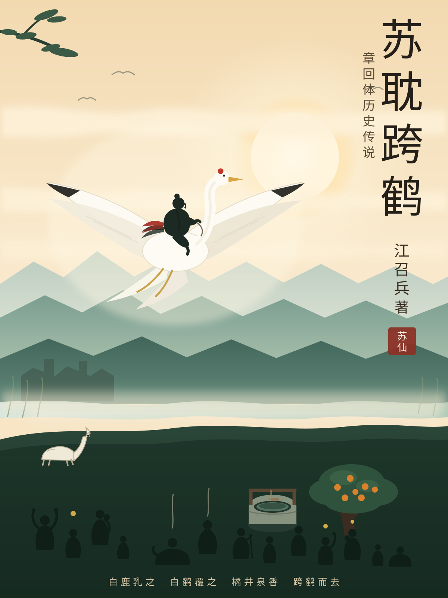

苏耽跨鹤
章回体历史小说
江召兵 著〔连载中〕
连载中 · 已完成 40 / 40 回。
全书拟五卷四十回、约二十万字，以明清章回体例写西汉桂阳郡苏耽事：感孕、弃婴、鹿乳鹤覆、橘井活人、跨鹤升仙、化鹤题楼，以及此后两千年传说的层累。
本页随写作进度更新；每回独立成篇，可自目录跳读。注释性史料见文末〈附记〉（成书时附上）。
扉页
苏耽跨鹤
章回体历史小说
江召兵 著
作者简介
江召兵，1979年3月生，湖南郴州永兴人。博士，教授，现任南京欧帕提亚信息科技有限公司董事长，兼任西北工业大学、南京航空航天大学、西安交通大学外聘导师。长期从事人工智能、流固耦合仿真与船舶海洋工程技术研究，主持国家级项目四项，参与南沙岛礁建设、大榭岛浮桥建设、舟山连岛大桥防撞系统等重大工程；获军队科技进步奖四项（其中一等奖一项）、中国航海学会科学技术二等奖、长航局科技创新一等奖等。著有《不确定年代的生存经济学》《史上最美数学图形》《运气工程学》。
永兴即汉便县故地，苏耽当年买鲊之处。本书取材于《太平广记》卷十三、《水经注》卷三十九、《历世真仙体道通鉴》卷十一、唐孙会《苏仙碑铭》及郴州口传文本，以明清章回体例重写苏耽跨鹤事。凡史有所据者依史，史所不详者以文学补之；虚实之间，具见书末附记。
一段无凭旧事，千年有口争传。
郴江春水绿如烟，洗出人间公案。
目录
- 第一回 郴江岸浣衣逢异藻 潘家门守节起浮言
- 第二回 桃花洞弃婴逢白鹿 牛脾山夜哭感青天
- 第三回 塾师拆字名苏耽 牧竖让草伏苍龙
- 第四回 七颗桃医娘心病 一筐石证仙缘深
- 第五回 便县鲊百里俄顷 舅家言一市皆惊
- 第六回 遇仙桥老翁授简 回春手少年悬壶
- 第七回 巫祝坛前争香火 病家门外问灵丹
- 第八回 卢郡守下车问俗 潘寡母闭户辞金
- 第九回 南越兵连长沙境 戍卒骨寄便县郊
- 第十回 军中热起千夫病 城下尸横万巷空
- # 第十一回 郡守封营禁市井 寡母破锁开柴门
- # 第十二回 一升井水活千命 半片橘叶回万春
- # 第十三回 药商囤货抬天价 郡守斩奸立信条
- # 第十四回 张主簿暗行察井 王老丈夜叩巫坛
- # 第十五回 石匣封缄留后约 木柜落锁掩前缘
- # 第十六回 紫云冉冉仙俦至 慈母灯前放旧衣
- 第十七回 五月望日万人仰 十只仙鹤半空来
- 第十八回 跨鹤台前留半印 牛脾山顶散群真
- # 第十九回 郡人尽见云中影 郡守空回山下祠
- # 第二十回 三年开柜双鹤去 一夜叩门四壁空
- 第二十一回 苏母七旬归黄土 仙郎半面现苍崖
- 第二十二回 掷经成桥渡郡吏 回头坠涧见赤龙
- 第二十三回 来鹤楼板留仙字 东门城下立新祠
- 第二十四回 望母松枝皆南向 十八福地始知名
- 第二十五回 开元敕修苏仙观 孙会撰述碑铭文
- 第二十六回 元符诏封冲素号 景定碑赐昭德君
- 第二十七回 秦少游词题旅舍 苏东坡跋寄扇头
- 第二十八回 米南宫书成三绝 邹知军刻上崖壁
- 第二十九回 徐霞客登山访古 袁知府立石传疑
- 第三十回 张九镡质疑仙迹 黄山谷戏咏丁仙
- 第三十一回 商城也种橘千树 郴水犹传井一泓
- 第三十二回 万历志中留旧事 乾隆碑上续新名
- 第三十三回 咸丰兵火焚殿宇 乡绅义捐复楼台
- 第三十四回 民国乱军争祠产 老道孤身护残碑
- 第三十五回 潘婆庵石碑出土 许家洞遗址惊人
- 第三十六回 文化馆采风问俗 老艺人击鼓说仙
- 第三十七回 省榜初登非遗录 国朝再列第四批
- 第三十八回 苏仙岭上游客众 郴江岸边旧井存
- 第三十九回 史家细辨五家说 传说原非一家言
- 第四十回 半足印前千秋月 一部书成万古心
- 附记 史料与虚构
- 参考文献
第一回 郴江岸浣衣逢异藻 潘家门守节起浮言
一段无凭旧事，千年有口争传。郴江春水绿如烟，洗出人间公案。
莫问萍从何至，且听人作何言。守节门内起波澜，试看此书开卷。
话说汉家天下，传到惠帝手里，已是第四代。长安城里，吕太后垂帘；南岭以外，赵佗拥兵。中原的诏书要翻五岭才到得桂阳郡，郡里的文书又要顺耒水下去，才到得长沙国。山高皇帝远，这话不假。
桂阳郡的治所，唤作郴县。县在岭北，四面是山，中间一块平地。郴江从南边山里出来，绕城一匝，往北去了。城东人家，多在江边浣衣。石埠一块接一块，被水磨得又平又滑，像一溜旧玉。每日天蒙蒙亮，便有妇人蹲在那里，棒槌起落，一声递一声，把一条江敲得热闹。
浣衣有浣衣的规矩。上游的水洗净衣，中游洗常衣，下游洗褥子、洗尿片。谁家媳妇不懂规矩，把脏东西提到上游去，第二日就有人在巷里指桑骂槐。石埠也分：上首三块是里正家的女眷用的，中段是众家的，最下游那一块，水缓，泥多，归最穷的人家。潘娘蹲的，就是最下游那一块。
浣衣不用皂角，用草木灰。灰滤出来的水是淡黄的，涩手。衣裳先在灰水里泡一泡，再搁在石板上捶。捶衣的棒槌是枣木的，用久了，槌头磨得发白。捶一阵，翻一面，捶完了，在江里摆三摆，绞干，搭在岸上的柳枝上。
冬天最苦。水冷得像刀，手背裂开一道道口子，晚上拿猪油抹一抹，第二日照样下水。妇人们一边捶衣一边说话，说东家的米，西家的鸡，说谁家的女儿许了人，谁家的男人出了远门。一条江，从早到晚，都是话。
县东有座山，不高，林子密，名叫牛脾山。山脚下有个洞，洞口一株老桃树，年年开花不结果，乡人叫它桃花洞。
郴县人信鬼。楚人信鬼，自古如此。人生了病，先请巫，再请医；巫烧龟甲，医按脉，两下里各说各话，谁也不服谁。人死了，也请巫，唱一夜，跳一夜，第二日才抬出去。县东有个巫祝，姓阿名章，脸上涂朱砂，跳起来脚不沾地，一县的人都敬他。
县里有里正，有乡三老。里正管催赋、管户籍、管邻里口角；三老管教化、管风俗、管那些“老规矩”。凡有伤风败俗的事，先经里正，再报三老，三老说一句，比官府的文书还重。
这些闲话，原不必细说。只因这一县之中，出了一桩奇事，两千年后还有人争，故先交代明白。
且说城东鸭子塘边，住着一户潘家。当家的是个寡妇，姓潘，人唤潘母。丈夫早年随军戍岭南，一去不回，留下两个女儿。大的嫁在耒阳，三年不回一次；小的名唤潘娘，生得眉目清秀，性子却闷，一日起不了三句话。她不爱串门，不爱说笑，只爱在院里种点东西，一株橘，一畦韭，都侍弄得齐整。
潘娘十九岁上，许了城南周家的次子。周家也是清白人家，聘礼是两匹布、一只雁、四十枚半两钱。成礼定在秋后。周家次子来过两回，头一回送雁，红着脸，一句话说完就走；第二回帮着挑了一担柴，挑到院里，放下就走，走了两步，又回头看了一眼。
那一眼，潘娘记了很久。
谁知那年八月，郡里点兵，周家次子被点了名，随军戍岭南。走的那日，稻子刚黄。潘娘站在巷口，看他挑着担子走远。他走到巷口，也回头看了一眼，随后就被人群挡住了。
去了一年，只来过一封木牍。字是请人写的，歪歪斜斜，末了添两个字：“勿念。”再往后，就没了。
去年冬天，同戍的回来一个，右手断了三根指头。他说：周家次子死在武水边上，瘴气一上来，三日就没了；坟头插了根竹竿，怕日后找不着。
潘娘哭了一场。哭完，把嫁衣拆了，改作两件短褐，一件自己穿，一件给娘。潘母劝她改嫁，说了三回。头一回，潘娘不答；第二回，潘娘说“不”；第三回，潘娘跪下来，说：“娘，我若是走了，周家那坟头，谁替他添土？”
潘母便不再劝。巷里人都说潘家女儿守节，是个好的。
——看官，这一段话要紧。往后有人说她守节，有人说她不守，两下里争了两千年，都从这一句“替他添土”上起。
惠帝四年，春水初涨。
那一年水暖得早。二月底，江面上就浮起一层薄薄的白气。潘娘提着一筐麻布下江，蹲在最下游那块石埠上，棒槌起落，一声一声，替这条江数着日子。
日头升到屋脊上，她抬手擦汗，忽然看见上游漂来一样东西。
不是枯枝，也不是死鱼。是一簇藻，五色，青、赤、黄、白、黑，一圈一圈缠在一起，像谁把五根丝线绞成的一朵花。水把它送到石埠边，竟不走了，就在她脚边打转。
潘娘伸手去拨。
那藻根缠住了她的手腕。不是挂住，是缠，软的，凉的，一圈一圈往上绕。她甩，甩不脱；她咬，牙刚碰到，那一簇藻就散了，化成一股凉意，顺着喉咙滑下去。
江面平静如常。上游有妇人说笑，下游有牛在饮水，谁也没有看见。
潘娘坐在石头上，半天没有动。她低头看自己的手腕，什么也没有，只一圈极淡的红痕，太阳一晒，就没了。
她把这桩事压在心里，连她娘也没说。
两个月后，她开始呕。
起初是清早干呕，后来闻见油腥就吐。潘母起先当她受了凉，熬了姜汤；喝了三日，不见好。请巫，巫烧龟甲，看了裂纹，说：“家宅不净。”画了一道符，贴在门楣上。又请医，医是个五十来岁的老人，按了脉，收回手，看她一眼，什么也没说，收了半升米就走了。
走到巷口，那医回头望了一眼潘家的门，摇了摇头。
第三个月，潘娘的腰身掩不住了。
巷子窄，窄巷子里的话传得快。先是浣衣的妇人不再与她同埠。她去东边，人家便往西边挪；她蹲下去，旁边的妇人便端起木盆，说是“水浑了”，换个地方。后来是挑水的汉子绕道走，绕得远远的，扁担换了个肩，头也不回。再后来，连她娘出门借簸箕，人家也要隔着门缝说话。
“周家那小子，死了快两年了。”
“可不是。”
“那是谁的？”
没有人问她。也没有人敢当她面说。可所有的眼睛都在问同一句话。
五月里，巷口泼起水来。
不是脏水，是清水，一瓢一瓢，泼在潘家门外的青石板上，泼得那一片地永远是湿的。这是郴县的老规矩，叫做“洗门”。谁家出了不干净的事，邻里便来洗他家的门；洗过七七四十九日，那家人若还住着，便算认了。
潘母头一日还拿扫帚去扫，第二日不扫了，任它湿着。第三日，她搬了张矮凳，坐在门内，从早坐到晚。谁来泼水，她便看着谁。泼水的人被她看得手软，一瓢水泼了半瓢，讪讪地走了。
也有不走的。有个妇人，是潘母年轻时的旧邻，泼完了水，站着不动，忽然说：“嫂子，我信你。”
潘母看了她一眼，没有谢，只说：“回去罢，你家也有孩子。”
那妇人走了两步，又回来，把瓢里剩下的半瓢水，泼在自家脚边，说：“这水，算我泼错了。”
里正也来了。
里正姓王，四十来岁，是个怕事的人。他站在门外，不肯进来，隔着门槛说：“潘家嫂子，不是我要来。三老那里问了两回，说这桩事，总得有个说法。”
潘母说：“什么说法？”
“孩子是谁的。”
“没有孩子。”潘母说。
里正看了一眼她的肚子，那是潘娘的肚子，隔着一道墙；可巷里人早已把月份算得清清楚楚。他叹口气：“嫂子，你这话，只能哄我。哄不得一巷子人。”
潘母说：“王里正，你也是做爹的人。我问你一句：我女儿若说，是江里一簇藻缠了她的手，你信不信？”
里正张了张嘴，半晌，说：“嫂子，我信不信，不当紧。三老信不信，才当紧。”
潘母站起来，把门关了。
那一夜，母女两个在灶前坐着。灶膛里压着一点暗红的火。
潘母往灶里塞了一把柴，忽然说：“你爹死得早，我一个人把你们三个拉扯大。你两个姐姐嫁得远，三年不回一次。我原指望你……”
她说不下去，用烧火棍拨了拨灰。
潘娘跪下来，额头抵着灶沿，说：“娘，我没有骗你。那一日江上漂来一簇藻，五色的。缠了我的手，我咬它，它就进了我的肚子。”
灶膛里的火“啪”地爆了一声。
潘母盯着她看了很久。那目光不是不信，是宁可不信。
“你要我拿这话去堵谁的嘴？”潘母说，“你到巷口说一遍，看看是信你的人多，还是往你身上吐唾沫的人多。”
潘娘没有再说话。
第二日，来了一个人。
是潘娘的舅母，从北乡来，提着一篮干枣。进门先叹气，坐下先喝水，喝了半碗，才说：“我听见了。”
潘母说：“听见什么？”
“听见一巷子的话。”舅母把碗放下，“妹子，我不是外人。你跟我说实话，孩子到底是谁的。你说出来，我去求他，哪怕是个贩夫走卒，只要肯认，也比这样悬着强。”
潘母说：“没有谁。”
舅母看她一眼，压低声音：“是不是周家老大？他弟弟死了，他常来这边走动……”
潘母“啪”地把碗顿在案上，水溅出来。
“你走。”潘母说，“枣留下，人走。”
舅母脸上挂不住，站起来，走到门口，又回头说了一句：“你护得了一时，护不了一世。那孩子生下来，是要上族谱的。族谱上写谁？”
潘母说：“族谱上不写，就不写。我潘家的孩子，我潘家养。”
舅母走了。潘娘在里屋，把这一句听得清清楚楚，眼泪一颗一颗落在膝上，没有出声。
过了几日，潘季来了。
潘季是潘母的兄弟，潘娘的舅舅，在北乡贩杂货。他挑着担子进门，把担子放在墙根，搓着手，不坐。
“妹子，我来，是替娘家人说一句话。”
潘母说：“你说。”
“族里听说了这桩事。你嫂子回去一说，几个老的急了，说潘家的女儿出了这样的事，往后潘家的闺女怎么说亲？他们叫我来讲：你把孩子送走，送到远远的地方去，就说是路上捡的，寄在别处养。这样，潘家还认你这门亲。”
潘母说：“送到哪里去？”
“北乡有户人家，没儿没女……”
“那是我的外孙。”潘母说。
潘季说：“我晓得。可族里……”
“族里给过我一粒米么？”潘母说，“我女儿吐了三个月，族里送过一把菜么？洗门那几日，族里谁来站过一站？”
潘季不说话了。
潘母说：“兄弟，你回去告诉他们：我潘家的门，我自己洗。洗到哪一日，我说了算。”
潘季站了一会儿，从担子里摸出一小包盐，放在案上，说：“这是我自己的，不是族里的。”
他挑上担子，走到门口，又回头说：“妹子，你别恨我。”
潘母说：“我不恨你。我恨那些光会说话的人。”
潘季站在门口，脸上的肉动了一动，像是要说什么，又咽回去了。他把担子换了个肩，低着头走了。巷子里的日头照进来，照在案上那包盐上。
潘季走了。盐包放在案上，纸包上有两个指头印。潘母把盐包收进灶间，收进去了，又拿出来，放在案上，看了半晌，才收进米瓮。
隔了两日，周家也来人了。
来的是周家的老大，带着两个族里的后生。进门不坐，站着说话。他说：周家虽穷，也是要脸面的；老二死了，尸骨都没收回来，如今外头传成这样，周家的门风往哪里摆？他说：这孩子生下来，周家不认；潘家要养，周家不管；只是从今往后，潘娘不再是周家的人。
潘母说：“她本就没过门。”
周家老大冷笑一声：“没过门，倒先有了。”
潘娘在里屋，把这一句听得清清楚楚。她没有出来。
周家人走了以后，潘母在院里站了半晌，忽然弯腰，把门内那摊湿印子，一瓢一瓢舀干。
隔了一日，巫祝阿章来了。
他不是自己来的，带了两个徒弟，还有一个五六岁的丫头，是他女儿阿禾。阿章穿一件赭色短衣，腰间挂一串桃木牌，进门不打招呼，先在院里走了一圈，走到井边，停下来，用脚尖点了点地。
“这院里有东西。”他说。
潘母说：“什么东西？”
“腥气。”阿章抽了抽鼻子，“不是人的腥，是水里的腥。”
潘娘在里屋，听见这一句，手一抖，把针扎进了指头。
阿章叫徒弟在院里摆开三块桃木、一碗清水、一把米。他披发，赤足，绕着院子跳，嘴里念念有词。跳到第三圈，忽然停住，指着井口说：“在这里。捞出来，烧了。”
徒弟拿竹竿往井里探，探了半天，什么也没有。
阿章的脸沉下来。他走到井边，自己探头去看，看了很久，回过头，说了一句没头没尾的话：“这井，通着江。”
潘母说：“先生，你到底看出什么了？”
阿章看着她，忽然压低声音：“潘家嫂子，我跟你说实话。这不是鬼，也不是邪。这是水里的东西，借了人腹。我烧得了符，烧不了它。”
潘母说：“那怎么办？”
阿章说：“生下来。”
潘母一愣。
“生下来，养着。”阿章把桃木牌收进腰里，“是祸是福，看他的命。你若信我，生产那日，我来。”
他带着徒弟走了。走到院门口，那个叫阿禾的丫头回过头，看了潘娘一眼。她的眼睛很亮，看完了，也不说话，跟着她爹走了。
阿章走后第二日，何塾师来了。
何塾师是巷尾开蒙馆的老书生，鬓角全白，走路一摇一摆，手里总捏着一卷书。他进门，先不坐，从怀里摸出一块木牍，放在案上。
“你家的。”他说，“前日驿上捎来的，压在我那里半个月了。”
潘母捧起木牍，看了半晌，又放下。她不识字。
何塾师说：“要我念么？”
潘母点头。
何塾师拿起木牍，眯着眼念：“潘家阿娘安好。军中有令，不得私通书信。前托人带话，不知到否。若不至，勿等。周家二哥。”
念完了，屋里静了很久。
潘母说：“先生，这是什么时候写的？”
何塾师翻过木牍看了看：“上头没写日子。驿上捎来时，人已经……”
他没有说完。
潘娘在里屋，把这一字一句都听进去了。她想起那封只写着“勿念”的木牍，想起巷口那个回头，忽然明白：这两封木牍，一封写于人还活着时，一封写于人将死时。前一封说“勿念”，后一封说“勿等”。
她把脸埋进被子里，没有哭出声。
何塾师在堂上坐了一会儿，忽然说：“潘家嫂子，我多一句嘴。”
潘母说：“先生请说。”
“这孩子，你打算怎么办？”
潘母不答。
何塾师说：“三老那里的规矩，我晓得。可我读了一辈子书，只读到一句话：人命关天。”他把书卷往案上一放，“你若肯生下来，我教他识字。束脩不要，一斗米就成。”
潘母看着他，眼圈红了。
何塾师站起来，走到门口，又回头说：“还有一句。这孩子生下来，总要有个名字。名字我给他起。”
说完，一摇一摆地走了。
六月，三老传潘母去说话。
三老姓陈，七十多了，是县里辈分最高的老人。他坐在堂上，面前摆着一碗凉水。他说：潘家的事，县里都知道了。按老规矩，这样的孩子，生下来是要“洗”的。不是洗门，是洗人：抱到江边，浸一浸，浸得活的，是命；浸不活的，是天的意思。
潘母说：“陈老，这是要杀人。”
陈三老说：“我没说要杀。我说的是老规矩。”
潘母说：“老规矩也是杀人。”
陈三老把碗里的水喝了，慢慢说：“潘家嫂子，我知道你难。可你要想明白：这孩子若生下来，你女儿这辈子就完了；若生不下来，她还能嫁人。你自己掂量。”
潘母从陈家出来，天已经黑了。她一路走，一路想，走到自家门口，忽然觉得腿软，扶着墙站了一会儿。墙上有一道裂缝，缝里长着一株草，风一吹，草叶蹭着她的手。
那一夜，她做了一个梦。
梦里她站在江边，江水是黑的，江心有一簇五色的藻，一明一暗。有个声音在她耳边说：“这孩子不是来讨债的。”她问：“那是来做什么的？”那声音说：“来还的。”
她惊醒过来，出了一身汗。
她翻身去摸身边的女儿，摸了个空。
潘母坐起来，叫了一声“阿娘”，没有人应。她点了灯，屋里屋外找了一遍，没有。院门开着，门闩落在地上。
她提着灯往江边去。
那一夜有雾。雾从江面上起来，一团一团，把石埠、柳树、远处的城墙都裹了进去。灯火只能照见脚下三尺。她一边走一边喊，喊声被雾吞了，连回音都没有。
石埠一块一块数过去，都是空的。水声很轻，像有人在很远的地方淘米。她想起女儿小时候，也是在这条江边，蹲在她身旁，把一只陶罐洗了又洗，洗得能照见人影；她想起那一年冬天，女儿替她挑水，扁担压得肩膀红肿，夜里她替女儿揉，女儿说不疼。
她想：若是今日找不见她，我也不回去了。
走到下游那块石埠边，她站住了。
江水里站着一个人。
水齐到膝上，衣裳全湿了，头发贴在脸上。那人背对着她，一动不动，手里攥着一簇东西。
潘母把灯举高。
灯下看得分明：是潘娘。她手里攥着的，是一簇藻，青、赤、黄、白、黑，五色缠在一起，在水里微微地动。
“阿娘！”潘母喊。
潘娘回过头来。她脸上没有泪，也没有笑，只是很静地说了一句话：
“娘，它又来了。”
毕竟潘娘夜半立于水中，是生是死，那五色藻又是何物，且听下回分解。
第二回 桃花洞弃婴逢白鹿 牛脾山夜哭感青天
桃花洞口草萋萋，白鹿衔芝乳幼啼。
莫道人间无慈母，山禽也解覆寒衣。
话说潘母提灯立在石埠上，看见女儿站在水里，手里攥着一簇五色藻，只觉一股凉气从脚底直冲上来。她把灯往岸上一放，鞋也不脱，踏进水里，一把将潘娘拽住。
“上来。”
潘娘不动。
潘母用力一扯，把她拖到岸上。潘娘浑身湿透，手里的藻却攥得死紧。潘母伸手去掰她的手指，掰开一根，她又合上一根，掰到第三根，潘娘忽然说：“娘，别掰。它在我手里，我就安心。”
潘母的手停在半空。
那一夜，母女两个坐在江边，坐到天亮。雾散了，江水一寸一寸白起来。潘母说：“回家。”潘娘说：“好。”
三日后，巫祝阿章又来了。
他不跳了，也不烧符，只坐在院里，把那簇藻看了半晌，说：“五色的东西，我在山里见过两回。一回在桃花洞的水里，一回在牛脾山顶的石缝里。”他抬起头，“潘家嫂子，这孩子怕是跟那座山有缘。”
潘母说：“先生，我只问你一句：这孩子生下来，是不是祸。”
阿章想了很久，说：“是祸是福，我说不准。我只晓得一件事：水里的东西借了人腹，你若硬要打下来，那是两条命。”
潘母不再问。
三老那里又传了一回话，这一回话说得重了：潘家若不肯“洗人”，便请搬出鸭子塘，免得坏了这一巷的风水。
潘母回了一句话：“我家三代住在这里，我丈夫的骨头还埋在岭南，搬到哪里去？”
传话的人没有话说，走了。
过了两日，三老堂上传话，叫潘母去。
三老堂在城东土地祠后头，三间瓦房，一张长案。陈三老坐中间，两边坐着四个族老，王里正站在下头。长案上摆着一只陶碗，碗里是清水。
陈三老说：“潘家嫂子，今日叫你来，是把话摆在明处。你说，孩子是谁的。”
潘母说：“我说过。江里一簇藻。”
一个族老说：“嫂子，这话哄孩子还行。一县的人都长了眼睛。”
潘母说：“我女儿长了嘴。她说是什么，就是什么。”
族老说：“她说的，我们不信。”
潘母说：“你们不信，我也没有法子。可你们要我做的，是要我外孙的命。”
堂上静了一静。
另一个族老慢慢说：“嫂子，老规矩不是我们要吃人。是县里不能没有规矩。今日你家这样，明日他家这样，人伦就乱了。人伦一乱，赋税谁交，兵役谁出？”
潘母说：“我家交赋税。我家出过兵役。我丈夫死在岭南，骨头都没回来。”
族老不说话了。
陈三老把碗里的水喝了一口，说：“潘家嫂子，我再问你一句：你若不肯，三老堂上就只好断了。断下来，你搬也得搬，不搬也得搬。”
潘母说：“那就断。”
堂上的人都看她。王里正在下头，急得直搓手。
陈三老看了她很久，把碗放下，说：“散了吧。三日后再议。”
潘母转身出门。走到阶下，听见背后一个族老低声说：“这妇人，硬得很。”
潘母没有回头。三老堂的门在她身后关上，门轴响了一声。
隔了两日，三老亲自来了。
陈三老拄着一根鸠杖，身后跟着两个族老、一个里正。他没有进门，站在院中那口井边，看了看井，又看了看屋檐下的橘树，才开口：“潘家嫂子，我今日来，不是逼你。我是来告诉你一件事。”
潘母说：“陈老请讲。”
“县东三十里，有个李家坳。去年也出了这样一桩事。”陈三老用鸠杖点了点地，“那家的女儿也是未嫁有孕。族里按老规矩，把孩子抱到江边浸了。母亲当夜投了塘。如今那一家，剩个孤老，田也荒了。”
潘母不作声。
“老规矩不是我们定的，”陈三老说，“是祖宗定的。祖宗为什么定这个规矩？因为一个县里，若人人都这样，就没有人伦了。人伦一乱，赋税谁交，兵役谁出，祖宗谁祭？”
潘母抬起头：“陈老，我问一句。祖宗定的规矩里，有没有一条：把活生生的孩子按在水里，是积德？”
陈三老沉默了一会儿，说：“没有。”
“那这一条，就不是祖宗的规矩，是后来人自己添的。”
院里静下来。里正在旁边咳嗽了一声，一个族老低声说：“陈老，她这是狡辩。”
陈三老抬手止住他，看着潘母，忽然说：“你读过书？”
“不识字。”
“不识字，倒会说话。”陈三老拄着鸠杖，慢慢转身，“我再给你三日。三日之后，三老堂上再议。议定了，你若还不肯，那就不是议，是断。”
他走到院门口，又停下，没有回头，说了一句：“潘家嫂子，我年轻时，也遇见过这样的事。那一年，我什么也没做。”
说完，带着人走了。
潘母在院里站了很久。她忽然觉得，这个七十多岁的老头，比那些泼水的人更难对付。
看官，三老堂议，是怎么一个议法？
郴县的三老堂，在城东土地祠的后头，三间瓦房，一张长案。案上不摆官印，只摆一只陶碗，碗里盛清水，意思是：议的事，要像水一样清。三老坐中间，族老坐两边，里正站在下头回话。
议一条事，先由里正说缘由，再由族老说规矩，最后由三老说断。断有三种：一是“劝”，劝了不听，便是“责”；责了不改，才是“断”。断不是官府断案，不出文书，不打板子，可一县的人认它。断错了，也没人翻案。
洗人这一条，是三老堂的老规矩。郴县人记得的，上一回洗人，在去年，李家坳；再上一回，在二十年前，北乡。两回洗的都是刚落地没几日的孩子，两回都没洗活。三老堂的旧木牍上记着这两笔，字很小，写在最末一行的角上。
三老走后的第二日，周家老大带着四个族人来，不进门，只把一领旧席铺在巷口，坐下。这是郴县老法：族里讨说法，坐席不走；主家不出来，便算理亏。
坐席也有坐席的讲究。席要旧的，旧席才显得是过日子的人家；人要背对街口，脸朝主家，意思是把话说在明处；坐的人不喝水，不吃饭，也不骂人，只坐着。坐到日落，主家再不出来，族里便能“断亲”。断亲不是写文书，是当面说一句话，说完，两家从此不通婚丧，不同席，不共一口井的水。
潘母出门，站在席前。
周家老大说：“二弟的骨殖还在岭南，你就让野种占了他的名分？”
潘母说：“你二弟临走，回头看了阿娘一眼。那一眼还热着。你今日坐在他媳妇门口，说的是什么话。”
围看的人不言语。
周家老大拍席而起，指着潘母：“三老已经定了，洗人。你敢违？”
潘母转身进屋，拿出一把柴刀，横在门槛上。
“谁进来抱孩子，先从我身上过。”
她坐下，把刀放在膝上，从早坐到晚。
看官，你道潘母一个寡妇，哪里来的这副胆？后来有人说，那一日她膝上还压着一件东西——她丈夫戍岭南时留下的一枚半两钱。
周家坐到日落，散了。三老那边，三日之限，也再没提。
《诗经》有云：“哀哀父母，生我劬劳。”看官记着这八个字，后文还有用。
七月十五，天热得像一口倒扣的锅。
蝉从清早叫到晌午，叫到后来声音都劈了。潘娘在屋里，从半夜就开始阵痛，痛到午时，已经喊不出声。阿章在院里设了坛，烧桃木，念咒；阿禾端着一盆热水，进进出出，额上全是汗。
阿章设的是随身的坛。三块桃木牌插在土里，按东、南、西三个方向；一碗清水搁在当中；一把米撒成一个圆圈。他披了发，赤了脚，脸上涂朱砂，腰间挂一串铜铃。
他先绕坛走三圈，一步一顿，脚底板踩在土上，不出声。走到第三圈，铜铃响了一下。他停住，仰头，念：
“天门开，地户闭。水里的，回水里。山里的，回山里。要生的，顺生；要走的，顺走。”
念完了，他抓起一把米，往产妇的屋门上一撒。米粒打在门上，噼噼啪啪，像下了一阵急雨。
阿禾在灶间烧水。水开了，她提起来，又放下，拿手在盆沿上试了一试，再提起来。她个子矮，够不着锅，要踩一只小杌子。
潘母守在床边，一只手被女儿攥着，攥得青紫。
“娘，”潘娘忽然说，“若是生不下来，先保我。”
潘母眼泪掉下来：“胡说。”
“我是说真的。”潘娘喘着气，“我还没给他添过土。我死了，谁替他添土？”
潘母把她的手贴在自己脸上：“你活着，才能添土。”
酉时，孩子落地。
哭声很响，响得把院里的鸡都惊飞了。阿禾把孩子抱起来，用旧布裹了，递到潘母手上。潘母低头一看，是个男孩，脸红皱皱的，眼睛还没睁开，两只小手攥成拳头。
她忽然想起丈夫走的那年，也是这样的夏天。
孩子落地那一刻，潘娘就昏了过去。昏过去之前，她只说了一句话：“让我看看。”
阿章收起桃木牌，走到门外，抬头看天。天上没有云，晚霞烧得正红。他回过头，对潘母说：“这孩子生得不寻常。你看西边。”
西边天上，有一只白鸟，正往牛脾山那边飞。
第三日，三老家的一个后生来了，站在门外，说三老有请。
潘母把门开了一条缝，说：“孩子刚落地，我走不开。”
后生说：“三老说了，请潘家嫂子把孩子也带去。”
潘母的脸白了。
“带去做什么？”
后生不答，只说：“三老在江边等。”
潘母把门关上，回到屋里，抱起孩子，又放下；放下，又抱起。她在屋里走了十七八圈，忽然停住，转身对阿禾说：“你去，跟你爹说，请他到三老那儿走一趟。”
阿禾跑了。
半个时辰后，阿章回来了。他脸色很沉，进门就说：“三老要看孩子。看完了，按老规矩，抱到江边浸一浸。”
潘母说：“这不是要孩子的命么。”
阿章说：“是规矩。”
“规矩是死的，孩子是活的。”
阿章沉默半晌，忽然说：“嫂子，我给你指一条路。今晚你抱孩子上山，放在桃花洞。洞口冷，可洞里有水，有草。放七日。七日之内，你若能证明这孩子有神护，我去替你说；若不能，那就是天意。”
潘母说：“怎么证明？”
“七日之后，你去看。若活着，就抱回来。”阿章看着她，“活着，就是证明。”
潘母说：“若是死了呢。”
阿章没有答。过了一会儿，他说：“嫂子，我在这县里跳了三十年傩。见过的孩子，没有一百也有八十。没有一个，是水里的东西送来的。”
他忽然压低声音：“桃花洞那个地方，我小时候听我师父说过。说洞里有一头白鹿，不知多少年了，有人看见它在洞里吃草，有人看见它在山顶上站着。我师父说，那不是鹿，是山里的气。”
潘母说：“先生信么？”
阿章说：“我不信。可我也不敢说不信。”
他站起来，把桃木牌收进腰里，走到门口，回头说：“今夜若去，走山北那条小路。南边有巡夜的。”
那一夜，潘母在女儿床边坐了很久。
潘娘睡着，脸朝里，一只手露在被外。潘母把那只手放回被里，潘娘就醒了。她没有转身，也没有睁眼。
母女两个，一个坐着，一个躺着，都不说话。
过了很久，潘娘说：“娘，你去睡罢。”
潘母说：“我坐一坐。”
又过了很久，潘娘说：“娘，你要是没法子，就送走罢。”
潘母的手停在被角上。
“送到哪里去？”她说。
“哪里都行。”潘娘说，“只要他活着。”
潘母没有说话。她把被角掖好，站起来，走到门口，又回来，在床边坐下。
潘娘的肩膀在被子底下抖。抖得很轻，像风吹过一片叶子。
潘母伸手，在她背上拍了三下，一下比一下轻。
“睡。”她说。
潘娘不动了。潘母替她把被子拉到下巴，看见她眼角有一道湿痕。湿痕在枕上洇开一小片。
潘母想起生他那夜，女儿攥着她的手，攥得青紫。女儿说：“娘，若是生不下来，先保我。”她说：“胡说。”女儿说：“我是说真的。”
那时她以为，最难的一夜已经过去了。原来没有。
她坐在床边，一直坐到月亮上来。月亮被云遮着，屋里只有窗外一点灰白的光。她看着女儿的后背，看了很久，才站起来，去抱孩子。
潘母把孩子裹在襁褓里，又裹了一层旧衣。她背对着里屋，不敢看女儿。潘娘还在昏睡，睡梦里皱着眉头。
“阿娘，”潘母在心里说，“娘不是狠心。娘是没法子。”
她抱着孩子出了门。巷子里没有人。她绕开正街，从巷尾的菜园出去，往北走。牛脾山在城东北，山不高，可夜里的山像一只伏着的兽。
她走得很慢。怀里的孩子很轻，轻得不像一个活人。
走到山脚，她站住了。
桃花洞在眼前。洞口那株老桃树，花开过了，结了几个青涩的小桃子。洞里有水滴落的声音，一滴，两滴，很规律。
看官，这桃花洞，郴县人有三种说法。
一说洞里有一头白鹿，不知几百年了。晴日里有人见它在洞口吃草，见人也不惊，只把耳朵转一转，慢慢地走进深处去。追进去看时，洞里只有石头。
一说这洞通着江。洞里有一道水，从石缝里渗出来，冬暖夏凉。有人拿一截麻绳拴了石头放下去，放了三丈，绳子忽然轻了，拽上来，石头没有了。那人吓得三日没有说话。
一说这洞原是没有名字的。洞口那株桃树，年年开花，不结果。有个老道士说，这树是山里自己长出来的，比郴县的人还早。郴县人便叫它桃花洞。
三说并存，谁也说不服谁。只有一样，郴县人都认：这洞里的东西，动不得。
潘母站在洞口，听见洞里水响，响一声，停一停。她想起阿章的话：这洞里有水，有草。她心里说：有水，有草，就够了。
潘母跪下，把孩子放在洞里一块平整的青石上。青石是干的，被水汽浸得微凉。她把襁褓裹紧，在边上压了一片瓦，怕山风灌进去。
然后她对着洞口，说了一句话。这句话后来被郴县的人传了两千年：
“我儿该成人，七日之后活生生；不成人，七日之内早归阴。”
说完，她磕了三个头。第一个，谢天；第二个，谢地；第三个，谢洞里的神明。
她站起来，走了两步，又回头。洞里黑黑的，什么也看不见。
她想起孩子落地时那一声哭。那声哭现在还在她耳朵里。
她蹲下去，捂住嘴，哭了一场。哭完了，把眼泪擦干，站起来，下山。
回到家里，天已经蒙蒙亮。她进门，看见女儿坐在床上，睁着眼睛。
“娘，”潘娘说，“孩子呢。”
潘母说：“孩子没保住。”
潘娘看着她。
“你说什么？”
“孩子生下来就弱，撑了两日，没撑住。”潘母说，“我把他埋在城外了。”
潘娘没有说话。她慢慢躺下去，把被子拉过头顶。被子里很静。
潘母站在床边，站了很久。
那一日，潘家没有开火。
第四日，潘娘起了床。
她没有哭闹，只是穿好衣裳，梳了头，走到院里，看着井发呆。潘母叫她吃饭，她吃了半碗；叫她睡，她睡了半个时辰。
第五日，她忽然说：“娘，我去城外给他添把土。”
潘母心里一紧。
“天热，”她说，“过些日子再去。”
第六日，潘娘不见了。
潘母找遍了巷子，找遍了江边，最后想起一件事：她昨夜听见女儿在梦里叫了一声“桃花洞”。
她提着裙角往山上跑。
跑到山脚，正看见潘娘从洞里出来。潘娘怀里抱着个东西，走得很慢，一步一步，像抱着全世界的分量。
潘母站住了。
潘娘走到她面前，把孩子递给她。
襁褓是热的。孩子睁着眼，不哭。
“谁喂的他？”潘母说。
潘娘不答，只说：“娘，你自己去看。”
潘母进洞去看。
洞里有一头鹿。
白鹿。卧在青石旁边，见人进来，也不惊，只抬起头看了一眼。它的腹部湿了一片，乳头还在滴奶。
洞的另一角，有一堆极细的白羽，像是有什么东西在这里伏过。洞顶有一道石缝，晨光从缝里漏下来，正落在青石上。
潘母退出来，腿一软，坐在洞口。
她想起自己那一夜的祷告：七日之后活生生。
今日，正好第七日。
潘娘坐在她旁边，说：“娘，你说孩子埋了。”
潘母不答。
“我不怪你。”潘娘说，“你怕我活不下去。”
潘母的眼泪流下来。
“你听我说，”潘娘说，“我在洞里看见它的。它把翅膀张开，盖在孩子身上。它看见我，也不走。”
“你看见什么？”
“白的。”潘娘说，“很大，很静。”
母女两个抱在一起，哭了一场。哭完了，潘母站起来，把孩子接过来，抱在怀里。
“回家。”她说。
下山时，太阳正好升到牛脾山顶。山路上有露水，草叶湿了两个人的裤脚。
走到巷口，遇见一个人。
是王怀，巷东王家的老二，二十来岁，胆子大，嘴也快。他挑着一担柴，正往城里去，看见潘母抱着个襁褓下山来，愣了一下。
“潘家嫂子，这孩子——”
潘母说：“我的外孙。”
王怀张了张嘴，忽然抬头，往屋顶上看了一眼。
“你家屋顶上，”他说，“是什么？”
潘母抬头。
屋顶上什么也没有，只有一缕炊烟，笔直地升上去。
王怀揉了揉眼睛，又看了一遍，脸色变了。他把柴担往地上一放，退后两步，指着那片屋顶，声音发抖：
“白的。一只大鸟。刚才还在。”
潘母没有说话。
王怀看着她怀里的孩子，又看看屋顶，忽然打了个寒噤。他挑起柴担，头也不回地走了。走到巷子拐角，才回过头来，远远地喊了一句：
“潘家嫂子，你家这孩子，怕不是凡人！”
这一句话，半日之内传遍了鸭子塘。
毕竟王怀所见究竟是何物，那白鹿白鹤又是从何处来，且听下回分解。
第三回 塾师拆字名苏耽 牧竖让草伏苍龙
禾草穿鱼字是苏，枕根而卧字为耽。
人间名字皆偶然，偶然深处有天心。
话说王怀那一句“怕不是凡人”，半日之内传遍鸭子塘。有信的，有不信的；信的添油加醋，不信的撇嘴说王怀挑柴挑花了眼。潘母一概不答，只把院门关得紧些，把孩子养在屋里。
孩子长到三岁，还没有正名。巷里人唤他“阿萍”——这名字不是名字，是一句闲话。潘母听在耳里，恨在心里，可也没法。
孩子不爱说话。别的孩子在江边打水仗，他坐在石头上看；别的孩子上树掏鸟窝，他站在树下看。看过的他都记得：哪一株草什么时候开花，哪一棵树的皮能嚼，哪一种菌子吃了要吐。三岁那年，潘娘病了，他自己跑到坡上，摘了一把叶子回来，煮了一碗黑水，端到床前。
潘娘问：“这是什么？”
他说：“鹿吃的。”
“哪头鹿？”
“白的。”
潘娘不再问，把水喝了。第二日，烧退了。
潘母在旁边看着，一句话也没说，转身出去，在院里站了很久。
七岁那年春天，苏耽跟着阿禾上山采药。
阿禾已经十四岁，个子高，走路快，背着一只竹篓，篓里插一把小锄。她爹阿章不许她跟苏耽来往，说苏家那孩子“眼睛里没有神”。阿禾不听，照旧来。
“这是什么？”阿禾指着一丛开紫花的草。
“远志。”苏耽说。
“做什么用？”
“安神。心病的人吃了，夜里不做梦。”
“你怎么知道？”
“鹿不吃它。”苏耽蹲下来，掐了一片叶子放在鼻下闻，“鹿吃的是另一边那种，叶子像手掌的。那种是安胎的。”
阿禾看着他，忽然说：“你说话，怎么像个小老头。”
苏耽不答，把远志连根挖出来，抖掉土，放进篓里。
阿禾又说：“我爹说，你是江里捡来的。”
苏耽手上停了一下。
“我娘说，我是从桃花洞抱回来的。”他说。
阿禾“哦”了一声，没有再问。两个人一前一后往山上走，露水打湿了裤脚。
这一年，潘母提了一斗米、两只鸡，去巷尾找何塾师。
何塾师正在院里晒书。他把书一本一本摊在竹席上，拿鸡毛掸子轻轻拂，像拂什么了不得的宝贝。听见脚步声，头也不抬：“潘家嫂子，稀客。”
潘母把米和鸡放下，说：“先生，我来求你给我外孙取个名字。”
何塾师放下掸子，看了她一眼。
“取名？”他捋了捋胡子，“取名是大事。你且说说，这孩子有什么异处。”
潘母说：“没有异处。就是个孩子。”
何塾师笑了：“没有异处，你抱一斗米来？”
潘母不答。
何塾师想了想，说：“也罢。你明日把他带来，我看看。”
第二日，潘母把苏耽带到何家。孩子站在堂中，不说话，也不怕生，眼睛看着院里那棵老槐树。
何塾师问他：“你叫什么？”
孩子说：“阿萍。”
“阿萍不是名字。”何塾师说，“你出去站一站，看看门外有什么。看见了什么，回来告诉我。”
孩子出去了。
何塾师端起茶碗，喝了一口，对潘母说：“这孩子眼睛太静。静得不像个七岁的。”
话音未落，孩子回来了。
“看见什么了？”何塾师问。
孩子说：“门外有个人，担着一担禾，走累了，坐在树下歇。他把草绳穿过鱼鳃，把鱼挂在树枝上，自己枕着树根睡着了。”
何塾师端着茶碗的手停在半空。
他放下碗，站起来，走到案前，取过一支秃笔，在沙盘上画。
“你看，”他说，“禾草穿鱼——禾在左，鱼在右，中间一束草绳系着。这是个‘蘇’字。”
他又画：“一个人，枕着树根卧——左边是树，右边是人，人靠着树，是个‘耽’字。”
他放下笔，看着孩子。
“你就姓苏，名耽，字子安。”
潘母在旁边，听不懂这些笔画，可听见“姓苏”两个字，眼泪忽然下来了。
她想起这三年，孩子一直叫“阿萍”，巷里人叫一声，像拿针扎她一下。今日孩子有了姓，有了名，她心里那块石头，落了一半。
何塾师看她一眼，说：“怎么？”
潘母擦了擦眼睛，说：“没什么。他外公死得早，没赶上抱他一回。”
何塾师“哦”了一声，没有再多问。
看官，你道汉人取名，为何这般郑重？原来汉家制度，男子二十而冠，冠而字；女子十五而笄，笄而字。名是父母所赐，字是宾客所赠。名只一个，字却有讲究：字要与名相应，或同义，或反义，或补充。苏耽名“耽”，字“子安”，便是取“耽”字本义里那一点“安”的意思——耽者，乐也，安也，久也。
何塾师后来跟人说起这桩事，说：“我给他取这个字，不是随口。‘耽’有两层意思：一层是沉溺，一层是久乐。我盼他别沉溺，可他偏偏……”
说到此处，何塾师便不说了。
从那天起，孩子有了名字，叫苏耽。
看官，你道这拆字取名，是乡塾先生的杜撰么？也不是。屈子《离骚》开篇便说：“皇览揆余初度兮，肇锡余以嘉名。”古人得名，或取于物，或取于象，或取于梦中一见。何塾师用门外一景给这孩子定了终身，说来也寻常；不寻常的是，那孩子听了，没有笑。
苏耽七岁上，何塾师的蒙馆开了。束脩是一斗米、一把干柴。潘母把家里最后一支银簪当了，换了一斗米。何塾师接过米，叹了口气，说：“这米，我收一半。剩下一半，你拿回去，给孩子添件衣裳。”
何塾师的蒙馆，在巷尾一间旧屋里。屋是租的，三面土墙，一面开门。屋里没有案几，地上铺几张旧席，孩子们盘腿坐着，膝上搁一块木板，板上铺沙，拿竹签在沙上画字。画满了，抹平，再画。
先生坐的地方，比别处高一层，摆一张矮案，案上一只沙盘、一支秃笔、一把戒尺。案角搁一只酒壶，壶上盖一只粗碗。他讲到高兴处，喝一口；讲到不高兴处，也喝一口。
束脩之外，也有送两条鱼、一捆竹简的。何塾师一概收下。谁家孩子笨，他就多教两遍；谁家送得多，他也不多看一眼。收下的米，他一半自己吃，一半接济馆里最穷的两个孩子。
午饭不回家吃。孩子们带一个冷饭团，用布包着，搁在门外的太阳底下晒。晒到晌午，饭团温了，就着凉水吃。何塾师有时候从屋里出来，看见谁家的饭团太小，就把自己的掰一半给他，说：“吃罢。吃完了，多写十个字。”
蒙馆的规矩，戒尺有三用：敲案，是警告；敲人手心，是罚；挂在墙上不动，是吓。何塾师用了三十年戒尺，敲案的日子多，敲手心少。他说：“打手心，打的是记性；骂一句，骂的是脸皮。脸皮比记性薄。”
那一年春天，阿章到蒙馆门口来了一回。
他是来给巷尾一户人家送桃木牌的，牌上刻着符。路过蒙馆，看见何塾师在门口晒书，站住了。
“何先生，你这些书上，有没有治病的字？”
何塾师抬起头：“有。书上有药名，有病症。”
阿章说：“字能治病？”
何塾师说：“字不能治病。字能把治病的法子记下来，传下去。”
阿章把自己腰间的一块桃木牌解下来，递过去：“那我这个呢？”
何塾师接过来，翻来覆去看了半天。牌上的符，有的像云，有的像水，有的像一条盘着的蛇。
“这不是字。”他说。
“这是符。”阿章说，“符也是字。人看不懂，鬼神看得懂。”
何塾师笑了一声：“鬼神认字么？”
阿章说：“鬼神不认字，认气。字是给气引路的。”
何塾师把牌子还给他，说：“我教了一辈子字，只晓得字是给人看的。人看了，记住了，用了，字才活着。鬼神看不看，我不晓得。”
阿章把牌子收进腰里，说：“先生教的是活人的字。我刻的是给鬼神看的字。”
何塾师说：“你这话，说得重了。”
阿章说：“不重。人病了，先找我，后找你。我的牌先挂，你的字后到。”
何塾师没有说话。
阿章走了两步，又回头：“先生，你那个学生，苏家的，他认你的字，也认我的符。你说，他算哪一路的？”
何塾师说：“他认得草。”
阿章愣了一下，笑了一声，走了。
孩子们趴在门口看，看完了，回头看先生。何塾师把书翻开，说：“接着念。”声音比往日低。
何塾师教书之外，还替人写字。写一封信，收两枚半两钱；写一块木牍，收一把米；写状子，不收钱，还倒贴一刀竹简。县里人叫他“何先生”，没有人叫他“何秀才”。他考了一辈子，连秀才也没考上。
他有一部《仓颉篇》，翻得起了毛边，页角拿米汤粘过三回。他教字，不照着书念，念一个字，就讲一个故事：讲“鱼”字，讲江里的鱼怎么逆水；讲“鹿”字，讲山里的鹿怎么护崽。孩子们爱听故事，字就记得牢。
有一年县里来了新令，要各乡报户口。里正不会写，来求他。他写了三日，写完，把竹牍往案上一放，说：“我这一辈子，就会写几个字。”
蒙馆里十几个孩子，苏耽最小，坐最末一排。何塾师教《仓颉篇》，教一个字，讲一个字。讲到“水”字，苏耽举手。
“先生，水为什么这样写？”
何塾师说：“水，象形。中间一道是水流，两边是浪。”
“那江水的水，和井水的水，为什么是一个字？”
何塾师愣了一下，说：“都是水，自然是一个字。”
“可江水是流的，井水是不动的。”苏耽说，“流的水会淹死人，不动的水能救活人。它们不一样。”
何塾师张了张嘴，没有答上来。
蒙馆里十几个孩子，大的十二三，小的六七。王狗儿坐在中间，嗓门最大，字写得最差。他见先生答不上来，便在下面偷笑，拿小石子扔苏耽的后背。
苏耽不回头。
王狗儿见他不动，越发来劲。他探过身，把苏耽膝上的木牍抽走。那是苏耽刻药名的册子，刻了半年。
王狗儿举着册子，在头顶晃了两晃，说：“这是什么破烂？”
苏耽说：“还我。”
“你骂我一句，我就还你。”
苏耽不骂。
王狗儿把册子往门外一扔。册子落在院里的泥地上，散了两块。
苏耽站起来，走出去，把木牍一块一块捡起来，用袖子擦干净，放回膝上，接着刻字。
蒙馆里静得很。何塾师坐在案后，把这一切看在眼里，没有出声。
王狗儿坐回去，坐了一会儿，忽然觉得没有意思，拿起沙盘胡乱画了几笔，推到了一边。
散学以后，苏耽还在刻。何塾师走过来，看了看他的木牍，说：“他扔你的，你为什么不告？”
苏耽说：“告了，先生罚他。罚完了，他还扔。”
何塾师说：“那你怎么办？”
苏耽说：“我刻我的。”
何塾师站了一会儿，说：“你这个人，长大了要么成器，要么吃亏。”
苏耽说：“先生，什么叫成器？”
何塾师说：“就是人家扔了你的东西，你捡起来，还能接着用。”
苏耽把这一句记住了。后来他刻了一块小木牍，把这句话刻在上头，挂在灶后的墙上。那块木牍，一直挂着。
王狗儿又扔了一颗，正打在苏耽后颈上。苏耽这才回过头，看了他一眼。
那一眼很平，不恼，也不怕。王狗儿却忽然觉得后背发凉，手一松，石子掉在地上，滚到何塾师脚边。
何塾师捡起石子，看了看，说：“王狗儿，你过来。”
王狗儿过去，伸出手。何塾师拿戒尺在他手心打了三下，说：“打你三下，一下为扔石子，一下为扔人后背，一下为扔了还笑。”
王狗儿哭丧着脸回座，从此不敢再惹苏耽。
王狗儿是王怀的侄子。他爹死得早，他娘替人洗衣裳，把他拉扯大，送进蒙馆，指望他识几个字，将来能在县里当个书手。他不肯用功，字写得像一堆乱草。
他在课堂上做的事，无非几样：捉虱子，拿指甲一挤，挤在席子边上；画乌龟，画在别人的背上；偷先生酒壶里的酒，拿一根空心的草茎吸。先生闭着眼背书，他就吸一口；先生睁开眼，他就把草茎塞进袖子里。
他怕苏耽，不是因为苏耽凶。苏耽从不告状，也不还手。他只是被看一眼，就觉得心里发毛，像做了什么见不得人的事，被人一眼看穿了。
后来他跟人说起苏耽，说：“那小子眼睛不眨。”问他：“不眨又怎样？”他想了半天，说：“不眨，你就觉得他看见了。”
这年冬天，王狗儿的娘病了。他三天没来蒙馆。第四天来了，眼睛肿着，坐在席上，一个字也没有写。苏耽从袖子里摸出一小把干草，放在他膝上，说：“煮水，给你娘喝。”
王狗儿抬头看他。
苏耽已经回过头去，接着画他的字。
何塾师教书的规矩，是上午讲字，下午背书。背不出，罚抄；抄不完，不许回家。他自己呢，坐在案后喝酒，一壶酒喝到日落，喝到脸红，话就多起来。
有一日，他喝到半醉，忽然拍着案说：“我教了一辈子书，教出三个秀才，一个孝廉。可我最得意的，不是他们。”
孩子们抬头看他。
“是一个问‘水为什么这样写’的。”何塾师指了指苏耽，又摇摇头，“可惜了。”
“可惜什么？”王狗儿问。
何塾师没有答，仰头把酒喝完，趴在案上睡着了。
那一日散学，何塾师一个人坐在馆里，喝了半壶酒，忽然自言自语：“这孩子的问法，不像孩子。”
苏耽九岁那年，开始替家里放牛。
牛是潘家唯一的大牲口，一头黄牛，角很短，脾气还算温。清早把牛赶上坡，日落再去寻回来。别的孩子放牛，牛四散，跨冈越崄，找一头要跑半个山。苏耽放牛，牛不走远，就在他坐的那块石头周围吃草，吃饱了自己往回走，走到村口那棵老樟树下站住，等人来牵。
有孩子不服气。领头的是王怀的侄子，叫王狗儿，比苏耽大两岁，嗓门大，胆子也大。
“你那牛，是拿绳子拴着吧？”王狗儿说。
苏耽说：“没有。”
“那怎么不跑？”
“它愿意。”
“牛怎么会愿意？”
“你天天打它，它就跑。你不打它，它就跟着你。”
王狗儿不信。第二日，他趁苏耽不在，偷偷把黄牛牵到后山，拴在一棵树上，想看看牛会不会自己回去。拴好了，他躲在草丛里等。
等到晌午，牛挣开了绳，却没有往回走，反而朝着另一个方向去了。
王狗儿跟在后面，跟到山腰，看见苏耽坐在一块石头上，手里拄着一根竹杖。黄牛走到他身边，低下头，蹭了蹭他的肩。
王狗儿从草丛里跳出来：“你怎么在这儿？”
苏耽说：“我一直在这儿。”
“那牛怎么找着你的？”
苏耽看了他一眼，说：“它闻得着。”
王狗儿不信，可也说不出别的。
那根竹杖，是苏耽自己在后山砍的。竹节长，颜色青得发黑，拄在手里，比人还高出一头。他拄着它放牛，拄着它采药，拄着它走夜路。
放牛的日子，是慢日子。
清早把牛赶上坡，坡上露水重，草叶上的水珠把裤脚打得透湿。日头出来，露水干了，牛吃草的声音就听得见：喀哧，喀哧，一口一口，嚼得很慢。苏耽坐在石头上，有时候看牛，有时候看草；看腻了，就拿刀在木牍上刻字。
别的牧童不这样。他们斗草：各掐一根草茎，两根绞在一起，一拉，谁的断了谁输。他们打瓦：捡几块碎瓦，立在地上，拿石头砸，砸倒了赢一块。他们捉蚂蚱，用草茎穿成一串，提回家里喂鸡。
他们叫苏耽一起玩。苏耽去了一回，斗草输了，打瓦也输了，捉蚂蚱捉了三只，放了两只。牧童们笑他笨。他不恼，第二日还是坐在石头上看草。
坡上有人问过他：“你天天看草，草有什么好看的？”
苏耽说：“草会死。”
“草死了，明年又长。”
“长出来的，不是那一棵。”
问的人不说话了。
后来牧童们不再叫他玩。他坐在坡上，牛卧在他身边，反刍，嘴角挂着白沫。日头从东边挪到西边，影子从长变短，又从短变长。他一天说不了十句话，可那一坡的草，他认得比谁都多。
惠帝末年，郴县发过一回山洪。
那一年雨水多，六月里连下七日，郴江涨了三尺。城东低洼处进了水，鸭子塘一带的人家都往高处搬。水退得慢，有些人家里断了柴米，要蹚水出去换。
王怀那时二十五岁，是巷里跑得最勤的后生。他蹚着水，一担一担往外挑东西，挑了半日，坐在坡上喘气。
忽然看见一个人，从水里走过来。
水齐到王怀大腿，那人走过去，水只没到脚踝。他手里拄着一根竹杖，走得很稳，一步一步，像走在平地上。
王怀喊了一声：“喂！”
那人抬起头，是苏耽。
王怀愣住了。他看着苏耽走过去，看着那根竹杖点在水面上，水在竹杖周围低下去，像有什么东西在水底托着。
苏耽上了岸，回头看了一眼。就在他回头看的那一瞬，那一段水面忽然翻涌起来，像有什么东西刚刚游过，留下一道长长的水纹。
王怀站了起来。
“你……你刚才……”
苏耽说：“王二哥，水凉，早些回去。”
说完，拄着竹杖走了。
王怀在坡上站了很久。后来他逢人便说这件事，说了几十年，说得自己都信了，也说得一县的人都信了。
郴县从此有了一句话：“苏生竹杖，固是龙也。”
那一年冬天，苏耽从山上回来，天已经黑了。潘母在灶前烧火，见他进门，说：“洗手吃饭。”
苏耽没有动。
“娘。”
“嗯。”
“我阿爹是谁？”
灶膛里的火“噗”地跳了一下。
潘母没有回头。她把一根柴往灶里推了推，说：“吃饭。”
“我问你，我阿爹是谁。”
潘母还是没有回头。
过了很久，她站起来，走到桌边，把灯吹了。
屋里一片黑。
“吃饭。”她在黑暗里说。
毕竟苏耽的父亲究竟是谁，潘母为何不肯说，且听下回分解。
第四回 七颗桃医娘心病 一筐石证仙缘深
仙桃七颗胜灵方，多取一颗便作荒。
世上贪心人不少，回头只见石满筐。
话说苏耽九岁这年冬天，潘娘病了。
那一年冬天冷得早。十月里就落了霜，郴江边上结了薄冰，鸭子塘的水缸冻裂了两口。潘娘的咳，起初只是清早几声，后来越咳越重，夜里咳得睡不着，一咳就是半宿，咳到后来，帕子上见了红。
起初只是咳，后来咳里带血丝，再后来，人瘦得只剩一把骨头，吃什么吐什么。何塾师送来一包药，煎了，喝了，不见好。阿章来跳了一回傩，桃木烧了三块，也不见好。
潘母急得没法。她跑到城西的巫坛去问卜。阿章烧了一块龟甲，看了裂纹，取过一块木牍，写下四个字：“药在山上。”她拿着木牍回来，给何塾师看。何塾师看了半天，说：“这卜辞，不像是卜出来的。”
“怎么不像？”
“卜辞我见过几百条，没有一条写得这样直白。”何塾师把木牍翻过来看了看背面，摇头，“这块牍，是新削的。”
潘母拿着木牍，站在院里，忽然想起一件事：那一年她在桃花洞口祷告，说的也是“七日”。她心里一动，把签收进怀里，没有再提。
牛脾山顶有一棵老桃树，郴县人叫它“仙桃树”。树上结的桃，比别处的小，可红得早，熟得快。乡里人说，那桃不能多摘，摘多了，第二年就不结果。也有人说，那不是桃，是山里的精气结的，凡人吃不得。
这些话说的人多，信的人少。可真到了山上，寻常人也不敢多摘，摘个一两颗，尝个鲜就走。
那棵树的来历，郴县人有三种说法。
一说这树是汉朝以前就有的。有个九十岁的老汉说，他小时候听他爷爷说，爷爷的爷爷上山砍柴，就见过这棵树。树不高，可年年结果，果子一年比一年红。
一说这不是树，是山里的精气结的。牛脾山一山的水，都从这棵树的根底下过；树吸了山气，才结出这样的桃。所以这桃不能多摘，摘多了，山气就散了。
一说树底下埋着一个老道士。老道士生前在这山上结庐，种下这棵树，临死说：“我死了，就埋在这树下。”乡里人不敢挖，也不知真假。
三说并存，信的人都不多，可上了山，谁也不敢多摘。有规矩：摘桃不摘双数，一颗、三颗、五颗，取个单；不折枝，不摇树；摘完了，在树根上给一颗，算是还给山里的。
从前有个贩布的，不信这个邪，带了一根长竿，打了一担桃下山。走到半路，担子散了，桃滚了一坡。他回头一看，桃全成了石头，一颗一颗，灰白的，还带着桃子的缝。这故事传了几十年，传得比桃还红。
贩布的后来回了郴县，见人就说那棵树。有人问他：“你还敢上山么？”他说：“不敢。”又问他：“那桃甜不甜？”他想了半天，说：“甜。甜得我这些年，一想起来嘴里还发苦。”听的人笑，笑完了，心里都记下了一句：那桃不能多摘。
每年三月，桃花开了，山下的妇人上来，在树下摆一碗水、一把米。不烧香，不磕头，摆完了就走。有人问她们求什么，她们说：“不求什么。树开花，人看看。”
有一年桃花开得早，二月底就开了。山下的人说，这是好兆头。到了夏天，桃子结得比往年多，压得枝头弯下来。可乡里人还是只摘一两颗，摘完了，在树根上给一颗。桃越多，人越不敢多拿。
苏耽不知道这些。他只知道，母亲病了，山上有桃。
苏耽每日上山，天黑才回来，背篓里装着各种草根树皮。他把它们一样一样煮了，自己先尝，尝完了再端给母亲。
尝药不是好尝的。
有的草是甜的，嚼起来像干枣；有的草是苦的，苦到舌根发麻；有的草一沾牙，嘴里就冒凉气。苏耽拿一块木板，把尝过的草一样一样摆上去，摆一排，记住哪一样是什么味。
有一回，他尝了一种开小黄花的草，嚼了两口，舌头肿了，肿得说不出话。他坐在山坡上，张着嘴，等肿消。等到天快黑，肿消了一半，他才回家。潘母问他怎么了，他摇头，指了指自己的嘴。
潘母拿灯照了照，看见他舌头肿得像一块紫茄子，眼泪就下来了。她拿盐汤给他漱口，漱了半宿。
第二日，他又上山了。
潘母拦不住他。她坐在门槛上，看着他的背影，忽然想起他三岁那年，也是这样一个人往坡上跑，跑两步，回头看她一眼，再跑两步。
他把尝过的草，一样一样刻在木牍上。甜的画一道，苦的画两道，麻的画三道。有的草吃了要吐，他就在旁边刻一个“吐”字；有的草吃了通身发热，他刻一个“热”字。刻满了三块木牍，他就拿刀刮平，重新刻。
何塾师看见过一回，说：“你这是拿命在试。”
苏耽说：“我不试，谁试？”
何塾师没有说话，过了半晌，说：“试可以，别试根。根最毒。”
苏耽说：“根最治病。”
何塾师看了他一眼，叹了口气，没有再说。
后来何塾师跟人说起苏耽，说：“那孩子尝药，舌头肿了三回，没有一回跟我说。”问他怎么知道的，他说：“我看他吃饭。他吃饭，舌头不敢碰碗。”
尝到第七日，他尝出一种极苦的根，苦得舌头发麻。他吐出来，坐在门槛上，忽然想起三岁那年，母亲问他"哪头鹿"，他说"白的"。
他站起来，往牛脾山去。
那一夜有月。
月光从松林里漏下来，落在地上，一块一块，像碎银子。山路他走了几百回，闭着眼也认得。走到半山腰，他看见路边有一块石头，灰白，圆圆，当中一道缝，像一颗桃子。
他站住，低头看了看那块石，想起乡里人说的“桃石”。
“桃石是仙桃化的。”他自言自语，“仙桃在哪？”
他抬起头，往山顶看。
山顶那棵老桃树，在月光下黑黢黢的，枝叶间有几点红。
苏耽走到山顶，看见那棵老桃树。
那树很矮，枝干虬曲，树皮裂得像老人的手。可枝头挂满了桃子，一个个红透了，压得枝头垂下来。
苏耽伸手摘了一颗，放在鼻下闻。香得很淡，像很远的地方有人在剥橘子。
他正要再摘，身后有人说话。
“这桃不能多摘。”
苏耽回头。
一个老人站在树下，穿一件洗得发白的褐衣，脚上无鞋，脚背晒得比土还黑。他手里拄着一根竹杖，杖上挂着个旧葫芦。
苏耽觉得眼熟，可一时想不起在哪里见过。
“老人家，”他说，“我娘病了。这桃能治病么？”
老人说：“能。可只能摘七颗。”
“为什么是七颗？”
“一而三，再而四。七颗够了。”老人说，“切忌多贪。”
苏耽问：“多摘了会怎样？”
老人笑了一下，没有答。他把葫芦从竹杖上解下来，倒出一点水，洒在树根上。那水一落地，就没了。
“你娘的病，不是一日得的。”老人说，“她心里压着一件事，压了十年。药治身，治不了心。桃能压一压，压不住十年。”
苏耽说：“那我该怎么做？”
老人看着他，说：“你回去问她一句话。她若肯说，病就好一半；若不肯说，你就把这七颗桃给她吃，别多问。”
苏耽跪下，磕了一个头。
等他抬起头，树下只有一片月光，人影也没有了。
苏耽数了三遍：一、二、三、四、五、六、七。
他把七颗桃放进背篓，转身要走，忽然又停住。
他回头看那棵树。树上还有那么多，红艳艳的，一颗挨着一颗，风一吹，微微地晃。
他想：娘病成这样，七颗怎么够。多摘几颗，给着慢慢吃。
于是他摘了满满一筐。
下山时，他心里急，脚下快。走到半山腰，一脚绊在石头上，人往前扑，背篓翻了，满筐的桃子滚出来，顺着山坡四散。
苏耽爬起来，跪在地上一颗一颗地捡。
捡了半天，只捡到七颗。
剩下的，都不见了。山坡上多了一地的石头，灰白的，大大小小，每一块都像一颗桃子，连当中那道缝都像。
《老子》说：“知止不殆。”知止，不是不求，是知道何时该停。苏耽这一日摔了跤，跌碎的不止一筐桃，还有他心里那一点“多拿些才安心”的念头。这念头，他后来戒了一辈子。
苏耽抱着七颗桃，坐在山坡上，哭了很久。
哭到后来，他忽然明白老人那句话了：七颗够了，多的不是桃，是贪。
回到家，他把七颗桃一颗一颗剥给母亲吃。潘娘吃了一颗，说甜；吃了三颗，说胸口不闷了；吃到第五颗，睡着了。
那一夜，苏耽守在床边。
灯油快尽了，灯芯烧得只剩一点红。潘娘睡着，呼吸很轻，胸口一起一伏。苏耽伸手，替她把被角掖好，忽然想起三岁那年，自己端着一碗黑水站在床前，母亲也是这样睡着。
他忽然明白，那时候母亲喝那碗水，不是因为信他，是因为不想让他难过。
“娘。”他轻轻叫了一声。
潘娘没有醒。
“我以后不做让你难过的事了。”他说。
他说完这一句，自己愣了一下。他不知道自己为什么说这句话，也不知道这句话是对谁说的。
外屋的潘母听见了。她坐在灶前，往灶里添了一把柴，眼泪掉在灰里。
那一夜，潘娘吃了三颗，睡了。苏耽坐在床边，把剩下的四颗摆在案上。
潘母进来，看见案上的桃，问：“哪来的？”
“山上。”
“山上哪来的桃？”
“树上。”
潘母看了他一眼。那一眼，苏耽后来记了一辈子。
“山上那棵桃，乡里人不敢多摘。”潘母说，“你摘了几颗？”
“七颗。”
“筐里呢？”
苏耽不答。
潘母伸手，把他背篓拿过来，翻过来，倒出一地石头。
她捏起一块，看了看，又放下。
“你贪了。”她说。
苏耽跪下：“我贪了。”
“贪了什么？”
“多摘了几颗。”
潘母把石头一块一块捡起来，放回背篓：“记住这一筐石头。往后你给人看病，人家给你米、给你钱，你多拿了一分，就是这一筐石头。”
苏耽磕了一个头，站起来，说：“娘，我记住了。”
潘母说：“你记住什么了？”
“够了就好。”
潘母看着他，忽然说：“你嘴上说记住，心里不服。”
苏耽不说话。
“你心里想：我多摘几颗，是为娘好，娘病着，多给几颗，有什么错。”
苏耽还是不说话。
潘母把背篓往地上一放：“我告诉你错在哪里。你今日能摘一筐，明日就敢摘两筐；今日能叫桃变成石头，明日就敢跟人说，你能叫石头变桃。到那时候，你不是医，你是巫。”
苏耽抬起头：“我不做巫。”
“由不得你。”潘母说，“人捧你，你就飘；飘起来，就忘了自己是谁。你外婆这辈子，见过三个这样的人：一个跳傩的，一个卖符的，一个说自己能呼风唤雨的。三个人，后来一个疯了，一个跑了，一个被人打断了腿。”
苏耽说：“娘，我不是他们。”
潘母说：“我知道你不是。可你今日多摘的这一筐，就是你往那条路上走的第一步。”
苏耽站在那里，脸白了。
过了很久，他说：“娘，我把这筐石头倒了。”
“倒在哪里？”
“倒回山上。”
潘母说：“倒回去，也要记住这一跤。”
那一夜，苏耽没有吃饭。他把一筐石头背到牛脾山下，一块一块倒在山坡上，倒完了，对着山顶磕了一个头。
回到家里，潘母还坐在灯下。案上摆着七颗桃，一颗也没有动。
苏耽站在门口，说：“娘，我回来了。”
潘母说：“洗手。”
苏耽洗了手，坐下。潘母把一颗桃推到他面前，说：“吃。”
苏耽说：“娘先吃。”
潘母说：“我吃过了。这一颗是你的。”
苏耽把桃拿起来，咬了一口。桃很甜，他嚼了很久，才咽下去。灯芯爆了一下。潘母看着他吃完，才吹灯。苏耽把桃核收在掌心，没有扔。
第七颗吃完，天亮了。
潘娘醒来，第一句话是：“我饿了。”
潘母在灶前听见，手一抖，锅铲掉在地上。
苏耽把那块绊倒他的石头搬回家，放在院角。
后来，村里有孩子肚子疼，大人就来讨一小块桃石，磨成粉，调水喝下去，说是灵验。苏耽从不收钱，只是每回有人来讨，他都要说一句：
“够了就好。”
来讨桃石的人，一年比一年多。
有孩子肚子疼的，大人抱来，说：“讨一块。”有老人腰疼的，拄着拐来，说：“讨一块。”有妇人月子里受了风的，男人来讨，说：“讨一块。”苏耽一概给，一块，不给人第二块。
桃石的用法，是拿碗底磨。磨成粉，细细的，灰白色，调上井水，喝下去。有的孩子嫌涩，不肯喝，大人就捏着鼻子灌。
有人问苏耽：“这石头真能治病？”
苏耽说：“不能。”
“不能你还给？”
“肚子疼，一半是吓的。喝了这个，心里安了，就不疼了。”
问的人不信，可下一回孩子肚子疼，还是来讨。
也有人拿桃石去卖。城西有个货郎，讨了一块，转手卖给外乡人，要了三钱。苏耽知道了，没有骂他，只说：“你卖的是石头，不是药。人家喝了不好，回头骂的是这山上的树。”
货郎脸上挂不住，把三钱还了。
还有人不肯还的。城东一个屠户，讨了两块桃石，转手给了亲戚。苏耽没有再说什么，只是下回屠户再来，他不给了。屠户骂他记仇，他说：“不是记仇。你拿它当东西，我不给东西。”
有一回，一个妇人的孩子肚子疼了三日，疼得在席上打滚。苏耽给了桃石，孩子喝了，还是疼。苏耽说：“这不是肚里的虫，是肠子打了结。桃石治不了。”妇人哭起来。苏耽想了一想，叫她抱孩子进城，去找城西的老医。老医按了脉，用针扎了几个地方，孩子不疼了。妇人回来谢苏耽，苏耽说：“你该谢老医。”妇人说：“老医要一钱。”苏耽说：“一钱买一条命，不贵。”妇人抱着孩子走了。苏耽站在门口，看着她们的背影，站了一会儿。
后来山坡上的桃石越来越少。苏耽每回上山，都往坡上看一眼。石头还在，一块一块，像桃子，可他知道，这些石头不是桃化的。桃是桃，石头是石头。那一夜的事，他自己也说不清。
有一回，一个妇人带着孩子来讨桃石，讨了一块，又想要第二块。苏耽不给，妇人便骂他小气。苏耽不辩，只说：“一块够了。多了，就不灵了。”
妇人骂骂咧咧走了。走到巷口，孩子忽然肚子疼得更厉害，妇人吓得跑回来，苏耽又给了她一块，说：“这一块，不是桃石，是井水调的面。你回去给孩子喝，喝完睡一觉。”
妇人回去照做，孩子当真好了。
后来这事传开，有人说苏耽会法术，有人说他骗人。苏耽听了，也不辩。
只有何塾师知道，那碗面里，掺的是苏耽自己上山采的草药。
那一年冬天，潘娘的病好了大半，能下地，能做饭，只是不能劳累，一劳累就咳。
苏耽十岁这年春天，又上山去看那棵桃树。
树还在，花也开了，可树上一个桃也没有。他站在树下，看见树根旁有一块极平的青石，石上落了花瓣。
他在石上坐下，忽然听见有人说话。
“你娘的病，还能好七年。”
苏耽站起来。四下无人，只有风过松林。
他回到家，把这句话藏在心里，没有跟母亲说。
从那以后，他上山更勤了。他把每一种草都采回来，把每一种药都尝一遍。他做了一本小小的木牍册子，用刀刻字，记下什么草治什么病。
何塾师看见那册子，翻了翻，说：“你这些字，刻得比我还好。”
苏耽说：“先生教我。”
何塾师说：“我教不了你。”
苏耽说：“先生，我问一句。”
“问。”
“《老子》说，知止不殆。知止，是不是就是够了？”
何塾师把酒碗放下，看了他一眼：“你从哪里听来的？”
“书上看的。”
“你认得几个字，就敢看《老子》？”何塾师说了一句，又笑了，“也罢。知止，是不贪。可你要晓得，贪也有大小。贪一筐桃，是小贪；贪一个名，是大贪。”
苏耽说：“名是什么？”
“名就是人家嘴里你的好。”何塾师说，“小贪伤身，大贪伤心。你记住：人夸你，你听一半；人求你，你做一半；人给你，你收一半。剩下一半，留给明日。”
苏耽说：“一半是多少？”
何塾师说：“你自己掂量。掂量不出来，就想想那一筐石头。”
苏耽不说话了。
何塾师喝了一口酒，说：“你怎么不问，我为什么晓得这些？”
苏耽说：“先生也贪过？”
何塾师笑了一声，没有答，把碗里的酒喝完了。
那一夜，苏耽回家，把这一番话刻在木牍上。刻到“留给明日”四个字，停了一停，又刻了下去。
他喝了口酒，忽然说：“苏耽，你将来要做什么？”
苏耽想了想，说：“做个医。”
“为什么？”
“我娘病时，我什么也不会。县里的医，收了米就走。”
何塾师放下酒碗，看了他很久，说：“好。你要做医，我先教你一句话。”
“先生请说。”
“医者，先医心，后医身。”何塾师说，“人心里的病，比身上的病难医。”
苏耽记住了这句话。
那年秋天，潘母做了一个梦。
她梦见自己站在桃花洞口，洞里走出一头白鹿，鹿背上骑着一个孩子。孩子回头看了她一眼，说：“阿婆，我走了七年，要回来了。”
潘母惊醒，出了一身汗。
她坐起来，忽然想起苏耽出生那一年，是惠帝五年。今年是哪一年，她算不清了。她只记得门口那棵橘树，从一株苗，长到了屋檐高。
她没有跟任何人说这个梦。
第二天清早，她照旧起来烧火做饭。灶膛里的火苗跳起来，照着她的脸。她忽然觉得，这七年过得真快。
快得像一眨眼。
毕竟那白鹿背上的孩子是谁，潘母梦中所见又是什么兆头，且听下回分解。
第五回 便县鲊百里俄顷 舅家言一市皆惊
百里买鲊片时还，市人惊看小儿颜。
孝心若到无难事，莫问途程几道山。
话说郴县人家，一年到头吃的菜，不过是菽、藿、葵、韭。鱼是有的，可鲜鱼不经放，一日就臭。所以家家会做鲊。
鲊的做法，说难也难，说易也易。把鱼剖了，去了肠肚，用盐腌一夜；第二日拌上米粉、姜、橘皮，一层鱼一层料，压在陶瓮里，瓮口用泥封了，过一个月，取出，肉红而紧，咸里带鲜，能放半年。
做鲊讲究三样：鱼要鲜，盐要足，米粉要粗。
鱼以鲤鱼为上，鲌鱼次之。鲫鱼太小，刺多，不入鲊。剖鱼不洗，洗了肉松；肠肚去尽，血水拿布抹干。
盐的比例，是十斤鱼三斤盐。盐少了，鲊会酸；盐多了，鲊发苦。抹盐要匀，鱼背鱼腹都要抹到。腌一夜，第二日把盐水沥干。
米粉是糙米磨的，不筛细，粗一点才透气。拌上姜丝、橘皮丝，有钱的人家还添一点茱萸。一层鱼一层料，压进陶瓮，压得紧，压出气来。瓮口拿泥封了，埋在屋后阴处，过一个月。
开瓮那日，一巷都闻得见。鱼肉红而紧，切开来，一丝一丝。蒸着吃，拌着吃，也有人拿它下酒。
郴县人做鲊，一家一个手法。有人家盐放得重，吃之前要拿水泡一泡；有人家米粉磨得细，鲊就发黏。谁家的鲊好，不用问，看瓮。瓮口封得严，瓮身擦得净，埋在阴处的，那一家的女人必定是个利落的。
鲊也是人情。谁家媳妇坐月子，邻舍送一尾；谁家儿子出门，娘塞一包在行囊里，说路上吃。鲊经放，走到哪里都不坏。
只是鲊不能多吃。盐重，吃多了口渴；夜里要起来喝水。郴县人有句话：鲊下饭，饭下茶，茶下夜。
郴县人吃的鲊，一半是自家做的，一半是等便县的鱼贩挑来。鱼贩一月来一回，挑两只大瓮，瓮上盖着荷叶，走一百二十里。到了郴县，瓮一开，半条街的人都出来。鱼贩不零卖，一家一尾，多的没有。有那起晚了没买着的，站在巷口骂，骂完了，等下月。
郴县不靠大湖，鱼是有，可做得好的鲊，都在北边的便县。便县离郴县一百二十里，中间隔着骑田岭的一道支脉，走路要一天一夜。所以郴县人吃鲊，多是等便县的鱼贩挑来，一月一回，来了就抢。
便县在郴县北边，中间隔着骑田岭的一道支脉，山路窄，只容一人挑担。县不大，可它在耒水边上，鱼多。每日清早，渔户把鱼挑到市上，鱼摊一溜排开，大的小的，青的白的，活蹦乱跳。买鱼的、卖鱼的、看热闹的，挤成一片。市上还有卖陶器的、卖盐的、卖针线的，还有算命的、卖艺的、讨饭的。
便县的鱼市，天不亮就开。
渔户半夜下水，天蒙蒙亮挑鱼上来。鱼摊是木盆，盆里盛水，活鱼养在盆里，尾巴一摆，溅人一裤脚。死的摊在草席上，按大小分成三堆：大的一堆，中的一堆，小的堆在角上，贱卖。也有拿柳条穿了鱼鳃，一串一串挂起来的。
买鱼的人，先看鳃，再看眼，最后拿指头按一按鱼身。按下去，肉弹回来，是新鲜的；按下去，一个坑，不弹，就摇头走开。讲价不讲嘴，讲手：卖鱼的伸出三根指头，买鱼的还两根，来去几个回合，成了，摸出半两钱。
市上有一杆官秤，搁在两张矮凳上。谁家争执不下，就把鱼往秤上一挂，请市吏来看。市吏是个老头，眼睛花，秤看得慢，可他一句话，两家都认。
鱼市的一头，是卖鲊的。鲊不摆盆，摆在陶瓮里，瓮口揭开，一股咸香。卖鲊的拿一双长箸，从瓮里夹出来，搁在荷叶上，论尾卖，不论斤。也有切开来卖的，一段一段，买主拿手捏一捏，看紧不紧。
卖鲊的摊子前，总有人站着闻，闻完了不买，也不走。卖鲊的也不赶，只说：“闻闻不要钱。”
苏耽在鱼市上站了半日。他不买，只看。看渔户怎么把鱼从篓里倒出来，看卖鱼的怎么拿刀背敲鱼头，看买鱼的怎么翻鱼鳃。他看一样，记一样，像在山上认草。
他看见一只猫从鱼摊底下钻出来，叼起一条小鱼就跑。卖鱼的拿刀背一敲案，猫蹿上屋，不见了。卖鱼的骂了一句，低头接着刮鳞。
他看见两个妇人为了半条鱼争起来，一个说称过了，一个说没称够。市吏把鱼挂上秤，秤杆一翘，两个人都不说话了。
他看见一个老汉蹲在墙角，面前摆着一只破碗，碗里是几条卖不出去的杂鱼。老汉不吆喝，只是看着来来往往的脚。有人丢下一枚钱，拿一条鱼走；没有人丢，他就那么蹲着。
便县人说，郴县人来赶便县的集，是“下山”；便县人上郴县去，是“上山”。下山容易，上山难。
这一年冬天，潘娘的病好了大半，可嘴里没味。一日吃饭，桌上一碗菽饭，一碟腌菜。她扒了两口，放下箸，说：“要是有一口鲊就好了。”
苏耽没有说话。他把箸往饭里一插，站起来，进屋拿了几个钱，出门去了。
潘母以为他出去玩，也没管。
可苏耽一走，潘母心里就有些不踏实。她走到巷口，往北边望了一眼。北边的路通向骑田岭，山高林密，寻常大人走一趟都要结伴。她想喊，又觉得喊了让人笑话：半大的孩子，出去一趟，有什么好喊的。
她回到院里，坐了一会儿，又站起来，走到井边打了一桶水，把院里的地洒了一遍。洒完了，又觉得没意思，把桶放下，坐在门槛上。
日头一寸一寸往西挪。
她想起那一年抱着孩子从桃花洞下来，也是这样的日头。她想起孩子在洞里待了七日，她一夜没睡。她想起许多事，想来想去，忽然听见门响。
日头还没偏西，门响了。苏耽进来，手里提着一只荷叶包，打开，是两尾鲊，还带着瓮里的凉气。
潘母愣了。
“哪来的？”
“便县。”
“胡说。便县到这里一百二十里，你脚程再快，也得一天一夜。”
苏耽说：“我走的是近路。”
潘母不信，要他坐下吃饭。他也不辩，坐下，把鲊拨到母亲碗里，自己吃菽饭。
潘娘夹了一箸鲊，放进嘴里，嚼了两下，眼圈忽然红了。
“怎么了？”潘母问。
“没什么。”潘娘说，“就是想吃。”
那一日，苏耽没有说他在便县遇见了谁。
那一夜，潘母把苏耽叫到灶前，问他：“你哪来的钱？”
“卖药攒的。”
“攒了多少？”
“四十文。”
“两尾鲊多少钱？”
“十二文。”
潘母不说话了。她看着灶膛里的火，忽然说：“阿耽，你老实跟我说，你去便县，走了多久？”
“半日。”
“半日一百二十里？”潘母说，“你是跑着去的？”
苏耽说：“我走的是近路。”
潘母盯着他，半晌，说：“往后别走那条近路。”
“为什么？”
“我怕。”
苏耽没有说话。
那一夜，潘母把家里的钱数了一遍，数了三遍。一文没少。可她翻来覆去睡不着，觉得哪里不对。
便县的市在城北，逢五逢十开。那一日正是初五，市上人挤人，鱼摊前头排着队。苏耽挤进去，先不买，站在一旁看。
他看鱼。看鱼的眼睛，看鱼鳃的颜色，看摊主怎么剖鱼。看了一会儿，他走到一个摊前，说：“这两尾，是昨夜的。”
摊主一愣：“你怎么知道？”
“鳃是暗红的。”苏耽说，“今早的鱼，鳃是鲜红的。”
摊主笑了：“你这孩子，会看鱼。也罢，这两尾便宜你。”
苏耽摸出钱来，说要两尾鲊。
鱼贩是个黑脸汉子，人称鲊张，一边收钱一边说：“小郎君，你家大人呢？”
“在家。”
“这么远的路，你一个人来？”
“我一个人来。”
鲊张抬头看了他一眼，忽然笑了：“你这孩子有意思。这两尾鲊，算我送你一尾。”
苏耽说：“不要送。我娘说，买东西要给钱。”
鲊张愣了一下，把多的一尾收回，说：“好，好。”
苏耽付了钱，提着荷叶包往外走，迎面撞上一个人。
那人四十来岁，挑着一担杂货，戴一顶旧毡帽，正是潘娘的舅舅，潘母的兄弟，名唤潘季。他家在北乡，平日贩些针线、盐巴、陶器，逢集就来便县。
“阿耽？”潘季把担子放下，揉了揉眼睛，“你怎么在这里？”
“买鲊。”
“买鲊？”潘季看了看他手里的荷叶包，又看了看他脚下，“你从郴县来？”
“嗯。”
“什么时候走的？”
“天亮前。”
潘季看了看天。日头才到头顶。
“胡说。”潘季说，“一百二十里路，你就是跑，也得跑到天黑。”
苏耽说：“我走的是近路。”
潘季还想再问，苏耽已经把荷叶包往怀里一揣，说：“舅舅，我娘在家等，我先走了。”
说完，人已经钻进人群里，看不见了。
潘季在原地站了半天，挑了担子，摇了摇头，自言自语：“这孩子，走路怎么没个影？”
过了十来日，潘季挑着担子来郴县，到潘家坐。
进门喝了一碗水，他忽然说：“前些日子，我在便县市上看见阿耽了。”
潘娘手里的碗停在半空。
“你看错了。”
“怎么会错。他站在鱼摊前头，还跟我说话。我说你怎么来了，他说来买鲊。我还当他跟你一起来的。”
屋里静了很久。
潘母说：“他那一日，只出去半日。”
潘季把碗放下：“半日？”
“半日。”潘母说。
潘季看了看潘娘，又看了看院里正在劈柴的苏耽。斧头落下去，木头裂开的声音很干脆。
他忽然压低声音，说了一句话。
“妹子，我跟你说句实话。这孩子，长得不像周家人。”
潘母的脸沉下来。
“像谁？”
“我不知道像谁。”潘季说，“可我在郴县住了四十年，周家那几个兄弟我都认得。周家老二是个矮个子，塌鼻梁，眼睛小。你看阿耽——鼻梁是直的，眼睛细长，走路腰是直的。哪里像？”
潘母不说话。
潘季又说：“还有一件事。他今年十岁，可你看他做事，像十岁么？我像他这么大，还在玩泥巴。”
潘母站起来，走到院门口，把门推开一条缝，看了看巷子。
“兄弟，”她回过头，声音很低，“这话，你出了这个门，就不要再说了。”
潘季张了张嘴，看见她的脸色，把话咽了回去。
他走时，苏耽送他到巷口。
潘季看着这个外甥，忽然说：“阿耽，你长大后要做什么？”
苏耽说：“做医。”
“做医好。”潘季点点头，挑着担子走了。走了十几步，回头看了一眼，苏耽还站在巷口。
第二日，舅母来了。
她提着一篮干菜，进门先笑，说：“昨日你舅舅回去，说阿耽一个人跑便县买鲊，我还不信。”
舅母姓周，是潘母的嫂嫂，潘季的媳妇。她不是坏人。她一辈子就爱打听，打听到了，忍不住要传。传完了，又怕人怨她，所以每回上门，总提点东西：一篮干菜、几只鸡蛋、半升豆子。东西不贵，是一份心。
她自己的日子也不宽。潘季贩杂货，一月出门二十日，回来两日，喝两日酒，睡两日觉。家里三个孩子，两个闺女，一个儿子。闺女大了，嫁妆还没攒够。她急，急得夜里睡不着，白日就把这份急，拿去打听别人家的事。
潘母说：“他脚快。”
舅母坐下，眼睛在屋里转了一圈，忽然压低声音：“妹子，我跟你说句体己话。巷里如今传得难听，都说那孩子是周家老大的。周家老大前日在酒肆里吃酒，有人拿这话问他，他没恼，反倒笑了一声。”
灶间门口，潘娘站在那里。
她手里拿着一只陶碗，站在门边，看着舅母。
舅母脸上堆起笑：“阿娘出来了。我正跟你娘说话呢。”
潘娘说：“我听见了。”
舅母的笑僵了一僵：“听见就听见，我也是为你们好。你一个姑娘家，带着个孩子，往后……”
“舅母，”潘娘说，“你上回来说，孩子他爹是周家老大。上上回，你跟我娘说，是外乡的货郎。到底是谁，你替我定一个。”
舅母说：“我这不是替你打听么。”
“打听？”潘娘说，“你打听来的话，一巷子人都知道了。你是替我打听，还是替一巷子人打听？”
舅母站起来：“你这孩子，怎么说话！”
“我就这么说话。”潘娘说，“舅母，我娘忍你，我不忍。你今日坐在这里，喝我家的水，说我家的话，出门去又添油加醋说一遍。你当我们家是磨坊，磨出话来往你嘴里送？”
舅母的脸涨红了：“反了！反了！我好心好意……”
潘娘说：“你的好心，收回去罢。”
她说完，转身回了灶间。
灶间“哐”的一声。
潘娘端着一盆洗碗水出来，走到舅母面前，把水泼在她脚边，泼得她鞋面全湿。
“舅母，”潘娘说，“路滑，走好。”
舅母的脸涨红了：“你这是做什么？”
“泼水。”潘娘说，“洗门。”
原来郴县老规矩，谁家不干净，邻里泼水洗门；今日潘娘把这盆水，泼在了说闲话的人脚前。
舅母提着空篮走了，一路骂到巷口。
巷口大樟树下坐着几个妇人，正在纳鞋底。舅母一屁股坐下，把湿鞋脱了，晾在石头上，把方才的事一五一十说了。说一句，拍一下膝盖。
妇人甲说：“泼水？泼的是你，还是周家？”
舅母说：“泼我！我替她家操心，她泼我！”
妇人乙说：“她这是疯了。”
妇人甲说：“我看没疯。这一巷的水，泼了她家十年，今日她泼回来一盆，算便宜。”
妇人丙一直没说话。等旁人都说完了，她才说：“你们记不记得，她娘当年提灯下江找她那一夜？”
众人不说话了。
妇人丙说：“那一夜，我也在江边。雾大，灯只有一点。她娘一边走一边喊，喊得嗓子都劈了。后来找到人，母女俩坐在石埠上，坐到天亮。第二日我去洗衣裳，看见石埠上有一块地方是干的。”
“干的？”
“她娘坐了一夜，把那块石头坐干了。”
妇人乙说：“后来呢？”
妇人丙说：“后来她娘搬了张凳子坐在门里，谁来泼水，她就看谁。看了三日，没人泼了。”
妇人甲说：“那是个硬气的。”
妇人丙说：“硬气有什么用。硬气的人，命苦。”
几个人都不说话了。风从巷口过，把樟树叶吹得响。
巷口静了一会儿。有个妇人低头纳鞋底，针扎了手，也不吭声。
舅母把湿鞋穿上，说：“反正我不管了。”站起来走了。走到巷子拐角，她把那篮干菜往地上一放，想了想，又提起来，回家去了。
潘母关上门，回身看着女儿，半晌，说：“你疯了。”
“我没疯。”潘娘说，“娘，我忍了十年。忍到今日，忍不下去了。”
《诗经·陈风》有云：“岂其食鱼，必河之鲂；岂其取妻，必齐之姜。”说鱼不必非黄河的鲂，娶妻不必非齐国的姜，意思是“何必求全”。看官，潘娘不识字，这诗她没听过；可她那一盆水泼出去，说的是另一句话：我不求你们信，只求你们闭嘴。
那一夜，母女两个在灯下坐着。
潘母说：“我们搬走罢。”
潘娘抬起头。
“搬到哪里？”
“北乡。你舅舅那里有闲屋。”
潘娘沉默了一会儿，摇了摇头。
“不搬。”
“为什么？”
潘娘起身，走到院里。月光照在院中那棵橘树上，叶子一片一片，清清楚楚。她伸手摸了摸树干。
“这树是我生他那年种的。”她说，“搬走了，谁给它浇水？”
潘母说：“一棵树罢了。”
“不是树。”潘娘说，“是他。”
她转过身，看着母亲。
“娘，你当年把我外孙抱到桃花洞去，我不怪你。可你要是再把他从这个院里抱走，我就……”
她没有说下去。
潘母站在灯下，看着女儿，忽然觉得这个女儿比自己想的要硬。
“我不是要抱走他。”潘母说，“我是怕。”
“怕什么？”
“怕他有一天知道了。”潘母的声音低下去，“知道自己是怎么来的，知道我这个做外婆的，曾经把他放在山洞里，对天祷告，说他七日内死了就死了。”
潘娘没有说话。
“他若知道了，会怎么看我？”潘母说，“会怎么看你？”
潘娘走到母亲面前，蹲下去，握住她的手。
“娘，”她说，“他若是那样的人，我白养他十年。”
潘母的眼泪掉下来。
那一夜，苏耽住在灶间。
他睡不着，起来喝水。东屋的灯还亮着，门帘没有放严，留着一道缝。
他走过去，想问问外婆睡了没有，走到门外，站住了。
门帘没有放严，留着一道缝，缝里透出一点灯。他从缝里看进去，看见他娘低着头，肩膀一抖一抖。外婆伸手替她擦脸，他娘把外婆的手推开，自己擦。
苏耽站在门外，第一次看见他娘哭。
外婆说：“哭完了，就把嘴闭紧。这话出了这个门，就烂在肚子里。”
他娘说：“我知道。”
外婆说：“他这一辈子，不能知道。”
他娘没有说话，点了点头。
苏耽站在门外，手里端着一只空碗。他没有听清前头的话，只听见最后这几句。
他端着碗，轻轻的，退回灶间。
灶膛里的火已经灭了，灰里还有一点红。苏耽坐下来，把碗放在膝上，一直坐到天快亮。
他忽然想起，从小到大，外婆从来不跟他提“桃花洞”三个字。有一回他跟王狗儿上山，回来说桃花洞的桃子熟了，外婆的脸白了一下，说：“别去那里。”
他那时不懂。这一夜，他有点懂了。
第二日清早，他照旧去挑水。经过东屋门口，看见他娘的眼睛是肿的。他娘说：“起这么早？”
他说：“嗯。”
他挑着水桶出门，走到井边，站在那里，看着井水里的自己。
井水晃了一晃，人影散了。
他打满一担水，挑回家去。放下水桶，他对潘母说：“外婆，我今日去山上采药。”
潘母说：“早些回来。”
他说：“嗯。”
他走出门，回头看了一眼东屋。门帘垂着。
那一夜之后，迁居的话，再也没有人提起。
可潘母心里那个怕，没有消。
毕竟潘娘不肯搬走，究竟是为了那棵橘树，还是为了别的什么，且听下回分解。
第六回 遇仙桥老翁授简 回春手少年悬壶
石桥三尺跨溪风，桥下游鱼自向东。
莫问桥头授书客，一编草木抵千钟。
话说文帝元年，春。
郴县的春天来得早。正月里还落过一场雪，二月一到，江边的柳就绿了，山上的药苗也从石缝里钻出来。郴县人采药，讲究“春采根，夏采叶，秋采子，冬采皮”。这不是医书上抄来的话，是一辈一辈传下来的老话。县里人家，没有不认得几味草的：孩子发热，掐一把荏叶；妇人腹痛，熬一碗姜汤。认得归认得，真到病重，还是先请巫，后请医。
巫在城东，老医在城西。巫收米，医也收米。一个病人，往往要请两遭：先请巫跳一夜傩，不见好，再请医按一回脉。米花去两斗，病还是那个病。
文帝即位，郴县离长安几千里，中间要翻山过水，消息来得慢。县里的人只知道，长安换了天子；郡里的文书换了新印，旧年的旧例却一条也没改。春水照旧涨，秧照旧插，巫照旧跳，医照旧收米。
这一年，苏耽十二岁。
他比两年前高了半头，还是瘦，腕子细，手背上看得见青筋。潘娘的病好了大半，只是不能劳累，一劳累就咳。苏耽每日上山，背篓里装着几味常用的草，手里拄的还是那根青竹杖。竹杖比人高出一头，青得发黑，杖头被他摸得发亮。
牛脾山脚下有一道溪。溪水从山上下来，走到这里缓了，绕着山脚转一个弯，再往北去。溪上有一座小石桥，两块青石并排，宽不过三尺。桥板被脚板踩得凹下去，凹处积着水，天晴也不干。桥没有名字。郴县人叫它“溪桥”，叫了不知多少年。
这桥是哪一年修的，没有人说得清。
一说是个寡妇修的。汉朝以前，有个妇人死了丈夫，守着一个儿子过。儿子小时候过溪，一脚滑进水里，差点淹死。妇人就搬石头，一块一块往溪里垒，垒了三年，垒成一座桥。桥窄，只能过一个人；她说：“能过一个人，就少一个人落水。”
一说是山里的石头自己倒下来的。有一年发大水，山上滚下两块青石，正好并排落在溪上，一头搭这边，一头搭那边，成了桥。这话信的人少，可郴县的老人说得有鼻子有眼。
一说是乡里人凑钱修的。五十家人，一家出一天工，出了五十天。桥修好了，没有立碑，也没有刻名字。修桥的人说：“桥是给人走的，不是给人看的。”
三说并存。只有一样是真的：那两块青石，被脚板踩了几百年，中间凹下去，凹处积着水，天晴也不干。
后来它有了名字，叫遇仙桥。
那一日，苏耽从山上下来，背篓里是刚挖的葛根，泥还没洗。走到桥头，他停住了。
桥中间坐着一个人。
是个老人。穿一件洗得发白的褐衣，脚上无鞋，脚背晒得比土还黑。他坐得很直，不看人，看溪水。溪水里几尾小鱼，逆着流，一下一下地摆尾。
老人面前摆着三样东西：一只破了口的陶碗，一块干饼，一卷用麻绳捆着的竹简。
苏耽站了一会儿。他从怀里摸出一块饼，是他自己的午饭，放在老人面前。
老人没有看他，说：“你的葛根，挖错了。”
苏耽回头。
“葛根要挖三年的。”老人说，“一年的太嫩，切开是白的，没劲；五年的太老，筋多，煮不烂。你背篓里这几根，有两年的，有四年的。”
苏耽放下背篓，把葛根一根一根摆在桥上。
老人伸出手指，一根一根点过去。点一根，说一句：“这根，两年。”“这根，四年。”“这根，三年，可用。”“这根，一年，丢了吧。”
说到最后一根，他抬起头。
“你娘夜里咳，是不是？”
苏耽没有说话。
“葛根不管咳。”老人说，“你到溪那边去，找一种草。叶子像手掌，背面有白毛，掐断了有一股甜气。根挖出来，洗净，切片，用蜜拌了，放在甑里蒸。蒸到软，给你娘吃。吃三日。”
苏耽问：“那草叫什么？”
“你们这里叫它蜜草。别处叫别的。名字不要紧，认得就好。”
苏耽跪下，磕了一个头。
等他抬起头，桥上只有那块干饼。老人不见了。溪水照旧流，几尾小鱼还在那里摆尾。竹简留在石板上，麻绳松了，散开半卷。
看官，你道这桥头授书，像哪一桩旧事？秦末有个张良，在下邳圯上遇一老父，老父故意把鞋踢到桥下，叫他去拾。张良拾了，替他穿上。老父说：“孺子可教。”后来授他一编书，便是《太公兵法》。桥、老人、一编书——同是这三样，只是苏耽没有替人拾鞋，老人也没有叫他五日后再来。此是闲话，却也不是闲话。
苏耽把竹简捧起来。
简是旧的，绳子是新的。
他一简一简看。简上写的不是字，是图：一根茎，一片叶，一朵花，旁边画着根的形状，切断处几道纹。一简一物，共三十七简。每一简的末尾，用极细的笔迹添了一行小字：什么地方采，什么时节采，与什么同煮，治什么。
三十七简，最后一简上写着一行字：
“井中有泉，泉上有木，木叶入水，可以活人。”
苏耽认得每一个字。他把这一行念了三遍，不懂。
他自己也有一本木牍册子，刻了两年，才刻了四十来种。他把册子取出来，拿竹简一简一简对着比。看到第九简，停住了。那简上画的是一种开白花的草，他记得自己写过“开白花”，简末的小字却多两句：“实赤，九月采。”他拿刀在册子那一行的底下添了五个字：实赤，九月采。
刻下来的木屑落了一地。
他把竹简用布包了，揣在怀里，回家。走到巷口，遇见王狗儿挑水。王狗儿问他背篓里是什么，他说葛根。王狗儿要看，他不给。王狗儿骂了一句，他也不回头。
那一夜，他把竹简藏在灶后墙缝里，用一块瓦挡住。
第二日，他去溪那边找蜜草。蜜草长在溪背阴的一边，叶子果然像手掌，背面一层白毛，掐断了有甜气。他挖了七八根，洗净，切片。
家里没有蜜。他拿两个鸡蛋，到市上换了半盏蜜。
回来，把药片拌上蜜，放进甑里蒸。炊烟从甑盖缝里冒出来，甜气飘得满院都是。蒸到软，他端了一碗给母亲。
潘娘看着那碗东西，说：“这是什么？”
“药。”
“什么药？”
苏耽想了想，说：“甜的。”
潘娘笑了一下，吃了一口，说：“真是甜的。”
药吃了三日。第一夜，咳得少了；第二夜，睡到天亮；第三日，潘母在灶前说：“你娘的咳，像是轻了。”
苏耽“嗯”了一声，低头切药。
潘母看了他一眼，想问什么，终究没有问。
过了几日，何塾师撞见了。
那日散学，苏耽没有走，坐在蒙馆后院，用刀笔在一块新木牍上描简上的图。何塾师喝了半壶酒，从屋里出来，站在他背后看了一会儿。
“哪里来的？”
苏耽把木牍按住。
“我看看。”
苏耽把竹简从怀里取出来，放在案上。
何塾师拿起一简，对着日头看。他的手忽然不抖了。
“此非近日之物。”他说。
他把简翻过来，看麻绳，又看简背的刀痕，眉头一点一点皱起来。
“刀笔甚旧，绳却是新的。”他放下简，“你从何处得来？”
苏耽说：“桥上捡的。”
“桥上有谁？”
苏耽不答。
何塾师看他一眼，没有追问。他把三十七简一一排开，从第一简看到最后一简，看了很久。
“这图上的草，”他说，“我认得三种。其余三十四种，见也没有见过。”
苏耽说：“先生教我。”
何塾师摇头：“上头的小字，我教得了。图里的东西，我教不了。”
他顿一顿，又说：“你拿去。收好了。”
苏耽把简收进怀里。
何塾师端起酒碗，喝了一口，忽然说：“桥头授书，古有其事。”
“什么事？”
“秦时有个人，在圯上遇见一个老人。老人故意把鞋掉到桥下，叫他去捡。他捡了三回，老人就把一编书给了他。”何塾师把碗放下，“那个人后来封了侯。”
苏耽问：“那书教什么？”
“教人打仗。”
“我这个不教打仗。”
何塾师看了他一眼，笑了：“不教打仗，教人活命。也好。”
何塾师又说：“你既要学医，我考你一考。人有病，先看什么？”
苏耽说：“先看人。”
“看人看什么？”
“看他吃什么，喝什么，住在哪里，做什么活。”
何塾师点点头：“还有一样，你没说。”
“哪一样？”
“看他怕什么。”何塾师把碗放下，“人怕的东西，比病还伤人。有人怕死，一点小病就吓坏了；有人怕花钱，病拖到不能拖才来；有人怕人知道，藏着掖着，最后烂在里头。你看病，要先看出他怕什么。”
苏耽想了想，说：“先生说的是。”
何塾师笑了：“我没看过病，我是看了一辈子人。”
过了一会儿，他又说：“《礼记》里有一句：医不三世，不服其药。你家三代没有行医的，你要做医，头一件事是小心。宁可说不会，不要说能治。”
苏耽说：“记住了。”
何塾师说：“记住了，就去把这一句刻在你的木牍上，刻在最上头。”
过了几日，何塾师在巷口碰见阿章。
两个人在樟树底下站着，说了一会儿话。
何塾师说：“你那坛前，最近少了一个人。”
阿章说：“谁？”
“桥头那个老者。听说你在桥上等了一日。”
阿章说：“你听见了。”
何塾师说：“一巷子都听见了。你等什么？”
阿章说：“我等他留一句话。”
何塾师说：“他没留。”
“没留。”
何塾师沉默了一会儿，说：“阿章，我教了一辈子书，不晓得那简是谁写的。可我看那孩子的简，笔笔是老手。那不是游方郎中随手写的，那是一个懂了一辈子的人，一笔一笔校过的。”
阿章说：“你想说什么？”
何塾师说：“我想说，桥头那个人，不是鬼。”
阿章说：“那是什么？”
何塾师说：“是一个不愿留名的人。”
阿章笑了一声：“不愿留名的人，最麻烦。”
何塾师说：“怎么讲？”
阿章说：“留了名，我能找着他；不留名，我找谁去？”
两个人都不说话了。风从巷口过，樟树叶子响了一阵。
何塾师说：“你信那简上的东西么？”
阿章说：“我不信。可我不敢说不信。”
何塾师说：“这话我听过。”
阿章说：“你自己也说过？”
何塾师说：“我说的是那孩子。”
阿章看着何塾师，忽然说：“先生，你其实也疑心。”
何塾师说：“我疑心什么？”
“你疑心那孩子遇见了什么。”
何塾师没有答。过了半晌，他说：“我不疑心他遇见了什么。我疑心我自己教不了他。”
阿章说：“你教不了，我教得了？”
何塾师说：“你更教不了。你的字是给鬼神看的，他的字是给活人看的。”
阿章说：“先生这话，我不爱听。”
何塾师说：“不爱听，也得听。你我都是这一县的老东西了。这孩子将来走到哪里，不是我们说了算的。”
阿章站了一会儿，走了。走了几步，回头说：“先生，你那个蒙馆，还收学生么？”
何塾师说：“收。一斗米。”
阿章说：“我那个小的，九岁，送来识几个字。”
何塾师说：“你是巫，送孩子来识字？”
阿章说：“认几个字，将来好写符。”
看官，你道这两桩事像不像？都是桥，都是老人，都是一编书。只是那一编书教人取天下，这一编书教人救性命。取天下的书，一个人读就够了；救性命的书，要天下人都会读才好。
苏耽从那一日起，开始给人看病。
头一个病人，是邻家的二丫。
二丫五岁，发热三日，阿章来跳了一夜傩，画了一道符，烧成灰，和在水里灌下去。热不退，人却越来越蔫。
二丫家住在潘家斜对门，三间草屋，屋里只有一张席、一口瓮、几只碗。她爹给城里的大户人家挑水，一月挣三十文；她娘替人缝补，缝一件短褐，挣两文。二丫上头有两个哥哥，都没养住。她娘说，这个丫头是拿命换来的，夜里睡觉都要摸一摸她的鼻子，看还有没有气。
二丫发热那三日，她娘没合过眼。阿章来跳傩，一斗米、一只鸡，是她家借的。鸡是跟隔壁借的，米是跟她娘家兄弟借的。她娘说：“借来的米，跳过傩，就没了；可孩子的命，不能没。”
符水灌下去，二丫吐了两回。第三日，她娘抱着她，站在苏家门口，腿是软的。她想：这一家孩子会看病？才十二岁。可她已经没有别的法子了。
她娘抱着她，站在苏家门外，不敢进来。
苏耽说：“抱进来。”
他先不看孩子的脸。他看孩子的手，看孩子的脚心，摸她的额头，又掀开衣襟，看她身上有没有红点。然后问了三句：
“几时起的？”
“前三日。”
“吃过什么？”
“就喝了符水。”
“出过汗么？”
她娘摇头。
苏耽从背篓里取出一把荏叶，加了三片姜，叫潘娘煮了一碗汤。汤煮好了，他用两个碗来回倒，倒到不烫，一勺一勺灌下去。灌完，把被子给孩子盖上。
“捂一捂。出汗就好。”
她娘问：“这么简单？”
苏耽说：“出汗就好。不出汗，明日再来。”
那一夜，二丫出了一身汗。第二日清早，她娘端着一碗米来谢。苏耽不收。她娘把米放在门槛上，转身就跑。
潘母把米收进来，倒进米瓮。
二丫好了以后，她娘见人就说。有人信，有人撇嘴。撇嘴的人说：“退烧的法子，谁家不会？荏叶加姜，我们自己也会熬。”信的人说：“你会熬，你怎么不早熬？”
后来是巷尾的老妇人，腰痛了半年，弯不下身。苏耽用砭石在她腰背上按了几个地方，又教她男人每日替她揉。揉了半个月，老妇人能直起腰了。
再后来，城外村里的人也来。有拎着一只鸡来的，有提着一篮菜来的，有抱着一只小羊来的。苏耽不收钱。实在推不掉的，收一把米，或者一块布。
米下了锅，布给母亲。
也有穷得连一把米也拿不出的。巷东有个老汉，姓陈，孙子病好了，家里只剩一双新打的草鞋。他把草鞋送来，放在门槛上，说：“穿穿看。”苏耽把草鞋收在床下，一直舍不得穿。
潘母在灶前说：“不要收钱。”
苏耽问：“为什么？”
潘母往灶里塞了一把柴，说：“咱家穷，可也不缺这几个钱。你若要钱，那些拿不出钱的人，就不来了。”
苏耽“嗯”了一声。
潘母又说：“再说，钱一过手，人家心里那句‘谢’，就没了。”
苏耽看了她一眼。潘母没有看他，低头拨火。
过了些日子，溪桥有了名字。
有人说，苏家小郎在桥上遇了仙。有人说，那不过是个游方的老医，走累了在桥上歇脚，顺手把一辈子的方子送了出去。还有人说，那是山里的东西，山鬼也好，山精也好，专等有缘人。
三种说法，谁也说不服谁。
王怀信头一种。他逢人便说：“我早讲过，那孩子不是凡人。”有人问他：“你亲眼见过？”王怀就赌咒：“我王怀若说半句假话，叫我挑柴闪了腰。”
他挑着柴，走到哪里说到哪里，说了半年，把一座三尺宽的小石桥，说得比城门还高。
何塾师信第二种。他说：“子不语怪力乱神。什么仙翁山鬼，不过是个走方郎中罢了。”
至于第三种，信的人最少，传的人最多。郴县人夜里哄孩子，就说：“莫哭，山鬼来了。”孩子便不敢哭。
阿章是第五日上桥的。
他没有穿法衣，也没有带徒弟，一个人，一件旧褐，手里拎着一只水葫芦。他走到桥中间，站住，看了看桥面。
桥面有一块石头是松的。他蹲下去，把石头掀起来，看了看底下，又放回去。
他在桥头坐到日头偏西。桥下的水照旧流，几尾小鱼逆着水摆尾。
有人路过，认得他，问：“阿章公，你在这里做什么？”
阿章说：“等人。”
“等谁？”
“不晓得。”
问的人笑了，走了。
阿章坐到日头落。他站起来，对着桥上空说了一句：“你要真是山里的东西，就莫在人间留字。留了字，人就要争。”
说完，他把水葫芦里的水倒在桥面，一步一步走回城去。
回到坛前，阿石问他：“师父，找着了？”
阿章说：“没有。”
“那是个什么东西？”
阿章说：“不知道。”他顿了一顿，又说，“能在桥上坐半日，等一个孩子，不管是什么，都不是好惹的。”
阿石说：“那咱们怎么办？”
阿章说：“不办。他走他的，我跳我的。”
桥上的那块干饼，后来被一个放牛的孩子捡去吃了。那孩子说香，说比他娘烙的饼香。他娘打了他一顿，说脏。他哭着睡了，第二日也没有病。
城东坛上的阿章，也听见了。
那一日他坛前的米斗见了底。他的大徒弟蹲在坛边数米，数完了，说：“师父，今日来了三家。”
阿章正在刻桃木牌，刀没有停。
“上月呢？”
“十一。”
阿章把坛前那只米斗提起来，斗底还剩两升。他把那两升米倒进坛后的破瓮里，瓮是给断炊的人家舀米用的。
阿章刻完一道纹，把木牌翻过来，又刻一道。
“鸭子塘那小子，今日又治好了几个？”
大徒弟说：“听说二丫的烧退了。还有巷尾那个腰痛的老婆子，也能直腰了。”
阿章不说话。
他把刻好的桃木牌挂在坛前的木架上，站起来，拍了拍衣角的土。
“我去看看。”
他走到鸭子塘，站在巷口，没有进去。
院里有一口井，井边有一棵橘树。井是旧井，井台的石沿被绳子磨出了几道深沟。橘树不高，一人多高，叶子绿得发黑。
阿章看了很久。
阿禾跟在他身后，手里提着他的一只铜铃。她小声说：“爹，回去罢。”
阿章说：“这院里有东西，我认得。”
阿禾问：“哪一样？”
阿章不答。
过了一会儿，他说：“井。”
“井有什么？”
阿章看着那口井，又看了看井边的橘树，慢慢说：“井里有水。水里有东西。”
阿禾还要再问，阿章已经转身走了。
走到巷子拐角，他忽然站住，回头看了一眼那棵橘树，说了一句没头没尾的话：
“两样。一样是水，一样是木。”
毕竟阿章看出的是什么，那井与树又有何异处，且听下回分解。
第七回 巫祝坛前争香火 病家门外问灵丹
符水桃木两般忙，一县人心逐火光。
莫道坛前香火冷，病家门外有医郎。
话说郴县信鬼。楚人信鬼，自古如此。这话前头说过，这里还要再说一遍，因为这一回的事，都从“信鬼”两个字上起。
城东有一棵大樟树，三个人合抱不过来。树下有一座坛，土筑的，三尺高，方方正正。坛上摆一只陶碗，一把米，三块桃木牌。坛后有一口破瓮，瓮里盛米。
这是阿章的坛。
阿章的师父，是上一辈的老巫。姓什么，县里已经没有人记得。老巫死的那年，把一只铜铃、三块桃木牌、一包朱砂交给他，说了一句话：“巫的饭，是天给的。天不给，你就得饿着。”
阿章记了三十年。他每日清早起来，先洗手，再上坛。坛上的米，他从不先吃。
阿章在郴县跳了三十年傩。他跳起来，脚不沾地；他念起来，一口气念半个时辰不换。他画符不用笔，用一根削尖的桃枝，蘸朱砂，在黄布上画。画完了，烧成灰，和在水里，给病人灌下去。
坛前有一套摆法，阿章守了三十年。
坛上那只陶碗，碗里是清水，三日一换；那把米是新米，三日一换；三块桃木牌，牌上刻符，刻的是云纹、水纹、火纹。牌不能倒着放，倒了，就是把神请反了。
坛后那口破瓮，瓮口盖一块石板。瓮里的米是给断炊的人家舀的。谁来舀，阿章不看，也不问。有一年冬天，瓮里的米一夜之间少了半瓮，阿石说：“师父，有人偷。”阿章说：“饿了，就不是偷。”第二日，他又把瓮添满。
阿章有两个徒弟。大徒弟阿石，跟了他十二年，会跳，会念，会画符，就是性子急。小徒弟才九岁，是他从城外捡来的孤儿，只会敲鼓。阿章说，敲鼓最难，鼓点是坛的骨头。
坛前的土踩得发亮。跳傩的人踩出一个圈，圈里不长草。有一年县里修路，要平这座坛，阿章站在坛前，三日没有走。后来路绕了一个弯。
县里的人信他。信到什么地步？孩子夜里哭，大人就说一句“阿章来了”，孩子便不敢哭。有人家丢了鸡，也来坛前问一声。
阿章的规矩：一个病人，一斗米，一只鸡。穷的，赊着。赊到年底，还不上的，他也不讨。坛后那口破瓮，就是给断炊的人家舀米的。
这一日，坛前又跳起了傩。
鼓点一起，咚咚咚，咚。
病家是城南卖炭的老汉，姓孙，人都叫他炭老孙。他的孙子病了，发热，抽搐，眼睛往上翻。先请了两个巫，都不见好。第三个请的是阿章。
孩子才四岁，瘦得只剩一把骨头。炭老孙家穷，卖了半冬的炭，才凑出一斗米、一只鸡。他把鸡抱到坛前，鸡还在他怀里下了一个蛋。坛前围了二十来个人，有抱着孩子的，有提着米的，有来看热闹的。
炭老孙家在城南的炭巷，三间土屋，屋后一座炭窑。他烧了四十年炭，脸是黑的，手是黑的，连咳出来的痰都带黑丝。他的老伴死得早；有一个儿子，前年被郡里点了兵，走了，没有信。家里只剩他和一个四岁的孙子。孙子的娘生他的那年没了。
炭老孙不是信巫。他是没法子。他娘在世时说过：小孩子发热，先别灌药，灌药伤胃；先请巫，巫跳一跳，孩子出一身汗，就好了。这话他记了一辈子，到了孙子，他还这么做。
一斗米、一只鸡，在别人家是一句话，在他家是卖了半冬的炭。他的炭一担卖八钱，一斗米要四十钱，一只鸡要二十钱。他算了三遍，把窑里存着过冬的炭卖了一半，才凑齐。卖炭那日，买主压价，他一句话也没有还。
阿章赤着脚，披着发，脸上涂了朱砂。他绕着坛跳，跳一圈，鼓一声；跳一圈，铃一声。跳到第三圈，他忽然停住，从坛上取下一块桃木牌，在病人额头上按了一下。
“山上的，回山上去。水里的，回水里去。路上的，让开路。”
他念了三遍。第三遍念完，孩子忽然哭了一声。
炭老孙跪下去磕头，额头磕在土上，磕出响来。
阿章说：“抱回去。三日之内，不许见生人，不许开窗。”
炭老孙抱着孙子走了。
三日之后，那孩子还是死了。
热退过半日，夜里又起，起得更凶。第四日清早，炭老孙抱着孙子来坛前，孩子已经硬了。
老人没有闹。他把孩子放在坛前，跪下磕了三个头，说：“阿章公，我不怪你。我只问一句：我卖了一冬的炭，换来的是一句‘回山上去’，这算什么？”
阿章站在坛上，没有说话。
炭老孙抬起头，脸上的土还没有拍。
“阿章公，我今日不是来闹的。我活了六十岁，没有跟人红过脸。”他说，“我就想听你一句实话：我孙子那个病，你的符，到底管不管用。”
阿章说：“管用的，管了。”
“那我孙子呢？”
阿章说：“你孙子的病，重。”
“重，就该死么？”
阿章没有说话。
炭老孙说：“我卖炭的，不懂医。我就晓得一件事：我把一冬的炭卖了，凑了一斗米一只鸡，你说‘回山上去’。我照做了。我把窗关了，把生人挡了，我守了三日三夜。第四日清早，孩子凉了。”
坛前的人不说话了。
阿章说：“老孙，我收你的米，是坛上的规矩。”
“规矩？”炭老孙说，“我孙子没了，你跟我讲规矩？”
阿章说：“我不讲规矩，我跟你讲什么？”
炭老孙说：“你跟我讲一句真话。”
阿章站在坛上，站了很久。
“我治不了。”他说。
这三个字一出口，坛前的人都愣了。
炭老孙也愣了。他看着阿章，忽然弯下腰，磕了一个头，磕得很重。
“有你这一句，我孙子不算白死。”他说。
他站起来，把孙子抱起来，走了。走到坛口，回头说：“阿章公，你今日这一句，比三十年的符都重。”
阿章站在坛上，一直站到日头偏西。
那一日，坛没有跳傩。阿章一个人在坛前坐到天黑，把三块桃木牌翻过来，看背面。背面什么也没有。
第三日，苏耽提着一包药，走到炭老孙家门口，把药放在门槛上，转身就走。
炭老孙追出来，把药扔在他背上：“你也不是好东西！你们这些看病的，都是一路货！”
苏耽弯腰把药捡起来，重新放在门槛上，说：“留着。你家还有个孙女。”
半月后，炭老孙的孙女发热。老人抱着试一试的心，把药煎了。三日，退了。
从此炭老孙逢人便说一句话：“坛不灵，药灵。”
这话传到坛前。阿石气得要去找他，阿章拦住了。
看官，你道阿章为何不恼？他心里明白：那孩子若是先请医，或者还有救；先请巫，误了三日。可这话，他不能说。说了，他三十年的坛就塌了。
《史记·扁鹊仓公列传》里有一句话，叫“信巫不信医”，扁鹊把它列为“六不治”之一。阿章读过书，这句话他读过；可读过又如何？他的米，他的鸡，他一县人的敬，都在这坛上。
看官，你道这两家的账，是怎么算的？
阿章的坛，一年收多少？多的年份，三四十斗米，二三十只鸡；少的年份，十来斗。米是病家送的，鸡也是。送来的米，一半供坛，一半散给穷人。阿章自己吃的，是坛后那口破瓮里的陈米。
有一本账，记在一块木牍上：某家，欠米一斗；某家，欠鸡一只。记了十几年，记满了三块木牍。欠米的人家，后来有的搬走了，有的死绝了，有的儿子长大了，来还米。阿章收下，道一声谢，不多说。
苏家的账，是另一本。苏耽不收钱，可他家的日子也要过。潘母种菜，潘娘织布，苏耽采药。药是卖的，卖给城西的药肆，一斤干草卖三钱，好的卖五钱。有人问他：“你治病不收钱，卖药倒收？”苏耽说：“治病是治病，卖药是卖药。药是山上采的，我的工夫在里头。”
苏家的米瓮，常是半空的。潘母把米分成三份：一份早饭，一份午饭，一份留着，防着明日下雨、来人不走。苏耽看病看得晚，回来吃饭，饭在锅里焐着；米少了，他就少吃半碗，说自己不饿。
同一天夜里，城西死了一个老妇人。
老妇人也请过阿章。阿章在她家跳了一夜，第二日老妇人能坐起来，喝了半碗粥。第三日夜里，人就没了。
她儿子来坛前问。
阿章坐在坛边，脚上全是泥，手里端着一碗冷水。他喝了一口，说：“她的灯油尽了。”
“什么灯油？”
“人身上有一盏灯。”阿章说，“灯油尽了，神也添不上。”
她儿子站了一会儿，走了。
阿章把碗里的水泼在坛前的地上，抬起头看天。天上有云，遮着月。
那一夜，阿章的大徒弟阿石蹲在坛后数米。
数了半天，说：“师父，这个月，坛前的米，少了三斗。”
阿章“嗯”了一声。
“鸡也少了六只。”
“嗯。”
“鸭子塘那个小子……”
阿章抬起头。
阿石说：“他今日又治好了一个。西街卖布的王家，他家小儿子发热，请了他，一副药，退了。”
阿章不说话。
阿石又说：“城西药肆的贾四，前日来坛前烧了一道符，说那小子看病不收钱，把一县的药价都搅了。他还说，再这么下去，药也没人买了。”
阿章说：“贾四的药，本来就贵。”
“可他说得也有理。”阿石压低声音，“师父，要不我们去三老堂说一声？他一个十二岁的孩子，算个什么医？”
阿章把手里的碗放下。
“他治好了的人，摆在那里。”阿章说，“告不倒。”
阿石不服气：“那咱们的坛，就这么冷下去？”
阿章沉默了很久。
坛前的火盆里，桃木烧得只剩一点红。风一吹，火星子飞起来，又灭了。
阿章忽然说：“明日，我立个小坛。”
“立在哪里？”
“鸭子塘巷口。”
阿石一愣：“那是苏家的巷子。”
“我知道。”
第二日，鸭子塘巷口多了一座小坛。
三块桃木，一碗清水，一把米。阿章披发赤足，站在坛前。阿石在旁敲鼓。
巷里的人都出来了。
阿章绕坛跳了三圈，停下来，扬声念：
“东方来的病，回东方去。西方来的病，回西方去。南方来的病，回南方去。北方来的病，回北方去。”
念完了，他把手里的桃木牌往地上一插。
“这一巷的病气，从这一院里起。”他抬手，指着潘家的院门，“就从这一院里出。”
巷里静了一瞬。
有人低声说：“我就说，那孩子不收钱，哪有这样的好事。”
又有人说：“他家那口井，我早觉得不对。”
还有人说：“他娘当年那桩事，你们忘了？”
潘家的门关着。
门内，潘母站着，一只手按在门闩上。她没有坐下，也没有出声。门外的话，一句一句，像针一样扎进来。
她想起十几年前，也是在这扇门外，一瓢一瓢的清水泼在青石板上。那一年她搬了张矮凳，坐在门内，从早坐到晚。今日她没有搬凳子。
苏耽从屋里出来。
他手里端着一只竹匾，匾里是刚切好的药片。他走到门边，把竹匾放在门槛上，然后拉开门闩，开了门。
门外的人都往后退了一步。
苏耽站在门口，看着阿章。
“阿章先生。”
阿章停下。
“你烧了一日桃木。”苏耽说，“这一巷，死了几个人？”
阿章的脸沉下来。
“一个也没有。”
“那你烧它做什么？”
阿章说：“防。”
“防什么？”
“防你防不住的东西。”
苏耽不说话了。
阿章往前走了一步，声音低下来，带着刺：“苏耽，你治好的那些人，是命不该绝。我治好的那些人，是鬼神放回来的。你的药，治得了身，治不了命。”
苏耽问：“那你治不好的呢？”
阿章一愣。
“你治不好的，”苏耽说，“我治好了，算谁的？”
阿章张了张嘴，没有说出话来。
他忽然笑了，笑得有点难看。他把手里的桃木牌举起来，对着苏家的门，念了四句：
“桃木三寸，烧与山鬼看。山鬼不走，符水不收。”
念完，他把桃木牌插回土里，对阿石说：“收坛。”
阿石收了鼓，收了米，收了水碗。
阿章转身要走，走了两步，又回过头，说了一句：
“三日之内，这一院若有人病，你来找我。”
苏耽答了一个字：“好。”
阿章走了。
巷里的人也散了。有人走时啐了一口，有人低着头，不敢看苏耽。
潘母在门内说：“关门。”
苏耽把门关上。
巷子里的人散得慢。有人走出去几步，又回头看看那座小坛。坛上的桃木牌还插在土里，风一吹，牌上的朱砂簌簌地掉。
里正王里正缩在人群后头，一直没有出声。等人都散了，他才走到坛边，看了看，又走到潘家门口，站了一站，抬手想敲门，手举到半空，又放下了。
那一夜，有人敲苏家的门。
敲得很轻，三下，停一停，又三下。
苏耽去开门。
门外站着阿禾。
她手里提着一只小布包，布包里是三个鸡蛋。她把布包往苏耽手里一塞。
“我爹今夜没吃饭。”
苏耽“嗯”了一声。
“他这会儿还坐在坛前。”
“嗯。”
“你就不能……”阿禾顿住，改了口，“你就不能少说一句？”
苏耽问：“哪一句？”
“那句‘算谁的’。”阿禾说，“我爹跳了三十年傩。三十年。你一句话，就把他三十年说没了。”
苏耽不说话。
阿禾的声音低下去：“他收了坛，没有回家。他坐在坛边，把桃木牌一块一块擦干净。”
苏耽说：“他没有输。”
阿禾抬起头：“那谁输了？”
苏耽看着北边的天，不答。
阿禾站了一会儿，忽然说：“我爹说，你是野路子。”
“嗯。”
“他还说，你眼睛里没有神。”
“嗯。”
阿禾忽然笑了：“你这人，怎么说什么都应‘嗯’。”
苏耽说：“你说得对，我就应。”
阿禾看了他一眼，提起裙角，转身走了。走了几步，回头说：“鸡蛋是我偷的。别跟我爹说。”
阿禾走后，苏耽在门口站了一会儿，把鸡蛋拿进灶间。
那一夜，城东的坛上还亮着火。
阿章一个人坐在坛前，没有跳，也没有念。他把铜铃放在膝上，一下一下地擦。铜铃是师父留下的，铃身上有一道裂纹，是他二十岁那年摔的。
阿石端了一碗粥来，放在他手边。
“师父，吃一口。”
阿章没有动。
“师父，”阿石蹲下来，“要不，咱们明日去三老堂？”
阿章说：“不去。”
“为什么？”
“他治好了人。”阿章说，“我治不好的人，他治好了。我去三老堂，说什么？”
阿石说：“说他是野路子。”
阿章笑了一下：“野路子治好了人，正路子在做什么？”
阿石不说话了。
过了很久，阿章忽然说：“你师祖临死前，跟我说过一句话。他说，巫的饭，是天给的。天不给，就得饿着。”
阿石问：“那现在呢？”
阿章把铜铃挂回腰间，站起来，拍了拍衣角。
“现在天还没说不给。”他说，“我再跳三日。”
第二日，王里正去三老堂回话。
陈三老坐在堂上，面前还是一碗凉水。他听完了，说：“争。让他们争。”
王里正说：“争出人命来呢？”
陈三老把碗里的水喝了，说：“争不出人命。一个跳傩的，一个采药的，能争出什么人命？”
王里正还想说话，陈三老抬手止住他：“你看着。谁能把死人治活，谁就是对的。”
王里正出来，站在阶下，回头看了一眼堂上那根黑梁，摇了摇头。
那几日，苏家的门外还是有人来。
苏耽定了规矩：一日只看十人，看完了，就关门。看不上的，明日再来。
有人骂他：“一个小孩子，倒会挑病人。”
他不辩，只说：“看多了，看错。”
潘娘在旁帮着洗药、晒药。她不能劳累，晒一会儿，就靠在墙上歇一歇。苏耽看见了，把竹匾从她手里接过去。
潘娘说：“我歇一歇就好。”
苏耽说：“你歇着。我来。”
过了五六日，城里开始死人。
先是城南炭老孙。
他孙子的烧退了，他自己却病倒了。发热，头痛，身上起红点。第三日，说胡话；第五日，人就没了。
接着是城南一户人家的孩子。一样的病，一样的热，一样的红点。孩子咽了气，他娘还抱着他，不肯松手。
再接着，是城西一个挑水的汉子。他死后的第三日，他的女人也病倒了。
苏耽去看过一回。
那是一个城西的妇人，她的男人刚死，她自己也病了。苏耽站在门外，没有进去。他看她伸出来的手，看她的眼睛，问了三句：
“几时起的？”
“前日。”
“身上痒不痒？”
“不痒。就是热。”
“家里还有谁病？”
“我婆婆。”
苏耽站了一会儿，转身走了。
回到家，他在院里站了很久。
潘母从灶间出来，说：“怎么了？”
苏耽说：“娘，这病不是邪气。”
潘母的脸白了：“那是什么？”
“我不知道。”苏耽说，“可它从一个人身上，到另一个人身上。城西那家，男人死了，女人病，她的婆婆也病。城南炭老孙死了，他隔壁的人家，昨日也病了一个。”
潘母说：“你别胡说。”
苏耽说：“从今日起，家里的水，要煮滚了再喝。”
“煮滚了？”
“煮滚了。”苏耽说，“生的水，不要喝。”
潘母看着他，忽然说：“你自己呢？”
苏耽不答。
“你天天往病家跑。”潘母的声音高了，“你叫我们不要喝生水，你自己呢？”
苏耽说：“我不一样。”
“哪里不一样？”
苏耽想了想，说：“我认得药。”
潘母没有再说。
那一夜，苏耽在灯下刻木牍。
一行一行，刻的是：某日，城南炭老孙死。某日，城南某家孩子死。某日，城西一个挑水汉子死，其妻病。某日，某家邻人病。
潘母端了一碗热水进来，放在案上，看了一眼那些字。
“刻这个做什么？”
苏耽说：“记日子。”
“记日子做什么？”
苏耽没有答。
他把最后一行刻完，吹了吹木屑，把木牍收进怀里。
窗外，城南又起了哭声。
潘母的手一抖，碗里的水泼出来一点。
她走到井边，打了一桶水，放在灶上，蹲下去，点火。
苏耽问：“娘，你做什么？”
潘母说：“煮水。”
毕竟这病从何处来，城中还要死多少人，且听下回分解。
第八回 卢郡守下车问俗 潘寡母闭户辞金
使君车马到江滨，不问鬼神问活人。
门外辞金门内语，一石米重一城春。
话说文帝元年，夏。
郴县是桂阳郡的治所。郡守换人，是一县的大事。上一任郡守是吕后手里放的，文帝即位，天下郡国的长吏，多半要换一换。新郡守姓卢，名献可，从长安来，路上走了一个多月。
桂阳郡在岭北，郴县在郡的当中。南边是骑田岭，北边下去是耒水。中原的文书从长沙国下来，走耒水；岭南的货从骑田岭过来，走郴江。一郡的赋税、军粮、驿马，都要从郴县过一道手。
郡府在城北，门前两棵老槐。堂前的石阶磨得发亮，是几十年脚步踩出来的。
卢献可五十来岁，须发白了一半。他做过两任县令，一任郡丞，是个办老了事的人。他来郡上任，只带两只箱子，一箱书，一箱旧衣。
他到郡那日，车马进城，没有先进郡府。
他在城门口下了车，换了一件半旧的褐袍，只带一个老苍头、一个主簿，往市上去。
郡丞姓赵，追上来，说：“郡守远来，先洗沐，后见吏民，这是旧例。”
卢献可说：“旧例是给旧人守的。本郡初到，先看一看人怎么活。”
市上人正多。
卢献可走到一个卖陶瓮的摊前，站住了。他伸手在一个瓮上敲了两下，听声音。
“这瓮多少钱？”
卖瓮的老人抬头看了他一眼：“八钱。”
“郴县人买瓮做什么？”
“腌菜，盛水。也有腌鱼的。”老人说，“我这瓮，烧了四十年。”
“今年卖得动么？”
老人叹了口气：“卖不动。军里要人，年轻人都走了，谁家还腌菜？”
卢献可点点头，没有再说。
出了市门，田边有个老农在锄草。卢献可走过去，蹲在田埂上。
“老丈，今年田里如何？”
老农直起腰，看了他一眼：“还好。就是吏下乡，鸡犬不宁。”
“哪个吏？”
“收赋的。”老农说，“来一遭，鸡要两只，酒要一坛。不给，就在你家门槛上坐着不走。”
卢献可记下了。
循行不是闲走，有循行的规矩。郡守出了衙门，先看仓。仓在城北，三间大屋，屋里的粟堆到梁下。卢献可在仓里走了一圈，伸手插进粟堆里，抽出来，看手心。粟是去年的，干，可底下有一层发了霉。他问仓吏：“陈粟几年了？”仓吏说：“三年。”卢献可说：“先吃陈的，新的入仓，不要混。”
又看狱。狱在县廷西边，土墙，木栅。狱里关着十一个人，多是欠赋的、打架的、偷鸡的。卢献可在栅外走了一趟，问狱吏：“有病的没有？”狱吏说：“有一个，发热。”卢献可说：“隔开。死了人，我拿你是问。”
又看驿。驿马七匹，瘦了两匹。他摸了摸马的脊背，说：“草料加半升。”
走完这三处，又到县廷。县令姓吴，四十来岁，把县里的户口、田亩、狱讼一本一本搬出来。卢献可不要看这些，只要看两样：一是去年的赋税簿，二是今年的疫死簿。吴县令说：“疫死簿没有。”卢献可说：“那就从今日起，立一本。”吴县令应了，退下去。卢献可坐在堂上，喝了一碗水，说：“这水是井水？”吴县令说：“是。”卢献可说：“煮开了再喝。”
日头已偏西。他回到市上，才听见王怀说竹杖。
回到市上，市口围着一圈人，中间一个后生，挑着一担柴，说得正热闹。
“我亲眼见的。”那后生说，“水齐我大腿，他走过去，水只到脚踝。手里拄着一根竹杖，点在水上，水就往两边让。”
有人笑：“王怀，你又来了。”
“我王怀若说半句假话，叫我挑柴闪了腰。”王怀把柴担往地上一放，“那一年山洪，我就在坡上看着。他上了岸，还回头看了一眼。就那一回头，水面上翻起一道长纹，像有什么东西刚游过去。”
旁边有人说：“苏生竹杖，固是龙也。这话就是打他这里来的。”
卢献可站在人圈外头，听了一会儿，问：“那孩子是谁？”
王怀看了他一眼，见是个穿旧袍的外乡人，也不在意：“苏耽。鸭子塘潘家的。”
“他今年多大？”
“十二。”
“他会治病？”
“治。不收钱。”
“不收钱，他吃什么？”
王怀愣了一下，说：“他娘织布，他外婆种菜。他家的日子，过得紧。”
卢献可又问：“那孩子长什么样？”
王怀想了想：“瘦。不爱说话。看人的眼睛很静。”
“静？”
“静得像一潭水。”王怀说，“你跟他说十句，他答你三句。可他答的那三句，都在点子上。”
卢献可不说话了。
旁边一个提菜篮的老妇人插嘴：“我家孙子，前些日子发热，请巫跳了一夜，米花了两斗，不见好。后来请苏家小郎，一副药，退了。”
卢献可问：“巫不灵么？”
老妇人说：“灵。可巫要米。”
旁边一个汉子插嘴：“这几日城里死了好几个，都是先发热，身上起红点。”
老妇人说：“别胡说。”
那汉子说：“我邻居家的孩子，前日才埋。抬出去，身上还热着。”
卢献可听着，眉头皱起来。
“死了几个？”
“三四个。”那汉子说，“都是城南、城西的。”
卢献可看了张信臣一眼。
张信臣会意，从袖里取出木牍和刀笔，记下了。
张信臣是郡主簿，二十来岁，话少，笔快。他腰里挂着三块木牍，用绳编着，甲、乙、丙。甲牍记户口田亩，乙牍记山川道路，丙牍记那些记不清、说不明的事。
县廷的文书，堆在架上，一捆一捆，用绳扎着。张信臣每日翻一遍，翻出要紧的，抄在甲牍上；翻出没头没尾的，抄在丙牍上。丙牍比甲乙两牍都厚。
这一日，他在丙牍上添了一行：“市人言苏生竹杖事，众口如一，未解。”写完了，又添一句：“又言城中死者三四，身有红点。”
出了市，张信臣低声问：“郡守信那竹杖之说么？”
卢献可说：“本郡不管鬼神，只管活人。”
张信臣说：“明府，这句话，小吏有疑问。”
卢献可说：“说。”
“圣人以神道设教，而天下服矣。鬼神之事，原不必信，可也不必尽破。百姓怕鬼神，怕着怕着，就不敢做坏事了。”
卢献可看了他一眼：“你是说，这竹杖之说，留着有用？”
张信臣说：“小吏不敢。小吏是说，百姓若信苏仙，就肯听苏仙的话；苏仙若说有井水能治病，百姓就肯喝井水。这比官府出告示有用。”
卢献可说：“那官府做什么？”
“官府……”张信臣想了想，“官府管井。”
卢献可笑了：“你这句话，说得比你的木牍好。”
张信臣不说话。
卢献可说：“神道设教，那是圣人坐天下说的话。本郡坐这一郡，不能说。本郡若说苏仙是假的，一郡的人要骂我；本郡若说苏仙是真的，一郡的人就都去烧香，田没有人种，病没有人治。本郡只有一句话：不管鬼神，只管活人。”
张信臣说：“可百姓要信。”
卢献可说：“让他们信。信完了，病好了，是他们命好；病不好，是他们命。本郡不管他们信什么，本郡只管他们喝的水、吃的粮、住的地方。”
张信臣说：“明府这话，不肯写进文书罢。”
卢献可说：“不写。写了，上头问起来，本郡难答。”
张信臣应了一声，把木牍收进袖里。
走了一段路，张信臣忽然说：“明府，小吏明白了。”
卢献可说：“明白什么？”
张信臣说：“鬼神的事，百姓信；活人的事，官府做。”
卢献可说：“你把这句话记在乙牍上。丙牍上，不必记。”
第二日午后，卢献可到了鸭子塘。
巷口排着队。十来个人，队伍不长，可一直没有断。
队伍前头，一个妇人抱着孩子，孩子在她肩上睡着了，嘴张着，嘴角有涎。一个老汉扶着他儿子，他儿子的腿是软的。还有一个年轻媳妇，手里提着一只鸡，鸡的脚上绑着草绳。
卢献可排在最后。
老苍头捂着肚子，脸色发青。他水土不服，从长安一路泻到郴县，吃了两服药，不见好。
卢献可说：“你也排着。”
老苍头说：“主人，这不体统。”
“看病还分体统？”
老苍头不敢再说，捂着肚子排在队伍里。
前头一个孩子，发热，哭得嗓子都哑了。苏耽摸了摸他的额头，看了看他的嗓子，说：“不要紧。荏叶一把，姜三片，煮了给他喝。捂一捂，出汗就好。”
妇人问：“多少钱？”
苏耽说：“不要钱。”
妇人抱着孩子走了。走到巷口，回头看了一眼，又走了。
轮到老苍头，日头已经偏西。
苏耽坐在院里一张矮案后头，案上摆着竹匾、药刀、一叠干净麻布。他抬起头，先看老苍头的脸，再看他的手。
老苍头伸手。
苏耽看了一会儿，说：“你不是本县人。”
老苍头一愣：“你怎么知道？”
“你的手上没有红泥。”苏耽说，“郴县的土是红的，下田的人，指甲缝里都是红泥。”
老苍头笑了：“我是外乡人。”
“你从北边来。”苏耽说，“路上喝了生水。”
老苍头的笑收了：“你怎么知道？”
“你的嘴唇干，手心热，肚子里有水声。”苏耽说，“你泻了几天了？”
“五天。”
苏耽从竹匾里抓了一把炒米，又取了三片干姜，用麻布包了。
“炒米一把，姜三片，煮汤。一日三回，吃三日。不要吃生冷，不要喝生水。”
老苍头接过布包：“这就行了？”
“行了。”
老苍头走了，卢献可上前一步。
苏耽抬头看他。
“你也有病。”
卢献可笑了：“我有什么病？”
“你夜里不睡。”
“你怎么知道？”
“你的眼睛红，你的手在抖。”苏耽说，“赶路的人，手不抖。”
卢献可不说话了。
过了一会儿，他问：“你叫什么名字？”
“苏耽。”
“哪个耽？”
“先生给我取的名。”苏耽说，“枕着树根睡，是耽。”
卢献可看了他很久。
第三日，卢献可具了衣冠。
一乘车，一石米，一小囊金。随行的有郡丞、主簿、里正，还有四个持戟的郡卒。
车到鸭子塘巷口，里正先跑进去报信：“潘家嫂子，郡守来了！”
潘家的门开着。潘母正在院里晒药，听见这一句，手里的竹匾差点掉在地上。
她抬头看了看巷口，看见车，看见了持戟的卒子，看见了那个穿官服的人。
她把竹匾往地上一放，转身进屋，把门关了。
门闩落下去的声音很轻，可那条巷子太静了，人人都听见了。
苏耽在屋里切药。他听见车马声，听见里正喊的那一声“郡守”，手里的刀停了一下，又落下去。潘母没有叫他，他也没有出来。
卢献可走到门口，站住。
“潘家阿母。本郡卢献可。”
门里没有声音。
“本郡是来谢你儿子的。”
过了一会儿，门里传出一句话：“郡守到我家门口，我该开门。可我家没有男人。”
卢献可说：“本郡不是来查户口的。”
“那郡守来做什么？”
“你儿子治好了本郡的人。”卢献可说，“本郡备了一石米，一囊金。”
门里静了很久。
“米收下。”潘母说，“金请拿回去。”
“为什么？”
“我家孩子治病，不收钱。”
“这不是钱。”卢献可说，“这是本郡的心意。”
“郡守的心意，我心领。”
“你连门都不开，怎么心领？”
门里没有回答。
卢献可站在门外，看着那两扇旧门板。门板上有一道裂缝，从当中一直裂到门槛，裂缝里塞着一块布。墙头上探出一枝橘，青叶里藏着几个小青橘。
他回头问里正：“那是什么树？”
“橘树。”里正说，“郴县人家都种，取个吉字。”
卢献可点点头。
门里忽然又传来声音，很低，很快，像攒了很久才说出来：
“郡守，我一个寡妇，带一个女儿、一个外孙。这十几年，我家的门槛，被人泼过水，被人指过脊梁。我若收了官府的金，明日巷里就会说，潘家攀上了郡守。”
卢献可不说话了。
“我儿子给人看病，人家来谢的，是他的医，不是官府的金。郡守的金一进门，他的医就不值钱了。”
站在后面的张信臣举着木牍，笔尖悬着，不敢落。
里正满头是汗，偷眼看郡守的脸。
卢献可忽然笑了。
“好。”他说，“金本郡带回去。”
赵郡丞在旁边站着，脸上有些挂不住。他做了一辈子郡吏，见过百姓跪着接赏，没有见过百姓关着门推赏。他肚子里有一句“不识抬举”，看了看郡守的脸色，咽了回去。
卢献可转身，对从人说：“米留下，放在门槛上。”
从人把米袋放下。
卢献可又回过头，对着门里说：“潘家阿母，本郡再说一句。”
“郡守请说。”
“你这门，关得对。”
门里没有声音。
卢献可站了一会儿，又说：“本郡不管鬼神，只管活人。你家孩子管的，也是活人。这就够了。”
他转身走了。
走到巷口，他对张信臣说：“记下。”
张信臣问：“记什么？”
“记：潘氏寡居，外孙苏耽能医，辞金不受。”
张信臣落笔。
门里，潘母在门后站了很久。
她的手还按在门闩上，指节发白。门外车马的声音远了，她才慢慢抽开门闩，把门开了一条缝。
门槛上放着一石米。
她看着那袋米，忽然想起十几年前，也是这扇门，门外泼着水，门里坐着她。那时候她没有退；今日她也退了半步，又站住了。
她还想起另一件事。那一年三老传她去说话，说按老规矩，孩子生下来，要抱到江边浸一浸。她当时回了一句：老规矩也是杀人。
想到这里，她的手抖起来。她扶着门框，站了很久，才把气喘匀。
苏耽从屋里出来。
“走了？”
“走了。”
“他说什么？”
“他说，我这门关得对。”
苏耽“嗯”了一声。
母子两个把米搬进屋。米袋很沉，潘母搬了一半，喘起来。苏耽把剩下的半袋抱进去。
潘母扶着门框站了一会儿，说：“这米我们吃。吃完了，你再给人看病。”
苏耽问：“娘，你为什么不收金？”
潘母说：“你外婆不收，自有她的道理。你要问，问她去。”
苏耽就去问外婆。
潘母正在灶前烧火，头也不抬：“米是吃的，金是存的。收米，人家知道咱们家揭得开锅；收金，人家就以为咱们家发了财。”
苏耽说：“可郡守送的是心意。”
潘母说：“心意收一半，收多了，就成债了。”
苏耽不懂。
潘母说：“你想想，一囊金放在家里，明日巷里人知道了，谁来借？后日衙里人知道了，谁来问？金是死物，留在手里，招人眼。米是活物，吃了就没了，谁的眼也不招。”
苏耽说：“那万一将来家里断粮呢？”
潘母说：“断粮就断粮。断粮了，我还能替人缝补，你还能上山采药。若是收了金，往后你给人看病，人家就会说，他收过郡守的金，他的药贵。你这一辈子，就洗不干净了。”
苏耽站在灶前，把这一番话想了很久。
潘母说：“你外婆这辈子，只认一条：手上干净，心里就干净。”
苏耽说：“可外婆也怕。”
潘母的手停了一下，说：“怕归怕。怕也得做得干净。”
苏耽没有再问。他走到院里，把那袋米挪到墙根，挪正了。
苏耽说：“嗯。”
“你不问我为什么不收金？”
“你收不收，都有道理。”
潘母看了他一眼，没有再问。
她走到院里，抬头看了看那棵橘树。橘子还青，藏在叶子底下，一颗一颗，硬邦邦的。
第二日，巷里的话就传开了。
有人说：“郡守亲自上门，潘家这是要发了。”
有人说：“发什么？你没看见门关着。郡守送金，她不要。”
有人说：“不要才是傻。一囊金，够买三亩田。”
也有人说：“你们懂什么。寡妇门前，官家的人来一趟，是福是祸，说不清。”
里正王里正被人问了一日。到晚上，他蹲在自家门槛上，对他女人说：“我做了二十年里正，没有见过这样的事。郡守来了，门关着；门关了，郡守还笑。”
他女人说：“笑什么？”
“笑那门关得对。”
“你信？”
王里正想了想，说：“我信一半。”
“哪一半？”
“门关得对。”
后来，巷里人看潘家的眼光，变了一点。不是敬，也不是亲，是一种说不清的东西。从前他们泼水，是因为潘家比他们低；如今他们远远地看着，是因为潘家比他们高了一点点。这一点点，是郡守站在门外站出来的。
潘母不理会。她照旧洗衣裳，照旧种菜，照旧把门关得早。有人问她：“郡守送的金，你真不要？”她说：“要它做什么？买了田，人就说我卖儿子。”
这话传出去，巷里人又不说话了。
那一夜，郡府的灯亮到很晚。
卢献可换了官服，坐在堂上。案上摆着张信臣的木牍。他一牍一牍翻看，翻到鸭子塘那一牍，停住了。
“苏耽，年十二，鸭子塘人，能医，不受钱。其家有一井，一橘树。外祖母潘氏，寡居。”
他看了两遍，把木牍合上。
忽然，堂外传来马蹄声。
一个驿骑滚下马，被两个卒子扶进来，满身是土，腿都站不直。
“军书。”
卢献可接过军书，拆开封泥。
军书上写：南越兵犯长沙国边县，朝廷遣将军周灶将兵击之。军未逾岭，屯于湘南。
卢献可看完，把军书放在案上，手指在案上敲了两下。
“备粮。”
赵郡丞上前一步：“备多少？”
“先备三千人的。”
“郡中的粮，不够。”
“不够也要备。”
卢献可又说：“备驿。备水。备草。”
赵郡丞一一应了，退到阶下。
张信臣还站着。
卢献可问：“你还有事？”
张信臣说：“郡守，有一句话，不知当不当说。”
“说。”
“军过之处，必有病。”张信臣说，“从前南边的军也从这条道上走过。走完，县里病了一个冬天。”
卢献可没有说话。
他站起来，走到堂前，看北边。北边的天上有星，星光底下是黑黢黢的山。
“赵郡丞。”他忽然叫。
赵郡丞在阶下应了一声。
“岭南回来的商人，有没有说什么？”
赵郡丞迟疑了一下：“有。说军里已经有人病了。不知真假。”
卢献可沉默了很久。
“备药。”他说。
赵郡丞应了一声，走到门口，又回过头来：“郡守，备多少药？”
卢献可愣了一下。
郡中本来没有药。县里的药，都在药肆里；药肆里的药，是卖钱的。
“先备着。”他说，“有多少，备多少。”
毕竟这军中的病是何病，郴县又要迎接什么，且听下回分解。
第九回 南越兵连长沙境 戍卒骨寄便县郊
瘴云如墨压蛮荒，一封军书到桂阳。
莫道归来无骨肉，竹竿三尺是儿郎。
话说文帝元年，秋。郴县的秋来得早，七月里落了一场霜，江边的芦花还没白，先枯了一半。
看官，这桂阳郡在五岭北边，郴县是郡治。往南翻过骑田岭是岭南，往北顺耒水是长沙国。文书送到长安，路上走两个月。郴县人有句话：京里的消息到了这里，已经长了胡子。
这两年，南边的消息一阵紧似一阵。南越王赵佗发了兵，攻长沙国的边县，破了几个；朝廷遣将军周灶将兵去击。兵到了岭下，过不去。岭上雾大，林子里湿，人一进去就发热，热过三日就抬出来。兵不能逾岭，只好扎在岭北，一扎几年。
今年夏里，新郡守到任，姓卢，名献可。到任不到十日，第一封军书就追到郡府：军未逾岭，屯于湘南。郡里备粮，备草，备药。药备得不多——郴县的药，一半在药肆里，一半在巫祝的坛上。
到了秋里，米价一日三变。
还有一件事，比米价更叫人心里发沉。这半年里，城里零零星星地死人：城西卖炭的炭老赵，城南一户人家的孩子，城西一个挑水的汉子，前后十几个。死得一模一样：发热，头痛，身上起红点，第三日说胡话，第五日没气。
那一日午后，驿路上跑来一匹马。马跑到亭下，前腿一软，跪了下去，嘴里吐着白沫。亭卒割了缰绳，从马背上解下一只木匣，抱起来就往郡府跑。
那匹马是从长沙国来的，一路换了三匹。第一匹跑到耒阳，倒了；第二匹跑到便县，也倒了；这是第三匹。
驿路上有驿路的规矩：三十里一置，一置一换马。可这两年军情紧，驿马不够，常常一匹跑两置。马不歇，人不歇。驿卒说，这半年，郴县到长沙这一段，跑死了七匹马。
马倒在亭下，嘴里吐着白沫，眼睛还睁着。亭卒拿刀来，看了看，下不去手。旁边一个老卒说：“给它一个痛快。”亭卒闭着眼，一刀下去。马腿蹬了两下，不动了。
亭卒把马鞍解下来，擦干净，挂到墙上。马肉割了，分给亭下的几户人家。有人不肯吃，说这是驿马，吃了不吉利。老卒说：“它跑了一辈子路，死了还不让人吃，白死了。”
且说郡守卢献可。这一日他在郡府堂上，面前摊着那封刚拆开的军书，封泥碎了，泥上的印还看得清。主簿张信臣站在下首，手里捧着一卷简。
“念。”
张信臣念：“诏曰：南越不恭，侵我边县，遣将军周灶将兵击之。今兵久不解，士卒多疾，其罢兵。灶军还，病卒就近安置，郡给粮药，无使流散。”
卢献可把军书翻过来又翻回去：“病卒就近安置。安置在哪里？”
“城西有一片废了的驿地，扎得下两千人。”张信臣说。
“就扎那里。营用木栅围两道，病重的另置一处。死的就地埋，埋深些，覆土，撒石灰。”
“郡里的石灰不够。”
“有多少撒多少。”卢献可说，“各县报数，报少了的，本郡亲自去看。”
郴县县令上前一步：“明府，征了的粮，还送不送？”
“没送上来的，不收了，叫百姓挑回去。”卢献可说，“尔等听着：营里的粮，郡里出。营外的事，本郡不管鬼神，只管活人。人活着，是粮的事；人死了，是埋的事。”
张信臣把简放在案上，忽然说：“明府，城里有声音，说这病是山里的鬼神作祟。”
卢献可看了他一眼，没有怒，也没有笑。
“那你去告诉那些人，”他说，“鬼神作祟，让鬼神去埋。”
张信臣退出去，回头看见郡守一个人还在堂上，把军书捧起来，在封泥上摸了两下。窗开了一半，问从人：“城外的荒地，离城几里？”
“五里。”
“五里。”卢献可把窗关上，“近了些。”
罢兵的消息半日传遍全城。市上的人以为米价要跌，谁知又涨了十钱：病卒要留下来，留下来的也要吃粮。
三日后，周灶的军从北边退下来。
兵过郴县，走的是城北那条大路。路两边站满了人，有寻儿子的，有寻兄弟的，有寻一个村出去、三年没有音信的。兵士大多年轻，甲片不合身，走起路来哗啦哗啦地响。队伍走一段，停一段。一停，就有人从队里被扶出来，放在路边。
苏耽站在人后。一个兵士被扶出来，脸是灰的，衣裳前襟一片污迹，放在席上，那两人说了一句话，走了。
苏耽从人缝里挤过去，蹲下来。他先看那兵士的手，指甲底下是黑的；翻开眼皮看了看，又探了探额，额是烫的；衣襟解开一半，胸口一片红点，密密匝匝，像撒了一把黍。
那兵士忽然睁开眼：“水。”
苏耽解下水葫芦，喂他。兵士喝了两口，呛住了，咳出一口黏痰，眼睛又闭上了。
旁边一个老妇人扯他的袖子：“孩子，别碰，碰了要过人的。”
苏耽把衣襟掩上，站起来。队伍还在走，草席上的人越来越多。
他在路边站到天黑。数了数，草席上放下了二十七个。
草席上的人，有的还睁着眼，有的已经不动了。苏耽一个一个看过去，看到一个年轻兵士，手里攥着一块木牍，攥得紧紧的。
苏耽蹲下去，把木牍抽出来。木牍上刻着字，歪歪斜斜，刻得很浅：
“阿娘安好。儿在岭下，吃得饱，穿得暖。军中说，过了年就回去。勿念。”
底下还有一行，刻了一半，没有刻完。
苏耽把木牍塞回他手里，替他把手指合上。
旁边一个妇人看见了，问：“那上头写的什么？”
苏耽说：“写着回家。”
妇人“哦”了一声，眼泪掉下来。她的儿子也在队里，走了三年，没有信。
队伍走完了，路边的草席上还有一些人没有抬走。有人来认，有人不认。认了的，哭着抬走；不认的，郡里拿席子卷了，抬到城西的营地里去。
苏耽站在那里，看着那些人被抬走。他忽然想起母亲说过的一句话：人死了，连个上香的人都没有。
回家的路上，他一句话也没有说。
第二日，潘季来了。他从便县来，担子里还剩几把针、半筐盐。进门喝了半碗水，说：“妹子，我在便县市上遇见一个人，背着一只陶罐，打听郴县城南周家。我听他说的怪，就多问了两句。”
潘母正在灶前，手里拿着一把柴，停住：“什么人？”
“一个归卒，姓谭，人叫谭五。”潘季把碗放下，“他说他从岭北回来，带了一罐骨殖，是周家老二的。”
灶膛里的火“啪”地响了一声。里屋静了，潘娘一句话也没有。
潘母把柴塞进灶里，站起来：“他人在哪里？”
“在周家。我领他去的。周家的人不叫我进门，我就回来了。”
潘母走进里屋，出来时手里多了一块布，往怀里一揣：“兄弟，你帮我看门。”
“妹子，你去做什么？”
“我去问一句话。”
周家的门开着。堂上摆了香案，案上一只陶罐，罐口封了泥；罐前一只破碗，碗里是清水。
阿章在院里跳。他今日跳得慢，脸上涂着朱砂，嘴里念：
“魂兮归来！南方不可以止些。
雾如汤，水如墨，蛇如梁些。
魂兮归来！郴江有鱼，牛脾有桑些。
归来归来，无南望些。”
念完，他把桃木牌往地上一摔，摔成两半。
堂上站着周伯，还有两个族里的老人。谭五坐在门边的矮凳上，背靠着墙，手里拄着一截竹竿。他瘦，颧骨高，左脸上一道疤。他咳嗽，咳得很深，咳完把嘴里的东西吐在地上，用脚蹭了蹭。
苏耽站在门外，离门槛三尺。
周伯看见他，脸沉下来：“谁叫你来的？”
苏耽说：“我听说，有人从岭北回来。”
“回去。今日周家办丧事，不待外客。”
正说着，巷口来了潘母，怀里抱着那块布。走到门外，看见苏耽，愣了一下。
周伯皱眉：“潘家嫂子，今日不是说话的日子。”
潘母说：“我不是来说话的。”她把布递过去，“我女儿叫我送一块布来，给他包一包。”
周伯没有接：“周家的丧事，周家自有布。”
潘母把布收回来，抱在怀里，站在门边，没有再说话。
谭五咳嗽了两声，开口了。声音哑，像砂纸磨木头。
“我同他一年走的。郴县、便县，一共点了三百人，走的那日，稻子刚黄。营扎在岭下，头一年，我们还想着打过去。第二年不想了。第三年，连想都不想。我在岭下守了十三年。”
“周二哥是头一年冬里死的。先是发热，后是说胡话，第三日早上，就不认人了。他死的那日，武水边上起了雾，雾散时，人也凉了。”
潘母问：“他疼不疼？”
谭五说：“疼。骨头疼。他拿头撞床沿，我们按住他。按到后半夜，他不撞了，说冷，要盖被子。营里哪里有被子，我们把他的衣裳都盖在他身上。”
“天快亮时，他忽然坐起来，说：我听见鹤叫了。”
“我们都没有听见。他侧着耳朵听，听了一会儿，说：不是鹤，是雁。”
“说完就躺下了。躺下以后，一直睁着眼。等到雾散了，人凉了，眼睛还睁着。我替他合了两次眼皮，合不上。第三次，我拿手按了一会儿，才合上。”
谭五又说：“他咽气前，还认了半日人。先叫娘，后叫一个名字。我听不清，问了同帐的，说叫的是谁，谁也说不上来。”
“他手里攥着一样东西。我们掰开看，是一小块木牍，刻着两个字，刻得很浅。一个‘勿’，一个‘念’。那块木牍，我替他收着，后来行军，丢了。”谭五说到这里，停了停，“丢了就丢了吧。人都没了，一块木片有什么用。”
屋里没有人接话。
谭五又说：“他临走那一夜，说了胡话。说等他好了，要回去看稻子黄了没有。他说他走的那年，稻子刚黄。”
周伯转过身去，拿袖子擦脸。
阿章坐在台阶上，朱砂抹了半边脸，没有说话。
苏耽站在门边，一直听着。他听见“勿念”两个字，想起自己家里也有一封木牍，上头也写着“勿念”。他不知道那是同一封，还是另一封。
周伯说：“谭五，你歇一歇。”
谭五说：“我不累。我背了他二十天，不累。”他把竹竿放在膝上，两只手紧紧按着。
“我们把他埋在坡上。没有棺，没有席，挖个坑，抬进去，盖上土。坟头插一根竹竿，竿上刻一道，怕日后认不得。”
“今年我病了。营里病的人多，校尉说，病的走，不病的留。我走之前，去那片坡上找了半日。坟都平了，只剩那根竹竿的根还在土里。我拔出来，砍了这一截。”
他把竹竿举起来。三尺来长，一头焦黑，一头是新砍的茬口。
“我把他的骨起出来，装在罐里，背到便县，寄在城外的义冢里。我是便县人，先回家看了看我娘。”谭五停了停，“我娘死了三年了。我不知道。”
周伯问：“义冢是哪一家管的？”
谭五说：“县里管的。城外一片坡，埋的都是没有主的人：死在路上的行商，死在客栈的旅客，还有从岭上抬下来的兵。看坟的是个老汉，姓陈，一条腿是瘸的。他收了罐子，问名字，我说周家老二。他拿一块木牌，写上，插在罐子前头。”
“收钱么？”
“不收。他说，人死了，收什么钱。”
周伯不说话了。屋里的人都不说话。
谭五又说：“从岭北到便县，走了二十天。罐子不好背，走一段，歇一段。有一回在路边歇，罐子放在地上，过来一只狗，闻了闻，走了。我把罐子抱起来，抱了一夜。”
苏耽从门边走进来一步。
“谭家阿叔，我问你三句话。”
周伯说：“你是什么人？”
苏耽没有答。
谭五看了他一眼：“你问。”
“周二叔热起来，是先冷后热，还是先热后冷？”
谭五愣了一下：“先冷。冷得打战，盖两张席也不够；冷过了，又热，热得脱衣裳。”
“身上有红点么？”
“有。起在胸口，一片一片的。起了红点，人就说胡话。”
“营里的人喝的水，是河水，还是井水？”
“河水。井水不够吃。河水舀上来，放一夜，底下一层泥。”
苏耽又问：“那河水，你们烧开了喝么？”
谭五的脸色变了，看着这个孩子，看了很久。
“你这孩子，”他说，“问的话，像我们营里那个越人。”
堂上的人都看苏耽。
“那越人会认药。他说岭上的水不能生喝，要烧开，要放一把艾。没人听他的。后来他自己病了。死的那夜，营里的狗叫了一夜。”
“他死了？”苏耽问。
“死了。”谭五说，“他死之前说了一句话。他说，你们不是被越人打死的，是被水打死的。”
屋里静得能听见院里阿章的喘气声。阿章坐在台阶上，一手撑着膝，一手抹脸，朱砂抹了半边。
周伯忽然说：“够了。”他挡在苏耽与谭五中间，“周家的丧事，不是给小儿问话的。”
苏耽看了他一眼，退回门边。
周伯转身对潘母说：“潘家嫂子，我有一句话，说完，两家就清了。”
潘母说：“你说。”
“老二死了十三年，骨头回来了，没有后。”周伯说，“族里要过继，我家老三有两个儿子，族里要过一个给老二。我不愿意：老三的儿子过来，要分老二那份田。”他顿了顿，“我有个主意。你把这孩子记在老二名下，不改姓，不改名，只在族谱上写一笔：周氏仲之嗣。每年清明来坟上上一炷香。周家给你两亩田，城北的，不是好田，可是能种。”
堂上没有人说话。
潘母说：“我家的孩子，不给人做名字。”
周伯的脸涨红了：“你以为我要他？我是可怜我弟弟。他死在外面十三年，连个上香的人都没有。”
潘母说：“上香的人，我家有。我女儿每年都给他添土。”
周伯冷笑：“添土？那坟在岭南武水边，她去过么？她连郴县的城门都没出过几回。”
潘母没有说话。
“所以我要给他立一个坟在郴县。”周伯说，“坟立了，总得有人上香。你不肯给名字，那就罢。从今往后，潘家与周家不是亲。路上见了，不必招呼。”
潘母站了一会儿，忽然说：“那竿子，给我。”
周伯一愣：“什么竿子？”
“他坟头的那根竹竿。”潘母说，“你既然要立新坟，这根旧竿子用不着了。”
周伯看了看谭五手里的竹竿，又看了看潘母：“这是周家坟上的东西。”
“那坟里埋的是你弟弟。”
“是我弟弟，不是你女婿。”周伯说，“他没有成亲。”
这句话像一根针，扎在屋里每个人耳朵上。
潘母的嘴唇动了动，没有说出话。
她转过身，往门外走。走到门口，站住了。
巷口站着一个人。
是潘娘。她穿一件旧短褐，头发挽得整齐，手里什么也没有带，站在日头底下，不知道站了多久。
潘母走过去：“你怎么来了。”
“娘，回去罢。”
她的声音很平，脸上没有泪。她往门里看了一眼，看见那只陶罐，看见谭五手里的竹竿。
看了很久，她转过身，往巷外走。
潘母跟上去。苏耽也跟上去。
走到巷口，潘娘忽然停下。
“娘，他死的那年，我才十九。”
潘母没有说话。
“我等了十三年。”潘娘说，“我今天才知道，我等的是一个没有成亲的人。”
她说完，继续走。走得很稳，一步一步。
回到家，潘母烧了一锅水，给女儿烫脚。
潘娘把脚泡在盆里，低着头。
潘母坐在她对面，把谭五的话从头说了一遍。说到那块刻着“勿念”的木牍，说到他临去那一夜说“我听见鹤叫了”，说到眼睛合不上。
潘娘听着，一动不动。
说完了，潘母说：“你要哭，就哭出来。”
潘娘说：“娘，我不哭。”
“为什么不哭？”
“我哭了十三年，哭够了。”潘娘说，“今日我才晓得，他到最后，叫的是娘。”
潘母说：“谭五说，他还叫了一个名字。同帐的人听不清，只说不是爹娘，是一个女的。”
潘娘抬起头。
“也许是你的名字。”潘母说。
潘娘没有接话。她把脚从盆里拿出来，拿布擦干。
过了一会儿，她说：“娘，我明日去一趟周家。”
“去做什么？”
“去看那只罐子。”
潘母说：“周家不会让你进门。”
“我不进门。”潘娘说，“我在门外站一站。”
潘母没有再劝。她把盆里的水端出去，泼在院里。水渗进土里，一会儿就没有了。苏耽把门边那截竹竿看了一眼。
那一夜，三更时分，潘家的门响了两下，很轻。
潘母开门。门外没有人，门边靠着那截竹竿。
她把竿子拿进来，放在灯下。竿上有刀刻的一道痕，歪歪斜斜，像一个字，又不像。
潘娘从里屋出来，没有穿外衣，头发散着，走到灯前蹲下去，伸手摸那道刻痕，摸了一遍，又摸一遍。
“这是什么？”
“不认得。”
苏耽站在门后，看了一眼。他认得。那是一个“郴”字，刻错了，少了一笔。
他没有说。
潘娘把竿子抱在怀里，坐在门槛上，坐到天亮。
第二日，城西的营里传出话来：一夜之间，病倒了二十七个。又过了两日，说是两百多。郡里出了告示：营外三里，不许人往来。
潘季走的那日，在巷口对潘母说：“妹子，我在便县那几日，也咳了两声。”
潘母说：“回去熬一碗姜汤。”
那一夜，苏耽站在院里，看着西边。营那边有一点火光，一明一暗。井边的橘树落了一片叶，落在井台上。
潘母走出来，给他披了一件衣。
“看什么？”
“娘，”苏耽说，“那病会来。”
潘母的手停了一下。
“你怎么知道？”
“谭家阿叔说的话，我听过。”苏耽说，“死的人先冷，后热，热过三日说胡话。这病从人身上来，不从山里来。人会走路。”
潘母说：“回去睡。”
“娘，我想去营外看看。”
潘母没有说话，站了很久，久到西边的火光灭了。
“明日再说。”她说。
毕竟那营里的病是什么病，苏耽明日去营外又看见什么，且听下回分解。
第十回 军中热起千夫病 城下尸横万巷空
营门一闭不通风，城里人声一夜空。
纵有桃符烧不尽，坛前先倒老巫公。
话说文帝二年，冬。十月里落了一场霜，城西的营围了两道木栅，木栅外又挖了一道沟。沟不深，人一跨就过，可沟边插着木牌，牌上刻着八个字：病卒出营，以逃军论。
这营是郡里立的。周灶的军北撤，走不动的病卒留了下来，前后三千二百人，挤在城西那片废驿地上。营里没有屋，只有席棚。席棚一排一排，排得整整齐齐，像菜畦。白天还看得过去，夜里风一起，席子响成一片。
营里的事，说不出口。
席棚是四根木桩撑一张席，棚里铺一层干草。干草先是黄的，后来黑了。病人的屎尿都在草上，草又湿又臭，揭开来，底下是泥。
一个棚里躺五个人，肩挨肩。夜里有人翻身，压在别人身上，那人也不推，推不动。清早队率来点名，点到不应的，伸手一摸鼻孔，凉了，就往棚外拖。棚外堆着人，一堆一堆，用席子盖着，等抬。
抬的人有两个，都是营里的老卒。抬到沟边，放在草上，等郡里的车来。车一日来两回，拉不完，第二日再来。狗在坡上转，老卒拿石头赶，赶走了又来。
营里的水，是从沟里挑的。沟水浑，桶底下沉一层泥。有人喝了拉，拉了三天，人就软了。软了的人不说话，眼睛睁着，看棚顶。
营里有人唱。唱的是楚地的调子，词听不清，一句一句拖着。唱的人唱到一半，咳起来，咳完了，不唱了。旁边的人接着唱，唱两句，也咳。到后来，没有人唱了。
病卒里有一个会写字的，把名字刻在席边的木桩上。刻一个，念一声。刻到第十几个，刀掉了，他弯下腰去捡，捡不起来。旁边的人替他捡起来，塞回他手里。他接过去，接着刻。刻到第十九个，他停了，把刀插在土里。
入冬以后，营里开始死人。先是几个，后来几十个。到十月末，营里病倒的一千三百余，死的二百七十余。郡里每日报数，数目刻在木牍上，主簿张信臣一日往营里走三趟，回来时鞋上全是泥。
报数的木牍，一尺来长，上头刻了格子。一格填一日，上头一行记“病”，下一行记“死”。
张信臣每日从营里回来，先不洗手，坐在案前填数。填完了，拿刀笔在后头添一句天气：晴、雨、风。有一日他添了一句：“雨三日，棚坏八，病益多。”郡守看了，叫他来问：“棚坏了，为什么不修？”张信臣说：“营里没有匠人。”郡守说：“明日叫营里的兵自己修。修不好，队率罚。”
各县报来的数，也刻在木牍上，一堆一堆积在郡府。报的数小的县，郡守真的去看。他去了一回便县，便县报了九个，他数出十四个。便县县令吓得跪下。郡守说：“多报，我不罚；少报，我必来。”
城里的市罢了一半。卖粮的还开着，卖布的收了摊。药铺门口排着队，队从铺子排到街心，药价一日贵一日。有人天不亮背着包袱往山里走，走了两日，又背着包袱回来：山里也没处住，也没粮。
城里人避病，有城里人的法子。门口挂艾，窗上贴符，井里投一块烧红的石头，屋里熏一熏。讲究的人家，夜里在院里烧一堆火，一家人围着火坐到天亮，说火能挡邪。不讲究的，把病人往门外一抬，门一关，就当他死了。
苏耽每日去营外。
他去得早，天不亮就走。走到沟边站住。木栅里头的人看见他，有的招手，有的骂。守营的卒认得他，也知道他不是来闹事的，可上头有令，不许人近栅。卒就站在沟那边看着他，不说话。
苏耽也不说话。他把背篓里的药一包一包摆在地上，摆成一排，退后三步。
营里总有人过来。先是伙夫，后来是队率，后来是病卒的兄弟。他们隔着木栅拿药，拿了就走，不说谢。有一回，一个队率拿了两包，回头看了看，低声说：“小郎君，你这药，不管用。”
苏耽说：“我知道。”
队率愣了：“知道你还送来？”
“送来，比不送好。”
队率看了他一眼，把药塞进怀里，走了。
苏耽把每一只从栅里伸出来的手都看过。有的手是热的，有的手已经凉了。热的手，他给一包退热的药；凉的手，他给一包暖胃的。他知道这没有用，可他没有别的法子。
有一日，栅里挤过来一个兵。
那兵很年轻，看脸不过十六七，嘴唇上还没有胡子。他抓着木栅，指节发白。
“你是苏家的？”他问。
苏耽说：“是。”
“他们说你能治病。”
苏耽说：“我治不了营里的病。”
兵说：“我还没病。我发了三日疟，今日退了。你救我，我不想像他们那样死。”
苏耽说：“你把手伸出来。”
兵把手从栅缝里伸出来，手是热的，微微发抖。
苏耽看了看他的手心，又看他的眼白，说：“你喝生水么？”
兵说：“喝。沟里的水，不喝渴死。”
苏耽从背篓里摸出一包药，又摸出一小包艾，说：“药一天一包。艾，烧了，扔在水桶里，搅一搅，再喝。”
兵攥着药包，说：“这就行了？”
苏耽说：“行不行，看命。”
兵忽然说：“我娘在家等我。我走的那年，她说等我回去收稻子。”
苏耽没有说话。
兵说：“你叫什么？我若能活着出去，我去谢你。”
苏耽说：“苏耽。”
兵念了两遍，把药包揣进怀里，跑回营里去了。
第二日，苏耽照旧到沟边。
栅里没有人过来。他把药包摆好，等了半个时辰，才看见一个伙夫。
“昨日那个兵，”苏耽问，“十六七岁，嘴唇上没有胡子的。”
伙夫说：“死了。”
苏耽的手停在药包上。
“夜里发的热。”伙夫说，“天亮就没气了。抬到棚外去了。”
苏耽站着，没有说话。
伙夫看了看地上的药包，说：“你这些药，还有用么？”
苏耽说：“有用。”
“人都死了，还有用？”
“给别人用。”
伙夫拿了两包，走了。
苏耽蹲下去，把剩下的药包一包一包摆正。摆到最后一包，他停住了。那是他昨日想给那个兵的，艾草还包在里头。
他把那一包拿起来，揣进怀里。
回到家里，他把那一包药放在灶后的墙缝里，跟那卷竹简放在一处。
潘母看见了，问：“那是什么？”
苏耽说：“一包没送出去的药。”
潘母没有再问。
那一夜，苏耽在灯下刻木牍。他刻的不是病人了，是一行字：
“营里兵，年少，十六七，有母在家。死。”
刻完了，他看了很久。
潘母端了一碗汤进来，看见木牍上的字，站了一会儿。
“你记这个做什么？”她问。
苏耽说：“记着。”
“记着有什么用？”
苏耽没有答。
潘母把汤放在案上，说：“你今日去营外，看见什么了？”
苏耽说：“看见一个兵。”
“他怎么了？”
“他问我能不能救他。”
潘母说：“你怎么说？”
“我说看命。”
潘母坐下来，过了半晌，说：“你这句话，说得狠。”
苏耽说：“娘，我说的是实话。”
潘母说：“实话也可以说得好听些。”
苏耽说：“娘，我不想等到出了事，才说好听的话。”
潘母看着他，没有再说话，把汤往他手边推了推。
苏耽把汤喝了，把木牍收进怀里。
第二日清早，他又去了沟边。天还没有亮透，沟上起了一层薄雾。他把药包摆好，坐在石头上等。
他怀里有一本木牍册子，从前刻的是草药，如今刻的是病人：哪一日，哪一个营，几个人发热，几个人说胡话，几个人死。刻到后来，一简不够，换一简。木牍用完了，他到市上去买，市上的人不卖给他，说这东西晦气。
有一日，营里抬出一个老卒，放在沟这边，不管了。抬的人说，这人不行了，营里没处放。老卒躺在草上，眼睛还睁着。
苏耽蹲下去，摸他的额，翻他的眼皮。老卒的嘴唇动了动。
“水。”
苏耽把水葫芦递过去。老卒喝了两口，忽然抓住他的手腕。手很凉，指头却有力。
“我家里还有一个儿子，”老卒说，“在便县。”
“叫什么？”
老卒张了张嘴，没有说出名字，手松了。
苏耽坐在沟边，坐到日头偏西。他伸手把老卒的眼皮合上。合了两次，又睁开了。第三次，他用手掌按了一会儿，才合上。
守营的卒走过来，看了看，说：“我去营里翻册子，总有名字。”
卒走了。苏耽还坐在那里。
日头落了，张信臣从营里出来，看见他。
“苏家小郎。”
苏耽站起来。
张信臣看了看地上的老卒，又看了看他：“你日日来，图什么？”
苏耽说：“看。”
“看出什么了？”
苏耽想了想，说：“营里的水，是从沟里挑的。”
张信臣一愣：“沟？”
“木栅外那道沟。”苏耽说，“沟上头是营地，沟下游有人挑水。洗衣裳、涮马桶，也在那里。”
张信臣的脸沉下来。他回头看了一眼营，又看了看那道沟，没有说话。
“你回去告诉郡守，”苏耽说，“水要烧开。”
张信臣说：“这话，我记不记？”
“记不记由你。”
张信臣看了他一会儿，从怀里摸出木牍，用刀笔在上面刻了一行字。刻完了，他问：“你叫什么？”
“苏耽。”
“苏耽。”张信臣念了一遍，“十二？”
苏耽没有答。
张信臣把木牍收进怀里，走了。走了几步，回头说：“明日别来了。郡里要封营，封了营，栅外三里不许人站。”
三日之后，城里有一户人家死绝了。
死的是城西卖饼的阿婆。她的儿子在营里给兵士挑水，前日放了回来。第二日，他就起不来。第三日，他的女儿也起不来。第四日清早，邻居闻见气味，推门进去，三个人都硬了。
里正来了，站在门外不敢进。县里来了两个人，用席子卷了，抬到城外。抬起时，席子里漏出一只手，晃了一路。
那一日起，城里的人都不大出门了。门口挂艾的，挂桃符的，一家比一家挂得多。有的人家白日也关着门，门缝里塞着布。
从那日起，城里一日死几个。城西的乱葬岗不够埋，县里在城外另划了一片坡。抬尸的人不够，就从牢里提人。牢里的人也病，病了的就同死人埋在一处。
店铺一间接一间关了。有一条巷子，夜里只剩两户亮灯。风一吹，门环响一声，没有人应。
过了两日，巷东的陈老汉病了。
陈老汉是那个送草鞋的。苏耽赶到，他已经说不出话。他儿子站在床边，手足无措。苏耽摸了摸老汉的额，又看他胸口，说：“熬药。”
药熬好了，灌不进去。老汉牙关咬得紧。苏耽用竹片撬开，一勺一勺往里灌。灌到半碗，老汉咳了一声。
他睁开眼，看了看苏耽，又看他的脚。
“鞋。”老汉说。
苏耽把脚抬起来。脚上那双草鞋底已经磨穿了，用麻绳缠着。
老汉看了一会儿，笑了一下：“穿了三年了？”
“三年了。”
“明年我再给你打一双。”
苏耽说：“好。”
老汉的手松了。那一夜，他死了。
苏耽回到家，坐在井边。
潘娘从屋里出来，手里端着一碗汤。汤是绿的，里面飘着几片橘叶。
“喝一口。”
苏耽接过去，喝了一口，放下。
“给谁熬的？”
“隔壁的阿婶。”潘娘说，“她咳了三日了。”
苏耽没有说话。这汤不管用。他自己也熬过，给三个人喝过，两个死了。
他抬头看那棵橘树。叶子还是绿的，一片一片，密密地挂着。他想起竹简上那一行字：
“井中有泉，泉上有木，木叶入水，可以活人。”
他认得每一个字。他想了一年多，想不通。
那两日，王怀来过一回。
他抱着王狗儿，站在潘家门外。王狗儿烧得脸通红，眼睛往上翻。
苏耽摸了摸孩子的额，又看了看他的胸口，说：“荏叶三片，姜三片，煎一碗。出汗就好。”
王怀说：“先前你给二丫治，也是这个方子。”
苏耽说：“那是先前。”
“这回不管用？”
苏耽没有答。
王怀站了一会儿，忽然说：“我抱他去坛上。”
苏耽说：“符水管不了这个病。”
“管不了也去。”王怀说，“我总不能看着他烧死，什么也不做。”
他抱着孩子走了。走到巷口，回头喊了一句：“你要是想出法子来，来坛上找我。”
那一夜，门响了。三下，停一停，又三下。
苏耽去开门。门外站着阿禾，脸上全是灰。
“我爹三日没吃东西了。”
“他的额烫不烫？”
“烫。”
“他还跳？”
“他说巫不会病。”
苏耽拿起竹杖：“我去。”
城东的坛前挤满了人。
坛前有一个妇人，抱着一件小衣裳，跪在最前头。她的孩子昨夜死了，她抱着这件衣裳来求符，求阿章把孩子叫回来。
阿石说：“人死了，符没用了。”
妇人不走，跪着。
阿章跳过去，把一块桃木牌按在她额上，念了三句，念完，把牌子还给她。妇人捧着牌子，磕了一个头，走了。
火把插了一圈，照得坛上的土发红。阿石在敲鼓，敲得两条胳膊都肿了，手心磨出了血泡，包着一块破布。坛下躺着七八个病人，有的还睁着眼，有的已经不动了。求符的队伍从坛前排到樟树底下，人人手里捏着一把米。
坛前的火把，是松木的，插在土里，一支烧一个时辰。烧完了，阿石换一支。火光把人的影子投在墙上，一条一条，像一排竹竿。
求符的人，有拿米的，有拿布的，有拿鸡的。米倒在坛前的斗里，倒满了就换一只。鸡放在坛下，几十只鸡挤在一处，被火一照，不敢叫。
病人躺在坛下，铺一张席。有的烧得说胡话，喊娘；有的已经不动了，家里人还不肯抬走，说等阿章跳完了再抬。有一个妇人抱着孩子，孩子在她怀里抽搐，她把自己的手塞在孩子嘴里，怕他咬舌头。
有个老汉跪在坛前，把家里的木牌都抱来了，一块一块摆在坛上，说：“阿章公，我把祖宗的牌位都请来了，你替我说一句。”
阿章跳着，脚底下踩过那些席子。他不敢看，只看着火。
坛下有人喊：“阿章公，跳高些！跳高些，神就看见了！”阿章听见了，跳得更高。可落地时，脚下一软，跪在坛上。他撑着地站起来，接着跳。人群里一下子没有声音了。
阿章在坛上跳。
他跳得比往日高，落地却比往日重。脸上涂着朱砂，汗从额角淌下来，把朱砂冲开两道沟。他一边跳一边念，念得很快，念到后来，字与字之间接不上了。
苏耽站在人堆外头。阿禾拉着他的袖子，往前挤。
阿章跳着跳着，忽然停下来。
他看见了苏耽。
“苏家小子。”他说，“你来看我死？”
苏耽说：“我来看你的舌头。”
阿章愣了一下，忽然大笑，笑得弯下腰去，又直起来。他张开嘴，伸出舌头。
苏耽看了一眼，说：“黑的。”
阿章把舌头收回去，抹了一把脸：“黑的好。中了邪的人才这样。中邪的人死不了。”
“你的手在抖。”
阿章低头看了看自己的手。那双手跳了三十年傩，从来没有抖过。
“跳了三十年，”他说，“头一回抖。”
苏耽说：“你下去，我替你看这些人。”
阿章说：“你看得了？”
“看不了。”
“看不了你还说。”
苏耽说：“看不了，也得有人看。”
阿章看了他一会儿，忽然笑了一声，不再说话。他转过身，对着坛下的人，抬起双手。
“今夜我跳一夜。神若有灵，明日城里不再死人。”
坛下的人跪了一片，喊声像潮水一样涌上来。阿石把鼓敲得更急，锣也响起来，铜铃声一声接一声。
王怀抱着王狗儿，站在人堆里。王狗儿在他怀里抽搐，嘴里吐着白沫。王怀一手抱着孩子，一手捏着一碗符水，往孩子嘴里灌。灌进去，又流出来。
跳到了三更。
火把灭了三支。坛下的病人又倒了两个，抬出去时没有人让路，就这么从人身上拖过去。人群一点一点往后退，退出一圈空地来。
阿章的步子慢下来了。他的胳膊还举着，腿却抬不高。铜铃在他手里响一声，停一停，响一声，停一停。
阿石停了鼓。
坛上一下子静了。阿章站在坛中间，胸口一起一伏，朱砂糊了半边脸，看不出是笑还是什么。
他忽然抬起手，往人群外头一指。
那根手指越过一片人头，指到土墙底下。
王怀顺着那根手指看过去。
苏耽站在墙根底下，火把照不到那里。他没有动，也没有说话。
王怀的嘴张开了一半。
前些年，他看见屋顶上的白鸟，一嗓子喊得半条巷子都听见。后来，他看见苏耽拄着竹杖从水里过，逢人便说，说到如今。
这一回，他把嘴合上了。
他抱紧王狗儿，往后退了两步。
阿章的手指还举着。
“你站在那里做什么？”他说。
说完，人就倒了。
坛上的人乱起来。阿禾尖叫了一声，扑上去。阿石扔了鼓槌，跳上坛。人群往后涌，又往前挤，火把倒了一支，点着了坛边的草席，冒起一股黑烟。
苏耽从人缝里往前挤。他挤到坛边，爬上去，跪在阿章身边，把他的手抓过来，按在脉上。
阿章的脉在跳，很快，很细。
苏耽抬起头，对阿石说：“抬到屋里去。他还没死。”
阿石愣着不动。
“抬！”苏耽喊了一声。
阿石这才醒过来，招呼两个徒弟，把阿章抬下坛。阿禾跟在后面，一边走一边哭，哭得说不出话。
王怀还站在人堆里，抱着王狗儿。他低头看了看孩子，孩子的脸已经青了。
阿石他们把阿章抬进坛后的小屋。苏耽跟进去，把门掩上。阿禾站在门外，一手扶着门框，肩膀一抖一抖。
屋里点起一盏灯。灯下，阿章的脸红得发亮，嘴唇却乌了。
苏耽把他的手放平，回头对阿石说：“打一盆凉水，再拿一块布。”
毕竟阿章这一倒，是病是邪，性命如何，且听下回分解。
# 第十一回 郡守封营禁市井 寡母破锁开柴门
县符夜下锁柴门，病客无归卧巷根。
不是老娘心肠硬，门前多少未埋魂。
话说阿章倒下的第二日，王狗儿死了。
天刚亮，王怀抱着他从坛前的樟树底下出来。孩子身上裹着一件大人的短褐，脚露在外头。王怀一路走一路说：“回去就好了，回去就好了。”走到巷口，他把孩子往上托了托，忽然站住了。
苏耽在巷口等他。
王怀看了他一眼，把孩子递过去一点，又收回来。
苏耽伸手探了探孩子的鼻息，又摸了摸他的手。手已经凉到腕上了。
“昨夜几时走的？”苏耽问。
王怀说：“不知道。我抱着他，抱了一夜。”
苏耽没有说话。
王怀把孩子抱回家去。那一日，他没有出门。
郡里的令，是这一日下的。
告示挂在城门上，也挂在四门的墙上。会念的人念给不会念的人听。令上有七条：
一、封营。营外再加一道栅，派卒守。病卒不许出营，营外三里不许人往来。
二、禁市。除粮铺、药铺，其余一概罢市。
三、闭城门。四门各设一卡，许进不许出。
四、病者别居。城东、城西、城南各设一处草棚，病重的抬进去，家人不得同住。
五、死者即埋。不许停丧，不许哭临，不许聚人送葬。
六、禁巫。坛前不许聚众跳傩，违者以违令论。
七、禁私施药。凡以药、以水、以符，聚人于门者，以违禁聚众论。
第七这一条，是主簿张信臣添上去的。
他添这一条时，笔在木牍上停了一下。
“明府，”他说，“这一条，写宽些还是写严些？”
卢献可靠在案后，眼睛没有抬：“严。”
“严到什么地步？”
“聚一人也是聚，聚百人也是聚。写了‘聚众’两个字，就够了。”
张信臣写下。写完，他抬起头，看见郡守的手按在案上，手指一下一下地掐着案沿。
这七条令一传下去，城里的街就空了。
粮铺前排着队，队里的人不说话。药铺前也排着队，队里的人也不说话。有人把病人往门外抬，抬到巷口放下，回头就把门关了。也有人在门里哭，哭了两声，又压下去——令上写着不许哭临。
当夜，郡府的后门开了一回。一辆车出去，车上没有点灯。车里坐的是郡守的家眷。车走了以后，郡守回到堂上，把门关上，在案前坐了很久。
案上压着一道符，是老家仆白日里去坛上求来的。求符时，他没敢说是给谁求的。
卢献可把符拿起来，看了一会儿。他不信这个。他看了很久，把符折起来，放进袖里。
第二日，他对属吏说：“本郡的家眷，都在城里。谁也不要乱传。”
告示是清早贴出去的。城门口贴一张，四门的墙上各贴一张，郡府门前的照壁上贴一张。纸是官府用的黄纸，字是书佐写的，一笔一笔，写得很大。浆糊是米汤打的，贴上去，风一吹，纸角翘起来，有人拿手指按一按，按不住。
郡里派了四个差役，一人敲一面锣，沿着四条街走，走一段念一段。锣是旧锣，敲起来“当当”的，声音发闷。念的人嗓子哑，念到后来只念头尾，中间那几条用一句话带过：“总之不许聚，不许哭，不许出城。”
城门口围了一圈人。有认字的，念给不认字的听。念到“病死不许哭临”，底下有人问：“不许哭，还是不许声张？”念的人说：“不许聚人哭。”问的人说：“一个人哭，算不算聚人？”念的人答不上来。
有一个卖炭的汉子，听完，啐了一口：“病了不许出门，死了不许哭，这是叫人活么？”
旁边一个差役把戟杆往墙上一敲：“念完了就走。不要聚在这里。”
有一个老妇人拦住差役，问：“我孙子病在屋里，我给他熬一碗粥，算不算聚？”
差役说：“你一家人在屋里，不算聚。”
老妇人说：“要是隔壁的来帮着熬呢？”
差役说：“算。”
老妇人站了一会儿，转身走了。走了几步，回过头，朝地上啐了一口。
人就散了。散了不远，又三三两两凑在一处。有人把告示上的话背下来，回家背给家里人听；有人回家就把门关严了。到晌午，城里凡有井的地方都有人在打水，一桶一桶往家里搬。到夜里，街上就不见人了。
这一日，县廷派了一个亭长到鸭子塘来。
亭长姓廖，四十来岁，黑脸，脚上一双草鞋，走一步掉一下。他身后跟着四个卒，肩上扛着两根麻绳，怀里抱着一块封泥。
他走到潘家门口，站住了。
门外已经蹲着五六个人。有的靠着墙，有的躺着。见亭长来了，都慢慢站起来，往两边挪。
廖亭长咳了一声，向着门里喊：“潘家嫂子。”
门开了一条缝。潘母站在门里。
“郡里的令。”廖亭长把手里的木牍举了举，“聚人于门者，以违禁聚众论。你家人多，我奉命来封门。”
潘母说：“他们是来讨水的。”
“讨水也不行。”
“我家的井，我家的水。”
“令上没写谁家的井。”廖亭长说，“嫂子，你别叫我为难。”
潘母把门开了半扇。
门外的人一齐看过来。苏耽从院里走出来，站在潘母身后。
廖亭长看了看门里的人，又看了看门外的病人，声音低了一点：“嫂子，我家里也有老小。这病怎么来的，我不知道。我只知道，上头叫我封门，我就得封。”
潘母说：“封了门，他们怎么办？”
廖亭长没有说话。
他回过头，叫卒把麻绳拿过来。两个卒上前，把麻绳从门环里穿过去，绕了两圈。廖亭长亲手把封泥按在绳结上，用拇指按了一下，泥上留下一个印。
按完，他退后一步，看了看，说：“你家的锁呢？拿出来，锁上。”
潘母没有动。
“你不锁，我替你锁。”廖亭长说，“锁了，明日我还来。封泥破了，就是你破的。”
一个卒子等得不耐烦，上前一步，伸手去夺门环上的锁。
潘母一闪身，挡在门口，两只手撑着门框。
“你锁。”她说，“连我一起锁进去。”
卒子愣了。他回头看了看亭长。
“让开。”卒子说。
潘母不让。她比那卒子矮一个头，可她站在门槛当中，两扇门板贴着她的手，门就合不上。
院子里苏耽走过来：“娘。”
“你别过来。”潘母说。
巷子里静下来。门外躺着的、坐着的病人，都抬起头看。那个抱孩子的妇人往前爬了两步，又停住了。
卒子举着锁，回头看亭长：“亭长？”
廖亭长没有说话。他看着潘母的手。那只手不大，指节粗，手背上有几道裂口，抓着门框，抓得发白。
“放下。”廖亭长说。
卒子把锁放下。
“我没叫你锁。”廖亭长说，“我叫她自个儿锁。”
他转向潘母，声音低了：“嫂子，门是要封的。你堵着，我回去交不了差；交不了差，明日来的就不止四个卒了。”
潘母没有放。
巷子里没有人说话。风把门上的封泥吹得发干。
过了一会儿，廖亭长退了一步，把木牍放下。
“嫂子。”他说，“我也有娘。”
潘母的手，慢慢地松了。她退后半步，把门让开一条缝，门轴上响了一声。
潘母看着他，看了很久，转身进屋，拿出一把铜锁，扣在门环上。
咔的一声。
门外的病人里，有一个妇人抱着孩子跪下来，膝盖磕在青石板上。她的孩子不出声，脸是灰的，嘴唇发紫。
“官爷。”她说，“让我进去，讨一瓢水。”
廖亭长背过身去。
一个卒上前，用戟杆把她拨开。她不走，抱着孩子坐在门边。
廖亭长走了几步，回头看了一眼那扇门，又看了一眼坐在地上的妇人，终究什么也没说，带着卒走了。
封了门，天还没黑。潘母把门后的一条矮凳搬到门边，坐下来。
门是锁着的，锁外面缠着麻绳，麻绳的结上按着封泥。她从门缝里往外看，看见巷子那一头有人在收晾在竹竿上的衣裳，收了一半，听见脚步声，抱着衣裳就进屋了。
她坐了一会儿，听见门外有脚声，停一停，又走了。脚声过去，门上“剥剥”响了两下。
“谁？”
“我。阿禾。”
门缝底下塞进来一只竹篮。篮里两碗饭，一碗上面压着两块腌菜，另一碗上面扣着一只碗。
“我娘叫我送来的。”阿禾在门外说，“她说你们家今日一天没开火。”
潘母把篮子提进来，把碗端出来。饭还热着。
“你爹呢？”她隔着门问。
“还没醒。灌了两回水，咽下去了。”
“你吃过了？”
“吃过了。”阿禾说。停了一停，她又说，“潘家阿婆，我爹说，这病是邪，不是人。你们家的水，他不叫人来讨。”
潘母没有说话。
“他还说，”阿禾的声音低下去，“他自己也要来讨。”
门里门外都静了一静。
“你回去。”潘母说，“看着你爹，别叫他来。”
“嗯。”
阿禾应了一声，没有就走。
“阿婆。”她隔着门说，“我爹昨夜烧得厉害，说了一夜的胡话。”
“说什么？”
“头一句，喊的是‘火’。”阿禾说，“喊了好几遍。我端水给他，他抓住我的手，说‘坛上的火要灭了’。”
潘母没有说话。
“后来他又说话了。”阿禾说，“他说，‘那孩子替我还了债’。”
“哪个孩子？”
“不知道。”阿禾说，“他说完这一句，就不说了，光是喘。喘到天亮，才睡过去。”
门里静了一会儿。
“阿婆，”阿禾说，“我爹从前不说这种话。他跳傩，念的都是别人的词，不念自己的。”
潘母说：“人病了，说的话不作数。”阿禾说：“我娘也说不作数。可我爹说那几句，眼睛是睁着的。”
“可他说的，我听得懂。”阿禾说。
“听得懂，也不要往外说。”潘母说。
阿禾在门外站了一会儿，说：“嗯。”
阿禾的脚步声远了。巷子里有谁在咳，咳了一阵，停了。
潘母把碗端到灶间，热了一热，端给苏耽。苏耽接了，吃了半碗，放下。
“娘，你吃。”
“我吃过了。”
苏耽看了她一眼，没有再说。
那一夜，潘母没有回屋。她把矮凳挪到门槛边，靠着门板坐。门板凉，她把一件旧衣铺在身后。巷子里的声音一点一点没了：先是收摊的声音，再是关门的声音，再是孩子哭的声音，最后连狗也不叫了。
她坐着，听见自己的呼吸。
坐到二更末，她站起来，把矮凳搬回门后，转身进了灶间。
那一夜，三更。
潘母没有睡。她坐在灶前，灶里压着一点火。潘娘在里屋咳，一声一声，咳得很轻，怕人听见。苏耽在院里，把白天晒的药收进竹匾。
门外有脚步声。
不是一个人的脚步，是几个人的。还有木头拖在地上的声音。
潘母站起来，走到门后，从门缝里往外看。
门外有火把，但是压得低。几个人抬着一块门板，走到潘家门口，停了一下。
“放哪儿？”一个人问。
“就这儿。”另一个说，“他家门口干净。”
门板一斜，上面的人滑下来，落在青石板上。几个人抬起门板，脚步很快地远了。
火把的光在门缝上晃了两下，灭了。
门外躺着一个人。
潘母站在门后，听见那个人喘气。喘一声，停一停，再喘一声。
她伸手去推门。门锁着，封泥还在。她推了一下，门只动了一指宽。
苏耽走过来：“娘。”
潘母没有回头。她走到门后，把白天劈柴的斧头拿起来。
那把斧头用了十几年，斧刃上有两个豁口。她把斧头在手里掂了掂，又放下，换了一只手。
“娘。”苏耽说，“开了门，就是抗令。”
潘母没有说话。
她把斧头举起来，第一下劈在锁梁上。火星溅出来，落在青石板上。
锁没有断。
她把斧头举起来，第二下。锁歪了，门环跟着响。
第三下，锁落在地上，封泥碎了，麻绳散开。
门开了。
她站在门口，忽然想起郡守来过这条巷子。那一日郡守站在门外，说了一句：你这门关得对。
今日郡守的令，叫她把门关上。
门外的那个人还在喘气。他四十来岁，脸上一层泥，衣裳前襟全是呕吐的东西。他的眼睛半睁着，看见门开了，嘴唇动了动。
潘母蹲下去，抓住他的胳膊，往门里拖。
她拖不动。她把斧头扔在地上，两只手抓住他的衣领，一步一步往后退。过门槛时，那个人的腰卡在上面，她放下衣领，用肩膀去顶。
苏耽过来，托住那个人的头。
潘娘从里屋出来，点了一盏灯，照着。
两个人把那人拖进院里，放在井台边。潘母进灶间，端出一碗姜汤，还热着。她跪在地上，把姜汤一勺一勺往那人嘴里灌。灌进去，流出来；再灌，再流出来。
灌到半碗，那个人的喉咙响了一下。
潘母停了手。
那个人抽了一下，又抽了一下，然后不动了。
苏耽伸手探他的脉，探了很久，把手收回来。
院子里静下来。灯芯烧得噼啪响。
潘母坐在地上，看着那个人。她看了很久，站起来，走到门边，把破锁捡起来，扔在门后。
然后她把两扇门推开，推到最开。
“娘。”苏耽说。
“锁了门，人死在外头，我夜里睡不着。”潘母说。
天亮了。
天亮以后，门外的人多了起来。先是巷子里的，后来是巷子外的。有人是被抬来的，有人是扶来的，有人是自己走来的，走到门口就坐下了。
那个死在门外的人，被里正带人抬走了。里正不敢进门，站在门外，叫了两个胆大的，用席子一卷，抬到城外。
潘娘把院里的橘叶摘下来，一匾一匾地洗。她咳，咳完了接着洗。潘母在灶间熬汤，一锅一锅地熬。橘子叶苦，汤是绿的，一锅汤里放半把叶子。
苏耽站在门口，一碗一碗地递。
他把每一碗都尝一口，尝完了，再递出去。他知道这汤不管用。他心里明白，可是没有别的法子。
日头升到屋脊上，王怀来了。
他挑着一担水，从巷口过来。担子很重，他的肩膀压得低。
他把水放在井台边，回身就走。
“王二哥。”潘母叫住他，“你的孩子……”
王怀站住，没有回头。
“埋了。”他说，“今早埋的。”
潘母没有再问。
王怀挑起空担子，走了两步，又回来，拿起扁担，把水桶从井里提上来，一桶一桶往水缸里倒。倒满了，挑着空桶，又去挑。
那一日，他挑了六趟。
日头偏西，阿禾来了一回。她站在门外，没有进来。
“我爹醒了。”她说，“喝了两口水，认得我。”
苏耽说：“别让他再跳。”
“他说还要跳。”
“你劝他。”
阿禾站了一会儿，点点头，走了。
午后，廖亭长来了。
他一走到巷口就站住了。门开着，一院子的人，门后扔着一把破锁，地上的封泥碎成了几块。
他站在那里，看了很久，才走过来。
“潘家嫂子。”
潘母从灶间出来，手上全是柴灰。
“门是我砸的。”她说。
廖亭长没有说话。他弯腰把地上那块封泥拾起来，看了看，捏在手里。
“县廷的文书，今日就要报上去。”他说，“报了，明日来的就不是我了。”
“来的是谁？”
“不知道。”廖亭长说，“嫂子，我跟你说一句实话：这城里，一天死四十几个。县廷里的人也病，牢里的人也病。上头要拿人，总得拿一个。”
潘母说：“拿我。”
廖亭长看着她，没有说话。
巷口来了一个人，走得急，一边走一边咳嗽。是何塾师。
他手里拿着一块木牍，木牍上新刻的字还带着木屑。
“且慢。”他走到门口，喘了两口气，“老夫有一句话。”
廖亭长说：“先生，我不识字。”
“我念给你听。”何塾师把木牍举起来，“《周礼》有疾医，掌养万民之疾病。这是书上写的王官。王官不来，百姓自救，何罪之有？”
廖亭长张了张嘴。
何塾师又说：“你要拿人，文书上得写明罪名。写‘违禁聚众’，那这四个字，也要写得让人心服。这门外的人，是聚来的，还是病倒在这里的？你我都看得见。”
廖亭长把封泥捏得更紧了。
院子里没有人说话。跪在门外的一个老妇人忽然哭起来，一哭，别人也跟着哭。
苏耽从院里走出来。
“我跟你去。”他说。
潘母一把抓住他的胳膊：“你站住。”
“门是我娘砸的。”苏耽说，“水是我递的。要拿，拿我。”
廖亭长看了看他，又看了看潘母，忽然说：“今日我不拿。”
他把封泥往怀里一塞。
“我回去，只说一句话：人还没拿到。”他说，“拖得几日，是几日。”
他转身要走，走了两步，又回过头，压低声音：“潘家嫂子，让孩子躲一躲。”
他带着卒走了。
那一夜，潘母没有睡。她把苏耽的旧衣裳找出来，叠了两件，又包了一包干粮，放在案上。
苏耽坐在灶前，看着她。
“娘，我不走。”
“你不走，明日他们来拿人。”
“我走了，门外的人怎么办？”
潘母没有说话。她走到门口，把门开了一条缝，往外看。巷子里黑着，只有远处一点火把的光，一晃一晃。
那一夜，县廷的文书送到了郡府。
木牍上写着：“郴县鸭子塘潘氏，破封开门，聚人于门，昼夜不散，违禁施药。”
卢献可看了一遍，又看了一遍。
“那个孩子呢？”他问。
张信臣说：“文书上没有写他。”
卢献可沉默了一会儿，把木牍放在案上，拿起笔。
“明府，”张信臣说，“县廷请的是拿潘氏。”
卢献可的笔尖悬在木牍上方。
“拿。”他说。
笔落下去。
写完了，他把笔搁下，忽然问：“到任多久了？”
张信臣说：“半年。”
“半年。”卢献可站起来，走到堂前，看门外的天。天阴着，像要落雪。
“本郡到任半年。”他说，“若是本郡死在这城里，你把我埋在城外，不要埋在城里。”
张信臣没有说话。
当夜，县令接了郡府的文书。他没有声张，把文书放在案上，看了一回，又一回。
第二日，他手下的差人病了三个。
文书就压在案上。
压了十日。
毕竟这文书压在案上，压到哪一日才动，潘家的门又开成什么样子，且听下回分解。
# 第十二回 一升井水活千命 半片橘叶回万春
一升寒水一升春，半片青橘半片仁。
满城扶杖争来饮，莫向井边拜活人。
话说文帝二年，正月。郴县的疫，从腊月里起，一日重似一日。
城里城外，一日死几十口。棺材买不着了，用席子卷；席子也贵了，用草绳捆了，抬到城西乱葬岗。抬的人自己也发热，走到半路倒下去，就同死人埋在一处。郡府封了营，禁了市，四门都有人守着，许进不许出。街上不见人，只有狗。狗吃得肥了，见人也不叫。
抬尸的车，每日从街上过两回，一回是辰时，一回是未时。车是牛车，车上盖一张破席。车一过，车轮碾着青石板，吱吱地响。城里的人听见车轮响，都把门掩上一条缝，从缝里看。有胆大的孩子，跟在车后头走一段，走几步，看见席子底下露出一只脚，就散了。
有一日，车上掉下一只鞋。鞋落在青石板当中，翻了两个身。车走远了，没有人去捡。到晌午，一个孩子跑过去，把鞋捡起来，提在手里，站在街心。站了一会儿，他把鞋放在路边的墙根下，用一块石头压住，走了。
这十日，城里日日往城外抬人，少则三十，多则五十。县里还有两处地方有人。一处是城西的药铺，铺前排着队。还有一处是城东的巫坛。令上禁巫，求符的人不敢聚，一个一个去敲门，敲一下，门开一条缝，递出符来，人就走了。符一日贵一日，到后来，一张符要一斗米。
阿章那一夜倒在坛上，是苏耽守了两夜，把他从热里拖回来的。到第七日，阿章能坐起来了。他坐起来，问的第一句话是：“苏家那口井，有人动过没有？”阿禾说：“没有。”
鸭子塘潘家的小院，院门开着。自那夜砸了锁，这门就没有再关过。潘娘把橘叶煮成汤，一勺一勺喂人。有的人喝了咳得轻些，有人喝了第二日照旧抬出去。潘母说：“叶子怕是不管用。”
苏耽在井边坐了一夜。
他怀里有一卷竹简，三十七片，是两年前在桥头遇见的那个老人留下的。最后一简上刻着一行小字，他认了两年，认了不知多少遍：
“井中有泉，泉上有木，木叶入水，可以活人。”
他抬头看檐边那棵橘树。树是他出生那年他娘种下的，如今一人多高，叶子绿得发黑。他又低头看井。井水黑沉沉，映着一点天光。
天亮以前，他打上来一桶井水，摘下七片橘叶，把叶子在桶里揉碎。水慢慢绿了，绿得很淡，像春日的江水。
他自己先喝了半升。苦，涩，舌根上一股橘子皮的辛味。等了一个时辰，肚子不疼，头不昏。
巳时，巷口来了三个人。
前头一个，四十来岁，黑脸，脚上一双草鞋，走一步掉一下；后头两个，腰里别着绳。是县廷的廖亭长。
廖亭长走到院门外，站住了。他看了看院里的人，又看了看阶下躺着的病人，说：“潘家嫂子。”
潘母从灶间出来，手上全是柴灰。
“我拖了十日。”廖亭长说，“拖不下去了。”
潘母说：“门是我砸的。”
“文书上写的是：破封开门，聚人于门，违禁施药。”廖亭长说，“嫂子，你随我走一趟。”
苏耽从井边站起来：“让我替我娘去。”
廖亭长看了他一眼：“小郎君，上一回你说过这话。文书上没有你。”
潘母回头瞪他：“你站住。”
苏耽站住了。
就在这时，巷口有人喊。
一个妇人抱着孩子跑来，跑掉了一只鞋也不回头捡。她跑到院门口，看见差人，愣了一下，随即跪下去，跪在门槛外头：“官爷，让我进去。我孩子不行了。”
孩子在她怀里，脸是青的，嘴唇是紫的，不哭，也不动。
廖亭长说：“县廷有令，病家不许聚——”
妇人膝行两步，一把抓住潘母的衣角：“潘家嫂子，我男人前日才抬出去。我就剩这一个了。”
院里静下来。
苏耽走过去，从妇人怀里把孩子接过来。孩子很轻，像一捆干柴。他探了探鼻息，翻开眼皮看了看，回头说：“娘，木升。”
潘母没有动。廖亭长也没有动。
苏耽走到井边，打上一升水，从竹匾上取一片橘叶，在掌心揉烂，放进水里，搅了搅。水绿了。
他把孩子抱在膝上，捏开嘴，一勺一勺地灌。灌到第三勺，孩子呛了一下，咳出一口黏痰，喉咙里响了一声。
妇人扑过来：“活了？活了？”
苏耽接着灌。一升水灌完，他把孩子递回去：“抱回去，盖厚些，出一身汗。夜里若发热，再来。”
妇人抱着孩子跪在地上磕头，磕得额头上都是土。
廖亭长站着，把这一幕看完了。他走过去，看了看孩子，又看了看井。
他嘴唇动了动，没有说出话来。
他把腰里的绳解下来，收回怀里。
“我回去，把今日的事报上去。”廖亭长说，“报上去，就不是我拿不拿的事了。”
他带着两个卒走了。
第二日清早，头一个抱孩子来的妇人又来了。这回她不排队，站在巷口，把孩子举起来给众人看。
“活了。”她说，“昨夜出了一身汗，今早要喝粥。”
队伍里的人都伸头去看。孩子脸红红的，正睁着眼看他娘。
那一日来了三十七个人。再一日，一百多。到第四日，巷子从苏家门口排到街尾。
苏耽站在井边，一升水，一片叶。潘娘在旁边把橘叶洗净，一片一片摊在竹匾上，摊满了，换一只匾。阿禾来帮着洗叶，洗得十根手指都是绿的。潘母量水，用的是那只旧木升，升口磨得发白。她一升一升地量，量得极慢，量一升，看一眼病人，再量一升。
“一升水，一片叶。”苏耽对每一个来的人说，“叶子嚼烂了喂，水一点一点灌。多了没用。”
有人问：“两升行不行？”
“不行。”
“我家里还有两口病着。”
“那就两升水，两片叶。”
有个妇人抱来的孩子才周岁，一片叶子咽不下。苏耽把叶子撕了一半，捻碎了，一点一点喂。喂完了，把剩下的半片叶递给妇人：“这半片留着。夜里若烧起来，再喂一次。”
王怀在巷口维持队伍，嗓子已经喊哑了，还在喊：“一升一片！多拿的，自己放回去！”
有人不服：“我排了一日！”
“排了一日也是一升一片。”
队伍里有各样的人。
一个瞎眼的老汉，叫孙儿牵着，手里捧一只豁口的陶碗。他看不见井，也看不见橘树，只问：“到了没有？”孙儿说：“到了。”他就把碗举起来。
一个中年汉子，背着他娘。他娘瘦得只剩一把骨头，头搭在他肩上，嘴里流着涎。汉子走一步，停一停，把娘往上托一托。
一个妇人，怀里抱着一只鸡，鸡脚上绑着草绳。轮到她，她把鸡往前一递，说：“我不取水，我拿鸡换一片叶。”苏耽说：“叶不要钱。”妇人说：“那这鸡你收下。”苏耽不收，她就把鸡放在井台上，转身走了。鸡在井台上站了一会儿，拍了两下翅膀。
队伍后头，两个汉子为了一个位置推搡起来。一个说：“我先来的。”一个说：“你插队。”王怀挤过去，把两个人分开：“打什么？水又不会跑。”两个汉子住了手，彼此看了一眼，都不说话。
有一个孩子，五六岁，自己来的。轮到他，他把一只小陶罐放在井台上，说：“我娘病了，我爹说，让我来讨。”苏耽问他：“你爹呢？”孩子说：“我爹前日抬出去了。”苏耽给他灌了一罐，又摸出一片叶，塞在他衣襟里：“这一片，回去给你娘嚼。”
孩子抱着罐子走了。走几步，回头看，看苏耽，又看井。
有一个书生，抱着一卷纸来。他说他是州学的生员，家中老母病重，想讨一升水，又想把这一日的事记下来。苏耽说：“水可以讨，事不必记。”书生说：“这样的事，不记可惜。”他站在队伍旁边，拿笔在纸上写，写了半日。写完了，把纸递给苏耽看。苏耽看了一眼，说：“你写错了。我娘煮的不是井水，是橘叶汤。”书生把那一句划了，重写。
一个老妇人从队尾挤过来，抓住苏耽的袖子：“小郎君，我一家四口，三口病着，只剩我一个能走的。我拿什么回去给他们喝？”
苏耽说：“三升水，三片叶。”
“我只有一只罐。”
阿禾说：“我把我的竹筒给你。”
老妇人抱着罐子走了。走了几步，回头看了一眼井，忽然跪下来，朝着井磕了一个头，又朝着橘树磕了一个头。
队伍里静了一下。一个汉子也跪下了，接着是第二个、第三个。
苏耽把木升放下，走过去蹲在那老妇人跟前：“阿婆，起来。跪了，水也不会多。”
老妇人抹着眼睛起来。
有一日，来的人太多。
匾里的叶子，只够一百五十份。排到巷口，还有二百多人。苏耽站在井边，把木升放下，说：“今日叶子不够。老弱先取，年轻的明日再来。”
队伍里就有人嚷。
一个汉子挤到前头：“我娘病了三日，等不到明日！”
“你娘多大年纪？”
“六十。”
“六十的，先取。”苏耽说，“你后头那几个，年纪比你娘大。你让他们先。”
汉子回头看了一眼，不说话了，退回去，蹲在墙根。
潘娘从灶间出来，手里端着一只竹匾，匾里是晒好的橘叶，留着自家用的。她把匾放在井台上，说：“拿去。”
苏耽看了她一眼。
“拿去吧。”潘娘说。
那一日，一百五十份变成了二百份。到了夜里，还剩十几个人没取到。苏耽说：“明日早些来。”
第二日，那十几个人里，来了九个。没来的，就不用问了。
那几日，井水不见少。
一桶一桶打上来，水面下去一寸，歇一歇，又回到原处。潘母起初担心，打到第二日，说：“这井，莫不是要干了。”
打到第三日，井水还是清的，还是满的。
潘母坐在井台上，忽然对阿禾说：“你爹那年说过一句话。”
阿禾说：“我爹说过的多了。”
“他说，这井通着江。”潘母看着井口，“这一句我记得。”
阿禾探头往井里看。井里黑，看不见底。
橘叶也怪。摘满一匾，第二日早上去看，枝头又是绿的。阿禾说：“春天的树，摘了它，它就长。”有人说长得没这么快。阿禾说：“你没种过橘树。”
也是那几日，来了一个妇人。
她抱着孩子，从巷口走到井边，走得很慢。走到井台前，她把孩子往苏耽面前一递：“小郎君，给他一口水。”
孩子三四岁，脸是白的，嘴唇乌的，眼睛闭着。
苏耽伸手探了探孩子的鼻息，又摸了摸他的手。手已经凉到腕上了。
“他几时……”苏耽没有把话说完。
妇人说：“他还热着。你摸摸，他胸口还热着。”
苏耽摸了摸。胸口是温的，可那是她一路抱着捂出来的。
“婶子，”苏耽说，“孩子走了。”
“没走。”妇人说，“他夜里还叫娘。叫了两声。”
“那是梦话。”
“梦话也是话。”
苏耽没有说话。他打了一升水，掐了一片叶，在掌心揉烂，放进水里，递给妇人：“给他擦擦脸。”
妇人接过水，把孩子放在膝上，拿手蘸水，一点一点擦孩子的脸。擦得很慢，从额头擦到下巴，擦了两遍。
擦完了，她抬头问苏耽：“为什么救别人的，不救我的？”
井边排着队的人都不出声。
苏耽看着她，说：“我来不及。”
妇人看了他一会儿，抱着孩子站起来，走了。走了几步，她回过头，说：“我不怪你。”
她抱着孩子，走得很慢，一直走到巷口，没有回头。
原来，廖亭长把那一日的事报了上去，报到县廷，又报到郡府。郡府先派了人来，看了井，看了橘树，问了几句话，走了。
第四日午后，巷口来了车。
不是一辆，是三辆。头一辆车上下来一个人，五十上下，须发花白，衣裳半旧，脚上的履沾着泥。他在巷口就下了车，步行走进来。后头跟着郡丞、功曹、主簿张信臣，还有郴县的县令。
有人认得，低声说：“郡守。”
队伍让开一条路。
卢献可走到院门外，站住了。
他看了很久。院里一口井，井边一棵橘树，树下一个瘦得脱了形的少年，一个不停摘叶的妇人，一个量水的老妇，一个洗叶的姑娘，还有一条从院门排到街尾的病人。
他走进去，对苏耽拱了拱手：“郡守卢献可。”
苏耽抬头看他。这个人眼下有很深的青影，像许多夜没有睡。
“这水，”卢献可说，“真能治？”
“不知道能不能治。”苏耽说，“喝了的人，活了一半。”
“另一半呢？”
“死了。”
卢献可沉默了一会儿。他身后的功曹，手一直按在木牍上，笔尖悬着，没敢落。
“你这法子，从哪里来的？”卢献可问。
苏耽想了想，说：“我娘种的橘树，我家打的井。”
卢献可看着他，看了很久，回过头对功曹说：“记下。郴县鸭子塘，苏氏宅，井一口，橘一株。一升水，一片叶。”
功曹应了一声，笔落下去。
张信臣站在一旁，捧着木牍，把郡守的话一句一句记下来。写完，抬头看了苏耽一眼。
卢献可又问：“你收钱么？”
“不收。”
“你要什么？”
苏耽说：“要米。院里的米缸空了。”
卢献可愣了一下，随即笑了一声。
“好。”他说，“米，本郡给你。一斗不够，给两石。”他转过身，走到井边。众人都看着他。
这个五十多岁的郡守，撩起衣袍，在井台前跪下来。
满巷的人都不出声了。
卢献可朝着井，拜了三拜，说：“桂阳郡守卢献可，代一郡百姓，谢此井此树。”
拜完，他站起来，对身后属吏说了一句话。
“本郡不管鬼神，只管活人。”
卢献可回过头，对郴县县令说：“潘家的门，从今日起，不许锁。”
县令躬身应了。站在人堆后头的廖亭长，悄悄退了出去。
当下，他就在院里立了规矩。
一、此井此树，归郡府调度。苏氏不得私卖，病家不得多取。
二、各乡各里，造册记名。自明日起，按册取水，一升一片。
三、城东、城西、城南、城北，各设一处施药点。郡府差人押送，县廷派医佐理。
四、取水之人，先净手，后取水。不得争，不得抢，不得转卖。
五、多取一滴，便是从别人口里抢的。
功曹一条一条记下来，念了一遍。当日，这五条就挂在院门外。
当夜，功曹把五条抄成十几份，分送各乡各里。第二日起，各乡各里造册记名。
册上先写名字：某人，某乡某里，家里几口，病的是谁。取了水的，在名字底下画一个圈；第二日再来，再画一个。过了七日，人还活着的，在名字旁写一个“活”字；死了的，写一个“死”字。
张信臣的册子越记越厚。头一日画圈的八百多人，到第七日，画圈的一千二百余口。他摊开册子，一页一页数：写“活”的七百三十一，写“死”的四百零九，还有五十七个，画了圈，再没有人来。他在册末添了一行：不知生死者，五十七人。
写完了，他搁下笔，坐了一会儿。
册子上的事，老夫按下不表。先说那一日黄昏。
到黄昏，巷子里跪满了人。
先是几个，后来几十个，再后来，跪的人从院门一直跪到巷口。有病的跪，没病的也跪。有人喊：“橘泉！橘泉！”
这名字是人群里一个老者起的。老者是巷尾蒙馆的何塾师，仰着头说：“井上有橘，泉出井中，就叫它橘泉罢。”
《楚辞·九章》有《橘颂》一篇，开口便说：“后皇嘉树，橘徕服兮。受命不迁，生南国兮。”意思是，橘树生在南国，受了天命，不肯迁走。看官，郴县的橘树，从这一年起，便不只是橘树了。
喊声一起，就压不下去了。
苏耽把木升放下，走到院门口，说：“不要跪。”
没人听。
他又说了一遍：“不要跪我。”
还是没人听。有人哭，有人磕头，有人把额头贴在青石板上。
苏耽站了一会儿，忽然也跪下来，朝着众人，磕了一个头。
满巷静了。
“我受不起。”他说，“你们要谢，谢这口井，谢这棵树。树是我娘种的，井是我外公挖的。”
潘母在井边听见，手一抖，木升掉在地上。
潘娘坐在竹匾旁边，手上全是绿汁。阿禾挨着她坐，小声说：“一县的人都跪他了。”
潘娘说：“他是我养的。”
人散尽了，天也黑了。
院门外还站着一个人。
四十来岁，脸白，身上一件半新的褐衣，腰间挂着一串铜钱。他身后跟着两个伙计。
苏耽正在收竹匾，抬头看见他。
“小郎君。”那人拱了拱手，“我姓贾，行四。城西药行的，都叫我贾四。”
苏耽没有答。
贾四往前走了一步，看了看井，又看了看橘树：“好井，好树。”
他回过头，笑着说：“你这井水，一日出多少？”
“不知道。”
“卖不卖？”
“不卖。”
贾四的笑没有变：“我出好价。一桶水，五十钱。”
苏耽把竹匾叠起来：“井水不卖。”
“你算一算。”贾四伸出一只手，五根指头张开，“一桶五十钱，十桶五百钱。一个月，一万五千钱。你娘的药，你家的米，还用愁？”
苏耽看着他，说：“够了就好。”
贾四脸上的笑停了一下。
“什么？”
“够了就好。”苏耽说，“多了，就不灵了。”
贾四盯了他一会儿，忽然笑出声来：“好，好一个够了就好。”
他转身走了两步，又回过头：“小郎君，你可知这县里，有多少人靠药吃饭？”
苏耽不答。
“三十七家。”贾四说，“三十七家的药，都叫你这口井废了。”
他说完，拱了拱手，走了。走到巷口，他停下脚步，回头看了一眼那棵橘树，又看了一眼排队的人，对伙计说了一句话。风把话吹散了，苏耽没有听见。
第五日，郡府门前递进一张状子。
状子是木牍，上头二十来个字，是个老书吏代写的：
“民贾四告：郴县苏耽，以井水惑众，聚人千百，昼夜不散，恐生大变。”
卢献可看完了，把木牍放在案上，问功曹：“聚了多少人？”
功曹说：“册上记的，三日一千二百余口。”
卢献可沉默了一会儿，说：“一个卖药的，倒会拿鬼神做文章。”
功曹不敢接话。
卢献可站起来，走到堂前，看门外的天。天阴着，像要落雨。
“明日开堂。”他说，“把苏耽、贾四都传来。再把城东的巫祝也传来。”
毕竟这一状告的是妖术，审的是活人，明日堂上怎样分说，且听下回分解。
# 第十三回 药商囤货抬天价 郡守斩奸立信条
药贵如金米贵珠，满城病客卧当途。
谁知囤得千箱药，换得刀头一命无。
话说郴县城西，有一条街，一头通市，一头通驿道。街不长，七家药铺，门面最大的一家姓贾。
七家铺子，卖的药大半不是本地出的。甘草、麻黄从岭北来，桂、姜从岭南来，葛根是山上挖的，橘皮是各家自己晒的。药行街的规矩，一早开市，先看驿道上有没有药担子进来。担子一到，价就定了。
贾家贩药，传了三代。贾四十几岁上跟着他爹走骑田岭，从岭北贩回甘草、葛根，从岭南贩回桂、姜、橘皮。他认药认得准，一撮甘草放在手里，一闻一嚼，便知道是几年的货。他算账也算得快，一把竹筹摆在案上，三下两下，就摆出个数目来。
三十岁那年，他把爹留下的两间铺子并成一处，又买了两处仓。到今年，城西药行街上，七家铺子里有他家三间。
疫起之后，贾四把铺门关了，伙计站在门口，来一个买药的，就说两个字：“无货。”
仓里的药，却一天比一天多。
账是钟通记的。钟通四十来岁，瘦，话少，写字时手腕悬着，一笔一笔，写得比书佐还齐整。他管两本账：一本记进出，一本记“别项”。别项那一本，记的是坛上的香火钱、驿道上的过卡钱、县廷里几个书手的笔墨钱。
贾四每日夜里看账。他看账不用算筹，先看数目，再看人名，看到某一个人名，就用指甲在名字底下掐一道。
有一夜，钟通把账本合上，说：“今年的账，见不得人。”
贾四说：“见不得人的账，才值钱。”
他心里的账，是这么算的：人等药，药等价。死的人越多，活着的人越怕；活着的人越怕，价就越高。
甘草，去岁五钱一斤，今日五十钱。桂，去岁八钱，今日八十钱。麻黄，去岁三钱，今日三十钱。葛根，去岁二钱，今日二十钱。
十倍的价，还是有人买。买不起的，就坐在他铺子门口哭。哭也没用。伙计把人往外搀，搀不动，就由他坐着。坐久了，人自己会走。
药行街的早市，从前是天不亮就开。药担子从驿道上来，牙人站在街口迎，一担一担地看，看成色，看干湿，看有没有虫蛀。价讲定了，担子才进铺。
如今早市还在，担子少了。岭北的药上不来，路上设了卡，药担子要验，要报名字。有胆大的贩子绕小路走，走到半路被拦住，货扣了，人也要罚。七家铺子，有六家关了门，剩一家半开，柜台后头坐着个老头，有人来问，他就摆手：“没有。”
药价一日三变。早上问的价，中午就不同了。有人拿一只银镯来换药，镯子是娘留下的，老头看了看，推回去：“这个，换不了。”
也有人买不起药，就买药渣。药渣是煎过的，倒在后门的簸箕里，晒干了还能再煎一煎。有人蹲在后门，等伙计倒渣，倒了就爬过去，拿手捧。伙计赶他，他就跑，跑几步又回来。有人把药渣捧回家，兑上水再煎一回，喝下去，说是心里暖一点。
有人骂他黑心。贾四把手一摊：“米有官价，药没有。嫌贵，别买。”
苏家的井出名之后，他的铺子冷下来了。三日里，只卖出九剂药。他派伙计去问过，井水卖不卖。伙计回来说，不卖。
贾四在铺子里坐了半日，把竹筹摆了三遍，摆完了，对管事钟通说：“备车，我去郡府。”
钟通是个瘦子，话少，铺子里的账都是他写的。他问：“告他什么？”
“告他妖术。”
状子递上去，贾四回到家里，一夜没有睡好。他把明日要说的三句话背了半夜。第一句，他的药是真的。第二句，苏耽的水是假的。第三句，假的挤死真的，是断一县人的活路。
他不知道，明日堂上要问他的，不是这三句话。
第二日辰时，郡府开堂。
堂上坐的是郡守卢献可。左边是郡丞，右边是功曹，下首坐着郴县县令。主簿张信臣站在案旁，手里捧着木牍。
堂下跪着两个人：贾四，苏耽。
贾四换了一身新褐衣，头发梳得整齐，跪得笔直。苏耽还是平日那件旧短褐，袖口沾着草汁。
“贾四，”卢献可开口，“你告什么？”
“小民告郴县苏耽，妖术惑众。”贾四的声音很响，“明府明鉴。小民在城西卖药三十年，不敢说童叟无欺，也不敢说欺心。这一回，小民的药卖不动了。为什么卖不动？因为城东出了一口井。”
“说下去。”
“那口井，有三桩怪。”贾四伸出三根指头，“第一桩，水打不尽。一桶一桶打上来，水面不下去。第二桩，叶子摘不完。今日摘光，明日又长。第三桩，不收钱。”
“不收钱也算怪？”
“明府，”贾四抬起头，“天下哪有图利之外的事？一升水一片叶，一文不取，聚了一千多人，昼夜不散。他图什么？”
“小民囤药，也是担了本钱的。”贾四又说，“药烂在仓里，是小民的；卖不出去，也是小民的。他一口井，不花本钱，不交市租，倒成了活菩萨？”
“你担本钱，本郡知道。”卢献可说，“你担本钱，担到别人拿命来填，就不是本钱的事了。”
堂上静了一下。
卢献可转向苏耽：“你有何说？”
苏耽说：“井在我家院里，叶在我家檐下。谁要喝，谁来取。”
“你可知道，妖术是死罪？”
“知道。”
“你不怕？”
“怕。”
贾四在旁边叫起来：“明府听！他连一个缘由都说不出来！”
卢献可没有理他，又问苏耽：“你治好的人，收钱么？”
“不收。”
“为什么？”
苏耽说：“够了就好。”
堂上安静下来。卢献可看着他，看了很久。
“妖术之事，本郡不懂。”卢献可说，“传城东巫祝阿章。”
看官，说到此处，要补一句。去年，这两个人在城东的坛前争过一回香火。怎么争的，一县的人都还记得。这一回，两个人又在堂上碰着了：一个跪在堂下，一个走上堂来。
阿章病了一场，人瘦了，没穿法衣，只一件洗旧的赭衣，腰里还挂着那串桃木牌。脸上的朱砂洗得不干净，眼角留着一道红。
堂下有人低声说：“这下有戏看了。”
卢献可问：“苏耽所行，是妖术么？”
阿章不说话。
卢献可又问了一遍。
阿章才开口：“不是。”
堂下嗡的一声。
堂上有人记得，阿章倒在坛上那一夜，是苏耽守了两夜，把他从热里拖回来的。这句话，没有人说出口。
“何以见得？”
“妖术我见过。”阿章说，“真妖术，要三样。第一样，要有人献牲。第二样，要有人烧符。第三样，要有人怕。他那口井，三样都没有。没人献牲，没人烧符，他自己也不叫人怕。”
“他既不献牲，又不烧符，便不是妖？”
“还有一样。”阿章说，“妖要有人得利。真妖图的是钱，是命，是香火。明府去他家看看，他家的米缸是空的。”
“我那坛上，从前一日收几十道符钱。”阿章的声音低下去，“如今坛前的草，长到脚面高。明府的堂上若问我恨不恨他，我恨。可我恨他，也不说他是妖。”
卢献可沉默了一会儿。
“你与他有过节。”他说，“为何替他说话？”
“我不替他说话。”阿章说，“我替我自己说话。我跳了三十年傩，若他这样也算妖，我这三十年，算什么？”
贾四急了，膝行两步：“阿章先生！你收过我的钱！”
堂上一下子静了。
阿章转过头，看了贾四一眼。那一眼很慢。
“你年年送坛上三千钱。”阿章说，“那是香火钱，我年年收。可香火钱买不了我的话。”
“香火钱也是钱！”贾四喊。
“钱是你的，话是我的。”阿章说完，向堂上一拱手，“明府，我说完了。”
他转身下堂，从苏耽身边走过，脚步没有停，只低声说了一句：“你那口井，守得住水，守不住人。”
苏耽抬起头。阿章已经走下台阶，进了人堆里。
卢献可等阿章走了，才回过头，对堂下说：“本郡今日不审妖术，审药价。”
这句话出来，贾四的脸白了一下。
“主簿。”卢献可说，“念。”
这三日，张信臣走遍了七家药铺。他不问价，只买药：甘草一线，麻黄一线，桂一线，葛根一线。买了药，回府里一称，一算，一笔一笔写在牍上。
说起来，这桩差事，原本在贾四递状子之前就派下来了。郡守管着一郡的病，不能不知道药价；状子递上来，倒像是替他把话挑明了。
张信臣上前一步，展开木牍，念道：
“甘草，去岁五钱一斤，今五十钱。”
“桂，去岁八钱，今八十钱。”
“麻黄，去岁三钱，今三十钱。”
“葛根，去岁二钱，今二十钱。”
他念一句，堂下就静一分。
“贾氏三铺，占了全城药价七成。仓中现存甘草三百斤，桂二百斤，麻黄五百斤，葛根一千二百斤，其余不计。按疫前行情，够郴县一县吃三个月。”
卢献可说：“够了就好。”
堂上众人都抬起头。这句话，方才才从苏耽口里说出来，此刻又从郡守口里说出来。
“他囤得够全城吃三个月，三日只卖九剂。”卢献可说，“他等的不是买主，是死人。”
“本郡已命人搜了他的仓。”卢献可又说，“今早天没亮就去了。主簿，再念。”
张信臣展开另一块木牍：“贾氏仓中，药分三堆。新药一堆，旧药一堆，霉药一堆。霉药挑出来，掺进好药，一斤掺三两。”
“仓里一股霉味。”张信臣又说，“芦席底下压着陈药，药瓮一排一排，瓮口封着泥。开了第三排的瓮，上面一层是好的，底下是霉的。”
堂下一片骂声。
“带人。”
捣药的小厮被带上堂来，十四五岁，手上全是药渍。他跪着，头也不敢抬。
“说。”张信臣说。
“是，是主人的吩咐。”小厮的声音发抖，“霉的挑出来，掺进好的里，看不出来。主人说，反正病人尝不出。”
贾四猛地转头：“你胡说！”
“住口。”卢献可说。
张信臣又翻开一块木牍。这一块是从贾四家里搜出来的，不是铺子里那一本。
“正月初九，付城东坛上桃木钱三千。”
念完，他停了一停。年例是腊月里送，这一笔，送在正月初九。他把这句话记在心里，没有说。
卢献可站起来。
“贾四，”他说，“你有三罪。”
“其一，囤药居奇，抬价十倍。病家买不起药，死在路上，你有一份。”
“其二，陈药掺新，霉药充好。人吃了你的药，病上加病，你有一份。”
“其三，诬告良民以妖术，欲乱一郡之心。这一份，最重。”
“三罪并发，斩。”
贾四瘫在地上，随即又直起腰来：“明府！小民冤枉！小民卖的是真药！”
卢献可看着他，说：“真药囤在仓里，就是假药。”
贾四张了张嘴，没有说出话来。
“家财没入，药分各乡。”卢献可说，“你的妻儿不知情，不连坐。”
“谢明府。”贾四磕了一个头，磕得很慢。
卢献可又对堂下站着的几个药商说：“尔等听着。”
“一、疫中药价，不得过常价三倍。”
“二、三日内具报存药，郡府按常价收买其半。”
“三、以伪药充真者，斩。”
“四、私囤不报者，罚作城旦。”
“这四条，今日就写在木榜上，立于市门。各县照此办理。”
那夜，贾四关在县狱里。
狱里没有灯。他坐在草堆上，先是不动，后来拿头往墙上撞。撞了两下，狱吏听见了，隔着栅栏喊：“撞死了，明日那一刀就省了。”
贾四不撞了。他坐了一会儿，说：“给我一块牍、一支笔。”
狱吏说：“写什么？”
“写一封信。”
狱吏问：“给谁？”
贾四说：“给钟通。”
狱吏在栅栏外头站了一会儿，说：“钟通昨夜就放了。”
贾四没有说话。
狱吏又说：“放了之后，没见他回药行街。听说往城东去了。”
贾四坐在草堆上，忽然笑了一声。笑完了，往后一仰，躺在草上，看着屋顶。屋顶有一道缝，缝里漏下一点夜光来。
第二日清早，狱吏来提人，看见他坐在草堆上，头发自己梳过了，脸上那道口子也擦干净了。
狱吏说：“你倒是想开了。”
贾四说：“我想了一夜，只想明白一件事。”
“什么事？”
“我这场告，告得对了。”他说，“可不是为了药。”
后半夜，牢门响了一下。
狱吏提着一盏灯进来，把灯挂在栅栏上，退了出去。
灯影里站着一个人：五十上下，须发花白，身上一件半旧的褐衣。
贾四坐直了身子。
“明府。”
卢献可没有说话。他在栅栏外头站了一会儿，说：“你要见我？”
“小民有一句话问。”
“问。”
“为什么非杀我不可？”贾四说，“满城的药，都掺了陈的。不止我一家。”
“我知道。”
“你知道，还只拿我一个？”
卢献可说：“因为你把陈药卖给了买不起好药的人。因为你抬价十倍。因为你在正月初九，往坛上送了三千钱。”
贾四不说话了。
“还有一样。”卢献可说，“你告苏耽妖术。”
“他……”
“他没告你。”卢献可说，“他那口井，一文不取；你卖药，十倍价。你告他，不是因为他有罪，是因为他挡了你的财路。这一条，本郡不能容。”
贾四低下头，过了一会儿，问：“小民的女人和孩子……”
“不连坐。”卢献可说，“家财没入，够他们还债。剩下的，本郡叫县里给他们留两间屋。”
贾四忽然跪下，磕了一个头，磕得很响。
“明府。”他说，“小民还有一句话。”
“说。”
“小民这一场告，是替人告的。”贾四说，“告倒了苏耽，那口井就归了别人。”
卢献可看着他，看了很久。
“那个人是谁？”
贾四张了张嘴，把话咽了回去。
“小民不知道。”他说，“小民只知道，他出的钱，比小民的家财多。”
卢献可没有再问。他把灯从栅栏上取下来，递给狱吏，转身走了。
走到牢门口，他停了一下，说：“明日，给他一碗酒。”
狱吏应了一声，问：“明府，那酒，给多少？”
“一升。”
“一升太多，醉了不好走路。”
“醉了好。”卢献可说，“他明日走的那条路，不用他自己走。”
狱吏提着灯走了。牢里又黑下来。
堂下站着几个药商，是郡府传来听审的。几个人听完，脸上都不好看，却没有人敢开口。
一个老药商膝行一步：“明府，小人的药也是花钱进的。按常价收买一半，小人要折本。”
卢献可说：“本郡按常价收你一半，另一半你自己卖。够本，也够利。”
老药商还要说，卢献可摆了摆手：“够了就好。”
日中，市门。
空地上一早挤满了人。木榜已经立起来了，榜下站着一个老者，是巷尾蒙馆的何塾师。他仰着头，一个字一个字地念给众人听。念到那个“斩”字，停了一停。有人问：“先生，这是什么意思？”何塾师说：“意思是，以后买药，不用卖儿子了。”
人堆里有人笑，笑了一半，又收住了。
贾四被绑在一辆牛车上，从狱里拉来。他的头发散了，脸上有一道血口子，是夜里自己磕的。
牛车停住。他抬起头，看见木榜，看见木榜下黑压压的人。
“我卖的是真药！”他喊。
没有人应。
“我卖了三十年的药！”他又喊，“我爹卖药，我爷爷卖药！我家的药，救过多少人！”
还是没有人应。
他忽然把脖子伸长了，朝着人堆喊了第三句：
“若没有人在后头，我一个卖药的，敢告全城都信的人？”
这一句喊得很响。人堆里静了一下。
人堆的最外头，站着一个人。
瘦，低着头，身上一件洗旧的短褐。他站在两个挑担的中间，不往前挤，也不往后退。
张信臣在人堆后头，一眼就看见了他。
是钟通。
钟通没有看贾四，也没有看木榜。他看的是人。他一个一个人看过去，看得慢，像是在数。
看到人堆的东头，他的目光停了一停。张信臣顺着看过去，那里站着一个人，穿一件旧袍，戴一顶旧冠，脸被前头的人挡住了，只看得见半张脸。
钟通朝那边微微低了一下头。
那人便转过身，走了。
钟通也走了。他走得慢，从人堆后头绕出去，往城东去。
张信臣想跟，脚下却动不了。他看了一眼牛车上的贾四，又看了一眼人堆外头，钟通已经不见了。
人堆里有人喊了一声“好”，有人捂着脸。张信臣站着，手心里全是汗。
刀落下去。
人堆里先是静，接着有人往后退。退了几步，又有人往前挤，挤着看地上的血。血从牛车底下流出来，流到青石板的缝里，渗进去，颜色一点一点暗下去。
一个老药商站在人堆外头，看完了，转身走了。走了几步，扶着墙，弯下腰去。
何塾师站在木榜底下，没有动。他手里还捏着那张念过的纸，纸角被汗浸软了。有人问他：“先生，这一刀，对不对？”何塾师说：“药价的事，对。别的事，我不知道。”有人问：“先生，那别的事，是什么？”何塾师说：“是往后的日子。”问的人不懂，何塾师也没有再说。
这一日，苏耽没有到市门来。他在井边施水。有人从市上跑回来，说贾四斩了。苏耽应了一声，把一升水递出去，说：“下一个。”
张信臣站在人堆后头，把这三句话都听见了。他把手伸进怀里，摸到木牍，又空着手出来。这一句，他记在心里。
当夜，张信臣在灯下把今日的事一条一条写到牍上。写到那三千桃木钱，他停了笔。
他问值夜的狱吏：“贾四的管事钟通，押在哪里？”
狱吏说：“钟通不是主犯，昨夜就放了。”
“放了？”
“放了。走的那夜，往城东去的。”
张信臣把灯拨亮了一点。城东那条巷子，他走过。巷子尽头是坛，坛后有一间小屋，屋里住着人。钟通深夜往那边去，提着一只布包，包里是什么，他没有看见。
他吹了灯。
窗外，城东那边有一点火光，一闪，灭了。
张信臣坐了很久，把木牍收起来。灯焰跳了一下。
毕竟钟通往城东去做什么，那三千桃木钱又买通了谁，且听下回分解。
# 第十四回 张主簿暗行察井 王老丈夜叩巫坛
井泉清似镜中天，忽作浑泥一夜间。
莫问暗中谁下手，明朝万口到门前。
话说贾四斩了之后第二日，郡府出了一道文书：后日辰时，全城取水。
原来四门分点的法子，郡守改了。改成各里造册，一里一册，一册一队，都到鸭子塘来取。郡守要的是：一日之内，让全城的人都看见，官府有这一口井。
文书上写得明白：辰时开井，按册取水，一升水，一片叶；老弱先取，壮者后取；有争者，逐出队外，三日内不许再来。
这道文书下来，郴县城里城外都动了。有人连夜把一家老小的名字送到里正家，有人把家里的瓮刷了又刷，有人走了三十里路来问：外乡人算不算？
卢献可把文书发了，心里却压着一件事。
那口井，一日到底出多少水？
一升水救一个人，三千人就是三千升。井水若够，那一日就是一场善政；井水若不够，那一日就是一场大乱。他不能明着去查，明着查，人心先乱。
他把主簿张信臣叫到堂后。
“你去。”卢献可说，“不要声张。数一数那口井，一夜出多少水。若是真的，本郡后日就把全城交给那口井；若是假的，本郡另想法子。”
张信臣领了命。
张信臣是长沙人，三十来岁，原在郡府掌文书，卢献可到任之后，提他做了主簿。他有一件毛病：走到哪里都要带木牍，腰里一束，三块，用绳编着，编了甲、乙、丙三号。甲牍记人口病死，乙牍记钱粮物价，丙牍记那些解不开的事。
他心里还压着一件事：钟通走了，往城东。
这一回，他在丙牍上添了两行：
“苏氏井，一夜不落。一升一叶，活人千余。”
写完了，又添两个字：
“未解。”
他换了件旧褐衣，不带随从，混在队伍里。
他是从郡府后门出去的。后门外是一条窄巷，巷子里有一口公井，井边坐着两个老妇人，正拿瓦罐接屋檐水。张信臣停下来问：“公井也干了？”
一个老妇人说：“干了。两个月没见水。”
“那你们喝什么？”
“挑郴江的水。”老妇人说，“江水浑，澄一澄，烧开了喝。”
张信臣把这一句记在心里，往城西走。城西的街比他想的静。药行街的铺子关着，门板上贴着封条，封条上盖着郡府的印。有几个孩子在封条底下拾东西，拾到一片干药渣，就放进嘴里嚼。
走出西门，是乱葬岗。岗上的新坟一片一片，有的插着木牌，有的连木牌也没有，只插一根竹竿。张信臣站了一会儿，看见一只狗在坟堆里刨土。他弯腰拾起一块石头，扔过去，狗跑了。
他从乱葬岗绕回来，走小路，到鸭子塘。巷口排着队，他排在队尾。
排了半日队，他到了井边。
井台是青石的，被桶底磨得发亮。井绳是新换的，绳头还带着毛。井边一只旧木升，升口发白；旁边几只竹匾，摊着橘叶，叶子洗得干干净净。橘树上摘得稀了，枝头却还有新叶。
苏耽站在井边，一升水，一片叶。潘母量水。潘娘分叶。阿禾洗叶。四个人各做各的，不说话。
张信臣看了一个时辰。
他看见：来的人先报家里几口病着，潘母便舀几升，不多一勺；有人要多，苏耽只说一句“一人一份”，那人便不响了；有个汉子把水洒了半碗，蹲在地上用指头去刮，潘娘看见了，重新给他舀了一升。
轮到他，他说：“两个人病着。”
潘母舀了两升，递过两片叶。
张信臣接了，退到一边，问旁边一个妇人：“你家喝了几日？”
“三日。”
“人好了么？”
“我婆婆好了，我男人没好。”妇人说，“前日抬出去的。”
张信臣不说话，把这两句记在心里。
他又问一个扶着墙的汉子：“你喝了么？”
“喝了。”
“觉得怎样？”
“昨日能坐起来。”汉子说，“今日能走。”
张信臣一路问过去，问了十七家。活了十二家，死了五家。他记下：十人之中，活者六七。
他还在队里听见几句话。
一个汉子说：“这水，是拿井换命。”
旁边的人问：“换谁的命？”
汉子说：“换苏家小郎的命。他要是倒了，这井也就没了。”
另一个人说：“他倒不了。他娘守着他。”
张信臣把这几句也记在牍上。他不知道哪一句有用，可他知道，城里的人已经把这口井和这个孩子看成一件事了。
然后他蹲到井边，取出一根绳，绳头系一块石子，慢慢地放下去。
水面离井口七尺三寸。
他收了绳，站着等。等到晌午，又放一次。还是七尺三寸。
他又到潘母那里借了一只斗，量一桶水：三斗。然后他守着数了一个时辰，井里打上来三十七桶。
他在乙牍背面算了算：一日六个时辰，二百二十余桶，六千余升。
六千升水，三千人用，够了。
可井水没有落。
他把井绳收起来，站在井边，看那水面。水是清的，映着天。他忽然弯腰，掬了一捧，尝了一口。
清，凉，没有江水的泥腥味。
张信臣皱起眉。他本来想过：这井若是通着江，水该带泥味。如今尝不出泥味，那“通江”一说，便有些靠不住。
他问苏耽：“这井，一夜出多少水？”
苏耽说：“不知道。”
“井是你家的。”
“你明日来数。”
张信臣看了他一会儿，又问：“后日取水，你这井够么？”
苏耽说：“够。”
“你怎么知道？”
苏耽不答，只把一升水递出去。
这时阿禾端着一只竹筒过来，给张信臣递了半筒水。张信臣接了，问：“你是坛上的女儿？”
阿禾说：“是。”
“你爹知道你在这里？”
“知道。”
“他说什么？”
阿禾想了想，说：“他说，井水救不了所有人。”
张信臣把这句话记下了。
他在井边站到天黑，才走。出了巷子，他对自己说：今夜再来。
回郡府的路上，他绕到城东，远远看了一眼那座坛。坛上有人，火光明灭。他没有走近。
郡府的后堂还点着灯。卢献可坐在案后，案上摊着明日的文书。
“数了？”
“数了。”张信臣说，“一日六个时辰，二百二十余桶，六千余升。”
卢献可问：“够？”
“够。”
“水落了没有？”
张信臣停了一下，说：“没有落。”
卢献可把手里的笔搁下，看了他一会儿。
“没有落。”他重复了一句，“一口井，一夜不落。”
“没有落。”
堂上静了一会儿。卢献可说：“后日若乱，本郡自有法子。”
“什么法子？”
卢献可没有答。他把文书翻过去，说：“你去歇着。明日还有一趟。”
张信臣站着没有动。
“明府，”他说，“城东那座坛，查不查？”
卢献可抬起头。
“查什么？”
“查坛。”张信臣说，“这城里求符的人，比求药的多。坛上一日卖几十道符，一道符一斗米。有人把符灰化在水里，当药喝。”
“你有证据？”
“没有实证。”张信臣说，“有风声。”
卢献可把笔放下：“明日全城取水。今日查坛，城里人怎么说？”
“说官府怕巫。”
“说官府摸了仙人的脏。”卢献可说，“水一浑，人心就散。这城里的病还没退。”
“那就等？”
“等。”卢献可说，“等明日三千人取了水，等病退了。病退了，坛上的香火自己会冷。到那时你再查，人在那里，跑不了。”
张信臣站着，手按在袖子上。
“明府，”他说，“若明日水清不了呢？”
“那就是另一件事了。”
“什么事？”
卢献可把文书合上：“那就是本郡用人不当，把一城人的命，押在一口井上。”
他看了张信臣一眼：“你也是押上的一份。”张信臣应了一声：“是。”手垂下去。
张信臣没有再说话。他退出后堂，站在廊下，把袖子里那枚桃木牌摸出来，在手里捏了捏。他没有对郡守说桃木牌，也没有说钟通。他想等明日再看一看。
他不必等到明日再数。他要看的是夜里。
入夜，巷子里静了。
张信臣在巷子对过的柴垛后头蹲着。天上有云，月亮露一露，又遮了。井台在暗里泛着一点白。
亥时前后，苏家的门响了一下。
潘母提着一盏小灯出来，走到井边，把灯放在井台上，探头往井里看。看了一会儿，她伸手摸了摸井绳，又摸了摸井栏，才提着灯回去。
张信臣在柴垛后头看着，没有动。
又过了约莫半个时辰，巷口有人来了。
那人挑着一担桶，走得极轻，桶底几乎不响。他走到井边，把桶放下，站了一会儿，像是在听什么。
张信臣屏住气。
那人从怀里取出一个蒲包，解开，往井里倒。倒得很慢，倒完了，把蒲包抖了抖，又往井里探了探。
张信臣站起来，喝了一声：“谁！”
那人猛地一回头，扁担也不要了，拔脚就跑。
张信臣追出去。那人跑得很快，先往东，再往北，钻进一条窄巷。张信臣追到巷口，巷子里黑，只有几只狗叫。人已经不见了。
他站在巷口喘气，低头一看，脚下踩到一样东西，硬硬的。
是一枚桃木牌。
巴掌大小，上头用朱砂画着一道符，符已磨了一半。张信臣把牌翻过来，背面刻着一个记号，像是用刀尖划的。
他把牌收进袖里，回到井边。
那两只桶还撂在那里。他蹲下去看：桶是空的，桶底沾着一点白粉。他捻了一点，指头上涩涩的，像石灰。
张信臣心里一沉。
他打上一桶水，就着月光看。水还是清的。他把桶放下，站在井边看了很久。
然后他做了个决定：先不去敲苏家的门。
他把那只蒲包的残片捡起来，连同桃木牌，一并揣进怀里，转身往城东去。
城东有一条巷子，巷子尽头是一座土台。台上三块桃木，一只旧陶盆，几面旧布幡卷着靠在墙边。这就是郴县的巫祝坛。
张信臣走到巷口，远远就听见有人叩门。
不是敲坛门，是拍。一下一下，拍得很急。
坛门开了一条缝，一个二十来岁的后生探出头来，脸上还带着睡气。
“做什么？”
门外站着一个老人，怀里抱着个孩子。老人说：“我孙儿，王怀的小儿子，发热三日了，求一道符。”
“符不白给。”
“我有三十钱。”
后生笑了一声：“三十钱买不了。一道符，二百钱。”
老人愣住了。他把怀里的孩子往上托了托，忽然跪下去，膝盖磕在石阶上：“后生，你行行好。我那儿自打埋了孩子，就跟丢了魂似的，整日在苏家井边挑水，三日没回家了。家里就我一个，这小的烧得说胡话。”
张信臣在墙影里听着，心里动了一下。
他认得这老人。察井那半日，巷口维持队伍的汉子叫王怀，逢人便说苏家孩子的异事。这老人，是王怀的爹。
后生还要说话，门里有人开口了：“谁在外头？”
门开大了些，阿章走出来。他病了一场，人瘦得只剩一把骨头，披着一件旧衣，脸上的朱砂洗得不干净，眼角还留着红，眼睛也红。他看了看老人，又看了看孩子。
“王老丈。”
“先生。”王老丈抬起头。
阿章伸手，从怀里摸出一小块布，上头用朱砂画着符，塞到老人手里：“拿回去，烧了，化在水里，给孩子灌半碗。灌完了，用被子捂出汗。”
王老丈伸手去摸钱袋：“多少钱？”
“不要钱。”
王老丈捏着那块布，手在抖。
“先生，”他说，“这符，管用么？”
阿章说：“管不管用，看命。”
老人低下头，把布攥紧了。
“还有一句话。”他说，“村里人说，苏家那口井，抢了坛上的香火。坛上要降罪。”
阿章没有说话。
“我不敢去苏家。”老人说，“我儿在那边挑水，我怕他……”
“怕他什么？”
“怕他得罪了神。”
阿章看着他，过了一会儿，说：“你回去，先给孩子灌符水。符水灌完，再去苏家门口讨一瓢井水，就说是坛上阿章叫你去的。”
老人愣住了：“先生，你叫我去？”
“我叫你去。”
“那坛上……”
“坛上是我说了算。”阿章说，“你告诉苏家嫂子，就说阿章说的，一瓢水，不算抢香火。”
老人看着阿章，忽然跪下，磕了一个头，比方才磕得重。
后生在旁边说：“先生，坛上的桃木也是花钱买的。”
阿章回头看了他一眼：“进去。”
后生撇了撇嘴，退进去了。
王老丈磕了一个头，抱着孩子走了。走了两步，又回头，说：“先生，我那儿子说，你与苏家有过节。我原不敢来。”
阿章说：“过节是过节。孩子是孩子。”
王老丈没有再说话，抱着孩子消失在巷子里。
张信臣靠在墙影里，没有走。
他看见那后生等王老丈走远了，才从侧门出来，绕到墙根下。墙根下早站着一个人，瘦，低着头。
张信臣眯起眼。那人他认得，是贾四的管事，钟通。
钟通从怀里掏出一只布袋，递过去。后生接了，掂了一掂，揣进怀里。
钟通压低声音说了句什么。风把话吹散了一半，张信臣只听见一句半截的话：“过了取水那一日，坛上的香火，就该回来了。”
后生点了点头。
钟通转身走了，走的方向是城外。
张信臣抬头看了一眼坛后那间屋。窗上有个人影，站了一会儿，转过去了。
他一直等到那后生关了侧门，才从墙影里出来。
看官，他不上前去拿人，不是怕。一枚桃木牌，坛上一天能刻十枚。捉贼要赃，拿人要证。
他站在巫坛外头，把袖子里的桃木牌摸出来，又摸了摸怀里的蒲包残片。
桃木牌是坛上的。蒲包里的白粉是投进井里的。三千桃木钱是正月初九送的。钟通今夜又给坛上送了一只布袋。
四件事，串在一处了。
可他还是不明白：投污的是谁？是那后生，还是别人？钟通要的是什么？他想不明白，便不再想，转身往鸭子塘去。
他站在巷口，把怀里的蒲包残片摸出来。
残片是粗麻布，边上撕得不齐。他把残片摊在掌心，就着一星月光看。布上沾着白粉，他用指头捻了捻，捻出一点涩味。
他把残片收回去，又摸出那枚桃木牌。牌上画的符磨了一半。他翻过来，看背面：坛上刻的牌，背面都有记号。这枚也有，他认不出是什么字。
天边有一点白，城里的鸡叫了头一遍。他把牌收进袖里，又摸了一摸，往鸭子塘去。
天蒙蒙亮，他回到苏家巷口。
苏家的院门开着。潘母在井边打水。
桶提上来，水是浑的。
潘母愣了一下，把水倒了，又打一桶。还是浑的。水像淘过米的水，白里带黄，看不见底。
潘娘从屋里出来，看见井水，咳了一声。
苏耽走出来，蹲在井边，伸手捧了一捧。他看了很久，又闻了闻，说：“石灰。”
“什么？”潘母问。
“井里有东西。”苏耽说。
张信臣走进院子。他把手在井台上按了按，又看了看井口，说：“这水，淘得清么？”
苏耽说：“淘得清。”
“要多久？”
“一日。”
“明日辰时，来得及？”
苏耽不答。
这时巷口有人跑进来，是里正。他跑得满头是汗，手里扬着一块木牍：“郡府的文书！明日辰时开井！各里造册，城里城外，三千二百口！”
巷口已经有人来了。有来得早的，提着罐，背着瓮，在巷口坐了一夜。里正这一嗓子喊出去，人都往这边涌。
有人探头往井里看。
“浑的！”那人喊，“水是浑的！”
人一下子乱了。
“妖术破了！”
“是苏家得罪了神明！”
“我就说，一口井哪能出这么多水！”
有人往前挤，有人往后退，有人蹲在地上哭。一个汉子挤到院门口，指着井喊：“填了它！填了它就没有这些事了！”
潘母把木桶往井台上一放，站到井边，看着众人。她不说话，只看着。挤在前头的几个人，被这老婆子看得慢了下来。
阿禾从人堆里挤进来，脸是白的。她跑到苏耽跟前，喘着气说：“我爹叫我来看看井。”
苏耽抬起头：“你爹知道？”
阿禾说：“他昨夜说，井水要出事。”
苏耽看着她，没有说话。
张信臣站在一旁，把这句话听见了。他把手伸进怀里，摸到那枚桃木牌，又慢慢放下去。
苏耽站到井台上。
院里院外静了一些。众人都看着他。
“明日辰时，水是清的。”苏耽说。
有人喊：“若是浑的呢？”
苏耽说：“井在这里。填不填，随你们。”
底下没有人再喊。
张信臣走上前，低声说：“井是人弄浑的。”
苏耽看了他一眼。
“你知道是谁？”
“不知道。”苏耽说。
“我知道一半。”张信臣说，“另一半，在城东。”
苏耽沉默了一会儿，说：“抓人不急。明日的水急。”
张信臣看着他，点了点头。
潘母已经开始淘井了。她把井绳解下来，换了一根粗的，又叫阿禾去借两只大桶。苏耽卷起袖子，接过井绳。
淘井是先从井口淘起。苏耽把木桶系在绳上，放下去，提上来，一桶一桶往沟里倒。头几桶是浑的，白里带黄，倒在沟里，像淘米水。倒到二十几桶，水渐渐清了。
桶底开始带上东西：细白的粉，一小块蒲包皮，还有几粒没有化开的石子。潘母把蒲包皮捞出来，摊在井台上，拿手抻了抻。蒲包皮上有一道红，像蹭过朱砂。
张信臣蹲下去，看了很久。他把那块蒲包皮收进袖里，又摸出木牍，在牍上刻了两个字：石灰。
刻完了，他抬起头，看见苏耽正看着他。
“你不问我？”张信臣说。
苏耽说：“你已经知道了。”
“我知道一半。”
“够了。”苏耽说，“一半就够了。”
张信臣把木牍挂回腰上，没有说话。井台上，潘母把淘出来的石子一粒一粒捡进簸箕。巷口的人还坐着，有人抱着瓮睡着了，瓮倒在怀里，水流了一地。
巷口的人没有散。他们坐在墙根下，蹲在石阶上，看着那口井。
天已经大亮了。
毕竟这一井浑水怎样澄得清，明日辰时三千人来到门前，又是什么光景，且听下回分解。
# 第十五回 石匣封缄留后约 木柜落锁掩前缘
一匣封来一柜藏，叮咛只在莫开箱。
世间多少伤心事，都为当时不肯忘。
话说上回书，张主簿夜访橘井，见有人往井里投物，井水一夜变浑；苏耽当众许下“明日辰时，水是清的”。那一夜，郴县有三千人没睡。
第二日天未亮，井边已站满了人。
苏耽立在井台上，把袖子一挽，只说了一句：“打水。”
第一桶上来，清。第二桶，清。第三桶，还是清。有人不信，自己探头去看，只见井底一轮月亮，亮得晃眼。
人群先是一静，随后有人跪下，接着跪了一片。苏耽没有受礼，只把桶递给头一个人，说：“提回去，给你娘喝。”
投污的人，从此不敢再来。
郡守卢献可闻报，半晌才说了四个字：“天不绝郴。”
——这井水复清的事，郴县人传了几十年，越传越神。此处按下不表。
话说文帝二年，疫退之后，郴县安静了一个夏天。
这一场疫，从去年腊月闹到今年四月，郴县死了三千余人，活了七千余人。活下来的人，家家都喝过一口井里的水，嚼过一片树上的叶。县城东门里那一条巷子，从此有了个名字，叫橘井巷。
苏耽却一日比一日沉默。
他照旧上山采药，照旧给母亲煮饭，照旧在夜里把院子扫一遍。只是潘娘发现，他常在半夜起来，站在院里看天。天上什么也没有，只有星。
有一晚，潘娘披衣出来，站在他身后。
“看什么？”
“北边。”
“北边有什么？”
苏耽没有答。过了一会儿，他说：“娘，你冷不冷？”
“不冷。”
“你回去睡罢。”
潘娘没有回去。母子两个在院里站到天快亮。
六月末，王怀来过一回。
他挑着柴，站在院门外，不肯进来，说：“阿耽，我问你一句话，你莫恼。”
“你问。”
“街上有人说，你要走。”
苏耽正在磨刀，手停了一下。
“谁说的？”
“不知道谁先说的。反正传开了。说你要上天，说仙鹤要来迎你。”王怀咽了口唾沫，“还有人说，你走了，你娘就没人养了。”
苏耽把刀放下，说：“王二哥，你信么？”
王怀看着他，半晌，说：“我信。我亲眼见过。”
苏耽没有再说话。
王怀站了一会儿，把柴担挑起来，走了两步，回头说：“阿耽，你要真走，把你娘托给我。我王怀没别的本事，一口饭还是有的。”
王怀走后，苏耽在院里站了一会儿，才进屋。
潘娘在灶间。锅里的水开了，她没有下面。她背对着门，说：“王怀来做什么？”
“送柴。”
“送柴，说那些话做什么？”
苏耽没有说话。
潘娘转过身来。她手里拿着锅铲。
“我在灶间都听见了。”她说，“走。他要你托给我。你要走？”
“娘，你听我说。”
“你说。”
苏耽看着她，过了半晌，说：“娘，有一日，我要走。”
潘娘手里的锅铲落在锅沿上，“当”的一声。
“走哪里去？”
“不知道。”
“几时走？”
“不知道。”
“不知道！”潘娘说，“你不知道，倒先应了人家托付。你娘还没死，用不着人照看。”
“娘，不是这个意思。”
“那你是什么意思？”潘娘说，“街上的人说你要上天，说仙鹤来接你。我当是闲话。你倒好，自己应了。”
苏耽跪下。
潘娘没有看他。她把锅铲捡起来，放回灶沿，又去揭锅盖。锅里的水已经熬干了，锅底发白。
“起来。”她说。
苏耽没有起。
“起来。”她又说了一遍，“跪给谁看。跪了，你就走不成了？”
苏耽站起来。
潘娘把锅端下来，放在案上，拿抹布擦了擦手。
“吃饭。”她说。
那一顿饭，她盛了半碗，摆在苏耽面前，自己坐在灶前，没有上桌。
苏耽吃了两口，放下碗。
“吃完。”潘娘说，“米是柜里摸的。”
那一夜，两个人谁也没有再提“走”字。
七月里，苏耽把屋子修了一遍。墙上的裂缝用泥抹了，屋顶的草换了新的，门轴上了油。他又把院里的柴劈好，码成整齐的一垛，够烧一年。
修屋那几日，他天不亮就起来。泥是头一日和的，掺了稻草，一锹一锹地翻。他把墙上的裂缝一条一条剔开，剔到见底，再拿泥填进去，抹平。屋顶的草是向邻家换的，他挑了两担柴去，换回一捆新草。上房那日，邻家老汉来帮忙，苏耽在底下递草，老汉在上头铺，铺一层，压一层。
门轴上了油，夜里开门就不响了。灶膛塌了一角，他和了一小堆泥，一块一块补回去。井台边的青石板松了，他掀起来，垫了土，又敲平。
他又把门前的石阶洗了一遍，把墙上挂的旧草鞋取下来，放在门槛底下。做完这些，他又把院里的药圃翻了土，把晒药的竹匾一张一张洗净，晒在墙根。母亲的床板上铺的草垫旧了，他换了新草，铺得厚厚的。水缸挑满，腌了一坛菜，坛口拿泥封了。
邻人经过，笑他：“阿耽这是要娶媳妇了？”
苏耽也笑：“差不多了。”
那邻人回去，跟自家婆娘说起，婆娘撇嘴：“十三岁的孩子，娶什么媳妇。”
修屋那几日，潘娘不说话。
苏耽在墙上抹泥，她就在底下递泥；苏耽上房铺草，她就在院里把旧草收拢，堆在墙根。两个人一递一接，谁也不开口。
有一日，苏耽把劈好的柴码成一垛。他码完了，进了屋。潘娘出来，看了看那垛柴，蹲下去，把底下几根歪的抽出来，重新码了一遍。码完了，拍了拍手上的木屑，回屋去了。
又一日，她打开米缸，拿木升一升一升地量，量完了，把升放在缸沿上，坐了一会儿。
夜里苏耽起来，走到院里。他站了一会儿，听见灶间有响动。他走过去，看见潘娘坐在灶前，灶里没有火。
“娘，你怎么不睡？”
“我起来看看火。”
灶里没有火。
苏耽在她旁边坐下。两个人坐着，谁也没有说话，坐到鸡叫。
那一年七月，潘娘把他的旧衣裳都翻出来，一件一件补，补丁摞着补丁。
补完了，她把衣裳叠好，放在柜子上头，一件压一件。
苏耽看见了，说：“娘，这些衣裳我穿不着了。”
潘娘说：“穿不着，放着。”
“放着做什么？”
“放着是放着。”
苏耽没有再问。
有一日，他从山上回来，看见柜子上头多了一双鞋垫，青布面，纳得很密。他拿起来看，潘娘在灶间说：“垫在鞋里，走路脚不疼。”
他把鞋垫放回去，压在柜子上头那摞衣裳底下。
第二日再看，鞋垫已经垫在他的鞋里了。灶间里切菜的声音，一下，一下，很匀。
七月的最后一天，苏耽上了一趟山。
他去了桃花洞。
洞口那株老桃树，今年结的桃格外多，压得枝头垂到地上。苏耽没有摘桃，他钻进洞里，一直走到最深处。
洞的尽头有一道石缝，缝里透出极细的风。他伸手进去摸，摸到一只匣子。
匣子是青灰色的，一尺见方，不知是什么石头。摸上去是温的。匣盖上刻着两个字，笔画极浅，凑近了才看得清：
“莫开。”
苏耽把匣子捧在手里，坐在洞里，坐了很久。洞里很静，只有水滴的声音，一滴，两滴。
他忽然听见有人说话。
“你来了。”
苏耽抬头。洞深处站着一个老人，穿褐衣，赤足，手里拄着一根竹杖，杖上挂着只旧葫芦。
“老人家。”苏耽行礼。
老人说：“这匣子，是你外婆放在这里的。”
苏耽一愣。
“十二年前，她抱着你进来，把你放在青石上，对着洞口说了一句话。”老人说，“说完，她把一只匣子塞在石缝里，哭着走了。那一年，你还不会睁眼。”
苏耽的手有些抖。
“她放匣子做什么？”
“她不信神。”老人说，“她怕你活不过七日。她想着，若是真有神，这匣子就算她的供奉；若是没有神，这匣子将来也是给你的一个念想。”
苏耽低下头，看着匣子上的“莫开”二字。
“为什么莫开？”
“因为里面没有东西。”老人说，“空的。她放进去的，是一把米、一枚铜钱、一小块布。米喂了鹿，铜钱化了，布烂了。剩下的，就是这个空匣子。”
苏耽把匣子抱在怀里，忽然哭了。
老人没有劝他。等他不哭了，老人才说：“八月十五，你把家里那个柜子收拾出来。这匣子，放进柜里。”
“为什么？”
“到时候你就知道了。”老人说，“记住一句话：匣子莫开，柜子莫开。等你想要开它，先想一想，开了之后，你还是不是你。”
苏耽抬起头，洞里已经没有人了。
他抱着匣子，在洞里又坐了一会儿。水滴声一停，洞里静得能听见自己的呼吸。
出洞时，日头已经偏西。洞口那株老桃树，桃子落了几个在地上，摔破了皮。桃树底下放着一只旧陶碗，碗里空着，碗底有三粒米。
苏耽看了看那三粒米。他把米倒在掌心里，收进怀里。
他抱着石匣下山。走到半山，遇见王怀挑着柴上来。王怀看了看他怀里的东西，问：“这是什么？”
苏耽说：“一个念想。”
王怀没有再问，让开路，让他过去。
八月十五，中秋。
汉家的中秋，不当节过。只是八月半的月亮最圆，城里人家这一夜都不早睡，把席子搬到院里，摆上瓜果，一边吃，一边看月亮。
巷子里有人吹埙，吹了两句，停了。远处有人家的孩子在数星星。苏耽把柜子搬出来，月亮正从东边城墙上升起来。
苏耽把母亲房里的旧木柜搬了出来。
柜子是樟木的，沉。他一个人搬不动，先卸了柜门，再一点一点挪。柜底积了一层旧灰，他拿湿布擦了两遍，擦出木头的本色来。柜门的铜环锈了，他拿草木灰擦了一擦，锈去了一半，露出来的铜还亮。
那是潘娘的嫁妆箱，樟木的，漆已经剥落，铜锁也锈了。苏耽把柜里原先的东西取出来：两件旧衣，一匹没舍得用的布，一只银镯。
他把这些东西捧到母亲面前。
潘娘愣住了。
“你这是做什么？”
“娘，”苏耽说，“这些东西，你自己收着。柜子我要用一用。”
潘娘看着他，忽然觉得心里发慌。
“用柜子做什么？”
苏耽没有答。他从怀里取出那只青灰色的石匣，放进柜底，又把柜门关上，上了一把新锁。锁是黄铜的，很小，钥匙只有一把。
他把钥匙放到母亲手里。
“钥匙你收着。这柜子，你千万别开。”
潘娘握着那把钥匙，手心里全是汗。
“为什么不能开？”
“开了就没了。”
“什么没了？”
苏耽看着她。这一次他看了很久，久到潘娘心里发冷。
“娘，”他跪下来，“耽受命当仙，行期近了。”
院子里很静。远处有狗叫，叫了两声，停了。月亮升到中天，把院里的青石板照得发白。
潘娘站着，没有动。
“你说什么？”
“仙侣要来迎我。就在这几日。”
“你再说一遍。”
“娘——”
“你再说一遍！”
潘娘的声音劈了。她把钥匙砸在地上，铜钥匙在青石板上弹了两下，滚到墙角。
“我不听。”她说，“你是我养大的。你三岁发烧，我抱着你走了三十里；你七岁上学，我把银簪当了；你九岁上山摘桃，回来满筐只剩七颗，我一句也没骂你。他们说你是从石头缝里蹦出来的，我不信。他们说你不是人，我不信。现在你自己来说这种话——你也要我信？”
苏耽跪在地上，额头抵着地。
“娘，我不是要丢下你。”
“那是什么？”
“我留了柜子。你要什么，敲一敲，就有。”
“我要你！”潘娘喊，“我要你，你给得了吗？”
苏耽没有抬头。
过了很久，他说：“给不了。”
潘娘跌坐在门槛上，忽然哭了。不是嚎啕，是很轻的、断断续续的哭，像一个走了很远的路的人，终于坐下来。
“我早就知道。”她一边哭一边说，“从桃花洞那一夜起，我就知道。我看见那只鹤，那头鹿，我就知道，我留不住你。”
苏耽爬过去，抱住她的膝。
“娘，你听我说。一人升仙，九族受庇。我去了，你在世一日，我知你一日；你冷，我知；你饿，我知。”
“我不要你知。”潘娘说，“我要你给我端一碗水。”
潘娘忽然站起来。
她抹了一把脸，走进里屋，抱出一件旧短褐——是苏耽小时候穿的，袖口短了，肩也窄了。她又摸出针线，就着灯，一针一针地缝。
“娘，这衣裳小了。”
“小了你不会长么。”潘娘说，“我把它放一放。”
她把袖口拆开，接上一截布，又把下摆放长。针脚歪，线也粗。她缝得很慢，缝两针，停下来，看看儿子，再缝两针。
苏耽跪在旁边，一动不动。
灯芯结了花，她拿针挑掉。夜深了，院里起了风，窗纸响。
“娘。”
“嗯。”
“你到底是谁？”
潘娘的手停了一下。
“我是你娘。”
“我是说——”苏耽顿了顿，“我到底是谁？”
潘娘抬起头，看着他。
“你是我生的。”她说，“别的，我不知道。你是从江里来的，是从洞里来的，是从石头缝里蹦出来的，都由他们说。我只知道，你是我生的。”
苏耽的眼泪掉下来。
“娘，我也只知道这个。”他说，“我是你儿子，别的我不知道。”
天亮时，衣裳缝好了。潘娘把线头咬断，抖开，看了看，说：“穿上。”
苏耽穿上。袖口长出一截，盖住了手背。
他跪下，磕了三个头。第一个，谢生；第二个，谢养；第三个，谢她从来没有问过他是谁。
入了秋，潘娘拆了一床旧被，把里头的棉花择出来，晒了两日，弹松了，絮在一件夹衣里。
那夹衣是旧布拼的，颜色一块深一块浅。她坐在门槛上缝，一针，一针，缝得很密。缝到袖口，她把针别在衣襟上，进屋量了量，又出来接着缝。
潘母也搬了一条矮凳坐在旁边，拿旧布纳鞋底。两个女人坐着，一个缝衣，一个纳鞋，针线在日头底下闪。阿禾来串门，看见，问：“做这么多，给谁穿？”
潘娘说：“冬天冷。”
阿禾说：“你家就两口人。”
潘娘没有抬头：“给要过冬的人。”
阿禾看了看她，又看了看屋里，没有再问。
棉衣做成了，潘娘叠好，放在柜子上头，拿一块布盖着。鞋也纳成了，两双，一双大的，一双小的，都放在柜子旁边。
苏耽从山上回来，看见柜子上头那一摞东西，站了一会儿，说：“娘。”
潘娘说：“吃饭。”
《诗经·邶风》有云：“凯风自南，吹彼棘心。棘心夭夭，母氏劬劳。”南风吹着酸枣树，树心嫩嫩的，母亲养儿，辛苦一场。看官，这诗原是儿子自责的话；苏耽念不出这诗，可那一夜他心里的话，与这诗是一样的。
月亮从云里出来，照在院中。井台是白的，橘树是黑的，母子两个的影子叠在一起，像一个人。
那一夜之后，潘娘病了一场。
病是心上的病。白日还好，到了夜里就发热，说胡话。苏耽守了三夜，煎药，换帕子。潘母也来守，守到天亮，眼睛熬得通红。
守第三夜，苏耽坐在床前的席子上，半宿没合眼。他娘忽然说起梦话来，说的是他小时候的事：说他三岁那年发热，她抱着他往城里走，走了三十里，脚上磨出两个泡；说他七岁上学，先生夸他一个字写得好，她回家偷偷哭了半宿。
苏耽听着，没有应声。
阿禾来送过两回饭。第二回来，她带了一小包橘叶，说是她爹叫带来的：“我爹说，橘叶煮水，喝了睡得着。”
潘娘喝了，夜里果然睡得沉些。
王怀也来过，挑了一担柴，放在门口，没有进来。他在门外站了一会儿，听见里头有人咳，才挑着空担子走了。
病到第十日，潘娘能下地了。她扶着门框站了一会儿，说：“今年的橘子，该红了。”
病中，她把钥匙从墙角捡回来，挂在颈上，一日摸三回。
她没有再问儿子关于仙的话。她只是每日做饭时，多煮半碗；盛饭时，先给儿子的碗盛满。
苏耽也不再说。他照旧上山采药，照旧给母亲煎药，只是上山时，会在山顶坐很久。
从那里往南看，可以看见郴县的城，城的东门，城东的巷子，巷子里那一小片屋顶。屋顶上有一缕烟。
八月末，他又上了一次山。
这一回他不去桃花洞，只在山顶坐。坐到日头偏西，正要下山，看见崖边站着一个人。
褐衣，赤足，手里拄着一根竹杖。
苏耽走过去，行礼：“老人家。”
老人说：“我在这里等你。”
“等我做什么？”
“等你问一句话。”老人说，“你心里有一句话，问了，就放下了。”
苏耽想了想，问：“我娘将来怎么办？”
老人没有答，反问他：“你说呢？”
“我留了柜子。”
“柜子会开。”老人说，“开了就没了。”
“那她怎么办？”
老人说：“她有她自己的一条路。你替她想不了。”
苏耽站在崖边，看着山下的城。城很小，屋顶一片灰。他看了很久。
老人说：“我走了。”
“去哪里？”
“去我该去的地方。”老人说，“你我这一回见面，是最后一回了。”
苏耽回头，想问什么，崖边已经空了。只有一根竹杖靠在石头上。他把竹杖拿起来，杖上还带着温。他站了一会儿，把竹杖插在崖边的石缝里，下山去了。
九月，他开始洒扫门庭，修饰墙宇。
邻人问他：“有什么贵客要来？”
他说：“仙侣当降。”
邻人笑了，只当他胡话。可笑过之后，那邻人回家，夜里睡不着，总觉得心里不踏实。
阿禾也来问过一回。
她站在院门外，手里提着一只竹篮，篮里是几个橘子。
“我爹说，你要走。”
苏耽正在扫院子，扫帚停了一下。
“你爹怎么知道？”
“他说，坛上的香火，这几日忽然旺了。”阿禾说，“来求符的人，求的都是同一件事：求苏仙晚些走。”
苏耽没有说话。
阿禾把篮子放在门槛上：“橘子是我家树上摘的。你娘爱吃酸的。”
她说完就走了。走了几步，回头说：“我爹还说了一句。”
“说什么？”
“他说，走了也好。”
毕竟那仙侣是何等样人，几时到来，且听下回分解。
# 第十六回 紫云冉冉仙俦至 慈母灯前放旧衣
紫云一片下庭除，箫鼓声中鹤驾初。
莫道升天无别恨，灯前犹自放儿衣。
话说文帝三年，春。
这一年的春天，郴县有些异样。先是城东的井水忽然发甜，甜得像放了蜜；接着牛脾山上的桃花开得比往年早，一开就是满山，红得发紫；再后来，有人半夜听见山上有箫声，吹一阵，停了，过一阵又吹。
这些话先是巷里传，后来传到县廷，县廷报到郡府。郡守卢献可听了，只批了四个字：“知道了，勿张。”可他自己，夜里睡不着。
三月里，卢献可换了一身便服，只带一个老仆，走到鸭子塘。
他在潘家院门外站了一会儿。院门半掩着，里头有人在劈柴，一下，一下，很稳。
“苏耽。”他推门进去。
苏耽放下斧头，见是他，行了一礼。
卢献可在院里走了一圈。他看那口井，看井边那棵橘树，看墙角码得整整齐齐的柴垛。最后他在门槛上坐下——一个郡守，坐在一个卖药人家的门槛上。
“本郡今日来，不是以郡守的身份。”他说，“我比你大三十岁，你就当我是个长辈。”
苏耽说：“明府请讲。”
“街上都说，你要上天。”卢献可说，“这话是你自己说的？”
“是我说的。”
“为什么说？”
苏耽想了想，说：“因为是真的。”
卢献可看着他，看了很久。
“你晓得，我一郡之守，最怕什么？”他说，“我怕两件事：一件是灾，一件是乱。灾还能救，乱救不了。你一走，若有人借你的名，聚众、立教、骗钱、闹事，这个县就完了。”
苏耽说：“明府怕的是人，不是我。”
“是。”卢献可没有否认，“所以我来问你一句话：你走的那一日，能不能悄悄的？”
苏耽摇头。
“为什么？”
“因为我若不让人看见，日后他们就会编。”苏耽说，“编出来的，比我走的，更不像话。”
卢献可沉默了一会儿。
“那你要我做什么？”
“什么都不要做。”苏耽说，“明府只需做一件事：那一日，别拦着人上山。”
卢献可站起来，拍了拍衣上的灰。
“好。”他说，“本郡不拦。可我也有一句话，你记着：那一日，若有人踩死了人，这笔账，本郡记在你头上。”
苏耽躬身：“记在我头上。”
卢献可走到院门口，忽然回头，问了一句不相干的话：“你娘晓得么？”
“晓得。”
“她怎么说？”
苏耽低下头，半晌，说：“她说，小了我不会长么。”
卢献可愣了一下，没有听懂，走了。
四月里，仙侣来了。
那一日是四月初八。天刚亮，东边的云就有些不对。云是白的，白里透出紫，一层一层，从牛脾山那边往城东推。推到鸭子塘上空，停住了。
先是一声箫。
不是人吹的，太远，又太近；像是从云里落下来的，落在瓦上，落在井台上，落在人的耳朵里。
接着是鼓。鼓声不急，一下，一下，像有人在很高很高的地方走路。
苏耽正在院里晒药。他抬起头，放下手里的竹匾，整了整衣裳，走到院中，站住。
阿禾是头一个跑来的。
她那时已经十九岁，梳着妇人髻（去年嫁了城西一个木匠），听见箫声，丢下手里的活就往鸭子塘跑。跑到巷口，她站住了。
天上下来一群白鹤。
不是一只两只，是几十只。它们盘旋着落下来，落在屋顶上，落在井台上，落在橘树的枝上。橘树枝细，可那些鹤落上去，枝一点也不弯。
落在院中的鹤，一只一只，忽然不见了。
站在那里的，是几十个白衣少年。
十八九岁的样子，束发，面容都极干净，眉眼之间依稀相似。他们站成两列，不出声，只是看着苏耽。
阿禾在巷口，捂住自己的嘴，眼泪一下子就下来了。
她转身往家跑，一路跑一路喊：“来了！来了！”
半条巷子的人都出来了。
有人看见云，有人看见鹤，有人只看见苏耽的院门开着，里头站着几个穿白衣的生人。王怀从人群里挤进来，看了一眼，忽然蹲下去，抱着头，肩膀抖。
“我看见了。”他说，“我这回真看见了。”
巷子里乱成一团。
卖粥的把勺子掉在锅里，捞了两回也没捞着。一个老妇人跪在门口，两手合着，嘴里念个不住，念的是她死去男人的名字。有人把孩子往屋里一推，自己站在门口看；有人反过来，把孩子抱起来，举得高高的，说：“看，看，鹤！”
有一个人往山上跑。跑到巷口，又回来，说：“山那边也有云。”
有人拿米往天上撒。米落在人头上，落在瓦上，也落在井台上。撒米的人一边撒一边喊：“接住！接住！”
也有不出来的。巷子东头一户人家，门关得死紧，门里有人念着：“不关我事，不关我事。”
一个汉子从人堆后头挤进来，跪在院门外磕头。他是城西的，疫里一家四口病了三口，喝井水活下来的。他磕一个头，说一句：“我给小哥磕头。”磕到第三个，苏耽走过去，把他扶起来。
“回去。”苏耽说，“你家的病人，还要你照看。”
阿禾跑回家，她男人正在刨一块木板，抬头问：“怎么了？”
“来了。”阿禾说，“来了！”
“什么来了？”
“他家的！”阿禾说不出别的，只说，“你快去看！”
她男人放下刨子，走到巷口，站住了。他看见了什么，没有说话。回来以后，他把那块木板刨完，刨得很平。
潘家的院门，从里头关上了。
潘娘站在门内，背抵着门板，一动不动。
门外有人喊：“潘家嫂子！开门！”
她不答。
她低头，看自己的手。手上还沾着面粉——她方才在擀面。
她把面粉在围裙上擦了擦，转身走进里屋，从床底下拖出一只旧木箱，打开，里头是一件短褐。
那是苏耽九岁那年穿的。她改过一回，去年又改过一回。
她坐在床沿上，把衣裳摊在膝头，摸了摸袖口。袖口又短了。
“小了你不会长么。”她自言自语，找出针线。
她把袖口拆开，接一截，下摆放长。缝到一半，针扎了手，她把手指放进嘴里吮了一下，接着缝。
缝完了，她把衣裳抖开，对着窗看了看，忽然笑了一下。那笑只出来一半，就没了。
她开门。
院中的白衣少年都不见了。院里只有苏耽一个人，站在井台边。巷口跪着王怀，还有七八个邻人，跪了一地。
有个邻人抬起头，看见一根白羽从半空里飘下来，飘得很慢，落在井台上。他指着喊了一声。众人一齐抬头看，再看时，井台上什么也没有了。
潘娘把衣裳丢给儿子。
“穿上。”
苏耽接住，看了她一眼，把旧衣换上。袖口合了，下摆也合了。
“几时走？”
“五月望日。”
潘娘点点头，转身进屋，没有再问。
灶间里坐着潘母。
她这一年六十四岁，眼睛花了，耳朵还听得见。这些年她话少，把一家的饭做了，把外孙的衣裳洗了，把巷里的闲话挡在门外。今日她也没有到院中去，只坐在灶前，把攒下的鸡蛋一个一个用布包好。
苏耽进来，在她面前跪下。
“阿婆。”
潘母把布包塞到他手里：“路上吃。”
“阿婆，我走了，我娘……”
“我晓得。”潘母说，“我还没死。”
苏耽给她磕了一个头。
潘母别过脸去，说：“起来。地上凉。”
那一日，潘娘把自己关在屋里，关到天黑。
她没有哭。她把那只旧木箱重新打开，把里面的东西一件一件拿出来：苏耽满月时裹的那块布，布上还有奶渍；他三岁穿的虎头鞋，鞋尖磨破了；他七岁开蒙，先生给的一张字，字上写着一个“人”。她把这些东西摆在床上，摆了一床。
摆完了，她把它们收回去，收到箱子底下。
她又把柜子打开。柜子里空着，柜底放着那只石匣，石匣上压着苏耽的一件旧衣。她把旧衣拿出来，抖了抖，又放回去。
门外有人敲了两回。头一回是邻家的婆娘，隔着门问：“嫂子，你家的客人走了？”潘娘说：“走了。”第二回是阿禾，阿禾在门外站了很久，说：“阿婆，我给你送几个鸡蛋。”潘娘说：“放在门槛上。”
阿禾把鸡蛋放下，没有走。她隔着门说：“阿婆，我看见了。”
“看见什么？”
“看见那些人的脚。”阿禾说，“他们站在院里，脚不沾地。”
门里没有声音。
阿禾又说：“阿婆，你别怕。”
潘娘说：“我不怕。”
她的声音很平。阿禾在门外站了一会儿，走了。
天黑了，潘娘才开门。她把门槛上的鸡蛋捡起来，拿到灶间，一个一个放进瓦罐里。然后她洗手，和面，擀面，切面。刀落在案板上，一下，一下，很匀。
那一夜，她擀了三斤面。
第二日，巷口吵起来了。
吵的是两拨人。一拨说看见的是鹤，说鹤有十只，说鹤顶上是红的；一拨说是云，说云从山那边压过来，看着像鸟。
“我亲眼看见的！”一个汉子说。
“你亲眼看见的，是云。”另一个说，“你抬头看天，天上什么没有？”
“我还看见白衣人。”
“白衣人是道士。观里道士穿白衣。”
两边越说越响。有人说：“你们不信，昨日为何都出来看？”那边说：“看热闹也算信？”
一个老妇人挤进来，说她孙儿病好了，是去年喝了井水。对面的人说：“你孙儿病好了，跟昨日的事有什么相干？”
老妇人说不过，坐在地上哭。
王怀从山上下来，听见了，把扁担往地上一顿：“吵什么？看见了就说看见了，没看见就说没看见。”
“没看见的，凭什么说没有？”有人说。
王怀说：“我没说没有。我只说，你自己没看见，别替别人说没看见。”
两边都不响了。
里正赶来，站在中间，说：“都回去。郡里有令，不许聚众。你们这样，算聚众。”
人散了。散了还没走远，又凑在一处，低声说。
到了晌午，吵的话就变了。先是说鹤，后来说云，再后来说苏家的门。有人说潘家的门关了一日，有人说苏耽已经走了，有人说还没走。
潘娘在门里听着。
她坐在门槛内，背靠着门板。外头的话一句一句进来，她一句也不回。
听到有人说“他走了”，她伸手把门闩摸了一遍。
听到有人说“还没走”，她把手收回来。
后来外头散了，她才站起来，去灶间舀了一瓢水，倒进锅里，盖上锅盖。
巷口的人里，有阿禾的男人。
他站在人堆外头，一句话不说。阿禾拉他，他就跟着走；阿禾问他，他就说“不知道”。
回了家，他把那块木板搬出来，拿尺量了量。
“做什么？”阿禾问。
“做个板凳。”
“给谁做？”
“给苏家。”他说，“他娘屋里那条板凳，腿松了。”
阿禾看着他。
“你不信昨日的事？”
“我不知道。”他说，“我看见了人，看见了云。我分不清哪个是哪个。”
“那你信不信他？”
她男人想了想，说：“他给我治过手。去年我手背肿得像个馒头，他给了一包药，敷了三日，好了。”
“这跟仙不仙，是两件事。”
“在我这里，是一件事。”他说，“他是仙也好，不是仙也好，他治过我的手。”
他把刨子推过去，木花卷起来，一卷一卷落在地上。
“你信你的。”他说，“我做我的板凳。”
到午后，板凳做成了。四条腿，一块面，面刨得光光的。他没叫阿禾送，自己抱到苏家门口，放在门槛外，放正了，站了一会儿，走了。
门里没有人。
他走出巷子，回头看了一眼。门楣上的白布被风吹得贴住了墙。
四月里剩下的日子，苏耽一家一家去辞。
他先到巷尾的蒙馆。何塾师正在晒书，见他来，头也不抬，说：“坐。”
苏耽坐下。
“日子定了？”
“定了。”
何塾师把一本书从竹席上拿起来，又放下。
“我教过你什么？”他忽然问。
苏耽想了想，说：“仓颉篇。”
“还有呢？”
“医者，先医心，后医身。”
何塾师笑了一下，从袖里摸出一支秃笔，放在案上。
“这个给你。”他说，“不是什么好东西，我用了三十年。你到了天上，若还有纸笔，记着写两个字。”
“哪两个字？”
“人。”何塾师说，“天上是神仙多，人少。”
苏耽把秃笔收了。
何塾师又低下头去晒书，晒了两页，忽然说：“你走吧。我这书还要晒。”
苏耽站起来，鞠了一躬，走了。走到巷口回头看，何塾师还蹲在那里，脊背一抽一抽的。
他又到城东坛前。
阿章坐在坛边，面前摆着三块桃木牌。他瘦了许多，那场疫后，他的头发白了一半。
“我输了。”阿章说。
苏耽说：“你没输。”
“我输了。”阿章说，“我跳了三十年，治好了多少人？你数得清。我治好了多少人，我数不清。这就叫输。”
他把一块桃木牌递过来：“拿着。路上辟邪。”
苏耽没有接。
“留着。”他说，“你还要跳。”
阿章的手停在半空，半晌，收了回去。
“跳什么？”他说，“没人信了。”
“有人信。”苏耽说，“信的人，不是信你的符，是信你守在这坛上三十年。”
阿章低下头，把三块桃木牌一块一块摆好，摆得很正。
他又到王怀家。
王怀在院里劈柴。见他进来，把柴刀往地上一插，说：“我晓得你要来。”
“我来辞行。”
“辞什么行。”王怀说，“我说过的话，还算数。”
苏耽看着他。
“你娘，我照看。”王怀说，“我王怀没本事，一口饭还是有的。”
苏耽说：“王二哥，我有一件事求你。”
“说。”
“五月望日，你早些上山。山顶有一株松，你替我看着。我走那日，你别喊。”
王怀愣了一愣：“不喊？”
“不喊。”
王怀站了一会儿，从怀里摸出一条红布。红布不新，边上毛了，是他媳妇从旧衣上撕下来的。
“这个，我系在山顶松上。”他说，“我喊不喊，它都在。”
苏耽把红布接过来，看了看，又还给他。
“你系。”他说。
最后他到阿禾家。
阿禾坐在门槛上，怀里抱着一双鞋。见他来，站起来，把鞋往他怀里一塞。
“我做的。”她说，“路远，鞋要结实。”
苏耽低头看，鞋底纳得很密，针脚一个一个，像米粒。
“你什么时候做的？”
“去年。”阿禾说，“我以为你去年就要走。”
苏耽把鞋收了，说：“阿禾，我娘……”
“我晓得。”阿禾说，“我替你看着。”
苏耽看着她，忽然说：“你小时候，说过我说话像小老头。”
“现在也像。”阿禾说完，转过身去，肩膀抖了一下。
过了一会儿，阿禾问：“你那根竹杖，带不带？”
“带。”
“我爹说，竹杖是好东西。”阿禾说，“他说，你拄着它过水那一回，他在坛上看见了。”
苏耽没有说话，把那双鞋放进背篓里，鞋底朝上。他把鞋和竹杖放在一处，又把竹杖拿起来，掂了掂。
五月初一，苏耽独自上了一趟山。
他没有告诉母亲。天没亮就走，走的是山北那条小路——阿章当年指的那条。
走到半山，路边有一堆火。一个老妇人在火边上蹲着，往火里撒米，一把一把，撒得很慢。
听见脚步声，她抬起头，看了看苏耽，忽然站起来，行了个礼。
“苏家小郎。”
“阿婆。”
老妇人说：“我替我孙子谢你。”
“你孙子好了？”
“好了。”老妇人说，“喝了井水，出了一身汗。如今能吃半碗粥。”
苏耽说：“那便好。”
老妇人又问：“你要走了？”
苏耽没有说话，把那双鞋放进背篓里，鞋底朝上。
老妇人看了看他的脸，就不问了。她把最后一把米撒在火里，说：“走山路，饿。路上吃。”
火里爆了两声。苏耽朝她行了一礼，接着往上走。走出几步，回头看，老妇人与那堆火都小了，像山坡上的一点红豆。
桃花洞口的桃树，今年没有结果。他钻进洞里，在最深处坐了很久。
洞里很静，只有水滴的声音，一滴，两滴。他想起十二年前，一个妇人抱着他进来，把他放在青石上，说了一句话；想起白鹿，想起白鹤；想起何塾师门外那一景；想起王怀看见的屋顶白影。
他从怀里取出那只石匣——匣子他带在身上。他把匣子放在青石上，跪下，磕了三个头。
抬起头时，洞里有了光。不是日光，是从石缝里透出来的一点，落在匣子上。
老人没有来。
只有一句话，从很深的地方传来，像是风，又像是水：
“够了就好。”
苏耽把匣子收起来，出洞，下山。
走到山脚，他回头看了一眼牛脾山。山还是那座山，林子密，看不出什么异样。
他忽然明白，这是最后一回了。
五月十四，夜。
潘娘煮了饭，盛了两碗。
“吃罢。”她说。
苏耽坐下，吃了一半，放下箸。
“娘，你也吃。”
“我吃过了。”
苏耽看着她，把剩下的半个饼子拿起来，慢慢吃完。
潘娘收拾碗筷，洗碗时，背对着他说：“明早我不送你。”
“晓得。”
“你走你的，不必回头。”
“晓得。”
“我不哭。”
苏耽没有说话，把那双鞋放进背篓里，鞋底朝上。
过了一会儿，他说：“娘，柜子的事，我跟你说过的，你都记得？”
“记得。”潘娘说，“敲一敲，心里说。”
“嗯。”
“那个石匣……”
“莫开。”苏耽说，“等你想开了，再开。”
潘娘把碗放进橱里，转过身，看着儿子。
“阿耽。”
“嗯。”
“你走了以后，我若想你，怎么办？”
苏耽想了很久。
“那就敲一敲。”他说，“我不在，柜子在；柜子在，我就在。”
夜半，潘娘起来，把柜子擦了一遍。她摸着柜门，摸到那把黄铜小锁，把颈上的钥匙取下来，对着一试，又挂回去。
她走到儿子的房门口，在门外站了一会儿，从门缝里看。屋里没有灯，看不清人，只听见呼吸，很匀。她听了一会儿，退回来。
走到院里，她看见儿子那双旧鞋摆在门槛边，一只正，一只歪。她弯腰把两只鞋摆正，鞋头朝屋里。
月亮已经偏西。她没有回屋，在门槛上坐下来，看着院里的井，看着橘树。橘树上有几个青橘子，月亮照上去，硬邦邦的。
鸡叫头遍，她起身，进屋，把灯挑小了一点，坐在灯下。
钥匙在她手里，是暖的。
五更天，门外一声鹤鸣。
毕竟五月望日，苏耽如何跨鹤，万人如何仰看，且听下回分解。
第十七回 五月望日万人仰 十只仙鹤半空来
万户千门次第开，松明火把照山隈。
莫道青天无路到，半空先有鹤飞来。
话说文帝三年，五月十五，望日。
三日前，郡府出了一道告示，贴在四门。告示上只有四句话：
“十五日，牛脾山，毋得塞道。老弱先行，壮者后行。毋得践踏田禾。毋得争斗。”
郴县县令在告示底下添了一句：“违者笞十。”
一县的人都来看。会念的念给不会念的听。听完了，有人问：“就这些？”念的人说：“就这些。”
看官，这四句话，是郡守卢献可亲笔写的。写完，他搁下笔，对主簿张信臣说了一句：“本郡把路让开，余下的，看他们自己。”
那三日，郴县人家家磨鞋底，户户备松明。城里卖粥的、卖饼的，也都挑了担子上山，在山路边支起摊子。有人笑他们：“这样的日子，还做买卖？”卖粥的说：“人总要吃。”
十四那一夜，城里几乎没有人家熄灯。有老人在灯下把新鞋试了又试，试完了，脱下来，抱在怀里；有妇人把孩子的脸洗了三遍，说：“去看仙人，脸要干净。”有汉子搬一张矮凳坐在门口，坐到半夜，忽然站起来，说：“走罢。”
有性急的，吃过夜饭就上了山，在石坪边上坐着，坐到天亮。
也有走不动的。城西一个瘫了半边的老人，叫儿子背着走。儿子背到城门，歇了一歇，说：“阿爹，还有三里。”老人说：“三里就三里。”儿子把老人往上托了托，接着走。
十五日五更，天还黑着，一声鹤鸣从鸭子塘那边起来，鸭子塘半条巷子的门都开了。
开是开了，只开一条缝。门缝里探出半个头，看一看，又缩回去。巷子里黑，天还早。有人披衣坐在床沿上，侧着耳朵听；听见隔壁的门响，才趿着鞋出来。
先出来的是王怀。
他昨夜没睡。三更天，他在苏家门口坐着，被潘娘赶了回去；回去又出来，在巷口站到四更。听见鹤鸣，他把扁担一横，往苏家跑。
跑到门口，他站住了。
门开着。门槛上坐着潘娘。
潘娘穿一件洗得发白的旧衣，头发挽得整整齐齐。她坐在门槛上，膝头摊着一把橘叶。叶子是今早摘的，还带着露水。她一片一片地擦，擦干净一片，放在膝上，再拿起一片。
那株橘，是她生苏耽那年亲手栽的。十几年了，一人多高，叶子绿得发黑。灶间的门半掩着，锅里的粥滚了一回，又压下去了。
王怀站在巷子里，不敢过去。
苏耽从屋里出来。
身上穿的，是那件放了三回的短褐。袖口接过一截，下摆也接过一截，针脚歪歪扭扭，是他娘的手。脚上一双新鞋，青布面，麻绳纳的底，针脚一个一个，像米粒。
他在门槛里头站住。
“娘。”
“嗯。”
“我走了。”
潘娘没有抬头。她把手里那片叶子擦完，放在膝上，才说：“灶上温着半锅粥。”
“嗯。”
“你走你的。”潘娘说，“不必回头。”
这句话，昨夜她说过一遍。今早又说一遍，声音比昨夜还平。
苏耽没有动。
“娘。”
“嗯。”
“鹤认得路。”
潘娘擦叶子的手停了一下。
“什么？”
“鹤认得路。”苏耽说，“我跟它们说过了。”
潘娘低下头，把膝上的叶子拢了一拢。
“认得就认得罢。”她说。
阿禾从巷口来了。她走得急，鬓边散了一绺头发；走到巷中间，看见门槛上的潘娘，脚步慢下来，站在王怀身后，不动了。
苏耽看了她一眼。
阿禾说：“你去。我在这里。”
苏耽点了一下头。
他低头看了看脚上的鞋。鞋是新的，鞋底厚，踩在石头上不硌脚。他又伸手在怀里摸了一下。怀里有一支秃笔，是何塾师给的，笔杆磨得发亮。别的，他没有带。
他把手放在门框上，摸了一摸。门框是旧的，摸得发亮。
“娘，我走了。”
潘娘“嗯”了一声。
苏耽转身，走出巷口。走了七八步，潘娘忽然抬起头。
“阿耽。”
他站住，回过头来。
潘娘看了他半晌，说：“衣裳穿好。”
“嗯。”
他走了。
潘娘还坐在门槛上，把膝上的叶子一片一片擦完。擦完了，拢成一把，握在手里。阿禾走过来，在门槛另一头坐下，两个人都不说话。
坐了一会儿，巷口有人喊阿禾。阿禾站起来，看了看潘娘，说：“我去看看。”
潘娘说：“去罢。”
阿禾走了。巷子里的人跟着去了大半，脚步声远了，巷子一下子空下来。
潘娘还坐在门槛上。
她站起来，把手里那把橘叶放进竹匾，端进灶间。灶上那半锅粥还温着。她拿勺子搅了搅，盛了一碗，放在案上，又拿一只碗扣上。
她走进苏耽的屋。屋里收拾得干干净净，被子叠成方的，放在床头。床前一双旧鞋，摆得整齐。她把那双旧鞋拿起来，看了看鞋底，鞋底磨得薄了，前头通了。她把鞋放下，又拿起来，放进柜子里。
她回到院里，把井台擦了一遍。井绳盘好，搭在井栏上。橘树下落了几片叶子，她一片一片捡起来，放进匾里。
日头升到屋檐上。巷子里没有人。她站在院当中，抬头往北看。北边是城墙，城墙外头是山，山上什么也看不见。
她看了一会儿，低下头，接着扫地。
扫到门槛，她把扫帚放下，坐在门槛上，从怀里摸出那串钥匙。钥匙上有一把黄铜的，是柜子的。她把它捏在手里，捏了一会儿，挂回颈上。打开院门，把门开到最大，拿一块石头抵住。
然后她回到灶间，把扣着的那碗粥端出来，自己吃了半碗。剩下的半碗，她拨回锅里。
锅里那半锅粥，她一直没有盛完。
城门刚开，门洞里已经挤满了人。
王怀走在前头，把扁担举得高高的，扁担头上系一条红布。他一边走一边喊：“让开！让开！苏家的来了！”
街上全是人。屋檐下、石阶上、墙根下，站得满满当当。有举松明的，有提小灯的，有空着手的。松明的烟大，熏得人流泪，也没有人躲。人挨着人，肩碰着肩，却没有多少声音。偶尔有孩子哭一声，立刻被大人捂住。
城门口，守门的卒子站成两排，也不拦，也不问。一个卒子看见人挤，伸手扶了一个跌倒的老婆子一把；老婆子谢他，他摆摆手，把脸转开了。街角有一副挑子翻在地上，粥洒了一地，没有人管。卖粥的蹲在墙根，看着地上那摊白粥，也不骂，也不哭。
有一户人家在门口摆了一张矮案，案上两屉饼，旁边竖一块木牌，牌上写着四个字：“今日不要钱。”有人拿了饼，站着吃，吃着吃着，眼泪就下来了。摆案的老汉不说话，只把空了的屉再添满。
出了东门，过一座石桥，再走三里，就是牛脾山脚。
路上有掉鞋的。一只草鞋掉在路当中，后头的人捡起来，举着喊了两声，没有人应，就把鞋挂在路边的树杈上。
到了山脚，一个女孩子从人堆里挤出来，挤到路边，手里捧着一只煮鸡蛋。
“小郎君。”
苏耽站住。
女孩子八九岁，头发黄黄的，扎两个角，仰着头看他：“我阿爷是炭老孙。”
苏耽“嗯”了一声。
“我阿爷临死前说，你的药灵。”她把鸡蛋往他手里一塞，“这个给你。”
苏耽接了鸡蛋，说：“替我谢你阿爷。”
女孩子点点头，钻回人堆里去了。苏耽走了几步，把鸡蛋递给路边一个啼哭的小娃。小娃接了鸡蛋，不哭了。
再往上走，一个老妇人从路边伸过手来，扯住了他的袖子。她七十来岁，头发全白，眼睛还算亮。
“小郎君，你还认得我么？”
苏耽看着她。
“去年正月，我一家四口，三口病着。”老妇人说，“你给了我三升水，三片叶。我家活了三个。”
苏耽说：“还有一个呢？”
老妇人松开手，笑了一下：“还有一个，是我。我没病。”
她退开一步，让开路，嘴里念叨：“够了，够了。”
走了几步，一个妇人抱着孩子挤到路边，把孩子举起来：“小郎君，你看他一眼。他去年喝过你家的水。”孩子三四岁，脸红红的，睁着眼睛看苏耽。苏耽伸手在他额上摸了一下，说：“好了。”妇人还要说话，人已经把她挤开了。
苏耽往前走。人往两边让，让出一条窄路。有伸手摸他衣裳的，有跪下磕头的，有喊“小郎君”的，有喊“苏郎”的。他不答，只点头。王怀在前头用扁担挡人，嗓子已经喊哑了。
路边有人摆了一只陶罐，罐里是凉水，罐边放一只木瓢，瓢上压着一块石头。罐上贴一张纸，纸上画了一个圈——摆水的人不识字，画个圈，意思是“随便喝”。
一个跛脚的汉子挤在路边，一条腿短，走一步晃一步。他手里举着一根竹竿，竿头系着一小片白布，白布上歪歪扭扭写了一个“苏”字。他不喊，只把竹竿举得高高的。
一个孕妇扶着腰，站在人堆外头，不敢往里挤。她男人在旁边替她挡人，挡得满头汗。苏耽走过时，看了她一眼，说：“回去罢，别挤。”孕妇的眼泪一下子下来了。
还有一个营里放回来的兵，脸上有一道疤，手里捧着一顶旧头盔，头盔里盛着半盔水。他要往前挤，挤不动，就把头盔举起来，往前递。水洒了一半。
一个吹埙的老汉站在坡上，把埙放到嘴边，吹了一句。埙声不高，混在人的声音里，听不真。他吹完一句，就不再吹了。
走到半山，路分两股：一股往山顶，一股绕到山腰一块平地上去。山腰的松树下，站着郡守卢献可。
卢献可是走上来的。他今日没有坐车，脚上沾着泥，衣摆上挂着草籽。身后站着郡丞、功曹、主簿张信臣，还有郴县县令。再后头是十几个隶卒，手里拿着木棍，站得笔直。
张信臣上前一步：“明府，山上站不下了。再上去，怕要挤出事来。”
卢献可说：“本郡不上。”
“明府。”张信臣还要说。
“本郡上去，这一日就成了官府的事。”卢献可望着山顶，“百姓来看的，是他们自己的苏耽，不是本郡的苏耽。”
张信臣不说话了。
卢献可又道：“今日不许拿人。有人跌倒，扶起来；有人趁乱偷摸，记下名字，明日再说。”
张信臣应了一声，从腰里解下一块木牍，提笔记上。
卢献可又问：“山上多少人？”
张信臣说：“山路上排到半山，估摸四五千。”
卢献可说：“记上。不要写‘万余’，也不要写‘数千’，写‘四五千’。”
张信臣应了，笔尖在牍上停了一停，添了四个字：“老弱居多。”
松树下另站着一个老人，手里捏着一卷书，仰着头往山顶看，看了很久，脖子都仰酸了，也不肯低下头来。
卢献可问：“那是谁？”
张信臣说：“巷尾蒙馆的何先生。苏耽的蒙师。”
卢献可看了他一眼，没有说话。
何塾师也看见了他，隔着几棵松树，向他拱了拱手。卢献可点了点头。两个人隔着半山的风，谁也没有走过去。
张信臣又上前：“明府，要不要寻个地方坐一坐？”
“站着。”
“站到几时？”
“站到人散。”
山风大，隶卒给郡守递了一件外袍。卢献可接了，没有穿，搭在臂上。
一个老妇人在山路上跌了一跤，篮子滚了，里头的饼撒了一地。隶卒要去扶，卢献可先开口：“扶起来。饼给她捡，捡干净的。”
老妇人被扶起来，千恩万谢。卢献可摆了摆手，转过身去。
他伸手在袖子里摸了一摸。袖子里有一道符，是去年冬天老家仆从坛上求来的，他一直带着，没有拿出来过。他摸到了，又松开手。
“明府。”张信臣低声说，“山上的人，都在看您。”
“看本郡做什么？”
“看明府拦不拦。”
卢献可没有说话。他把外袍穿上，把衣带系紧，望着山顶。
看官，这一日，卢献可从辰时站到午时。山风把他衣角吹起来，他也不动。后来有人说，他那一日其实想上去；也有人说，他是不敢上去。两说并存，老夫不敢断。
按下山上不表，再说山下。
日头偏西，鸭子塘的巷子里还是没有人。潘娘把院里的事做完了，坐在井边上。
她把那一把干橘叶摊在膝上，重新捋了一遍。叶子是早上摘的，到这时候已经有点软了。她捋完，拿麻绳扎成一小束，挂在灶间的墙上。
灶上那半锅粥凉了。她烧了一把火，把粥热上，盛了两碗，一碗摆在案东头，一双筷子横在碗上。
她坐在案西头，自己吃。吃了半碗，抬头看了看东头那碗。
院里起风了。橘树响。她站起来，拿了那件旧短褐——就是儿子临走换下来的那件旧的——走到院里，抖了抖，搭在竹竿上。
搭完了，她站在竹竿下看。衣裳在风里晃。
天慢慢黑下来。她把院门关上，闩上。闩了，又打开，把门留了一条缝。
然后她回屋，点灯，坐在灯下，把那只木升拿过来，拿抹布擦了一遍，又擦一遍。
巷子里一直到半夜才有人回来。
半夜里，巷子里有脚步声，走到门前，停一停，又走了。
潘娘在灯下坐着，没有起身。
脚步声远了，她站起来，走到柜前。
柜门锁着，黄铜小锁挂着。她伸手在柜门上敲了三下。
敲完了，等一等。
柜里没有声音。
她把手伸进柜门的缝里，摸了半晌，摸到一把米，一把盐。她把米和盐捧出来，放在案上，看了看，又放回去。
然后她吹了灯。
屋里黑下来。她在黑里坐了一会儿，才上床。
巷子里一直到半夜才有人回来。
山顶是一块石坪，方圆四五丈。
中间两块青石，一横一竖，都有一个人长。石面上有纹，纵横十几道，乡人叫它棋盘石。石边长着苔，青里透黑，被露水浸得发亮。石坪四周是松树，松树下站满了人。人从山顶一直排到山路上去：前头的人坐着，后头的人站着，再后头的人抱着树，踮着脚。
乡人说，这两块石头是仙人下棋的棋盘。老辈人传下来，说汉时有两个道人在山上对弈，一个穿青，一个穿白，下到一半，山下的桃花开了又落，落了又开。后来两个道人站起来，往云里一走，石头就留在山上了。
棋盘上的纹，有人说就是棋路；有人数过，横十三道，竖十三道，与弈棋的棋盘一样。也有人说，那是雨水冲出来的。
石缝里长着一棵小松，只有膝盖高，针叶却是青的。苏耽小时候上山，在这块石头上坐过。他那时不知道什么叫仙人，只觉得石头被日头晒得温，坐着舒服。
石坪边一株矮松下，坐着一个瞎眼的老汉，手里攥着一根麻绳，绳那头系着他的孙女。他看不见，可他来了。
石坪上没有一个人。
有人在坪边把鞋脱了，提在手里，光着脚站着。有人用袖子去擦棋盘石上的露水，擦一块，站一块。有个汉子从怀里摸出一小把米，撒在石缝里，撒完了，双手合了一合。
王怀先上去，把扁担往石缝里一插，红布在风里抖。他回过头，朝山下喊：“来了！来了！”
苏耽走上来。
人群让开一条路，从他脚下一直让到石坪中央。他走进去，站住。手里拄着那根青竹杖。
风从山下上来，把松针吹得响。
有人低声说：“来了么？”
“没有。”
“等罢。”
一个孩子骑在他阿爷的脖子上，仰着头问：“阿爷，仙人从哪边来？”
他阿爷说：“从云里。”
孩子就盯着东边的云看，看了半晌，说：“云不动。”
“云不动，仙人在里头下棋。”阿爷说。
孩子信了，接着看云。
太阳从东边的山头上升起来，先照到松树梢，再照到棋盘石，最后照到苏耽的肩上。
就在此时，半空里一声鹤唳。
不是从山上来，也不是从城里来，是从云里来的。众人一齐抬头。
十只白鹤从云里出来。先是一个白点，后来是十个，排成一行，绕着山顶盘旋。盘了三匝，翅一展，风就下来了。
风把人的衣裳吹得贴在身上，把松明吹灭了几支。有人站不住，往后退；有人的头巾被吹掉，在地上滚了两滚，也没有人去捡。
鹤落下来。
落在石坪上，落在松枝上，落在棋盘石上。最大的一只落在苏耽面前，离他不到三步。鹤比人高，顶上一丸丹砂，红得像一滴血。它低下头，用长嘴理了理胸前的羽毛。
看官要问：四月里来的不是几十只么，今日怎么只有十只？这话，那一日就有人在问。王怀后来逢人便说：“十只。我一只一只数过。”也有人说，云里还有影子，不止十只。王怀说：“落在石坪上的，是十只。”两说并存，老夫照录。
《诗经·小雅》有《鹤鸣》一篇，头两句是：“鹤鸣于九皋，声闻于天。”鹤在深泽里叫一声，天上都听得见。看官，如今这十只鹤落在牛脾山顶，满山的人都听见了，也都看见了。
人先是一静。
静得能听见鹤羽擦着石头的声。
随后有人跪下。先是一个，两个，后来一片。跪下的人越来越多，从石坪边跪到松树下，从松树下跪到山路上。
一个老汉跪下去，膝盖磕在石头上，磕得响。旁边一个后生伸手去扶，老汉一把将他的手打开：“跪下。”后生也跪下了。
有个妇人把怀里的娃举起来，举得高高的，让娃看。娃伸手去指，指那十只鹤，嘴里“呀呀”地叫。
王怀没有跪。他站着，嘴张着，看那十只鹤。看了半晌，两腿一软，也跪了下去，额头抵在棋盘石上。
苏耽把竹杖提起来，往棋盘石旁边的石缝里一插。竹杖立住了。他松了手，风晃了晃竹杖，竹杖不倒也。
他走到那只最大的鹤跟前，站住。
他没有看鹤。
他回过头来，看了看这满山的人。
满山的人都不出声。
他把左脚抬起来。
毕竟这一脚跨上去，是怎样光景，且听下回分解。
第十八回 跨鹤台前留半印 牛脾山顶散群真
青石留痕半足斜，十只白鹤入云霞。
满山父老空相望，一缕炊烟是故家。
话说牛脾山顶那一块青石，不知在山里躺了几千年。
石面平，石上有纹，纵横十几道，像谁用指头划的。乡人叫它棋盘石。山上的人说，从前有两个仙人在石上下棋，下完了，棋子一收，人就不见了。也有人说，那不过是石头自己的纹。
这一日之前，没有人想到，这块石头会有一个新名字。
前一夜，山上就有人了。
先来的是几个放牛娃，赶着牛上山，牛拴在松树上，人坐在石坪边。后来来了一对老夫妻，背着半袋米、一只陶罐，说要在山上守一夜。再后来，人越来越多，石坪边坐不下，就坐到山路上去。
有人烧起松明。火光照着石坪，照着棋盘石上的纹。一个老汉伸手在纹上摸，摸了一遍又一遍，说：“这哪里是棋纹。这是路。”
旁边的人问：“什么路？”
老汉说：“天路。”
众人都笑。笑完了，没有人再说话。
那一夜，山上很静。静得能听见松针落地的声。有人睡着了，靠在别人肩上；有人睁着眼看天，看到天亮。
山顶的风大。乡人说，站在石坪上说的话，会被风带走。所以上山的人，不多说话。
城里的郡府后堂也亮着灯。卢献可在案前坐着，案上摊着一幅郴县的地图。他伸出手指，在地图上量了一量：从城东门到牛脾山顶，七里。
这一日，苏耽就站在这块石头旁边。
十只鹤还在石坪上。最大的一只站在他面前，离他三步，一动不动。
他把左脚抬起来，在棋盘石上一顿。
这一顿不重。像是走路走累了，在石头上停一停，借一借力。石上没有响。
就借这一顿的力，他跨上了鹤背。
鹤背上的羽是软的，底下是热的。他把右腿跨过去，一手抓住鹤颈上的羽。
鹤没有动。鹤颈子低着，等他坐稳，才慢慢抬起头来。鹤背上没有鞍，他的衣裳滑了一下，又坐正了。
那只鹤忽然转过头来，看了他一眼。
苏耽也看它。
一人一鹤，对着看了一看。鹤把头转回去，颈子伸长了。
石坪上没有人出声。连风也停了。只有那十只鹤的羽，被阳光照得发亮。
青石上留下一个印子。
印子很浅，像是用指头按出来的。前掌在，五个脚趾在，一个一个，分得清清楚楚。后跟没有。
像是有人用脚尖在石头上点了一点，石头就软了一软。
王怀抬起头，看见了那个印子。他张了张嘴，想喊一声，喉咙里没有声音。
十只鹤一齐振翅。
风从地上起来。不是从天上下来，是从石缝里、从松针底下、从众人的脚底下起来的。尘土飞起来，松针飞起来，有人的头巾飞起来。石坪上的饼、鞋、帽子，一齐卷到半空，又落下来。人往后退，一片一片地倒。有人抓住别人的衣裳，两个人一起倒在地上。有妇人把孩子按在怀里，伏下身去。
石坪边那株矮松，一根枯枝“咔”地断了，落下来，砸在一个汉子的肩上。汉子也不躲，也不揉，仰着头往天上看。
风把火把吹灭了几支。石坪上一下子暗了。
云从四面合拢来。
云里站着一群白衣少年，几十个，束发，面容干净。他们站在云里，一齐拱手。
有人看见了，叫出声来：“那边！云里有人！”
叫声还没有落，白衣少年一转身，不见了。
有人跪下磕头，磕在别人的脚上；有人喊“仙人”；有人把孩子举起来，举得高高的。
苏耽坐在鹤背上，往城东看了一眼。
城东的屋顶上，有一缕烟。
烟很细，一直往上去，到半空就散了。
他抬起右手，挥了一挥。
他挥得很慢。手抬起来，落下去，又抬起来。像是他在山下，出门前朝灶间挥一挥手。
手还没有放下，鹤已经起了。
十只鹤一齐起来，往东南去。排成一行，像一支箭。起得不快，先是贴着松梢，后来越来越高，钻进云里，没有了。
鹤从城东的上空过。
城里的人，这一日多半没有上山。走不动的老人坐在门口，抱着孩子的妇人站在院里，药铺的伙计在门槛上坐着，都仰着头。
卖粥的看见一片影子从屋顶上滑过去，抬头一看，喊了一声：“鹤！”街上的人一齐抬头。
鹤飞过郴江。江面上有十条影子，跟着水走。有一个在江边洗衣裳的妇人，看见影子从水里过去，手里的衣裳掉进江里，她也没有去捞。
鹤飞过东门。守门的卒子把戟靠在墙上，仰着头，一直看到鹤钻进云里。
云合上了。天上什么也没有了。
一片羽毛从空中飘下来，打了两个旋，往山腰落去。
山顶上的人还跪着。
有人抬起头，天上有云，云在走。云走得很快，一会儿就盖住了半个天。
有人说：“是云。”
有人说：“是鹤。”
有人说：“我看见他挥手了。”
有个妇人说：“我看见的是三只，不是十只。”
旁边一个汉子说：“十只。我数了两遍。”
妇人说：“你数你的。我看见三只。”
一个老汉一直不说话。等众人说完了，他才开口：“云里头有人。几十个，穿白的。我看见他们拱手。”
有人问他：“真的？”
老汉把脸转过去，说：“我七十岁了，不骗人。”
山路上还有一个后生，上来得晚，抱着膝盖坐在石头上，说：“我什么也没看见。”他说了三遍，没有人理他。
看官，后世有个丁令威，学道成了，化作一只鹤飞回辽东，落在城门外的华表上，唱了四句歌：“有鸟有鸟丁令威，去家千年今始归。城郭如故人民非，何不学仙冢累累。”那是几百年后的话。苏耽走这一日，还没有人唱这支歌。
王怀还跪在棋盘石前，额头抵着石面。
他磕头，磕得很重。磕一下，石上响一下。磕了十几下，额头上破了皮，血顺着鼻梁往下流。旁边的人去拉他，他不起。
“我看见了。”他说，“我这回真看见了。”
“王二哥，起来。”有人在旁边喊。
王怀说：“他走那一日，我在巷口。我该跟他说一句话。”
“说什么？”
王怀想了半天，说：“我不知道。”
他把头又磕下去。
旁边的人拉不起来。
何塾师从松树底下走过来，站在王怀身边，说：“起来罢。他走了，你替他看着。”
王怀跪着，抬起头，额头上全是血。
“先生，”他说，“我一句话也没跟他说。”
何塾师说：“你说了。”
王怀愣愣地看着他。
“你在巷子里跟他说，你娘我照看。”何塾师说，“他应了。那一句，就是话。”
王怀怔了很久，忽然大哭，哭得像个孩子。哭完了，他抹了一把脸，站起来，把扁担捡起来。
何塾师还站在那里。
“先生，”王怀说，“你看见了么？”
何塾师说：“我看见云。”
“云里头有人。”
“我没看见人。”
王怀愣住了：“你没看见？”
“我眼睛花了。”何塾师说，“方才抬头，看见的是白花花一片。人呢，是听你说的。”
王怀张了张嘴。
“先生也……”
“我不说没看见。”何塾师说，“我只说，我没看清。”
他把怀里的书抱紧了些。
“你看见的，你记着。”他说，“我没看清的，我也记着。”
“记什么？”
“记我今日站在这里，抬头看天。”
王怀看着他，忽然问：“先生，你信不信？”
何塾师没有立刻答。他低头看了看手里的书，封皮磨破的那本《庄子》。
“我教他写字那阵，”他说，“他写一个‘人’字，写了一下午。我问他，一个字写一下午，烦不烦。他说，一撇一捺，要站得住。”
“这跟信不信，有什么相干？”
“相干。”何塾师说，“一个能把‘人’字写一下午的孩子，他说他要走，我信。他走到哪里去，我不知道。”
王怀把扁担扛上肩。
“先生，”他说，“我今日看见的，我记一辈子。”
“记着罢。”何塾师说，“记着，别添。看见什么，记什么。添一句，就不是你看见的了。”
王怀点了点头。
何塾师说：“走罢。山下还有人等消息。”
王怀走了两步，忽然回过头：“先生，你方才说没看清。可我觉得，你比谁都看得清。”
何塾师说：“我教了他几年，认得他走路的样子。今日山上人多，我看不清他的脸。可我看见一个影子从石坪上过去，那影子的肩，是往左斜的。他小时候挑水，左肩压得低。”
王怀站住了。
“先生，”他说，“你怎么不早说？”
“说了，你也听不懂。”何塾师说，“我自己也不懂。一个孩子的肩膀，多少年都是那样。今日从石坪上过去，也是那样。”
他把书抱紧了些。
“走罢。”他说。
有个老婆子跪在石坪边上，一边磕头一边说：“我孙子病着，我来替他磕。”
一个五六岁的小娃从人缝里钻出来，爬到棋盘石边，伸手在石上一摸，喊了一声：“有个印子！”
众人围过去。
石上那个印子，浅得很。有汉子拿指头去按，按不出这样浅的印；有妇人拿衣襟去擦，擦不掉；有老汉吐了口唾沫，用袖子使劲蹭，蹭了半天，石面还是干的。
“像是半个脚。”有人说。
“前掌在，后跟没有。”
“人的脚，哪有半个的？”
众人不说话了。
有人说，这是鹤爪印。旁边的人说，鹤爪三个趾，印子五个，怎么是鹤爪？那人便不说了。
有人蹲下去，拿自己的脚比。他的脚比印子大，按上去，把印子盖住了。他赶紧挪开，拿袖子把石面擦干净。
有人问：“这是左脚还是右脚？”
没人答得上来。
有个妇人拿一根草茎，顺着印子的边量了一遍，又量自己的手掌，说：“三寸二分。”
一个老汉说：“三寸二分，是个孩子的脚。”
众人又静了。
有人小声说：“他走的那年，才十三。”
这句话一出，石坪边上几个人低下了头。一个妇人捂住嘴，转过身去。
太阳升到松梢上头，石坪上的露水干了。印子还在那里，不深不浅，前掌五个趾，一个一个，清清楚楚。
有人吐唾沫试过，有人拿水试过，有人拿松明子点了，把松油滴在印子边上，看那滴油往哪边流。松油流到印子边上，停了一停，绕开了。众人看着，谁也不说话。
看官，这个印子，后世有三种说法。一说，苏耽只踏了半脚，另半脚已经上了鹤背；一说，石头受不住他，只留下半个；一说，是后来有人拿凿子凿的。三说并存，老夫也不敢断。
有人拿指甲在印子边上划了一道，想比一比深浅。划不动。石面上只留下一道白痕。
山腰的松树下，卢献可站着没有动。
他一只手扶着松树。松树皮糙，他的手心出了汗。他身后的郡丞、功曹、县令，一个个仰着头，嘴张着。张信臣捧着木牍，笔提在手里，一个字也没有写。
他的手在抖。他把手从松树上收回来，拢进袖里。
郡丞凑近一步，低声道：“明府，这是祥瑞，该报。”
卢献可没有回头：“祥瑞是朝廷的事。”
郡丞不敢再说。
不远处的松树底下，何塾师站着，手里的书掉在地上。他没有去捡，只仰着头看天，嘴唇动了一动，说了一句什么。风大，没有人听见他说的什么。
他弯下腰，把书捡起来，拍了拍土，抱在怀里。书是《庄子》，封皮已经磨破了。
风过去，松针落了一阵。
一片白羽从空里飘下来，打了两个旋，落在卢献可的鞋前。
卢献可低头看它。
羽毛有一尺来长，白得像雪，羽根上带一点青。他弯下腰，拾起来。羽毛很轻，轻得像是没有。
他把羽毛托在掌上，看了很久，又放到鼻尖，闻了一闻。什么味也没有。
郡丞在旁边看见了，凑过来问：“明府，这是什么？”
“风吹来的。”
“像是鹤羽。”
卢献可把羽毛合在掌里，没有答。郡丞站了一会儿，退回去了。
卢献可看着掌上的羽毛，忽然想起去年冬天。那一夜他把家眷送出城，回来坐在案前，案上压着一道符。他把符折起来，放进袖里，后来符掉了，他也没有再找。
如今袖里换了一片羽毛。
他把羽毛裹进帕子，收进袖里，抬头看山顶。山顶上已经没有人了。
“主簿。”他说。
张信臣上前一步。
“今日的事，怎么写？”
张信臣把木牍翻到新的一页，蘸了墨，写道：“五月望日，辰时，牛脾山。云自东南来，有鹤十只，自空而下，复去。民皆见。”
写完，他念了一遍。
卢献可听着，没有作声。念到“民皆见”三个字，他伸出手：“笔。”
张信臣把笔递过去。
卢献可接过笔，在“皆见”上画了一道，旁边添了两个字：“以为”。
那一行便成了：“民以为见。”
张信臣看着那三个字，没有问。
卢献可把笔还给他，说：“本郡今日什么也没看见。”
张信臣应了一声：“是。”
卢献可低头看了看掌上的羽毛，忽然问：“主簿，你看见了么？”
张信臣说：“看见了。”
“看见什么？”
张信臣想了想，说：“看见一个人坐在鹤背上。”
卢献可说：“你落笔，就写‘云’。”
张信臣应了一声：“是。”
卢献可把羽毛收进袖里。
“这一片，不要记。”他说。
张信臣抬起头。
“记了，就有人来问。”卢献可说，“问起来，本郡拿什么给他看？”
张信臣应了一声，把木牍合上，没有写。
《楚辞·九歌》有《云中君》一篇，里头有一句“猋远举兮云中”，说的是神灵一下子升到云里，快得看不见。看官，这一日满山的人看见的，就是这四个字。
日头偏西，人散尽了。
石坪上空空荡荡，只剩几根踩倒的松枝，几块踩碎的饼，一只不知是谁丢下的鞋。
有人在找自己的鞋。找着了，提在手里，也不穿，光着脚往山下走。有人蹲下去，把踩碎的饼一块一块捡起来，捡到一半，自己吃了一块。饼是干的，噎得他直伸脖子。
一个老人坐在棋盘石边上，不肯走。他的儿孙来拉他，他说：“再坐一会儿。”
儿孙就在旁边站着。老人坐着，看着石上那个印子，看到日头落下半个山头，才站起来。
石坪上的风，一阵一阵。
有人在石坪上找鹤羽。找了半日，只找到几根松针。一个汉子说，他明明看见一根白的落下来，落到半空就不见了。
那个印子还在。
有一对父子走到棋盘石边。父亲蹲下去，用手指沿着印子的边描了一遍。描完了，站起来，对儿子说：“记住这块石头。”
儿子问：“记住做什么？”
父亲说：“往后有人问你，你说你来看过。”
石缝里，那根青竹杖不见了。
王怀走过去看。石缝还是那道石缝，缝里没有竹杖，只有一丛细竹，三四竿，叶子青得发亮，像是刚长出来的。
王怀蹲下去，看了半晌，说：“我亲眼看见他插在这里的。”
没有人接他的话。
王怀站起来，把插在石缝边上的扁担拔了，解下红布，系在松枝上。红布在风里抖了几下，不动了。
他对着那块红布说了一句：“我替你看着。”
他在山上又坐了很久，才下山。
他下山，走得慢。走到半山，看见何塾师坐在路边石头上。何塾师身边没有学童，一个人坐着。王怀过去，把他扶起来。
两人一路走，王怀扶着何塾师，走一段，歇一段。
山路陡，人挤。
“先生，”王怀说，“方才你说，添一句就不是看见的了。可我听人说，添的才有人听。”
“听的人，各听各的。”何塾师说，“你是你。”
“我若不说，往后谁还记得？”
“你会说。”何塾师说，“你说一百遍，一百遍都从你嘴里出来。到一百零一遍，就成别人的了。”
王怀不说话了。
走到半山腰，何塾师站住，回头往山顶看了一眼。
“先生看什么？”
“看那块石头。”何塾师说，“我看不清了，只看见一片白。”
“那是云。”
“嗯。”何塾师说，“云也好。”
他转过头，接着往下走。
走到山脚，他忽然说：“王怀。”
“先生。”
“你今日看见的，说给你儿子听。你儿子再说给他儿子听。说到后来，就不一样了。”
“那怎么办？”
何塾师笑了一下：“不怎么办。你只管说，别添。”
“先生呢？先生说不说？”
“我说给学生听。”何塾师说，“说一年，说两年，说到我死。”
王怀说：“先生能活到一百岁。”
何塾师说：“活不到。”
两人说着，走到山脚。山脚有人摆了几张案，卖水的、卖饼的，围着人。
郡守一行人下山，日头已经落了。走到半山，卢献可停了一停，回头往上看。山顶上已经没有人了，只有几株松，一片云。
山路上还有歇脚的人。一个老婆子坐在石头上，起不来。隶卒要去赶，卢献可摆了摆手：“让她歇。”
他自己也在路边站了一会儿，把袖子里的帕子摸了一摸。羽毛还在。
他从袖里摸出那片羽毛，握在手心。
“明府。”张信臣在身后说。
“走罢。”卢献可说。
天黑了才下完山。有人在山路上摔了一跤，爬起来接着走，一句话也不说。
后来，山顶那块青石改了名字。山下的乡人不再叫它棋盘石，叫它跨鹤台。
这名字是谁起的，没有人记得。有人说是王怀起的，有人说是何塾师起的，也有人说是山下一个放牛娃起的。
头一年，来的人还少。第二年，就有人从便县、从耒阳来，摸一摸那半个印子。有摸完了，拿手在脸上擦一擦的；有把带来的米撒在石上的；有蹲在石边哭的。
石上的印子，一年比一年浅。到后来，浅得几乎看不出来。可乡人说，印子还在，只是不肯给外人看。
到了秋天，有人上山顶割草，草长得齐膝，把石坪盖住了。割草的人拨开草，找见那个印子，拿手抹了一抹，接着割草。
第二年，来了一伙石匠，在棋盘石边上凿了三个字：跨鹤台。字凿得深，跟那个浅浅的印子挨在一处，一个深，一个浅。
后来有识字的人上山，念了那三个字，念完了，蹲下去找印子。找着了，伸手摸一摸，说：“这个，不是凿的。”
毕竟那一片羽毛收在何处，郡守又为何不叫记它，且听下回分解。
# 第十九回 郡人尽见云中影 郡守空回山下祠
万人尽说见云中，鹤影依稀在碧空。
唯有郡守山下立，独看空祠对晚风。
话说那一日午后，牛脾山上的人散了。
散得很慢。有人走几步，回头看一眼天；有人坐在山路上不肯起；有人把山上的石头捡了一块，揣在怀里。王怀在石坪上跪到日头偏西，才被两个邻人搀下山。
三日之内，郴县的话变了三个样。
第一日，人说鹤。说十只白鹤从云里下来，说鹤比人高，说鹤顶上有红点。
第二日，人说云。说那一日的云是紫的，说云里有影子，影子有手，有头，还有衣裳的摆。
第三日，人说脚印。说石上有半个脚印，前掌在，后跟没有。说那印子用刀凿不动，用火烧不化。
有人问：“你看见了么？”
被问的人说：“我没看见。我听人说的。”
再问一个，也是这么说。
城南有个卖粥的，在摊子前跟人争了半日。他说他看见二十只。旁边的人说十只。卖粥的说：“我眼睛好。”旁边的人说：“你眼睛好，你数。”卖粥的伸着指头数了一遍，数出十六只，自己不说话了。
城东有个小娃，他娘抱着他抬头看云。小娃指着天说：“狗。”他娘说：“是鹤。”小娃说：“狗。”他娘不跟他说了。
还有个从山上下来的汉子，蹲在街边，拿一根树枝在土上画。画了半个脚，前头五个趾。围看的人问他：“后跟呢？”汉子说：“没有后跟。”
看官，三月里，苏耽对郡守说过一句话：“我若不让人看见，日后他们就会编。编出来的，比我走的，更不像话。”他让人看见了。人还是要编。
那三日，郴县的天上没有鹤，只有云。可满城的人走路都抬着头。
十五日暮，郡守回城。
卢献可下了山。山脚停着车，他上了车，郡丞、功曹、张信臣跟在车后，都不说话。到了城门口，守门的卒子迎上来，问了一句：“明府，山上怎么样？”
卢献可说：“没怎么样。”
卒子不敢再问，退到一边。
车过城门，卢献可掀开车帘，往城里看了一眼。街上的人比平日少，家家门口都站着人，抬头看天。
一个老婆子在墙根下烧什么。不是香，是她孙子的旧衣裳，烧了一小堆。她一边烧一边念：“回来罢，回来罢。”
卢献可把车帘放下了。
回到郡府，卢献可在堂上坐了很久。天黑以后，他把袖里的羽毛取出来，就着灯看了一看，放进一只旧木匣。匣子里原放着几块旧简，他把简倒在案上，把羽毛放进去，盖上，推在书架后头。
他坐在案前，把灯芯挑亮了一点。
案上摊着那几块旧简。他拿起一块看，是十几年前的户籍，字迹已经淡了。他看了半晌，把简收起来，把灯吹了。
那一夜，他没有睡。
十六日早，县廷的文书到了。
张信臣展开念道：“郴县言：五月望日，牛脾山聚民四千余，观云鹤之异，自辰至午，日暮而散。无斗殴，无死伤，无践田禾。”
念到末一句，他停了一停：“民以为苏耽升举。”
卢献可伸出手：“文书。”
张信臣把木牍递上去。
卢献可看了一遍，提起笔，在“升举”两个字上画了一个圈，旁边写了一个字：“去”。
“这一句，改了。”他说。
郴县县令在下首应了一声，额上出了一层汗。
县令应了声，没有退。
“明府。”他说，“卑职有一句话。”
“说。”
“这文书一改，‘升举’改‘去’，报上去，上头若问，卑职怎么答？”
“就说是本郡改的。”
“可县廷的底稿上写的是‘升举’。”县令说，“县廷一份，郡府一份，报长安一份。三份对不上，上头一查，卑职第一个跑不掉。”
卢献可看着他：“你想怎么答？”
“卑职想请明府给一句话。”县令说，“若上头查下来，卑职就说：县廷报的是‘升举’，郡府改的是‘去’，两处都有底，请上头自己看。”
堂上静了一会儿。
“你不怕？”卢献可问。
“怕。”县令说，“可卑职管着一县，总不能把一句假话写到纸上。”
卢献可看了他很久，忽然笑了一下。
“好。”他说，“你照实说。本郡的名字，也照实写。”
县令伏下身去：“谢明府。”
他退出去，走到阶下，卢献可又在后头说了一句：“回去把底稿收好。纸烂了，字烂不了。”
县令回县廷的路上，坐在车里，把改过的文书看了一遍。
“升举”圈了，“去”字写在旁边。一个字，意思就变了：升举是上天，去是走了。县令看了半晌，把文书合上。
回到县廷，他叫书佐把文书抄两份。一份存档，一份报郡。书佐抄到“去”字，停了一下，问：“大人，这个字……”
“照抄。”县令说。
“可是……”
“照抄。”
书佐抄完，县令把存档的那一份收进柜里，标了日子。他站在柜前，看了很久，把柜门关上，上了锁。
夜里，他听见城外有鹤叫。他坐起来，听了听，没有声音了。他躺下去，直到天亮也没有再睡着。
第二日他起来，眼下青了一片。书佐进来送文书，看了一眼，没敢问。
晚上回家，妻子给他端饭。他吃了两口，放下筷子。
“怎么了？”妻子问。
“没什么。”
“没什么，饭都不吃。”
县令没有说话。坐了一会儿，说：“上头文书上有一个字，改得不对。”
“哪个字？”
“不能说。”
妻子看了他一眼，收拾了碗，说：“你一个县令，上头有郡守，下头有百姓。两头都得罪不起。”
“我知道。”
“那就别出头。”
“不出头，字是假的。”县令说，“字假了，往后查出来，是我签的押。”
妻子不说话了。
他把那块改过的文书底稿拿出来，就着灯看了一会儿，收进枕头底下。
那一夜他睡得沉，因为心里定了。
这一日午后，郡守在堂上写表。
案上摊着素牍，墨是新磨的。他把笔蘸了墨，先试了两笔，笔尖在牍边上点了一点，留下两个墨点。
写表之前，他先起了一稿，写在一块旧牍的背面。
头一处写的是“于五月望日升举”。写到“升举”，他把笔提起来，在这两个字上画了一道，旁边写了一个“去”字。看了看，又画掉“去”字，改回“升举”。
第二处写到“一郡之人皆见”，他停了很久，在“皆”字上点了一点，想把“皆”改成“多”。笔落下去，又提起来。末了没有改。
第三处写到末尾，他添了一句：“伏惟陛下宽仁，不以妖言罪一郡。”写完，把这一句看了三遍，拿笔划了。划了一道不够，又划一道。
草稿上划得乱七八糟。张信臣站在下首，把这三处都看在眼里，没有出声。
卢献可把草稿推到一边，取过素牍。
堂外有燕子，在檐下飞进飞出。一个属吏站在阶下，捧着印盒，站了很久，腿都站酸了，不敢动。
他写到“臣不知所由”，笔停了一停，又往下写。
张信臣磨墨。卢献可亲笔，一笔一笔，写得慢。写的是：“桂阳郡守臣献可昧死言：本郡郴县民苏耽，于五月望日升举。一郡之人皆见云鹤之异。臣不知所由，谨以闻。”
写到“一郡之人皆见”，他的笔停了。
张信臣在下首站着，看见明府的笔尖悬在牍上，悬了一息，又落下去。笔没有停。
写完，卢献可又添了一句：“伏惟陛下宽仁，不以妖言罪一郡。”写完，看了很久，拿笔把这一句划了。
他把表封好，盖上印，放在案头。
封好了，他把表拿起来，掂了一掂。
“主簿，”他说，“你说，这张表，是报好，还是不报好？”
张信臣说：“明府心里有数。”
“我有数。”卢献可说，“报了好，朝廷来人验，验的是仙；不报好，朝廷不来人，这城里的病，还是靠井水橘叶。”
他把表放下：“可是报上去，这城里的苏耽，就成朝廷的苏耽了。”
张信臣没有接话。
卢献可把表推到案角，说：“先放着。”案上那两块起了稿的旧牍，他拿起来看了看，撕了，扔进废纸筐里。撕得碎，一片一片。
十七日，表还在案头。
张信臣问：“明府，这表发不发？”
卢献可说：“再等一日。”
“等什么？”
卢献可没有答。过了一会儿，他说：“报祥瑞，朝廷派人来验。验不实，一郡欺君。报妖异，朝廷派人来拿。拿谁？拿四千个看热闹的百姓？”
张信臣说：“那就不发？”
卢献可说：“压着。”
他站起来，走到堂前，看门外的天。天是蓝的，一丝云也没有。
“本郡不管鬼神，只管活人。”他说。
这句话说完，他自己停了一停。
张信臣站在下首，没有接话。
这一张表，后来压在案头，压了很久。久到木牍的边上积了一层灰。
郡丞来问过两回。
头一回，郡丞说：“明府，这表压了五日了。再不发，驿路一断，报上去也晚了。”
卢献可说：“再等一日。”
第二回，郡丞换了说法：“明府，这是祥瑞。祥瑞报得早，朝廷记得住。”
卢献可抬眼看了看他：“朝廷记得住什么？”
郡丞说：“记得住明府。”
卢献可没有说话。郡丞退出去了。
第七日，功曹来收拾案头，看见那张表，问：“明府，这张表，归档么？”
卢献可伸手把表拿过来，吹了吹上头的灰，看了一遍。“一郡之人皆见”那一句，字迹有一点抖。
他把表折起来，放进一只木匣，锁上，说：“先放着。”
功曹应了一声。那只木匣就搁在书架顶上，一搁，搁了半年。
半年后，功曹又来收拾，看见匣子上落了灰，问要不要开一开。卢献可说：“锁着罢。”
那一夜，张信臣在灯下翻开丙牍，添了一行：“五月十七日，明府写表，不发。”写完，又添两个字：“未解。”
却说潘家那边。
十五日暮，王怀从山上下来，先到苏家门口。
潘娘坐在门槛上，膝上摊着一把干了的橘叶。她把叶子一片一片捋平，捋好了，又拢成一束。
王怀站在巷子里，说：“婶娘，他走了。”
潘娘说：“嗯。”
王怀还要说，潘娘说：“回去罢。”
王怀站了一会儿，走了。走了几步，回头看见她还坐在门槛上，手里握着那把干叶子。
十六日早上，阿禾来了。
她腋下夹着一块白布，走到门口，搬了一张矮凳，踩上去，把白布挂在门楣上。挂好了，跳下来，退后两步看了看，正一正。
潘娘从屋里出来，抬头看了一眼，没有说话，转身进去了。
门外有邻人经过，站住看了看，没敢问，走了。过了一会儿，又有人经过，也站住看了看，也走了。
阿禾跟进去，说：“婶娘，我挂的。”
潘娘说：“挂罢。”
那三日，潘娘照旧做饭。米下了锅，还是两碗。盛饭时，先把儿子的碗盛满，摆在案的东头，摆好了，自己坐下吃。吃完了，把他那碗端进橱里，第二日又端出来。
十五日盛的那碗饭，摆在橱里，摆到十七日，馊了。
饭上长出一层白毛，闻着一股酸味。潘娘把碗端到院里，蹲在橘树底下，用指头把饭拨出来，拨在树根上。拨完了，拿手把土拨了一拨，盖住。
碗是粗陶的，边上有一个豁口。这碗他用了好几年。
阿禾在旁边说：“婶娘，我来。”
潘娘说：“不用。”
她站起来，拍了拍手上的土。
阿禾看见她颈上有一根绳，绳上挂着一把黄铜小钥匙，很旧，磨得发亮。
“婶娘，那是什么？”
“钥匙。”
“开什么的？”
“柜子。”
“柜里有什么？”
潘娘停了一停，说：“不知道。”
阿禾不说话了。
潘娘把钥匙塞回衣领里头，说：“他说，等我想开了，再开。”
“那你想开么？”
潘娘看着那株橘树。树根上的土是新翻的，还湿着。
“不想。”她说。
阿禾没有再问。她把白布的下摆拉了拉，拉平了。
十七日上午，山脚下搭起一个草棚。
四根杉木，一张芦席，一块木牌。木牌是何塾师写的，上头两个字：“苏君”。
王怀领着十几个人搭的。棚子搭好，他就不回家了，白日守在棚里，夜里睡在棚后。
杉木是从山上砍的，四个人抬一根，抬到山脚。芦席是邻家凑的，有一张是新的，有两张打过补丁。门板是城西一个木匠拆了自家的旧门送来的，宽窄正好做一张案。
木匠就是阿禾的男人。他把门板放下，说：“我屋里的门还有一块，够用。”
王怀说：“你自己家不要门了？”
木匠说：“夜里有人看棚，比我家还稳妥。”
有人送米，有人送桃，有人送一双草鞋。还有人送来一只碗，碗里盛着清水，一日一换。来拜的人不断：有跪下就哭的，有磕了头就走的，有站在棚外看一眼、什么也不说的。
有个老妇人送来一升米，米里挑得干干净净，一颗稗子也没有。她把米倒在木牌前，说：“我孙子喝过他的水。”说完就走，走得很快。
有个汉子送来一双草鞋，新的，麻绳纳的底。他把鞋摆好，说：“我这双，他没来得及穿。”王怀说：“他穿着鞋走的。”汉子说：“那这双，留着换。”
有个老妇人送来一把干橘叶，叶子用布包着，包得方方正正。她说：“这是去年他家树上摘的。我留了一年，没舍得用。如今送回来。”
王怀接了，放在木牌前头。
又来了一个瞎眼老汉，由孙儿牵着。他摸到木牌，摸到上头的字，摸了一遍，跪下磕头。磕完了，问：“这是苏君的牌？”
王怀说：“是。”
老汉说：“我看不见，可我知道他长什么样。他小时候，替我看过眼。看不好，他说，看不见就看不见，耳朵听得见。”
午后，山脚来了两辆车。
卢献可从车上下来，一个人走进草棚。棚子矮，他低着头进去。
他看木牌，看米，看桃，看那双草鞋。看完了，问王怀：“这牌上的字，谁写的？”
王怀说：“何先生。”
“他走那一日，留下什么没有？”
王怀想了想，说：“没有。只留下石上一个印子。”
卢献可又问：“一句话也没有？”
王怀说：“他跟他娘说了一句。我站在巷子里，离得远，没听清。”
卢献可站在棚里，没有说话。
过了一会儿，他说：“你守着罢。”
他走出草棚，走了两步，又回过头，问：“他走那日，穿的什么衣裳？”
王怀说：“一件旧短褐，袖口接过一截。”
“谁的针脚？”
“他娘的。”
卢献可上了车，回城去了。
草棚外头站着十几个人，看郡守的车走远。有人问王怀：“郡守来做什么？”
王怀说：“来看牌上的字。”
“看字做什么？”
王怀说：“不知道。”
问的人站了一会儿，也走了。
看官，郡守这一趟，空着手回去了。他想听一句话。可这一句话，不在山下，也不在祠里。
后来，这个草棚换成了瓦房，瓦房换成了观。可起头，就是四根杉木，一张芦席。
十七日午后，蒙馆里又有了书声。
何塾师开讲。他讲的是《庄子》里的一段：
“藐姑射之山，有神人居焉，肌肤若冰雪，淖约若处子；不食五谷，吸风饮露；乘云气，御飞龙，而游乎四海之外。”
他念一句，讲一句。讲到“乘云气，御飞龙”，他把书举起来，举得高高的，说：“你们看，这就是古人写的话。人乘着云气，驾着飞龙，一走就是四海之外。”
学童们睁着眼听。
何塾师把书放下，说：“老夫讲了三十年，只当这是古人的大话。”
一个学童问：“先生，苏耽是神人么？”
何塾师说：“他是我学生。”
学童又问：“那他为什么能乘云？”
何塾师说：“《庄子》说的神人，肌肤若冰雪。我那个学生，夏天晒得跟炭一样。”
学童们笑起来。
何塾师也笑。笑着笑着，不笑了。他背过身去，肩膀一抽一抽的。
有个学童又问：“先生，他还能回来么？”
何塾师没有答。
另一个学童说：“《庄子》上说，神人游乎四海之外。四海之外，是哪里？”
何塾师说：“是你没去过的地方。”
学童说：“先生也没去过？”
何塾师说：“我也没去过。”
他把书合上，说：“今日不讲了。你们回去，把‘乘云气，御飞龙’这六个字，写十遍。”
他拿起书，翻到方才讲的那一页，看了半晌，忽然把书合上，用手在封皮上按了一按。
“今日不讲了。”他说，“回去罢。”
学童们收拾了书，一个一个走了。何塾师一个人坐在馆里，把书摊在膝上，一页也没有翻。
馆外的日头偏西，一只鸡在门槛上啄米。他也不赶。
十七日夜里，郡守到了鸭子塘。
巷子里黑。张信臣提着一盏灯，站在巷口，没有跟进去。
卢献可一个人走到苏家门口。
门关着。门楣上挂着一块白布，被风吹得贴住了墙。
门槛这几日被潘娘坐得发亮。门前的青石板上落了一层薄灰，没有人扫。
他站在门外，抬手敲了三下。
门里没有声音。
他又敲了三下。
“谁？”门里有人问。
“本郡。”
门里静了很久。
“他走时，说了什么？”
门里还是静。
卢献可站在门外，没有催。巷子里有一只狗叫了两声，停了。远处有鼓，敲了一下。
门里传出一句话，很低：
“他说，鹤认得路。”
卢献可在门外站着，把这一句话听进去了。
鹤认得路。
他没有再问。
他站在门外，站了很久。久到巷口的灯暗了一暗，他才说：“本郡晓得了。”
他转过身，走回巷口。走了三步，回过头，又看了一眼那扇门。
张信臣提着灯迎上来，把灯举高一点。
“明府。”
“回去。”
两个人一前一后，走出巷子。走到街口，卢献可忽然停住，伸手往袖里摸了一摸。
袖里空着。
他站了一会儿，把手放下来。
张信臣在灯影里看见了，没有问。他知道羽毛收在郡府的木匣里。
“主簿。”卢献可忽然说，“今日初几？”
“十七。”
“记上。”卢献可说，“五月十七，夜，鸭子塘。门未开。”
张信臣应了一声，在丙牍上添了一行。
门里，潘娘扶着门闩，站着没有动。
她听见脚步声远了，才抬手摸了摸颈上的钥匙。
钥匙在手里，是暖的。
五月望日那一日，牛脾山上去了几千人。只有一个人没有上去。
毕竟那把钥匙开的是哪一只柜，柜里又有什么，且听下回分解。
# 第二十回 三年开柜双鹤去 一夜叩门四壁空
三载柜门长不启，一朝雪羽破空飞。
柜中剩得青石匣，晓汲寒泉自浣衣。
话说苏耽跨鹤去了以后，郴县的日子，还得过。
文帝三年五月十五那一日，牛脾山上的人从山顶排到山脚，草都踩平了。上山的人有个老规矩：到了顶上，捡一块小石头，放在那半只脚印旁边，再朝南说一句话。三年下来，那石头堆成了一个小堆。上山的人也一年比一年杂：头一年多是本县的，后来有了外乡的，再后来有了外郡的。山下那座祠，香火却一日盛似一日。进城卖柴的、挑水的、赶集的，走到祠前，都要站一站，摸一摸祠前的石头。
看官，人都说神仙好。神仙走了，留下的是他娘。
鸭子塘那一条巷子，从文帝二年起，叫橘井巷。巷口立着一块木牌，是郡府立的，四个字：橘井巷口。木牌日晒雨淋，字裂了，也没有人换。巷里的人说，换了就不像了。
苏家的小院还是原样。井在，橘树在。三年里，橘树长高了一头，结的橘子一年比一年多。母亲摘下来，自己不吃，一筐一筐分给巷里的孩子。有个孩子把分到的橘子藏到冬天，皮都干了，还舍不得吃。有孩子问她：“婶子，这是仙橘么？”她说：“是橘子。”
母亲的日子，是一日一日数着过的。
外婆死在苏耽走后的第二年冬天。苏耽走的那一年，她就病倒了，躺了一冬，起来以后人瘦了一圈。死前一夜，她抓着母亲的手，说了十四年前桃花洞洞口的那一句话：“我儿该成人，七日之后活生生；不成人，七日之内早归阴。”第二日早起，就没有气了。
母亲把她葬在城外。坟头堆了一个土堆，前头压一块石头。
从那以后，母亲就一个人住在那院里。
《诗经·唐风》有《鸨羽》一篇，说的是当差的人没个完，田种不上，爹娘靠谁：“王事靡盬，不能蓺稷黍。父母何怙？”看官，苏耽不是去当差，他是上了天。可他走了，他娘那口井、那棵橘，还得她自己去打，自己去浇。
每日清早，她起来，先把院子扫一遍，再走到柜前。
柜是那口樟木柜，漆皮剥落得只剩几块。柜门锁着，黄铜小锁挂在门环上，三年里生了一层绿锈。钥匙在她颈上，用麻绳穿着，绳黑了，钥匙倒擦得亮。
她站在柜前，敲三下。不多不少，三下。
敲完了，等一等。
柜里没有声音。她就把手伸进柜门的缝里。那缝两指宽，她的手瘦，伸得进去。她摸到米，一把一把捧出来，捧够一日之食，放进木升；摸到盐，捏一撮；摸到布，抽一段。有时候敲完了，柜里什么也没有，她就把手收回来，坐在柜前，坐一会儿，再去淘米。
柜里的米，总是刚刚够。
有一次她多摸了一把，想着夜里煮碗粥。第二日再敲，摸了半晌，只摸出半把。她把半把米熬成稀汤，喝了一日。
从那以后，她不再多摸。
冬天里，她敲开柜门，摸到一块布。布是厚的，她裁了裁，给邻家刚生的孩子做了一件小袄。做完，剩下一块碎布，她收在枕头底下。
开春她再敲，柜里多了一块同样的布。她摸着那块布，站了半日，没有拿，把柜门关上了。
过了两日，她忍不住，又去敲。这一次，她只摸了一小条，给孩子做了一双鞋面。
三年里，柜门没有开过一回。
看官，你道她为什么不开？她不是不想看。她怕的是儿子临走时那句话：开了就没了。
巷里的人起初不信。有人趴在她家门缝上看，看了半日，只看见一个妇人对着柜子敲，敲完了伸手。那人回去说：“柜子是真的。”第二日，来求的人就多了。
求什么的都有。有求一匹布给死人做衣裳的，有求一把盐腌菜的。有一个妇人，抱着孩子，跪在门外，说孩子病了，求她从柜里摸一服药出来。
母亲说：“柜里没有药。”
妇人不信：“仙人的柜，怎么没有药？”
母亲说：“他留的，是米，是盐，是布。”
她把井水打上来，摘一片橘叶，在掌心揉碎了，递过去。妇人接了，半信半疑地给孩子灌。灌到一半，孩子咳了一声。妇人的眼泪就下来了，跪在青石板上磕头，磕得额上全是土。
母亲把她扶起来，说：“回去盖厚些。”
也有求不着的。城西一个汉子，赌输了钱，半夜来敲苏家的门，要借柜子里的铜钱。母亲隔着门说：“柜里没有钱。”汉子骂了半宿，走了。后来他在巷口说苏家的柜子是空的，是骗人的。听的人多半不响，也有人回一句：“你敲得出来，再说话。”
文帝六年春，疫又起了。
起先是在城外。城西那片废驿地，自文帝元年扎过营，后来荒了，野草长得比人高。有个放牛的孩子死在那里，第二日，他的爹也死了。
到三月，城里一日死十几口。
郡府这回不慌了。药是现成的，文帝二年收的药还在仓里。城里四处施药点，是文帝二年立下的，人还在，册子也在。郡府出的令只有三条：病家别居，死者即埋，不许聚众哭临。
只是药不够。疫来得急，一剂药下去，十个人里活七个，死三个。
城南有户人家，男人先病的。家里人把他抬到城外草棚，第二日，他女人来送饭，走到半路就倒了。剩两个孩子，一个十岁，一个六岁，坐在家门口，饿了两日。
母亲听说了，叫阿禾去送一升米。阿禾回来说，大的那个不肯要，说不能再要人的东西。
母亲想了想，说：“你去说，是柜子里摸出来的，不是送的。”
阿禾去了，孩子就收了。
到第四日，巷口又有人来了。
先是一个，后来十几个。都是抬着、扶着、抱着来的。他们不进院，站在门外，喊“苏家嫂子”。母亲把门开了，站在门里看着。
有人喊：“郡里的药不管用，求一口井水。”
母亲说：“井在这儿，自己打。”
那一日起，苏家的院门又整日开着。
阿禾来得最早。她那时二十二岁，嫁了城西一个木匠，生过一个孩子，没养成。她卷起袖子洗橘叶，洗一匾，换一匾，十根手指泡得发绿。王怀在巷口维持队伍，嗓子喊哑了，还在喊：“一升一片，多的放回去！”
阿章也来过一回。他闭了坛，头发白了大半，穿一件旧赭衣，腰里不挂桃木牌了。他走到井边，打了一桶水，喝了一口，站着看了半日。
母亲说：“先生也来了。”
阿章说：“我不是来看井的。我是来看你的。”
母亲没有接话。
阿章把桶提起来，走了。走到巷口，回头说了一句：“苏家嫂子，你比井经用。”
母亲量水。她用那只旧木升，量一升，看一眼病人，再量一升。
有人病得重，灌不进去。母亲就把人半扶起来，用竹片撬开牙关，一勺一勺往里灌。灌一勺，等一等，看那人的喉咙动一动，再灌第二勺。
日头落山时，院里还剩七八个躺着起不来的。母亲不叫他们走。她把灶上的火压小，一锅一锅地熬汤，熬到半夜。
有一夜，门外又抬来一个人，是那个赌钱的汉子。他瘦得脱了形，脸上一层灰，嘴唇上全是裂口。抬他来的人说，他家里没人了，病了三日，没人管。
母亲蹲下去，灌了他两碗汤，灌完了，把手在他额上按了一会儿。汉子睁开眼，嘴唇动了动。
母亲说：“别说话。”
第二日清早，他死了。母亲叫了里正，用席子卷了，抬到城外。
那些日子，一日活下来的，有一百多个。
母亲自己也咳。起先是早起咳两声，后来夜里也咳。阿禾听见了，要给她熬药。母亲说：“不用。我这咳，不烧，不疼，咳过就好了。”
又过了两日，巷口来了一个亭长，后头跟着两个卒，抬着一只麻袋。
亭长姓郑，脸上黑得发亮，脚上一双草鞋，走一步掉一下。
母亲迎到门口，看了一眼，说：“郑亭长。”
郑亭长把麻袋放下，说：“郡守送的。五石米，两匹布。郡守说，苏家嫂子施药，郡里不能不管。”
母亲站在门里，看了看那只麻袋，说：“抬回去。”
郑亭长愣了：“嫂子，这是郡守的令。”
“我家里有柜。”母亲说。
郑亭长张了张嘴。他抬头看了看那扇关着的柜门，又看了看满院的病人，忽然不说话了。他把麻袋抬到院墙边，放下，带着卒走了。
第二日，那袋米还在墙边。母亲把米倒出来，一勺一勺，分给了院里的人。
到了秋天，疫退了。
这一场疫，城里死了六百多人，比文帝二年少得多。郡府在城门口立了一块木牌，牌上刻着数目，刻完了，用漆涂了。母亲没有去看。
那一年秋天，巷里的橘子结得多。母亲摘了一筐，摆在祠前的石头上，摆得整整齐齐。有人问：“这是供的？”
她说：“是分的。”
那人便拿了一个。后来筐子空了，石头还在那里。
第二日，石头边上又多了几个橘子，不知是谁放的。母亲没有再收。
过了几日，橘子晒干了，缩成黑黑的一团，也没有人收。
九月里，便县的鲊挑子进了城。
母亲提着一只小篮去市上，买了一尾鲊。卖鲊的问她：“嫂子一个人，买这个做什么？”她说：“嘴里没味。”
回到家里，她把鲊放在灶头，没有动。一尾鲊，荷叶包着，瓮里的凉气还没有散。七年前，苏耽从便县买回两尾鲊，也是这样用荷叶包着的。
九月里有一夜，母亲做了一个梦。
梦里是自家的院子，井台是白的，橘树是黑的。苏耽坐在橘树下，抬头看天。
他还是十三岁的样子，穿一件旧短褐，袖口短了一截。天上什么也没有，只有几片云。他看了很久，久到母亲站在他身后，他也没有回头。
母亲想叫他，叫不出声。
后来他回头了，看了她一眼，笑了一下，又转回去看天。
母亲醒来时，天还没有亮。她坐在床上，听了听院里的声音。井绳在响，是风。橘叶在响，也是风。
她伸手摸了摸颈上的钥匙。钥匙是凉的，摸了一会儿，凉气就没有了。
她又从床底下拖出一根竹竿。三尺来长，一头焦黑，一头是砍过的茬口。竿上有一道刻痕，刻得歪歪的，像一个字，又不像。她把竹竿横在膝上，摸那道痕，摸了几遍。
然后她下了床，点灯，走到柜前。
柜门上的铜锁绿得发黑。她把钥匙从颈上解下来，插进锁孔，拧不动。她拿灯油滴了两滴，等了一会儿，再拧。
锁开了。
她把锁取下来，放在柜顶上。然后两只手扶着柜门，站了一会儿。
三年了。
她把柜门拉开。
柜里扑出一阵风。
不是冷风，是暖的。灯灭了。屋里一下子黑下来。她听见翅膀的声音，很大，很近，扑、扑，两下，像有人在屋里抖开两匹白布。
她退了一步，背抵在墙上。
窗纸亮了。两只白鹤从窗里穿出去，穿过院子，飞到屋顶上，绕了一圈，又一圈，往牛脾山那边去了。
看官，那一日苏家屋里没有一声鹤鸣，只有翅膀。翅膀的声音也不大，扑、扑，两下。听见的人不多，看见的人更少。巷口有个挑水的，说天亮时看见两只白鸟往山上飞，他还当是山里的鹭鸶。
母亲站在屋里，没有动。
天蒙蒙亮时，她走到柜前。
柜里空空的。米没有了，盐没有了，布也没有了。柜底只剩那只青灰色的石匣，匣盖上两个字，笔画极浅：
“莫开。”
她把石匣捧出来，放在地上。匣子是温的。她记得外婆活着时说过一回：那匣子里放着一把米、一枚铜钱、一小块布。米是那年新收的，钱是外婆出嫁时压箱的，布是给初生的孩子裁衣裳剩下的。
她把匣盖掀开。
里面是空的。
她把匣子翻过来，倒了一倒，什么也没有。
匣底有一层细沙，摸上去是干的。她把鼻子凑近闻了闻，闻见一股很淡的米香。
她坐在地上，把匣子抱在怀里。抱了一会儿，她去看柜底。
柜底的木板被石匣压了三年，压出一块干净的地方，一尺见方。就在那块干净的地方，刻着四个字。
刻得很浅，像是指甲划的。她不识字。
她伸出手，一个一个字摸过去。摸了一遍，又摸一遍。四个字，她摸出四道横，两道竖，一个弯。
她把手收回来，在衣襟上擦了擦。
她把石匣放回柜里，关上柜门，锁上。
锁上了，她又敲了三下。
柜里没有声音。
她等了一会儿，又敲三下。
还是没有声音。
她把手伸进缝里，摸了半晌，摸到的只有木板。
她站起来，走到灶间，把米缸上的石板挪开。
缸底还有一层米，她伸手去刮，刮出一小把，约莫半升。缸壁上有一圈旧印子，是往年米满时留下的。
她把那半升米捧在手里，看了很久。
然后她拿碗盛了，放回缸里，把石板盖上。
柜里摸不出了，米缸里还有半升。这半升吃完了，就得自己想办法。
她把灶间的坛子一个一个揭开来看了：腌菜的坛子空了，盐罐子见了底，油瓶倒过来，滴不出几滴。
她站了一会儿，走到院里，看那棵橘树。橘子青着，还没熟。
她伸手摸了摸一个青橘子，把手收回来。
那一夜，她没有睡。
她坐在柜前，隔一会儿，就敲一敲柜门。敲得轻，像怕吵醒了谁。敲到后来，手指节上磨出一点红。
三更时，院门响了三下。
不轻不重，像有人用指节叩的。她坐着，没有动。
门外没有声音。过了一会儿，那三下又响了一回。她还是没有动。
再后来，就没有了。
她坐到天亮。
天亮以后，她站起来，把柜门上的铜锁擦了一遍，钥匙挂回颈上。她打水，淘米，生火，煮了一锅粥。粥熟了，她盛了两碗，一碗自己吃，一碗放在柜前。灶头那尾鲊，她切了两片，一片搁在柜前那碗粥上，一片自己吃了。
放了一会儿，她把那碗端回来，倒进自己碗里，吃了。
午后，阿禾来了。她提着一罐粥，走到门口，看见院里没有人，屋里的柜门开着，就站住了。
“婶娘？”
母亲从井边回过头。
阿禾把粥放下，走到柜前，往里看了一眼。柜里空空的，只有一只石匣。
“今早巷口的人说，看见两只白的从你家屋顶上飞起来。”阿禾说，“往牛脾山那边去了。”
母亲说：“鹤认得路。”
阿禾愣了一下：“什么？”
母亲没有再说。她把粥盛出来，两个人吃了半碗。
吃完了，阿禾看着那口柜，问：“婶娘，柜子还灵么？”
母亲把碗放下，走到井边洗衣裳。她把衣裳在石板上捶了两下，拧干，搭在绳上，才回过头。
“他留的，”她说，“不会不灵。”
阿禾没有走。她走到柜前，把柜门拉开一点，往里看。
“米呢？”她问，“盐呢？布呢？”
“空了。”
“都空了？”
“都空了。”母亲说，“今早开的柜，里头只剩一只石匣。”
阿禾站在柜前，愣了一会儿。
“那往后的日子……”她说，“婶娘，你吃什么？”
“有手。”
“手也会空。”阿禾说，“米缸里的米，总有吃完的一日。”
母亲走到柜前，把柜门关上，把铜锁挂上去。
“柜空了，人还在。”她说，“人还在，就不怕。”
阿禾看着她，忽然眼圈红了。
“婶娘，我不怕你饿。”她说，“我怕你一个人。”
母亲没有接话。过了一会儿，她走到灶间，从墙上把那束干橘叶取下来，分成两半，一半递给阿禾。
“拿去。”她说，“你家那口子夜里咳，煮水喝。”
阿禾接了，把那半束叶子捏在手里。
“婶娘，”她说，“柜子空了这个话，我不往外说。”
“说吧。”母亲说，“说了，来的人就少了。来的人少了，我也清净。”
阿禾低下头，把叶子塞进怀里。
阿禾站了一会儿，走了。
走到巷口，阿禾遇见王怀。王怀挑着空担子，正要上山。
“婶娘还好？”王怀问。
阿禾说：“看着还好。”
王怀把担子换了换肩，说：“她要是问起我，你就说，山上那几株松，我浇了。”
阿禾说：“你自己去说。”
王怀摇了摇头，挑着担子走了。走了几步，回过头说：“她夜里若敲柜，你别去听。”
阿禾说：“我不听。”
两个人各走各的。
巷子里静了一静。
傍晚，王怀挑着一担米来了。担子不重，麻袋里半袋米。
他把米放在门槛外，说：“山上香火钱买的。不多，半袋。”
母亲走出来，看了看那半袋米。
“抬回去。”她说。
“婶娘——”
“抬回去。”母亲说，“山上那几株松，你浇了三年。米，你留着吃。”
王怀站着不动。
母亲说：“你放下一半。一半给祠里，一半你带回去。”
王怀把麻袋解开，倒出一半，装在另一只袋里，放在门槛内。剩下的一半挑起来。
“婶娘。”他走到巷口，回过头说，“柜子空了的事，我不说。”
“你说不说，它都空了。”母亲说。
王怀站了一会儿，挑着担子走了。
那半袋米，母亲倒进米缸，跟缸底那半升并在一处。
倒完了，她把空麻袋抖了抖，抖出几粒米来，一粒一粒捡起来，放进缸里。
米缸盖上石板，她把两只手在围裙上擦了擦。
院外的巷子里，有人在喊孩子回家吃饭，喊了两声，孩子应了。
她站在灶间门口听了一会儿，回身把案上的菜刀拿起来，又放下。案板上还有半棵菜，是邻家昨日送来的。她拿起来，择了择，切成段，放在碗里，拿盖子盖上，等水开。
母亲把那件衣裳抖开，看了看。是一件旧短褐，袖口接出的一截布，洗了几水，颜色淡了。
毕竟那柜底的四个字写的是什么，母亲往后又怎样过，且听下回分解。
第二十一回 苏母七旬归黄土 仙郎半面现苍崖
三十六年如一日，山南新土掩孤身。
松风若问升仙事，半面犹遮白发亲。
话说苏耽跨鹤去后，郴县的人一年一年地数，数到第三十六年。
文帝已经崩了十六年。郴县的郡守换了三任。鸭子塘的橘井巷还在，巷里的人换了两茬：看着苏耽长大的，死了大半；小一辈的只知道巷口有座祠，祠里供着一个骑鹤的人，不知道那人从前也在这条巷子里挑过水。
看官，人嘴里的话，比山上的草长得快。三十六年，苏耽的事传成了好几种。有人说他生下来就会走，三岁识得百草；有人说他娘是吃了仙桃才有的他；有人说他家那口井一直通到东海，涨潮时井水是咸的。其实那口井的水，三十六年都是甜的。
母亲老了。
她六十九岁，头发全白，牙掉了大半，眼睛还能看见，耳朵有些背。每日清早她还是起来，扫院子，打水，煮一锅粥。扫到井台，她要站一会儿，看井里那一点天光。橘树老了，有一半的枝子枯了，剩下一半，年年还结果，结得不多，一个比一个甜。
巷里的小一辈叫她潘婆。她不答应，也不恼。有孩子在她门口唱：“潘婆潘婆，井水多不多。”她听见了，就把门开大些，让他们进来喝一瓢。
那口樟木柜还在屋里，靠墙立着。柜门上那把黄铜小锁，锈死了，锁孔里塞满了绿锈。钥匙还在她颈上，麻绳换过几回。
三十三年了，她每日还是敲三下。
不多不少，三下。
敲完了，等一等。
柜里再没有声音。她就把手收回来，坐着，坐一会儿，再去淘米。
阿禾问过她：“还敲它做什么？”
母亲说：“敲惯了。”
郡府每年送两回米，一回在五月，一回在腊月。头几年她退，后来收了。收下时她说：“柜空了。”送米的亭长换了三个，人人都知道这句话，回去学给上官听。
头二十年，她还施药。巷口有人病了，抬到她门前，她打一升井水，摘一片橘叶，揉碎了，叫人灌下去。后来她打不动水了，就坐在门口，拿手指一指井。再后来，她连门也少出了。
文帝六年春上，郴县又闹了一回疫。那一回的疫，来势不如头一回凶，死的人也少些，可是散得慢，从二月里起，一直拖到五月。郡里封了三回城门，封一回，开一回，人心就跟着紧一回。
那一回，母亲三十六岁。她把井台扫干净，把橘树上新发的叶子摘下来，一片一片摊在竹匾上。巷里的人抬着病人来，她打一升水，摘一片叶，揉碎了，灌下去。她不说灵，也不说不灵，只问一句：“几个人病着？”问完了，数水，数叶子，一勺不多。
郡里听说了，又派亭长送米来。亭长站在门口，看她一个人忙，问：“要不要派几个人来帮？”母亲说：“不用。人多了，就乱了。”亭长站了一会儿，走了。走到巷口回头看了一眼，见她跪在井台边，把一个老人的头扶起来，一勺一勺地喂。
那一场疫，母亲日活百余人。有人问她药方，她说：“一升水，一片叶。够了就好。”那人问：“多了呢？”她说：“多了，别人就没有了。”
后来这一句话传出去，传成“苏母施水，日活百人”。再传几年，传成“苏仙留下过一个方子”。其实方子就是这一句，她儿子十三岁那年，也是这么说的。
那些年，来找她的人，不只是病人。
城西有个妇人，成亲八年没有孩子，来求。母亲说：“我不会求子。你要拜，拜井。”妇人就在井边拜了三拜，回去了。第二年，妇人抱了一个女儿来，说：“有了。”母亲看了一眼孩子，说：“像你。”妇人要送她一匹布，她不收，说：“给孩子做衣裳。”
也有不灵的。城东一个老汉，儿子病了，抬来，母亲照旧一升水一片叶。灌了三日，人没有救回来。老汉坐在门口，忽然骂起来：“什么橘泉！一口破井！”骂了半日，母亲没有还口。老汉骂完了，站起来走了。走到巷口，又回头，说：“我不是骂你。”母亲说：“我知道。”
老汉走了以后，母亲把门口扫了一遍。扫到一块石子，她弯腰捡起来，扔到墙外。
后来有人问她：“灵了你不说，不灵你也不辩，到底灵不灵？”母亲想了想，说：“灵了，是他们自己好的；不灵，是我没有本事。”
年年五月十五，巷里的人上山。她一回也没有去过。
头几年阿禾来叫她，她说腿脚不好。后来阿禾不叫了。
冬天出太阳的日子，她把这根竹竿拿出来晒一晒。三尺来长，一头焦黑，一头是砍过的茬口。竿上有一道刻痕，刻得歪歪的。阿禾问过那是什么。她说：“一个字，刻错了。”
床底下的木箱里，还放着一件小短褐。她每年拿出来看一回，看完了放回去。衣裳缝了又缝，袖口接了三回，谁穿也穿不下了。
这一年秋天，橘子红时，母亲病倒了。
起先是咳。后来咳出血丝。后来起不来床。
阿禾日日来。她那时五十多岁，头发也白了一半，手上有洗不掉的药味。她给母亲熬药，母亲喝一半，剩一半，说太苦。
第三日，母亲叫她把自己扶起来。
“院子还没扫。”
阿禾说：“我扫。”
“井台呢。”
“我扫。”
母亲不响了。她靠着墙坐了一会儿，说：“扶我到门口坐坐。”
阿禾扶她到门口坐下。日头照在井台上，井绳垂着。母亲看了一会儿，说：“打一升上来。”
阿禾打了一升，递到她嘴边。她抿了一口，说：“今年的橘子，熟了么？”
“熟了。”
“分给孩子们。”
“分了。”
母亲点点头，不再说话。
过了一会儿，她忽然说：“阿禾，柜里有一只石匣。”
“我知道。”
“空的。你拿去。”
阿禾的眼睛红了：“婶娘——”
“柜底有四个字。”母亲说，“我不认得。你别擦掉。”
阿禾点头，点完了，才想起她看不见，就说：“我不擦。”
“钥匙跟我走。”母亲又说，“竹竿也跟我走。箱里那件衣裳，也跟我走。”
阿禾应了。
过了半晌，母亲忽然问：“山上的人，还多么？”
阿禾说：“多。”
母亲说：“那就好。”
那一夜她睡着了，没有再醒。
阿禾给她换衣裳。先解下颈上的钥匙，放在枕边。她一手还搭在胸口，手指弯着，像攥着什么。阿禾把她的手掰开，手心是空的。
箱里那件小短褐拿出来，放在她手边。竹竿横在脚头。
然后阿禾拿了钥匙去开柜。
阿禾滴了几滴灯油，等了一会儿，把钥匙转了三转，才开。柜门一开，一股樟木味出来。柜里空空的，只有那只青灰色的石匣，一尺见方，匣盖上两个字：莫开。
阿禾把石匣捧出来，擦干净，放在灵前。她想起母亲的话，又去看柜底。
柜底的木板上，有一块一尺见方的地方，比别处干净。那地方刻着四个字。
阿禾不识字。她伸手摸了一遍，摸不出名堂，就把钥匙给母亲戴回去。
讣信报到郡府。郡里按规矩，三日就该发引。郡人却说，等一等，等苏仙旧日的郡守。这一等，等了半个多月。
卢献可来了。看官，这时他已经八十多岁，卸任多年，住在长沙。他听到信，坐车从长沙来，路上走走歇歇。他的孙儿扶着车辕，张信臣骑一头瘦马，跟在车后。
张信臣也老了，头发白了大半，早已卸任。他听说此事，非要跟着来。他腰里照旧挂着三块木牍，用绳编着，甲、乙、丙三号。丙牍上的字，刻得比从前密。
车到巷口，卢献可下车，不要人扶，一步一步走进来。
院子里已经站满了人。
新郡守来了，郴县县令来了，四乡的里正来了，还有从便县、临武赶来的。祭品摆了一院：郡府送一羊一豕，县里送酒米，乡里送布帛。有人在院门外哭，有人在巷口跪着，队伍从门口排到巷口。
新郡守姓杜，到任才半年。他没有见过苏耽，只在旧牍上读过。他在灵前站了一会儿，看那几样遗物，回头问县里的三老：“她家还有别的人么？”三老说：“没有。就一个儿子，走了三十六年了。”新郡守没有再问，叫人把带来的米和布放在案上，退到一边。
便县来了两个人，抬着一只陶瓮，瓮里是鲊。为首的是个五十来岁的汉子，说是鲊张的儿子。他把瓮放下，说：“我爹说，苏家婶子爱吃便县的鲊。那年苏仙去买鲊，我爹还当他是哪家偷跑出来的孩子。”他说到这儿笑了一下，随即收了笑，对着灵位作了一个揖。
巷里的孩子也来了。他们不懂什么事，挤在院门口往里看。阿禾拿了一捧橘子，一人一个，分给他们。有个孩子咬了一口，说甜；另一个孩子说，这是井边那棵树上的。阿禾说：“是。”
新郡守要回城，走到院门口，忽然停下来，问：“这门，为什么不锁？”旁边的里正说：“旧郡守有话，这门不许锁。”新郡守站了一会儿，说：“那就照旧。”他回头看了一眼那扇门，又说：“我任上，这门也不锁。”
城西来了一个老妇人，七十多岁，拄着一根杖。她走到灵前跪下，说当年她一家四口病着，是苏家嫂子一升水一片叶救回来的。她跪着说完了，才问旁边的人：“苏家嫂子叫什么？”
旁边的人答不上来。
城东也来了一个，一只耳朵缺了半边。他不哭，也不跪，站在院门外，朝里看。有人问他：“你是哪里的？”他说：“我姓谭。文帝二年，我在城西营里病着，是苏家嫂子给我灌的水。”旁边的人说：“营里的人，不是不许出来么？”他说：“我是被抬出来的，抬到门口，人就撂下了。她把我拖进去，灌了半碗。”他停了一停，又说：“后来我那条命，是捡来的。我今日来，不磕头，我看一看就走。”他站了一会儿，果然走了。
卢献可在灵前站着，张信臣在他身后。卢献可低声说：“这个，记下来。”张信臣说：“记了。”卢献可又说：“你记她救了多少人？”张信臣说：“记不清。册上有一千二百余口。”卢献可沉默了一会儿，说：“一千二百口，写在册上；救了多少，写在人心里。这两样，往后对不上。”张信臣说：“对不上，也要记。”卢献可说：“你记。我已经没有笔了。”
张信臣抬头看了他一眼。卢献可的腰上，果然空着。
张信臣把这一句刻在丙牍上。刻完了，把刀笔收进袖里。
他想起三十多年前，卢献可还是郡守，在鸭子塘的院里跪下去，拜那口井。那时他的腰上挂着一方印。如今印没有了，笔也没有了。
院外有人哭。卢献可转过身，朝灵前又拜了一拜。阿禾端了一碗水过来，他接了，没有喝，放在案上，说：“这碗水，敬她。”水是井里打的，碗是粗陶碗。水面上浮着一点灰，他拿指头拨开，又放下。
院外的人探头往里看，看见两个老人站在灵前，一个穿旧官服，一个腰里挂着木牍，都没有说话。有人小声说：“那是从前的郡守。”卢献可听见了，回过头，说：“都进来罢。她活着那几年，这门就不锁。”门口的人愣了一下，才慢慢进来，进来也不说话。
卢献可在灵前站了很久。
他看见灵前摆着几样东西：一只空匣，一根竹竿，一件小衣，一把铜钥匙。屋里靠墙还立着一口空柜。再没有别的。
他回过头，对张信臣说：“记。”
张信臣从腰里解下丙牍，用刀笔刻：“苏母潘氏，年六十九。遗物：空柜一，空匣一，竹竿一，小衣一，铜钥一。”
卢献可看着那几样东西，忽然说：“老夫答应过她儿子一句话：那一年，本郡不拦人上山。今日他娘走，我来送她一程。”
他说“我来送她一程”时，声音低了下去，不是官话了。
他撩起衣袍，要跪下去。张信臣一把扶住：“明府！”
卢献可推开他的手，跪在灵前，拜了三拜。满院的人也跟着跪下去，跪了一院子。
院子里静了。
阿禾把石匣捧到卢献可面前，说：“这是从柜里取出来的。匣子里的东西，早就没有了。”
卢献可看那匣盖上的两个字，看了半晌，问：“她有什么话留下？”
阿禾说：“她说，柜底有四个字，别擦掉。”
张信臣走过去，蹲下来。柜门开着，柜底那四个字在暗处，看不真切。他伸手进去，用指头顺着刻痕摸。摸了一遍，又摸一遍，回过头来。
“儿成人了。”他说。
院子里没有人出声。
阿禾先是愣着，随即眼泪就下来了，越哭越响，最后蹲在地上，抱着膝，像个小孩子。
卢献可转过身去，背对着众人。他的肩膀动了一下，又不动了。
张信臣把四个字刻在丙牍上。刻完了，他坐着，没有再添字。
郡人要在墓旁立一间小祠。立祠先要写木主。众人商议写什么，有说写“苏仙之母”的，有说写“潘门苏母”的。
阿禾说：“她有个名字的。她娘叫她——”
她想了很久，没有想起来。
木主上最后写了四个字：苏母潘氏。
写木主的是何塾师。他写完，把笔搁下，看了半晌，说：“四个字，够了。”
郴县县令在旁边站着，一直没有说话。新郡守走了，他才对里正说：“这门既然不锁，就派一个人，每日来看一回。”里正问：“看什么？”县令说：“看有没有人夜里来搬东西。”里正应了。后来这个人看了三年，什么也没有看见。
看官，她活了六十九年，生了一个儿子，养了十三年，守了三十六年，最后留在木主上的，是四个字。她的名字，没有人记得了。
后来的书上说，她“寿百余岁”；又说苏耽去后“不数年”，他娘就病了。看官，书上一句话，写掉的是她三十六年的日子。我们这一部书，只说她六十九，只说她在空柜前敲了三十三年。至于一百岁的话，留给他书去说。
出殡那一日，天阴着。
送葬的人从巷口排到山脚。抬棺的是八个后生，走到半山，换了一班。卢献可走在头里，张信臣扶着。他走一段，歇一段，歇了四回，才走到山南。
墓穴挖在牛脾山之南，一处向阳的坡上。往下看，能看见郴县的城，城的东门，城东那一条巷子，巷子里那一小片屋顶。后来这座山有了两个名字，一个叫牛脾山，一个叫苏山。
下棺时，阿禾把那根竹竿放进坑里，又把那件小短褐叠好，放在棺旁。钥匙在母亲颈上，跟着她下去了。
土一铲一铲填上去。填满了，堆成一个土堆。
祭毕，众人站着，没有人走。
这时起了雾。
雾从山腰上下来，先薄，后厚。松林里沙沙地响，是风。
有人抬起头，说：“那是什么？”
松林边上站着一个人。
白衣。侧着身。看不清脸，只看见半边，眉眼淡淡的。他站在一株老松底下，袖子垂着，垂得很低。
满山的人都看见了。有人跪下，有人往后退，有人捂住嘴。
那人开口了。
声音不高，可是山上山下都听得见。他说话时，看着卢献可。
“远劳郡守吊慰。山路险阻，可从直路而还，不须回顾。”
卢献可往前走了一步，喊了一声：“苏耽！”
那人不答。
卢献可在雾里站着，一手撑着膝，喘气。他的孙儿要上前，他摆了摆手。
白衣人抬起手，往东边指了一指。袖子褪下去，露出一只手。手背很白，白上有一层细细的毛，被雾打湿了，贴在皮上。
张信臣看得清清楚楚。他看见那只手，也看见那半张脸。那半张脸上没有笑，也没有悲，像山里的石头。
雾又厚了一层。
再看时，松林边上已经没有人了。
有人在雾里哭。有人跪在泥里磕头，磕一下，喊一声“苏仙”。也有人小声说，那不是人，是山里的白猿；还有人说，是雾里的松影，看花了眼。
张信臣站在那里，一句话也没有说。他把手伸进怀里，摸到丙牍，又空着手出来。后来他在丙牍上添了一行：
“见白衣人于松下一。半面。一手。手背有毛。未解。”
《楚辞·九歌》里有一篇《山鬼》，开口便说：“若有人兮山之阿。”说的是山坳里立着一个人，远远看着，看不真切。看官，张信臣看见的那个人，也立在山的半腰，也只叫人看了个半面。书上说山鬼披薜荔、带女萝；张信臣看见的，是一件白衣，手背上还有一层毛。
郡人在墓旁立了一间小祠，只有一间屋，一张案，一个木主。王怀那时六十多岁，背驼了，自请去看祠。他不识字，每日只做三件事：扫屋，添水，把案上的灰抹掉。他逢人便说：“我当年看见过的。”这句话，他说了三十六年。
葬后的第三夜，山上有了声音。
先是猿啼，一声长，一声短，从松林那头传到这头。后来是鹤唳，唳得很高，像有人在云端里吹了一声哨。
山下的人听见了，都说，那是苏耽在哭他娘。
那哭声一夜一夜地响，响了三年。有人说，那是猿；有人说，猿不会哭。也有人说，那是风穿过松林的声音。
头一年，山下的人夜里听见了，要起来点灯。有胆大的，提一根木棍上山，走到半路，声音就停了；再走，只有松针落下来的响动。他站到天亮，什么也没有看见，回来说：“山上有风。”第二年，声音又起，没有人上山了。有人在家里摆一碗饭，一双箸，朝着山的方向，摆到天亮再收。
阿禾也听见了。她那时住在城西，夜里醒来，坐一会儿，又躺下。她男人问她：“听什么？”她说：“没什么。”第三年秋天，声音断了。断了以后，山里静得叫人不安。王怀在祠里住了一夜，第二日下山来，对人说：“走了。”别人问：“什么走了？”他说：“哭声。”
《诗经》里有一篇《南陔》，是孝子奉养父母的诗。诗还在，辞亡了。后人只知道篇名，不知道句子。看官，苏母这一生，也像这一篇：有个名目，没有几句话留下来。
阿禾回到苏家，把院门掩上，没有上锁。她说，这院子的门，当年郡守有话，不许锁。
毕竟那白衣人说的“直路”是哪一条路，张信臣下山又遇见什么，且听下回分解。
第二十二回 掷经成桥渡郡吏 回头坠涧见赤龙
一卷竹书掷碧空，化为长桥跨涧中。
行人莫更回头望，渊底丹鳞是赤龙。
话说祭毕之后，张信臣随着众人下山。
牛脾山东边有一条涧。涧水从山顶的石缝里渗出来，先是一线，后来汇成一股，顺着山势往下淌，穿过乱石，跌成三叠，最后流进郴江。涧不宽，平日一脚能跨过去，可两边的石壁陡，下了雨，水一涨，人就过不去。
这条涧没有名字。山民叫它响水涧，因为一年四季都响。
山民走这条路，都是从涧上绕三里，走一段平坡。涧上本来没有桥。
郴县还有一条老规矩：送葬回来，不走原路，不回头看坟。老人说，人死了，魂还在山上，回头看一眼，就把魂带回来了。这话没有人当真，可是几十年来，送葬的人回来，总还是绕着走。
老人还讲过一个旧事：从前有个后生，送葬回来，走到半路回头看了一眼，当夜发热，三日就死了。这故事不知真假，郴县人会讲，听的人都不回头。
张信臣下山时，走的就是东边这条小路。
他身后跟着两个属吏，一个姓吴，一个姓李，都是郡府里管文书的。郡府派他们来送葬，他们认得张信臣这个老主簿，便跟着他走。卢献可年岁大了，由孙儿扶着，坐车走大路回城。卢献可上车时，张信臣对他说：“我再走一趟山路。这条路上的事，我要记一记。”
卢献可在车里看了他一眼，说：“早些回来。”
张信臣腰里挂着三块木牍，走一步，木牍在腰上磕一下。丙牍上方才添的那一行字，他还没有想明白：
“见白衣人于松下一。半面。一手。手背有毛。未解。”
做了三十年主簿，他记事有个规矩：凡是要紧的事，说不清的，先记下来，写“未解”，日后总有一日能解开。这一行字，他看了几遍，还是不明白。
三人走到半山，路忽然宽了。
张信臣站住了。
脚下原本是踩出来的一条土路，两边长着茅草，宽不过二尺。这时路往两边退开，露出白石，一块一块铺着，铺得平整，能并排走四个人。石块白得像玉，摸上去是凉的，凉的里头又有一点温。
姓吴的属吏说：“这条路，昨日还没有。”
姓李的说：“是不是走错了？”
张信臣蹲下去，伸手在白石上摸了一把。石上没有青苔，也没有泥，干净得像是夜里才铺的。
这不是人铺的路。人铺路，要留缝，要夯土，缝里总要长出草来。这石缝里连一根草也没有。
他站起来，往前看了看。前头雾里，路一直通到涧边。
“走。”他说。
三人往前走。走了约莫一里，路到了涧边，断了。
涧里水声很响，往上看，是山；往下看，是雾。
雾里有一条桥。
桥很宽，从这岸搭到那岸，平平稳稳，白得发亮。桥上没有人，桥下没有柱子，桥的两头接着路，像是从路里长出来的。
姓吴的往后退了一步：“张主簿，这桥——”
“我看见了。”张信臣说。
他抬起头，看对岸。
对岸的雾里立着一个人。
白衣，侧着身，还是只看见半边。他站在涧边一株老松底下，袖子垂着。他的手里卷着一卷东西，看着是竹简，一节一节卷着，拿麻绳捆了。
三个人都站住了。
年轻人先怕。姓李的两腿发软，跪在石头上。姓吴的拽张信臣的袖子：“回去罢，从山南绕。”
张信臣没有动。他看着对岸那个人。
那人把手里的一卷竹简抬起来，往涧上一掷。
竹简在空中张开了。
一片一片，从这一头排到那一头，一片压着一片，密得透不过风。竹简落在涧上，没有掉下去，就停在那里，成了一条桥。
桥上有竹子的声音。风过时，一节一节地响。
看官，你记得苏耽少年时，在遇仙桥头得了一卷竹简，三十七片。那竹简后来收在家里，不知哪一日不见了。今日涧上这一卷，是不是那三十七片，没有人知道。
对岸那人不说话了，也不动。
张信臣抬脚上了桥。
桥面很稳。竹片凉，踩上去有一点点弹。他低头数过：一片挨一片，数到二十就数不清了。他走了十几步，回头看，两个属吏还在岸上，脸色发白。
“过来。”他说，“不看脚下，看前头。”
姓吴的先上来，姓李的跟在最后，眼睛一直看自己的脚。
桥没有栏。姓吴的走在前头，两只手虚虚扶着两边，像是扶着什么。姓李的走三步，停一停，嘴里念念有词。
雾贴着桥面走。走到桥中间，张信臣看见桥下的涧里也有水声，可是看不见水。
这时他忽然想起一句话。
那白衣人在山上说的：“可从直路而还，不须回顾。”
他心里动了一下。
为什么不须回顾？
他做了三十年主簿，记事要记全，断案要断全。他见过投井的蒲包，见过桃木牌上的尖刀记号，也见过井水一夜之间从清到浑。凡事他都要看一眼，才敢记下来。
不看一眼，他怎么记？
张信臣站住了。
两个属吏还在后头，走得慢。他站在桥中，风从耳边过去。
他回过头。
桥没有了。
脚下一空。
他记得自己往下坠时，眼前是白雾，耳边是风声，手在水里乱抓，抓住一样东西，很硬，很凉，像一块竹片。
然后什么都黑了。
涧底有水。
水不深，只到腰上，可是冷。冷得人骨头疼。
张信臣在水里站着，站了一会儿，才觉出脚底是沙。他抬头看，两边石壁直上直下，天只剩一条，白白的。
水声在石头缝里响。他顺着水往下走，走了十几步，前面是一个潭。
潭水是墨绿的。潭中间盘着一样东西。
赤色。
很大。盘了三圈，头搁在石上，角很短，鳞一片一片，红得像刚烧过的炭。它的身子一动，潭水就跟着动，水面上漾开一圈一圈的红。
它在看张信臣。
张信臣站着，没有跑。他跑不动。他的腿在水里，抖得站不直。
那东西没有动。它的眼睛睁着，像两盏小小的灯。它的尾巴在潭底扫了一下，扫起一层沙。
潭里有一股腥气，不重，像雨后的泥。张信臣站着，忽然想起苏耽当年说过的一句话：这井通着江。他那时不信。他尝过井水，没有泥味，在乙牍上记了一行：“通江之说，可疑。”今日站在这潭边，他信了一半。
张信臣想起《易》里有一句话。他做了几十年文书，六经里最熟的是《易》，因为郡里卜年成、卜晴雨，都要用它。他张了张嘴，把那句话念了出来：
“或跃在渊。”
那东西听见了，也许是听见了。它把头往水里一沉，整个身子也没下去。潭面上一圈一圈的红慢慢散了，散到最后，只剩黑绿的水。
张信臣站在潭边，站了很久。
他手里还攥着那一片竹片。
他低头看。竹片三寸来长，切口齐整，上头有半个字，被水泡得看不清了。
《楚辞·九歌》里有一篇《河伯》，说水底有龙堂，鱼鳞作瓦，紫贝作门。看官，张信臣看见的那个潭没有龙堂，只有一条盘着的东西，盘了三圈，头搁在石上。
后来的事，他记不清了。
他只记得自己沿着涧走，走走爬爬，天黑了才走出涧口。涧口外是一片乱石滩，滩外面是郴江。江边有个打鱼的老汉，正在收网，看见一个人从涧里爬出来，吓得把网都扔了。
张信臣说：“我是郡府的。”
老汉说：“你从哪里来？”
张信臣回头看了看涧口，说：“从山上来。”
老汉看他一身泥水，不像说谎，就把船撑过来，让他上去，把他送到城下。
船上，张信臣把竹片揣进怀里，一只手按着。
城门的卒认得张主簿，开了门。他走进城里时，街上已经点了灯。
两个属吏早就回来了。姓吴的说，他们看见张主簿走到桥中，一回头，桥就没有了；两个人在岸上喊，喊不出声，腿也不听使唤，过了半晌才退回去，绕了三里路走回来。回到郡府，两个人跪在堂前说：“张主簿在桥上不见了，桥也没有了。”郡府已经派了人打着火把上山去找。
张信臣走进郡府，众人都站起来。
卢献可坐在堂上，没有睡。
他看了张信臣一眼，看了很久，说：“你回头了。”
张信臣说：“回头了。”
卢献可没有再问。他站起身，走到堂前，看门外的天。看了半晌，回过头，说了一句：
“本郡当年说，不管鬼神，只管活人。今日这一句，我老了，说不动了。”
张信臣把腰里的木牍解下来，摊在案上，就着灯，添了一行：
“涧上有桥，竹片并成。桥中回顾，桥没，坠涧。见赤物盘于潭，鳞如丹砂。未解。”
写完了，他坐在案前，把那一片竹片拿出来，放在灯下看。
半个字，看不清。
他把竹片凑到灯前，翻过来，翻过去。那半个字像“水”，又像“人”；再细看，只剩几道刀痕。他做了半辈子文书，认得的字不少，这一个认不出。
竹片三寸来长，半寸宽，切口是斜的，像是从一整片简上崩下来的。边上有两道毛刺，毛刺被水泡软了，一摸就掉渣。正面有半个字，反面什么也没有。
张信臣拿刀笔在木牍上摹那个字。摹一回，不像；再摹一回，还是不像。他摹了几十回，把牍背面写满了，挑了一个最像的，圈起来。
他对着那个圈看。看着看着，忽然觉得那半个字不是“水”，也不是“人”，倒像“活”字的一半。他想到这里，自己笑了一声，说：“老糊涂了。”
他女人问他：“看出什么了？”他说：“没有。”女人说：“没有还看？”他说：“没有才要看。”
有一天，他叫孙儿来认。孙儿看了半日，说：“像‘活’字。”张信臣说：“再看。”孙儿说：“像‘水’字旁。”张信臣说：“再看。”孙儿说：“不认得了。”张信臣说：“好。不认得，就对了。”他把孙儿说的两个字记在牍上，写在“未解”旁边。
后来他把这几片摹字的木牍，跟竹片包在一处，用一块旧布裹了，放在箱底。摹字的木牍一共七片，后来丢了两片，剩下五片，他一直收着。
他找了一根麻绳，把竹片穿了，挂在腰上，跟三块木牍挂在一处。
又过了几日，他到鸭子塘去了一趟。苏家的院门还掩着，阿禾在院里擦井台。他站在门口，问：“苏仙当年那一卷竹简，还在么？”阿禾说：“不在了。他走的前一年，简就不见了。我爹说，是山里的东西收回去了。”张信臣问：“简上的字，你记得什么样？”阿禾说：“我不识字。只记得横道细，竖道粗，像是刻的，不是写的。”张信臣把腰上的竹片解下来，递过去：“你看这个。”阿禾接过来，对着日头看，看了半晌，说：“像。”又问：“这是哪里来的？”张信臣说：“涧上。”阿禾把竹片还给他，没有再问。
张信臣站在院里，看那口井。井台还是那块青石，井绳换过了。他忽然想起三十多年前，他站在这院里，拿绳子量井水，量到天黑。那时候他还不信。如今他信了一半，另一半，成了一片竹片，挂在他腰上。
那一夜，他没有回家。他在郡府的值房里坐到天亮，把丙牍翻了三遍。
第二日，他把昨日的事说给同僚听。有人信，有人不信。不信的人说，涧里有一条大蛇，年年有人见，不是什么赤龙；也有人说，张主簿是失了脚，摔昏了，醒来编出这一套。郡府里也传开了一句话：张主簿遇见龙了。
张信臣不辩。他只说一句：“我看见了。”
过了两日，他发起热来。热得不高，人却昏沉，睡着时，嘴里念着“竹片”“赤的”。他女人守着他，拿湿布敷额头。郡府派了医来，看了脉，说是受了寒，开了两剂药。卢献可也打发人来看了一回，带一句话：“不要再去。”
张信臣醒过来，第一件事是摸腰上的竹片。竹片还在，用麻绳穿着，跟三块木牍挂在一处。他把竹片解下来，放在手心里看。看了半日，问守在旁边姓吴的属吏：“你说，这上头原来是什么字？”属吏看了，说：“认不得。”张信臣说：“我也认不得。”他把竹片重新系回腰上，说：“认不得，也是字。”
第三日，热退了。他要下床，他女人不让。他说：“桥没有了，字还在。”他女人没有听懂，扶他坐起来，端了一碗粥。
姓吴的属吏这几日不敢出门。那日回到郡府，两个人跪在堂前把事说了，郡里有人问：“你们为何不拉住他？”姓吴的说：“拉不住。他在桥上，我们在岸上，喊也喊不出。”又有人问：“你们为何不绕路去寻？”姓李的说：“寻了。绕了三里，天黑了，涧边只有水声。”张信臣听见了，说：“不怪他们。是我回头，不是他们回头。”姓吴的站在门外，听见这一句，眼圈红了。
那三日，他没有睡好。一闭眼，脚下就空，一回头就看见桥没有了。半夜惊醒，先摸腰，摸到竹片，才喘出一口气。
第二夜，他叫人把灯点着，坐在床上，问姓吴的属吏：“你们在岸上，看见桥没有了？”姓吴的说：“看见了。桥一散，就像一把竹简撒在水上。”张信臣问：“桥散的那一下，有没有声音？”姓吴的说：“没有，一点声音也没有。”张信臣说：“我也没有听见。我只听见风。”
第三夜，他不惊醒了。他坐着，把竹片放在膝上，一遍一遍地摸。摸到天亮，忽然说：“我回头，是想看一眼。看清楚了，才敢记。”姓吴的问：“主簿，看清楚什么了？”张信臣说：“桥没有了。”
后来他把这一句也写在丙牍上，写在“未解”前头。写完，搁下笔，说：“我不怕桥。我怕的是，回去看不见桥。”
天亮时，窗外有卖水的人吆喝。他站起来，把竹片系回腰上，说：“今日去郡府。”
走到门口，他又回来，把箱底的摹字木牍取出来，带了五片。他女人说：“带这个做什么？”他说：“给郡府的人看。”他女人说：“看了，能信么？”他说：“看了，总比空口说好。”
他把木牍揣在怀里，走了。走到巷口，又停下来，摸了摸腰上的竹片。
那以后，山南到涧边的那条路，又窄回去了。涧上的桥，没有了。到了第三年，县里在涧上修了一座木桥，桥桩打了三丈深，桥栏上有八个字：行者自重，莫再回头。
修桥的工匠说，那八个字是郡府一位老主簿叫刻的。
那以后，张信臣逢人便说。说了几十年。
这话传出去，郴县的人分作两起。一起信，说张主簿一生谨慎，他说看见，就是看见；一起不信，说一个文官，在涧里摔昏了，醒来说胡话。有好事的人到郡府门口等他，要看竹片。张信臣不给。有人出五百钱买，他不卖。那人说：“一片破竹，值什么？”张信臣说：“你买的是破竹，我卖的是我这一辈子。”
市上还有个说书的，把这事编成一段，说了半个月。他说张主簿坠涧那日，涧底起了红云，龙在云里翻了一个身；又说那桥是三十七片竹简搭的，一片不少。听的人问他怎么知道是三十七片，他说：“苏仙的简，就是三十七片。”张信臣的孙儿听了，回来问：“祖父，你真的见龙了么？”张信臣说：“我见了一条红的。”孙儿问：“是龙么？”张信臣说：“我不知道。”
后来郡里出了一张告示，说涧边山路险，不许闲人上山，也不许借“赤龙”二字聚众敛钱。告示是新郡守出的，口气硬。张信臣看了告示，没有说话。他把丙牍上的那一行字又看了一遍，添了半句：“桥为竹片所化，竹片为简，简为何物，未解。”
那一年冬天，郡里重修山南的路。石工在涧边凿石，凿出一段烂竹片，混在泥里，有人拿来给张信臣看。他看了半日，说：“不是。这是筐上的。”那人问：“你怎么知道？”他说：“简上刻字，筐上编绳。这一段只有绳印，没有字。”那人把竹片拿走了，后来不知丢在哪里。
张信臣后来还问过一回，石工说，那段竹片混在石渣里，倒了。
阿禾送他到门口，忽然说：“张主簿，那片竹片，你留着。他要是回来，认得的。”张信臣说：“好。”
回到城里，天已经黑了。他把竹片解下来，就着灯看。看着看着，睡着了。梦里他在桥上走，桥下有水声，他不敢回头。
醒来时，灯已经灭了。他摸黑坐了一会儿，把竹片攥在手里。第二日，他对女人说：“往后我要是再上山，你拦我。”女人说：“拦得住么？”他说：“拦不住。你也要拦。”女人没有再问，在灯下补他的旧褐衣，补到天亮。补完了，把褐衣叠好，放在他枕边。
他后来活到八十多岁，老得记不清许多事：哪一年旱，哪一年涝，哪一年郡守换了人。可是涧上那一日的事，他记了一辈子。哪一句先说的，哪一步先走的，他都记得。
他的腰上一直挂着那一片竹片，竹片磨得发亮，半个字也磨平了。
他八十岁那年，叫人扶着，又到涧边站了一回。
涧边那块石头还在。他站着，没有回头看山路。扶他的人问：“张公，看什么？”他说：“看桥。”涧上没有桥。
他站了一会儿，说：“回吧。”下山时，他还是没有回头。涧上是一座木桥，桥栏上那八个字还在。他站在桥头，没有上去。扶他的人问：“张公，上去走一趟么？”
他说：“不走了。”
站了一会儿，他回头看了看山路，说：“那一年，我就是在那里回的头。”
有人问他：“那竹片上原来是什么字？”
张信臣说：“不知道。”
“那你挂它做什么？”
张信臣想了想，说：“我这一辈子，捉贼要赃，拿人要证。到老了，手里就只有这一件东西。”
听的人笑，他也笑。
过了些年，郴县人送葬回来，仍旧不走原路。老人说，这是老规矩。年轻人问为什么，老人就说：“从前有个人，回头看了一眼。”
看官，郴县的涧上，后来有了桥。桥的名字，是几百年后的人起的，叫化龙桥。桥修了几回，塌了几回，名字没有改。
至于那半个字到底写的是什么，苏耽后来又来过没有，且听下回分解。
第二十三回 来鹤楼板留仙字 东门城下立新祠
城郭犹存人已非，一鹤飞下旧城扉。
楼头爪迹横斜字，老眼摩挲不肯归。
话说苏母下世之后，山南的坟上草青了三回。
这三年光景，郴县过得平常。郡守换了一任，姓赵；卢献可卸了任，住在长沙，前一年死了。张主簿也辞了差事，住在城南，腰里照旧挂着三块木牍，走路慢，手也抖。鸭子塘那条巷子还是老样子，橘井巷的木牌换了新的，字是一个书佐写的，写得比原来那块周正。巷里的人说，不如原来那块歪的。
苏家的院子空着，门不锁，只掩着。阿禾每月来一回，扫院子，擦井台，把橘树上落下的枯枝捡走。橘树老了，一半的枝子枯了，剩下一半，年年还结果。她摘下来，一筐一筐分给巷里的孩子；分完了，坐在门槛上歇一歇，再回城西去。
母亲坟前的小祠只有一间屋。王怀自请看着。他白日在山上扫屋、添水、抹案上的灰，晚上回城东的家里睡。有人劝他搬上去住，他说山上风大，他那条腿受不了。
山脚那座苏君祠，还是四根杉木、一张芦席。来的人一年比一年多，芦席一年换两回，换了还是漏。落雨的日子，来拜的人跪在棚下，起来时衣裳湿透，也没有人叫苦。
郴县的东门，门上有一座楼。
汉家的县城，城门上多起一座楼，楼上置一面鼓。这楼叫谯楼。每日黄昏，守楼的卒子上楼击鼓，击五通，一通一更。鼓声一响，城里的孩子就知道该回家了，赶车的把牲口往棚里牵，卖饼的收摊，城门要关。
守楼的老卒叫谭五。
谭五五十来岁，腿上有疮，天阴就疼。他当年随周灶的兵去过岭南，回来时病在半路，被人抬到鸭子塘，灌过一碗井水。那碗水是谁灌的，他说不清；他记得的是一只手，很瘦，指甲剪得短。
他不会写字，认得三个：一个是自家的姓，一个是“苏”，一个是“水”。
这一年秋天，九月里。
那一日黄昏，谭五上楼击鼓。击到第三通，他听见楼脊上有响动，抬头一看，楼脊上站着一只白鹤。
鹤很大，站着比人高，顶上一丸红，红得像一滴血。它站在脊瓦上，一动不动，风把它的尾羽吹起来。
谭五把鼓槌放下，揉了揉眼。看了半晌，那鹤还在。
他扶着楼栏绕过去，走到近处。鹤转过头来看他，眼睛是黑的，边上围着一圈黄。
“你是哪家走失的？”谭五说。
鹤不答。
谭五下楼，回家抓了一把米，又上来，把米撒在楼板上。鹤看也没看。
那夜鹤没有走。
第二日，谭五逢人便说。没有人信。
“东门上站着鹤？”卖粥的笑，“我天天打东门过，只看见你。”
第三日，有人上来看。看完了，下去说：“有。”
一传十，十传百。到第五日，楼下站了一片人，仰着头。
有人拿竹竿赶，鹤不动。有人拿石头扔，石头打在瓦上，滚下来，鹤还是不动。有个妇人抱了一只鸡来，说拿鸡引它下去；鸡在楼下一叫，鹤把头低了一低，又抬起来。
《诗经·小雅》有《鹤鸣》一篇，头两句是“鹤鸣于九皋，声闻于野”。说的是鹤在低洼的水边叫一声，四野都听得见。看官，那几日郴县的东门上，一只鹤站在楼脊上，一声也不叫。它不叫，反倒比叫更响。
到第六日，城南周家的小孙子来了。
谭五认得那孩子的奶奶。城南周家，当年退过亲，不跟潘家来往。
那孩子八九岁，手里一副弹弓，桑木杈做的，皮条是从他阿爷的旧鞋上割下来的。他挤到前头，仰头看了一会儿，从地上捡了一颗石子，搭上皮条，拉长了，一松手。
石子飞上去。
打得中打不中，众人说法不一。有人说打中了，打在鹤的翅膀上，一根白羽飘下来；有人说没打中，石子落在脊瓦上，碎成两半。
他奶奶在人堆里，一把没拽住，等石子飞出去了，才骂出声来：“周家的种，天上的东西也敢打！”
旁边的人听了，都不说话。
谭五在楼上喊了一声，往下跑。
鹤没有飞。
它低头看了一看自己的翅膀，然后从楼脊上下来。它不是飞下来的，是走下来的：沿着楼脊，走到檐口，一纵，落在楼板上。
楼上的人往后退。
鹤站在楼板当中，把一只脚抬起来，抬得很高，慢慢落下，爪尖在楼板上划了一道。
然后又是一道。
它划得很慢。爪过处，木上有白痕，像用刀刻的，又比刻的浅。
楼上楼下，没有一个人敢出声。
划完了，它收了脚，站在那里，看了众人一眼，把翅膀一张。
风就起来了。
鹤从楼上飞起来，绕了一圈，往东南去了。
楼板上的白痕，谭五不敢动。他找了一块席子，把那一块盖起来，自己坐在席子边上，坐了一整夜。
第二日，他去请何塾师。
何塾师住在巷尾。那一年他老得厉害，眼睛花，耳朵背，走路要扶墙。郴县人说他九十多了，他自己说才七十；问他哪一年生的，他想了半天，说：“记不得了。”
学童扶着他。从巷尾到东门，三里路，歇了四回。
上楼时，谭五在前头拉，两个学童在后头托。楼阶陡，何塾师上一级，停一停。
到了楼上，他在席子边坐下了。
谭五把席子揭开。
何塾师凑近了看。看了很久，伸出一根指头，顺着白痕一道一道摸。手背上全是斑，指头抖，摸着摸着，摸到一个拐弯的地方，停住了。
“拿水来。”他说。
谭五端了一碗水。何塾师蘸着水，在白痕边上抹了一抹。水渗进木纹，字就显出来了。
他又看了半晌，坐直身子，没有说话。
“先生，”谭五说，“这是什么？”
何塾师说：“城郭是。”
谭五没有听清：“什么？”
“人民非。”
何塾师一句一句念下去，念得很慢：
“城郭是，人民非，三百甲子一来归。吾是苏君弹何为。”
念完了，楼上没有人说话。
楼下有人仰着头喊：“先生，念的什么？”
何塾师没有理。
他低下头，看着那一行白痕。看到第三遍，忽然伸出手，在一个字上按了一按。
“这个‘人’字，是我教的。”他说。
谭五不懂。
何塾师说：“我教他写的头一个字，是‘人’。一撇，一捺。他写了一下午，写得像一个站着的人。”
谭五问：“先生，那句‘三百甲子’是什么意思？”
何塾师说：“一个甲子六十年。三百甲子，一万八千年。”
谭五咂了咂嘴：“一万八千年？”
“仙家的话，都往大里说。”何塾师说，“他说一万八千年，就是说很久。久了，城也塌了，人也换了，他还回来。”
他低下头，又去看那几行字，看了半晌，忽然说：“他小时候，写‘人’字，写了一个下午。我问他，一个字写这么久做什么。他说，一撇一捺，要站得住。我说，字哪里会站。他说，会。”
谭五说：“后来呢？”
何塾师说：“后来他就走了。”
何塾师下楼，腿软，两个学童一边一个架着。走到楼下，人围上来，问他：“先生，鹤写的什么？”
他说：“写的字。”
“什么字？”
“人字。”
“哪个‘人’？”
“就是‘人’。一撇，一捺。”
众人不懂，还要问。何塾师不答了，扶着学童往外走。走到人堆外头，他忽然站住，回头看了一眼楼上，说：“我教了他一个‘人’字，他还了我一个‘人’字。够了。”
学童问：“先生，他真回来过？”
何塾师说：“我看见了那几道划痕。”
“划痕就是字？”
“划痕是划痕。字是人看出来的。”
众人散了。何塾师扶着学童，走三步，歇一歇，走回巷尾去。路上，学童又问：“先生，你怕不怕？”何塾师说：“怕什么？”学童说：“鹤。”何塾师说：“我怕的是，往后没有人认得那个‘人’字。”
那一日午后，话传遍了郴县。
有人说鹤写了字，有人说鹤写了诗，有人说鹤写了四句，句句都在骂人。到天黑，郴县的人都知道了。
那一夜，城里很静。
不是没有声音。狗还叫，孩子还哭，更鼓还击。是说话的人少了。街上有人遇见，点一点头，过去了。卖粥的收了摊，蹲在墙根，看着地上那一摊泔水，一声不响。
蒙馆里，有童子问先生：“鹤会写字么？”先生说：“不会。”童子问：“那楼上的是什么？”先生说：“不知道。”童子还要问，先生把书翻开，说：“背书。”童子背了三行，背错了，先生没有罚他。
那一夜，郴县的灯灭得比往日早。二更不到，街上就不见人了。
第二日清早，有人在楼下摆了一张案，案上放一碗清水。
从那一日起，来的人把东门堵了。有从便县赶来的，有从耒阳赶来的。有跪在街上的，有抱着楼柱的，有哭的。哭了也不出声，眼泪流下来，拿袖子一擦。
其后三日，东门楼上没有断过人。
第一日来的人，多半是城里的。识字的人上楼看一眼，下来念给不识字的人听；不识字的人记在心里，回家拿炭写在墙上、门板上、米铺的木牌背面。到第二日，城里的墙上都是那四句。有记错的，把“三百甲子”记成“三百甲子年”；有记反的，把末一句记成“弹我何为君是苏”。谭五在楼上听了，下来纠正，纠正了三回，不纠正了，说：“各记各的罢。”
第二日，县里派了两个差人来，说楼板是公物，不许人上去乱划。谭五搬一张席子，铺在楼阶上，自己坐着。差人问他守什么，他说：“守字。”
第三日，便县来了一个老塾师，带着两个学生，专为看字。他看了半日，说：“这是鹤爪划的，不是人写的。”学生问：“先生怎么知道？”老塾师说：“人写字，笔笔有起落。这个字，没有起落，一划到底。”谭五在旁边听着，把席子揭了一角，让他看得更清。
看诗的人，各有各的。
有个妇人，三十来岁，抱着一个空襁褓，站在楼板边，看了一遍，哭了。有人问她哭什么，她说：“我儿子死的那一年，人都说苏仙灵，我求过。”她说完，擦了眼，下楼去了。
有个书生，看了半日，忽然说：“假的。”旁边的人问：“怎见得？”书生说：“鹤爪划的字，哪有这么齐？诗也做得太顺。”旁边的人不服，两个人争起来，争到楼下。书生最后说：“我不信，可我还是来了。”说完自己也愣了一下。
有个行商，看了一遍，就下楼去，找了一张纸，把诗抄了，揣在怀里。第二日，他在市上摆了个小摊，一张五文，卖抄本。有人买，也有人骂他：“仙人的诗，你拿来卖钱？”行商说：“抄费也值五文。”
谭五听说了，下楼去，把他的摊子掀了。行商也不恼，捡起纸，走了。第二日，换个地方再摆。
有人问谭五：“你掀他摊子做什么？”谭五说：“他卖别人的话。”那人说：“话也不是你的。”谭五说：“话不是我的，字是鹤的。”
后来行商发了些财，回乡去了。他那几张抄本，一张也没有剩下。
看官，这四句诗，后来传下来的，有两个本子。
一个本子说，末一句是“吾是苏君弹何为”；又一个本子说，末一句是“我是苏仙，弹我何为”。还有一说，是郴县故老传的：楼板上本来只有六个字，“城郭是，人民非”，后头两句，是几十年后一个落第的秀才添上去的。秀才添得好，众人就信了。
三说并存，老夫也不敢断。只是那一年，郴县的人都信：那鹤是他。
这三个本子，来路也不一样。说“吾是苏君”的，出于唐人一部笔记，笔记里说，是郴州一个老卒亲眼见的；说“我是苏仙”的，出于宋人修的州志，志上还添了一句，说“仙诗俚俗，疑出后人”；说那后两句是秀才添的，只在郴县口传，传的人说，那秀才姓什么，已经没有人记得了。
老夫把三个本子并在一处看，看出两件事。第一件，越到后来，话越圆；第二件，越到后来，添话的人越有名。头一个本子没有名，后两个本子，一个进了笔记，一个进了州志。话一进了书，就好像有了靠山，再传，就传得硬了。
只是这三说里，有一点是一样的：那鹤不飞，也不恼。弹它的人是个孩子，它不怪孩子。它只问一句：弹我做什么？
看官还记得丁令威么？第十八回书里，老夫引过他那四句，唱的是“城郭如故人民非”。今日这鹤写的头一句，也是“城郭是，人民非”，像一个模子里倒出来的。是一个鹤，还是两个鹤，老夫不敢说。
张信臣是第十日来的。
他老了，头发白了大半，手抖，端不住碗。他辞了主簿的差事，住在城南，腰里照旧挂着三块木牍，用绳编着，甲、乙、丙三号，边角磨得发亮，像三块旧瓦。
来鹤的事，是他孙儿说给他听的。听完了，他坐了半天，叫孙儿套车。
到了东门，他不要人扶，自己下车，自己上楼。上到半楼，扶着栏杆喘了一阵。
楼上，席子还盖着。
他把席子揭开，蹲不下去，就跪下去，跪在楼板上，凑近了看。
看了很久。
他从腰里解下丙牍，从袖里取出一把刀笔，在木上刻字。刻一下，木屑卷起来。
他刻：“东门谯楼，白鹤一，栖五日。童子弹之，不飞。举足画楼板，成四句。一县传写，字有异同。未解。”
刻完了，他把牍挂回腰上，扶着栏杆站起来。
郡守姓赵，那一年新到任，在楼下等着。张信臣下来，他迎上去行礼：“老主簿。”
张信臣说：“明府不必客气。老夫是来看字的。”
赵郡守说：“这字，该怎么记？”
“照实记。”
“照实记，就得上报。”
张信臣说：“报不报，是明府的事；记不记，是主簿的事。”
赵郡守愣了一下。
张信臣又说：“老夫做了几十年主簿，只学会一条：手里这支笔，是替后头的人留话的。”
赵郡守没有说话。
张信臣说：“老夫这三块牍，记了几十年。甲牍记户口，乙牍记山川，丙牍记未解的事。到如今，丙牍上的‘未解’，比甲乙两牍加起来还多。”
他顿了一顿：“老夫死了，这三块牍，要送到祠里去。到时候，求明府不要拦。”
赵郡守应了一声。
赵郡守回到州衙，把张信臣的话写在文书上，写了三遍。头一遍写“白鹤降于谯楼，画字于板”，写完，划了；第二遍写“民以为鹤，观者如堵”，写完，也划了；第三遍写“谯楼板上现字，事出非常”，写完，封了，报上去。
报上去两个月，州里回了一纸文书，上头八个字：“知道了。勿得张扬。”赵郡守把文书收进柜里，没有再提。
赵郡守在郴州做了三年，调走那一日，把柜里的文书都烧了，只留了这一纸。那纸文书，后来不知落在谁手里。二百年后，有人在州学的旧柜里翻出过一纸残文，上头的字都烂了。
来鹤之后，东门城下立了新祠。
起先还是草棚，搭在城门西边，靠着城墙。来拜的人多了，芦席挡不住雨，有老人在棚下跪了半晌，起来时衣裳湿透。县里的三老聚了一回，说：“盖瓦房。”
钱是众人凑的。有出一百钱的，有出十钱的，有出不起钱、出一天工的。城西的木匠出了三十天工，不要钱。那木匠是阿禾的丈夫。
上梁那一日，天晴。
梁是杉木的，两个人抬，抬到墙头上。木匠在梁上系了一条红布。有人在底下喊了一声“起”，众人一齐使劲。孩子们在底下捡木花，捡了满满一兜。
新祠三间，瓦顶，门朝西，正对着上山的路。屋里一张案，案上一个木主，木主上还是那两个字：“苏君”。何塾师写的旧木牌，用新布擦干净了，立在木主前头。
有人说，该换一块大牌，写上“苏仙”二字。王怀说：“不换。”
有人问他为什么。他说：“他走的那一年，牌上是两个字。”
新祠盖好了，县里请王怀搬过来住。祠后头有半间屋，有灶，有一小块地，能种菜。
王怀搬了。搬的那一日，他把山南小祠的钥匙也带下来，串在一根绳上，跟新祠的钥匙挂在一处。有人问他：“山上那个，不管了？”他说：“十日上去一回。”
有人问他：“你守了这些年，守的是个什么？”
王怀坐在门槛上，想了半天，说：“一句话。”
“什么话？”
“他走的那年，我在巷子里跟他说，你娘我照看。他应了一声。”
他把钥匙在手里掂了一掂。
“我这一辈子，就守这一件事。”
也是这一年，卢献可的孙儿从长沙来。
他带来一只旧木匣，说是祖父临终留下的。匣子上贴着一张纸，纸上写着五个字：“郴县苏君祠”。孙儿不知道匣里是什么，也不敢开，照着祖父的话，送到了东门。
王怀接了匣子，掂了一掂，很轻。
他不会写字，也不敢开，就把匣子放到木主后头，用一块布盖了。
后来东门上的楼改了名字，叫来鹤楼。
楼改名的那一日，谭五还在楼上击鼓。他击完五通，下来，看见门额上换了新字，站着看了一会儿，说：“来鹤。”他不会写，只认得“来”字。
这三个字是何塾师写的。他手抖，写坏了两张，第三张写成了，叫人送到楼上去。字迹歪，横不平，竖不直，像他这个人。
东门也改了名字，叫来鹤门。
名字是谁起的，没有人记得。有人说是何塾师起的，有人说是王怀起的，也有人说是楼下卖粥的起的。问谁，谁都说不上来。
那一年，巷里生了三个孩子。两个取名叫“鹤”。第三个是谭五的孙儿，取名鹤生，他阿爷说，这名字是捡来的。
阿禾也来过新祠。她提了一篮橘子，摆在案上，摆得整整齐齐。
有人问她：“苏仙小时候，是什么样？”
阿禾说：“跟别家孩子一样。也哭，也闹，也挨打。”
“他打过雀么？”
阿禾想了想，说：“不打。他说，雀也有娘。”
看官，那鹤写了四句，前三句都好懂：城郭还是那个城郭，人却换了几茬；三百年、三千年，它回来一趟。
只有末一句难懂。
弹何为？
一个孩子拿弹弓打它，打不中，或者打中了。它不飞，也不恼，只在楼板上写了这一句。
它回来一趟，不为别的，就为问这一句么？
毕竟那鹤还来不来，楼板上那几行字留得住留不住，且听下回分解。
第二十四回 望母松枝皆南向 十八福地始知名
满山松树尽南垂，岁岁年年无改移。
行人莫问缘何故，此是苏郎望母枝。
话说来鹤楼立起来之后，郴县的东门改了名字，叫来鹤门。
门还是那道门，门洞里的青石被车轮碾出两道沟。楼上的鼓换了新的，鼓面是牛皮绷的，谭五击起来，声音比从前响。楼板上那一块地方，铺了一块新板，新板上有几个字，是何塾师叫人描上去的。描的人手生，字比原来粗了一圈。
描过三回，板朽了，换了新板。新板上的字，是照旧板又描的一回。到后来，字还在，只是不像鹤爪划的，像人写的了。
城门每日开一回，关一回。清早鼓响，城外的菜担、柴担、鱼担就排到门洞里来，一担挨一担，扁担碰着扁担。守门的卒子认得每一张脸，唯独不认得那楼板上的字。有外乡人打东门过，仰头看楼，问：“那上头画的是什么？”郴县人说：“字。”外乡人问：“写的什么？”郴县人就说：“你问何先生去。”何先生那时还在，后来不在了。
牛脾山上的松，是从哪一年开始朝西南的，没有人说得清。
来鹤楼立起来的第三年春天，阿禾上山扫墓。
她提着竹篮，篮里一壶酒、一碟饼、一碗清水。走到山南，坟头上长了一丛草，长得齐膝。她把草拔了，把土培一培，把水摆在坟前的石头上。
摆完了，她没有马上走，蹲在坟前，说了一会儿话。
说巷里谁家嫁了女，说橘树今年结了几个果，说王怀的腿又疼了，说何先生记性不好了，上回把《仓颉篇》念错了一个字，念完自己也没发觉。说完了，她伸手在坟头上按了一按。
然后她直起腰，抬头一看，愣住了。
满山的松，枝都朝西南。
不是一两株，是满山。从山脚到山顶，一坡的松，枝全伸向一个方向，像一群人在伸手往山下指。她顺着那些枝看过去，看到山南，看到那座坟。
她又看了一遍。
山风从东北来，松针沙沙地响。风从枝后头过，枝都朝前头伸着。松针落在她肩上，落了一层。
王怀那一日也在山上。他拿着扫帚，在小祠门口扫土。
阿禾走过去，问：“王二哥，这树怎么都朝一边？”
王怀抬头看了看，说：“树认得坟。”
“树哪里认得坟。”
“那你说，是怎么回事。”
阿禾说不上来。
后来有人说，是山风。山上的风从东北来，一年四季都是，松枝被吹得朝西南。
也有人说，是松树向阳。山南的日头好，枝往日头那边长。
也有人说，当年种树人下手就是那个方向。
三说并存。
有人数过山上的松，一百多株，朝西南的九十多。背阴处有三株，朝东。那三株后来遭了雷，劈倒了一株，剩下两株，还是朝东。
山下有个老樵夫，砍了一辈子柴。他说：“我小时候，这山上的松就朝西南。风从东北来，刮一冬，刮一春，松枝软，刮哪边就往哪边长。你们看那几株朝东的，是长在背风窝里的。”
又有一个过路的先生，绕着山走了三圈，说：“这不是风，是地脉。山南有穴，气往南走，树跟着气走。”有人问他：“什么穴？”他说：“葬人的穴。”再问，他就不说了。
有个放牛的孩子说：“我阿爷说，这些松是苏仙的头发。他娘在底下，头发就垂下来了。”众人笑他。孩子说：“笑什么。你们看，都是往下垂的。”
何塾师那时还在。有人把这事说给他听，他想了半日，说：“《诗》里有一篇《蓼莪》，说‘哀哀父母，生我劬劳’。写诗的人，也是没了父母，才看得见草木。草木本无情，人看着它，它就有了情。”
他又说：“你们看那三株朝东的。它们不是不望，是望不见。”
阿禾听了，没有说话。她想起婶娘在世时，常在门口坐着，往山那边看。看什么，她没有问过。
满十岁那年，阿禾带他上山。走到半山，满问：“娘，你为什么老往那边看？”阿禾说：“看你舅舅。”
“舅舅在观里？”
“不在。观里只有一个像。”
“那他在哪里？”
阿禾指了指满山的松，说：“在树那边。”
满不懂，跑到一株松底下，仰头看，说：“没有。”
阿禾说：“你看枝。”
满看了半日，说：“都朝那边。”
阿禾说：“那是望母松。你舅舅的娘埋在山南，树都朝那边。”
满说：“树也知道？”
阿禾说：“人这么说的。”
满站了一会儿，忽然说：“娘，他真回来过么？”
阿禾没有答。她伸手把满头发上的松针摘下来，说：“走吧，坟上还没扫。”
“望母松”这三个字，是谁起的，没有人记得。有人说是何塾师起的，有人说是阿禾起的，也有人说是山下一个放牛娃起的。
到了冬天，松针落一层，山里人扫回去引火。扫完了，枝还是朝西南。
祠一年比一年大。
先是三间，后来添了两间厢房，给远来的人歇脚。又有人捐了三亩田，叫香火田，田租出去，收的租买油、买布、修屋。守祠的人从一个变成三个：王怀，王怀的一个邻居，还有谭五的儿子。谭五老了，击不动鼓，他儿子接了他的鼓槌，白日也到祠里帮手。
这座祠，后来成了观。观里的正殿，就在这五间瓦房的地基上。
来求的人多了。求雨的，求子的，求病好的，求远行人平安的。
有一年大旱，五月里没有下一滴雨，田里的禾卷了叶。县里的三老带了人到祠前求雨，跪了一日。第三日午后，天上起了云，下了一场透雨。
有人说灵。也有人说，那几日就该下雨了，天时如此，与苏君无干。
又有城西一个妇人，成亲十年没有孩子，来祠前求了一回，第二年添了个女儿。她抱了孩子来还愿，送了一匹红布。也有人说，她那年才二十七八，原该有孩子了。
又有走远路的人，出门前来祠前讨一碗水喝，说是喝了苏君祠的水，路上不渴。这话没人信。可来讨水的人一年比一年多。
灵的有，不灵的也有。
不灵的人站在祠前骂。王怀不赶，只说：“骂完了，进去磕个头。”
有人问他：“不灵，磕什么头？”
王怀说：“你是来求他的，不是来跟他做买卖的。”
看官，后来有人把天下的名山排了一张单子。单子上有十大洞天，三十六小洞天，七十二福地。牛脾山排在第十八，叫“天下第十八福地”。
排单子的人，是唐朝以后的道士。那时候牛脾山上的祠早就叫了观，观里的道士一代传一代，传了近千年。
这是后话。苏耽走的那几年，天下还没有这一张单子。也有人说第十八福地是另一座山，不是牛脾山。两说并存，老夫不敢断。
那张单子，分三层：十大洞天，三十六小洞天，七十二福地。福地是给修行人住的，不必是名山。单子写到第十八，只写“在郴州”，没有写哪一座山。
唐朝的郴州，辖着八九个县，山多得数不清。单子没有写山名，郴州人就自己认：城东北有观，观里有仙，仙是本地人，那第十八福地，自然就是牛脾山。
别处也有认的。有一说，第十八福地在衡州；有一说，在永州。各认各的，各说各的。单子只有一张，山却有好几座。
观里的道士听说了，把单子抄在木牌上，挂在观门口。牌上写：天下第十八福地。有香客问：“这是哪个衙门封的？”道士说：“唐朝的神仙封的。”香客问：“神仙也管封地？”道士说：“管。唐朝的神仙，管唐朝的地。”
只是那一年，牛脾山上只有五间瓦房，一个老人，一山朝西南的松树。
何塾师死在来鹤之后的第四年冬天。
死前三日，他还开馆。学童只剩五个。苏耽那一辈人都长大了，有的当了亭长，有的去了长沙，有的死了。蒙馆冷清了，何塾师也不在乎，每日照旧开馆，照旧喝酒，照旧在案后打盹。
那一日他讲《庄子》，讲到一半，停了。
“这一段，讲过了。”他说。
学童说：“先生没讲过。”
何塾师说：“讲过了。十几年前讲的。”
学童不懂。
有个学童问：“先生，苏耽真的上天了么？”
何塾师没有说话。
过了半晌，他说：“夫子不语怪力乱神。”
学童问：“那先生信么？”
何塾师说：“我信我教过他写字。”
他把书合上，说：“今日不讲了。回去罢。”
那日之后，蒙馆的门就没有开。
第三日，学童来了，推开门，何塾师坐在案后，头低着，书摊在膝上，人已经硬了。
他的手指上沾着墨，指甲缝里也是黑的。
案上一只空酒壶，一块木牌。木牌上写着“来鹤楼”三个字，写了十几遍，划掉十几遍，最后一笔还没收住。
书里夹着一片竹简，当书签用的。竹简上三个字。
阿禾听说了，赶来替他换衣裳。她不识字，把竹简拿给人看。念的人说：“可惜了。”
众人不懂。
阿禾也不懂。她把竹简收起来，放回书里。
后来她把竹简拿给一个识字的人看。那人说：“三个字：可惜了。”阿禾说：“先生说过这三个字。”那人问：“可惜什么？”阿禾说：“他没有说。”
那把竹简，后来夹在书里，书送到了祠里。王怀不识字，也不动它。
看官记得第三回么？那一年苏耽还在蒙馆里，何塾师喝到半醉，说：“我最得意的，不是那三个秀才，是一个问‘水为什么这样写’的。”他指了指苏耽，又摇摇头，说：“可惜了。”
可惜什么？他没有说。
后来阿禾想起一件事。有一年冬天，何塾师喝了酒，坐在门槛上，跟她说：“阿禾，你说，一个孩子太好了，是好事么？”
阿禾说：“好啊。”
何塾师摇头：“太好了，就留不住。”
阿禾说：“先生说什么？”
何塾师说：“我说酒。”
到死，他没有再说第二回。
出殡那一日，天阴，风从北边来。
学童五个，邻人十几个，送到城东的坡上。坟朝牛脾山。有人问：“先生的书给谁？”阿禾说：“送到祠里去。”
那一部书送到东门，王怀接了，用布包好，放在木主旁边。
张主簿又活了十多年。
他活到八十多岁，老得记不清许多事：哪一年旱，哪一年涝，哪一年郡守换了人。可是五月望日那一日的事，和来鹤楼那一日的事，他记了一辈子。
他八十岁那年，叫人扶着，又到山涧边站了一回。回来以后，他把三块木牍用布包了，交给孙儿，说：“送到郴县的祠里去。等一个识字的人来看。”
孙儿问：“祖父，这上头写的什么？”
张信臣说：“写的都是没解开的事。”
孙儿把牍送到东门。王怀接了，跟那部书放在一处，都在木主后头。木主后头先放着一样东西，是卢献可的孙儿送来的一只木匣。
阿禾的儿子叫满，是苏母下世前一年生的。
那一年阿禾四十来岁。生他的那一夜，下着雨，门关了一夜，灶上烧着一大锅热水。接生的婆子在屋里守到天亮，出来时，手是抖的。
“你这岁数，是拿命换的。”婆子说。
阿禾躺在草席上，头发湿透，说：“换就换。”
天亮时孩子哭了，声音很响。阿禾听见了，合上眼睛，睡着了。
孩子养住了。前头那一个没养成，这一个养住了，会哭，会闹，会爬。阿禾抱着他，走到哪里都抱着。
满三岁那一年，阿禾抱他回鸭子塘。院门掩着，一推就开。满在院里跑，跑到井边，扒着井台往里看。阿禾一把拽住他，说：“不许看。”满问：“为什么？”阿禾说：“掉下去。”满说：“井里有鱼么？”阿禾说：“没有。”满说：“那有什么？”阿禾说：“有水。”
满五岁那一年，指着院里的橘树问：“这是谁家的？”阿禾说：“你舅舅家的。”满问：“舅舅在哪里？”阿禾往山那边一指。满说：“山上有什么？”阿禾说：“有观。”满说：“观里有舅舅么？”阿禾没有答，把他抱起来，往城西走。
后来满长大了，自己上山去看。回来对阿禾说：“娘，观里没有舅舅，只有一个像。”阿禾正在择菜，头也没有抬，说：“像就是舅舅。”满站着看了一会儿，没有再问。
又过了几年，满十岁。阿禾教他认橘叶。她把叶子摊在手心里，说：“这一种，叶背有毛的，是橘；那一种，叶背光的，是柚。橘叶苦，柚叶更苦。有人来讨，你给他橘叶，不要给柚叶。”
满问：“为什么？”
阿禾说：“你舅舅说过，够了就好。给错了，人家喝了不管用，倒说苏仙不灵。”
满把两种叶子各拿一片，对着日头看，看了半天，说：“一样。”
阿禾说：“不一样。你看叶柄。”
满看了，说：“真的不一样。”
阿禾笑了一下，说：“你舅舅小时候，也是这么看的。”
满把两片叶子揣在怀里，揣了两日，叶子干了，一碰就碎。他把碎的叶子埋在那棵橘树底下。
满十二岁那年，阿禾又带他回鸭子塘。院里没有人，井台还是那块青石。满趴在井台边看，阿禾没有拽他。
满问：“娘，这井水为什么能治病？”
阿禾说：“不知道。你舅舅说，一升水，一片叶，就够了。”
满问：“为什么够了就好？多一点不是更好？”
阿禾说：“多了，别人就没有了。”
满想了想，说：“那他自己呢？”
阿禾没有答。
过了一会儿，她说：“他走的那一年，他娘在这院里坐了三十六年。每年五月十五，人家上山，她不上。人家问她为什么不去，她说腿脚不好。其实她腿脚还好，她是怕上了山，就承认他不回来了。”
满说：“她后悔么？”
阿禾说：“她没说过后悔。她只说过一句。”
“什么话？”
“她说：‘他是我养的。’”
满把这一句念了两遍，说：“这话，我记着了。”阿禾说：“记着做什么？”满说：“往后讲给人听。”阿禾笑了一下，说：“讲给谁听？”满说：“讲给我儿子听。”阿禾没有再笑。
有人问她：“叫什么？”
她说：“满。”
“哪个满？”
“够了的那个满。”
王怀老了。
背驼得厉害，走路要拄一根棍，一只眼睛看不清了。他还守祠，每日早晨开门，扫地，换水；每十日上一回山，扫墓旁小祠。
上山那一日，他总要绕到山顶去。
山顶那株松上，还系着一条红布。那是他当日亲手系的，系了这些年，红褪成了白，白里还透出一点红。风大的年份，红布被吹脱过一回，他找了半日，在石缝里寻着了，又爬上去系好。
有一年秋天，他上山，走到半山，走不动了，坐在石头上歇了半日才下山。
下山以后，他把钥匙解下来，交给谭五的儿子。
“上山的路，你认得。”他说。
谭五的儿子接了钥匙。
王怀又说：“墓前那碗水，十日一换。换水那日，碗要擦干净。他娘爱干净。”
谭五的儿子应了。
王怀又说：“山顶上有一条红布，你替我看着，别叫风扯了。”
那一年秋雨多。苏家的屋顶漏了，雨从瓦缝里渗下来，滴在床上。
阿禾叫丈夫上房补瓦。她自己把屋里的箱子搬到院里晒。
箱子是母亲的嫁妆箱，樟木的，锁早就坏了。
她一件一件往外拿：两件旧衣，一匹没舍得用的布，一只银镯。布的颜色淡了，银镯发黑。
她把银镯拿在手里，在衣襟上擦了一擦。擦亮了，戴在自己腕上，看了一眼，又摘下来，放回箱里。
箱角还有一个小布包。打开，一束干橘叶，叶子卷了，一碰就碎。阿禾认得，是母亲坐在门槛上一片一片擦过的。
箱底另有一个布包。
打开，一件短褐。
不是苏耽走时穿的那件。那件他穿走了。
这件新些，布是同一色，针脚也是歪的。
阿禾把衣裳抖开。袖口接过三回，一回比一回接得长；下摆也放过。接的布一块深一块浅，最后一块还没下过水。
她把衣裳比在自己身上。衣裳到她肩头。
她想起母亲说过的一句话：“小了他不会长么。”
这件衣裳，是母亲在苏耽走后缝的。她一年放一回，放了三回。她等他回来穿。
满那一年十五岁，从外头回来，看见院里摊着箱笼，走过来，看见那件衣裳。
“娘，这是谁的？”
阿禾说：“你苏家舅舅的。”
满说：“苏仙？”
阿禾说：“嗯。”
满想了想，问：“他还回来么？”
阿禾没有答。
她把衣裳叠好，叠得方方正正，放在箱底，用那块布包起来。
母亲那件放了三回的衣裳，阿禾收着。
阿禾老了以后，常有人来问她苏仙的事。有外乡的读书人，有本县的妇人家，有来修观的工匠。她坐在门口，一一答。有的答得出，有的答不出。
有人问她：“苏仙小时候哭不哭？”她说：“哭。哭起来声音很响。”
“他吃过什么苦？”
“他娘病的那一年，他去山上摘桃，一筐石头背回来，坐在门口哭。”
“后来呢？”
“后来他娘就好了。”
问的人说：“这是仙人的孝。”阿禾说：“这是他该做的。”
问的人说：“那他后来怎么走的？”阿禾说：“有一天，天上来了鹤，他跨上去，走了。”
“他走那日，说了什么？”
“他跟他娘说，柜里有东西，要什么敲一敲。”
“你信么？”
阿禾说：“我没有看见鹤。我看见他娘在柜前敲了三十三年。”
问的人不说话。阿禾说：“你们要听仙人的话，我讲不出。我只会讲他小时候的事，和他娘的事。”
后来问的人少了。阿禾也不再讲。她坐在门口，看山，看一日。山在门外，一直看得见。满来叫她吃饭，她才回屋。
阿禾的耳朵背了。有人来问她苏仙的事，她听不清，就笑一笑。满给她端水，她喝一口，说：“这水，是井里的么？”满说：“是。”她说：“那就好。”
她死的前一夜，还坐在门口看山。满叫她回屋，她说：“再坐一会儿。”那一夜，她没有再醒。
看官，阿禾活到八十多岁。她死的那一年，满的儿子已经会走路了。
一代人过去了，又一代人过去了。
来鹤楼塌过两回，重修过两回。楼上的字，早就没了。
山上的松，一年比一年高。朝西南的枝，有人砍去做了柴，砍了又长，长出来还是朝西南。
祠改了名，叫观。观里的道士一代传一代。
山下的城，换过几回主人，换过几回名字，没有人记得清。
一直到唐朝，开元年间，长安城下来一纸诏书。
毕竟那诏书上写的是什么，且听下回分解。
第二十五回 开元敕修苏仙观 孙会撰述碑铭文
一片贞珉百尺高，铭文刻就字如刀。
可怜石上千余字，不写当时一寸劳。
话说郴州牛脾山上那一座祠，传了八九百年，改了名，叫了观。
观在山的绝顶，一块平地，方圆十几丈。前有山门，中有正殿，后有静室。正殿供一尊苏仙像，泥塑的，面上涂了白粉，眉眼画得细。殿前一口钟，钟上有铭，字是前朝一个道士写的。钟声一响，山下城里都听得见。
观里住着三个道士：观主姓罗，五十来岁，脸黑，手粗，看着像个种田的；两个道童，一个十四，一个十一。
罗道士每日做三件事：早起撞钟，扫殿，给苏仙像前的灯添油。添完了，还要到西边那间小屋去一趟。
小屋只有一张案，案上一个木主。木主很旧了，边角朽了，上头四个字：
苏母潘氏。
这四个字，是汉朝一个塾师写的。字迹早已看不真，后人拿漆描过几回，越描越粗，笔画都连在一处了。
开元十九年，朝廷准了郴州的奏，在这山上建观，赐名苏仙观。
过了十年，是开元二十九年，长安又下一道诏。诏里有八个字：发挥声华，严饰祠宇。
那些年，郴州是岭南进出湘中的一条大路。广州的香药、象牙、犀角，挑夫一担一担挑过骑田岭，在郴州换船，顺耒水下去。路上的人多，观里的香火也旺。有广州来的商人，在苏仙像前烧了一炉香，留下一小匣檀香；有湘中的农人，走了两天路，只为在殿前磕一个头。
观里的道士靠香火吃饭，也靠香火修屋。山门上的瓦，三年换一回。
这一年，郴州刺史姓孙，名会。
孙会是北边人，五十来岁，做过几任县令，一步一步做到刺史。他不信神仙。他信的是户口、田亩、驿路、堤堰。他到任头一件事，是把州里的旧牍翻了一遍，看哪一年赋税短了，哪一年户口少了。
他写得一手好文章。州里的碑、记、表、启，多半出自他手。
诏书下来，上面写着：令刺史撰碑。
孙会接了诏，看了两遍，放在案上。
“写什么？”他问从事韦珪。
韦珪说：“写苏仙。”
“苏仙是什么？”
韦珪笑了一笑：“使君上山去看一看，就知道了。”
九月里，孙会上了山。
山路七里，前一段是土，后一段是石。石阶是前朝铺的，有些地方塌了，拿碎石填着，走起来硌脚。孙会走到半山，歇了一回，回头看，郴州的城在脚下，城墙是土夯的，城里的屋瓦一片灰。
再往上，路两边都是松。松枝都朝西南，一坡的松，一个方向。
孙会站住，看了半晌。
“这树是怎么回事？”他问。
韦珪说：“山里人说，这是望母松。”
“望什么母？”
“苏仙的娘葬在山南。树都朝那边。”
孙会没有说话，接着往上走。
观门口，罗道士迎出来，一身旧褐，脚上一双草鞋，见了刺史也不怎么慌，行了个礼，说：“使君来了。”
孙会进了山门，先看正殿。
殿里光线暗，苏仙像坐在上头，白面，细眉，嘴唇有一点红。像前一张案，案上摆着香炉、烛台、几盘果。
孙会仰头看那尊像，看了很久。
“他生得什么样？”他问。
罗道士说：“观里的像，就是这样。”
“旧闻说他是个黑瘦的孩子。”
罗道士顿了一顿，说：“像要塑得好看些。”
孙会笑了一声，没有再说。
他又走到西边那间小屋。
屋里暗，案上那个木主，漆皮剥落。孙会凑近了看，念出那四个字：“苏母潘氏。”
“她叫什么？”他问。
罗道士说：“不知道。”
“她是哪里人？”
“不知道。”
“她哪一年死的？”
“不知道。”
孙会站在案前，没有再问。
出了小屋，罗道士领他往山南走。
山南一处向阳的坡上，有一个土堆，前头压一块石头。石头没有字，边角被雨水冲得圆了。
“这就是？”孙会问。
“这就是。”
“为什么不立碑？”
罗道士说：“立过。塌了。后来就不立了。”
“为什么不重立？”
罗道士说：“立了碑，就要写名字。没人知道她叫什么。”
孙会站在坡上，看了很久。
风从东北来，坡上的松枝都朝西南，一根一根，指着山下的城。
回到观里，罗道士又领他看观后那块石头。
石一丈见方，上头有纹，乡人叫它跨鹤台。
“那半个脚印呢？”
“在上头。”
孙会蹲下去摸。石面磨得光，摸不出什么。
“摸不出。”他说。
罗道士说：“我小时候摸得出。如今摸不出了。”
“为什么？”
“摸的人多。”
孙会站起来，拍了拍手上的土。
罗道士请他在静室坐，煎茶。
茶里放了盐，又放了姜。茶汤是浑的，浮着一层细末。孙会喝了一口，放下，没有再端。
罗道士从柜里取出一只木匣。
匣里一片羽。
“这是什么？”
“鹤羽。”
“哪里来的？”
“汉时传下来的。”
“汉时什么人留下的？”孙会问。
“旧簿上写，是一个郡守。”
“郡守？叫什么？”
“簿上只有‘郡守’两个字，没有姓名。”
孙会伸手把羽毛拿起来。一尺来长，白里发黄，羽根上有一点青。
“汉时到今，九百多年了。”他说，“一片羽毛，放九百年，不烂？”
罗道士说：“匣里放着樟木屑，每年晒一回。”
孙会又看了看，把羽毛放回匣里。
“还有什么？”
罗道士又取出一个布包。打开，三块木牍，用绳编着，甲、乙、丙。
“这是汉时一个主簿留下的。”罗道士说，“观里一代一代传下来，传到我手里，是第三十几代。”
孙会拿起来看。
字是隶书，他认得一多半；有些字已经磨平了，只剩一道印。木色是新的，不像九百年的旧木。孙会心里明白，这是后人重抄的，抄了不知几回。他没有说。
他读了下去。
“五月望日，辰时，牛脾山。云自东南来，有鹤十只，自空而下，复去。民以为见。”
孙会看到“以为”两个字，笔画与别处不同，像是后添的。他看了一会儿，往下读。
“苏母潘氏，年六十九。遗物：空柜一，空匣一，竹竿一，小衣一，铜钥一。”
他停了一停。
“柜底四字：儿成人了。”
他又停了一停。
再往下：
“东门谯楼，白鹤一，栖五日。童子弹之，不飞。举足画楼板，成四句……未解。”
“见白衣人于松下一。半面。一手。手背有毛。未解。”
“涧上有桥，竹片并成。桥中回顾，桥没，坠涧。见赤物盘于潭，鳞如丹砂。未解。”
“里人王怀，守祠四十年。言苏君去日，有鹤十只，自空而下。”
最后一块牍上，写着一行小字：
“以上三牍，汉时旧文，开元八年重抄。”
孙会看到这一行，把牍翻过来，看了看背面。背面的木纹是新的，刀痕也新。
他把牍放下。
“这个主簿，”他说，“比我会记事。”
罗道士没有接话。
当夜，孙会就宿在静室。
灯是一盏油灯。窗外松风，一阵一阵。山下的城里有灯，一点一点，更鼓传不上来。
他铺开纸，磨墨，写碑文的序。
写了几行，写到苏耽的出身，笔停了。
纸上写的是：
苏仙者，桂阳郴人也。讳耽，字子安。母潘氏。
再往下，就得写他是怎么来的。
韦珪在案边磨墨。
“使君，”韦珪说，“这一句往下，是最难的。”
“我晓得。”
“州里的旧志有三种说法。一说感赤龙而孕，一说浣衣时吞了五色藻，一说梦里有物入怀。”
“还有一说。”孙会说，“说她是个寡妇，丈夫死在岭南，守了一辈子。”
韦珪不说话了。
“这一说，志上没有。”孙会说。
“志上不写这个。”
“为什么不写？”
“写了，就不是仙了。”
孙会放下笔。
“择一个写？”
“择一个。”
“择一个，就是说另两个是假的。”
韦珪说：“碑上的话，本来就是择一个。”
孙会没有说话。
案上放着那只木匣。罗道士临走时把匣子留下了，说：“使君写碑，放在案上看看。”
他把羽毛取出来，放在纸上，正压住“母潘氏”三个字。
羽毛很轻，风一动，就挪一挪。
他看了半夜。
半夜里，他起来，把羽毛挪开了。
天亮之前，他又把羽毛挪了回去。
天亮之前，他又把羽毛挪了一回。这一回，他挪进了自己的袖子里。
空匣放在案上，匣盖开着。他把匣盖合上，对韦珪说：“这片羽，我带回去，看一年，再送回来。”韦珪看了一眼那只空匣，没有说话。孙会说：“观里问起，就说我借的。”韦珪说：“使君要借，何必说借。”孙会说：“说借，才有还的日子。”
灯下，他把三块牍又看了一遍。看到“苏母潘氏，年六十九”，他搁下笔，坐了一会儿。他母亲死在北边，死的那年他在外头做官，赶回家，人已经入了土。坟头的草长了半尺。他跪下去，草叶上还有露水。
他把笔拿起来，接着写。韦珪在旁边磨墨，忽然说：“使君，夜深了。”孙会说：“再写一段。”
第二日，孙会起得早，到殿前走了一圈。
罗道士在扫地。
“你信他是仙么？”孙会问。
罗道士停下扫帚，想了想，说：“我靠这个吃饭。”
孙会笑了。
罗道士又说：“可使君问我一句信不信，我说不清。”
“我问的就是这个。”
罗道士说：“牍上写，他娘等了他一辈子。这个我信。”
孙会问：“你几岁出的家？”
罗道士说：“十二岁。家里穷，弟兄多，养不活。我娘把我送到山门口，说，跟着观里，有口饭吃。那时候观里也穷，我师父带着我种菜，种了三亩。冬天菜冻死了，就喝粥。”
“你师父传你什么？”
“传我三句话：钟要撞，殿要扫，旧物要收好。”罗道士说，“师父说，钟撞不响，观就冷；殿不扫，像就脏；旧物收不好，观就成了空屋。”
孙会问：“你师父信么？”
罗道士说：“我师父到死，每日还敲钟。信不信，他没有说。”
孙会问：“这碑立在这里，你高兴么？”
罗道士说：“碑是使君的，观是我的。”
孙会笑了一声，没有再问。
孙会问：“观里传了三十几代，旧物就这几样？”
罗道士说：“就这几样。一片羽，三块牍，一个木主，一块摸不出脚印的石头。还有一口钟，钟是前朝的。”
“为什么不添些新的？”
“添了新的，旧的就没人看了。”罗道士说，“旧物不怕少，怕乱。乱了，就分不清哪一件是哪一朝的了。”
孙会看了一眼案上的木主，说：“那个木主，为什么不换一块新的？字都看不清了。”
罗道士说：“换新的，就要重写名字。重写了，还是‘苏母潘氏’四个字。写的人不认得她，看的人也不认得她。旧的虽然看不清，到底是汉朝人写的。”
孙会没有再问。他把木主上的漆看了一看，漆底下还有一层旧漆，旧漆底下是木。
孙会站了一会儿，忽然问：“王怀是什么人？”
罗道士说：“汉时守祠的。观下还有几家姓王的，说是他的后人。每年清明，他们还上山扫一座小坟。”
“谁的坟？”
“说是王怀的。”
孙会回房去了。
他坐下，把昨夜写的那一页纸拿起来，看了一遍，团了，扔在火盆里。
他重新铺纸，一笔一笔写。
这一回，他写得很快。
写苏耽的出身，只写三个字：母潘氏。不写感龙，不写浮萍，不写梦。
写他的孝，写他的医，写他十三岁辞母。
写到辞母，他停了一停，添了一句：“乡人王怀见之。”
写白鹤，写云，写郡人倾城而出。
写到后面，用的全是赋笔：
“挥城郭以谢世，乘羽翼于无际。”
写完了，他搁下笔，坐了很久。
看官，这一篇碑铭，后来收在一部书里，叫《全唐文》，卷三百六十二。上头写苏仙的事，写他的孝，写他的鹤，写他的云。写到他娘，只有三个字：
母潘氏。
老夫念一句给看官听：“挥城郭以谢世，乘羽翼于无际。”
这一句写得好。城郭是人间，羽翼是天上。一挥手就走了，一展翅就到了。
可这一句里，一个字也没有提到她。
碑石是从郴州西山采的青石，石工凿了三个月。
碑座是一只石龟，头朝山下。碑身一丈二尺，上头刻螭首。碑文一千多字，字是隶书，一笔一笔，刻得很深。
碑立在观门里的空地上，面朝山下。
碑座是石龟，头朝山下。有人说，龟头朝下，是驮碑的；也有人说，是望城的。石工说，龟头朝哪边，是照石料定的，石料就长成这个样子。
第二日，碑前多了一碗水，一把橘叶。罗道士看见了，没有动，叫人拿一块石头压住纸，怕风吹。后来碗里天天有水，日日有人换。换水的人，谁也不认得谁。有人看见，问：“这是供的什么？”换水的人说：“供的是水。”
孙会站在碑下，抬头看，看了很久。他伸手摸了摸，摸着石头上的刀痕，说：“刻得深。”罗道士说：“刻了三个月。”
立碑那一日，是秋天。
州里的官员来了大半，郴县的县令来了，四乡的里正来了，观里的道士换了新衣。山下的百姓来了几百人，站在观门外。
碑立起来，石工用绳子拉，用木杠撬，一点一点往上竖。竖到一半，绳子松了，众人一齐喊，又拉紧。竖直了，底下垫石，上头压土。
罗道士带着两个道童念了一遍经。
念经之前，先行了三献礼。案上摆了三牲、酒、果。孙会为主献，韦珪为亚献，郴县令为终献。一献爵，二献爵，三献爵，每献一爵，罗道士敲一声磬。磬声不大，山上山下都听得见。
礼毕，罗道士说：“这碑立在山门里，面朝山下。往后香客上来，先见碑，后见殿。”孙会说：“先见字，后见像。”罗道士说：“也好。”
百姓站在观门外，不敢进来。孙会回头说：“都进来看看。”差人让开，人才敢往里走。走到碑前，不敢伸手，先站着看，看了一会儿，才有人伸手去摸。摸得最多的是“母潘氏”三个字，摸得最少的是“讳耽，字子安”。
观门外的百姓，有从便县来的，有从耒阳来的。有人带了一壶酒，有人带了一篮果子。差人不叫他们进来，他们就把东西放在门口，站着看。罗道士说：“收下罢。碑是给活人立的，也是给他们立的。”
有人问：“这碑上写的是谁？”旁边的人说：“苏仙。”问的人说：“苏仙的娘呢？”旁边的人指了指碑上一个字。问的人不认得，点点头，走了。
日头偏西，山门里的碑影拖到殿阶上。罗道士站在碑侧，看着那些人，站了很久。
孙会站在碑前，读了一遍。
韦珪把碑文从头念了一遍，念给众人听。
念到“挥城郭以谢世”，人群里没有动静。
念到“母潘氏”，有个老汉问旁边的人：“潘氏是谁？”
旁边的人说：“苏仙的娘。”
老汉说：“他娘姓潘？”
旁边的人说：“不晓得。碑上这么写。”
老汉“哦”了一声，不再问。
有个老妇人从人堆里挤进来，走到碑座前，伸手摸那只石龟的头。
她摸了很久，嘴里念念有词。
旁边的人问她念什么。
她说：“我孙子病了，我求苏仙。”
有人说：“你求苏仙，摸龟做什么。”
老妇人说：“我摸得着的，就这个。”
孙会听见了，没有说话。
韦珪在旁边，低声说：“使君，这碑一立，观里的香火要旺三年。”
“三年之后呢？”
韦珪想了想，说：“再立一块。”
孙会笑了一声。
州里有个小吏，姓杜，二十来岁，管文书的。他站在碑侧，等众人散了，才上前，给孙会行了个礼。
“使君。”他说，“小人有一句话，不知当问不当问。”
“问。”
“碑上写的这些，是真的么？”
孙会看了他一眼，没有立刻答。
小吏又说：“小人在州里抄了三年文书，抄的都是实在事：某年某月，某乡报灾；某年某月，某户绝。这一篇，小人抄了三遍，一遍比一遍觉得不像文书。”
“像什么？”
“像祭文。”
孙会笑了一声，说：“你倒会说话。”
小吏说：“小人不是会说。小人是不知道，往后人家问起，小人该怎么答。”
孙会说：“人家问起，你就说：这是碑上的话。”
“碑上的话，是真的么？”
孙会沉默了一会儿，说：“碑上的话，是要人信的。信了，就是真的。”
小吏把这一句记在心里，回去写在纸上，又撕了。撕了的纸，他没有扔，塞在袖里，带回衙去，压在案上的砚台底下。后来那纸不见了。他说不清是丢了，还是烧了。
小吏站着，没有再问。后来这个小吏在州里做了三十年，做到了录事参军。他退休那一年，有人问他：“你抄了一辈子文书，哪一件记得最清？”他说：“苏仙碑。那一篇，我抄了三遍。”问的人说：“抄三遍，就记住了？”他说：“记不住。可我一闭上眼，就看见那三个字：母潘氏。”
碑立起来了。很高，很气派。日头照在碑上，字一个一个，深深的。
孙会站在碑下，抬头看，看了很久。
他想起案上那三块牍，想起牍上四个字：儿成人了。
他又想起山南那个土堆，那个没有字的土堆，那个连名字都没有的土堆。
碑上写的是苏仙。郴县人心里记着的，是那个挑水的、抓药的、跟他娘顶嘴的苏耽。
这两样，对不上。
孙会伸手在袖里摸了一摸。那片鹤羽还在。
他没有把它拿出来。
碑立起来了，很高，很气派。孙会心里的那一点不安，没有写进碑里。
碑在风里立着。韦珪站在碑侧，看了很久，说：“使君，这碑上的字，一百年后还在。”孙会说：“一百年后，我已经不在了。”韦珪说：“碑在，使君就在。”孙会笑了一声，说：“碑在，字在。人不在。”他转身走了，没有再回头。
当夜，韦珪来辞行。孙会留他喝酒。
喝到一半，韦珪说：“使君，白日那个小吏问的话，我都听见了。”
孙会说：“你听见了，怎么不说话？”
韦珪说：“我要是说话，使君就不好答了。”
孙会笑了一声。
韦珪又说：“使君，‘信了就是真的’这一句，传出去，要惹人笑。”
孙会说：“传不出去。他在州里做小吏，知道什么话能传。”
韦珪说：“那使君自己呢？”
孙会端起酒盏，没有喝，说：“我写碑，是奉诏。碑立起来，是我的差事。至于真不真，我这一辈子也弄不清。弄不清，就不弄。”
韦珪说：“使君这话，比碑上的话实在。”
孙会放下酒盏，说：“实在的话，写不进碑。”
第二日，韦珪走了。孙会送到州衙门口，说：“碑上的字，你替我多看几眼。”韦珪说：“看几眼？”孙会说：“看到你也不信了为止。”韦珪笑了一声，上马去了。
毕竟这碑上的苏仙，与郴县人记着的苏耽，是不是一个人，且听下回分解。
第二十六回 元符诏封冲素号 景定碑赐昭德君
一封黄纸下秋山，石上新题换旧颜。
碑到高时人不见，满山松影自年年。
话说唐开元年间立的那一块碑，在牛脾山上站了三百多年。
唐朝亡了，五代乱了，郴州换过几回主人。观里的道士跑了一半，剩下几个，白日种田，夜里守屋。
乱兵上山那一年，观里的钟被抬走了，香炉被砸了，三个道士死在半山。唐碑也被推倒，倒在草里。乱兵走后，山下的人上来收尸，看见碑上的字还认得。有个老道士说：“碑在，观就在。”
后来那老道士拿绳子拴住碑身，请山下的人来，十几个人，一根杠子一根杠子地撬，撬了三日，才扶起来。碑座那只石龟断了一只脚，拿砖垫着，垫到如今。
宋家平了江南，郴州归了宋。路还是那条路，走的人少了。岭南的香药、象牙，从前一担一担挑过骑田岭，如今多从海上去。观里的香火，旺一阵，淡一阵。淡了，道士下山化缘；旺了，山门上的瓦三年换一回。
观里的道士都姓罗。这不是郴县的姓，是观里的姓。唐时那位罗观主没有儿子，收了徒弟，徒弟改姓罗；徒弟再收徒弟，还姓罗。一代一代传下来，姓比血还牢。传到宋家，观主的名字排着辈分：上一辈用“守”字，这一辈用“明”字。
先是大中祥符年间，宋真宗崇道，遣使到郴州，赐了观额一块，四个字：“集灵之观”。那块额挂上山门，挂了六十多年，漆掉了三回，字还是那四个字。
从真宗到哲宗，中间隔了四位皇帝。这四位皇帝，有的信佛，有的信道，有的什么也不信；可无论谁在位，郴州的苏仙观，香火都没有断过。断了，就有人来续；续香火的人，姓什么的都有。
元符三年，哲宗在位的最后一年，观主是罗守真，五十来岁。
那一年，朝廷来了一道诏。
诏是州里转下来的。先一年，郴州的士民上了一道状，说牛脾山苏仙观，凡有水旱疾疫，祈祷辄应，求朝廷赐一个封号。状子从县里递到州里，州里递到转运司，转运司奏上去，礼部勘了一回，太常寺议了一回，最后下来四个字：
冲素真人。
诏到郴州那日，是个阴天。递铺的兵背着黄袱，从北门进来，一路问到州衙。州衙里出来一个书手，姓邵，领着两个差人，把诏送上山。
罗守真接了诏，先愣了半晌。
“接诏要行什么礼？”他问邵书手。
邵书手说：“焚香，跪接，望阙谢恩。”
“阙在哪里？”
邵书手想了想，说：“向北。”
罗守真就带着三个道士，在观门口摆了一张案，案上点了三炷香，朝着北边跪下去。跪完了，他问：“够不够？”
邵书手说：“还要排班。”
观里连他四个人，排不成班。邵书手说：“去山下叫几个人来。”
第二日，山下上来十几个百姓，有挑柴的，有种田的，有在城里卖粥的。邵书手教他们站班，站了半日，站不成一条线。有个卖粥的忍不住笑，被差人瞪了一眼，不笑了。
第三日，勉强站成了。罗守真穿着新洗的旧道袍，跪在前头。邵书手念诏，念到“冲素真人”四个字，罗守真磕下头去，磕得很响。
观里最小的道童叫明心，十一岁。邵书手教他念“冲素真人”，他念成“冲素真君”。邵书手说：“是真人。”明心说：“真人不是比真君小么？”邵书手想了想，说：“朝廷封的，大小由朝廷定。”明心不懂，把“真人”念了十几遍，念到后来，念顺了。
加封是大事。观里办了三天醮。罗守真带着道士念经，念到第二日，嗓子哑了；第三日，山下的人上来烧香，观门口挤不下，一直挤到山路上。
三天的醮，是这么办的：第一日设坛，坛上挂三清像，案上摆香、花、灯、水、果。罗守真领众上香，三献，读敕牒，焚表。第二日诵经，念的是《度人经》，念一遍，敲一阵钟。第三日送神，把表灰收进一只小瓷罐，埋在殿后。
州里来了一个通判，两个司理，站在殿前看了一回。通判不懂仪注，问罗守真：“这一套，对不对？”罗守真说：“照着旧例。”通判问：“旧例是谁定的？”罗守真说：“我师父定的。”通判没有再问。
山路上热闹了三天。有卖香烛的，有卖饼的，有卖符的，还有人牵了一头羊来卖。山下卖粥的挑着担子上来，一碗粥卖了十文，平日是三文。他卖完了，蹲在山门口数钱，数完了，对着观里作了一个揖。
州里拨了钱，在山门旁立了一块石碣，三尺高。石碣刻好，罗守真拿手摸了一遍，说：“比我师父那块木牌强。”
石碣上刻的是敕牒全文，字是州里一个书手写的，写得端正。刻完，罗守真叫人拿朱砂把字描了一遍，红通通的。山下的人上来，远远就看见山门口一片红。
有个放牛的孩子上山来看，伸手摸那红字，摸了一手朱砂。他娘打了他一下，他说：“不掉。”他娘再看，字还是红的。
后来那石碣上的朱砂，一年比一年淡。罗守真每年描一回，描到第三年，不描了。有人问他为什么不描，他说：“描多了，字就胖了。”
诏书下来半年，朝廷派了一个使臣来看观宇。使臣姓钱，三十来岁，是礼部的一个小使，坐船到郴州，又坐轿上山。
他看了山门，看了正殿，看了石碣，站在石碣前，量了一量，说：“三尺？”
罗守真说：“三尺。”
使臣说：“朝廷封的是冲素真人。真人的碑，三尺，矮了。”
罗守真说：“山高，风大。碑高了，立不住。”
使臣说：“碑立不住，可以加座。”
罗守真说：“加了座，还是高。山上风一起，石头也摇。”
使臣看着他，笑了一笑：“老观主，你是怕石头摇，还是怕碑高？”
罗守真说：“我怕。”
“怕什么？”
“怕碑比殿高。碑高了，人就只看碑，不看殿；只看字，不看像。”
使臣愣了一下，说：“这话，我回去不好回。”
罗守真说：“使臣回去就说：山高风大，碑三尺为宜。”
使臣说：“我要是不这么说呢？”
罗守真说：“那使臣就自己来立。”
使臣没有再说。他在观里住了一夜，第二日下山。临走，他给罗守真留了一句话：“你说的，我记着了。可记着了，不等于做得到。”罗守真说：“我知道。”
使臣走后，罗守真把石碣量了一回。量完了，说：“三尺，是矮。”徒弟问：“那立高些？”罗守真说：“不立。矮有矮的好处。”碑立好，罗守真摸了一回，说：“够了。”
那一片鹤羽，本来是唐时孙会带下山的。
孙会写完碑，把羽收在袖里，一路带回长安。他死的那年，把羽交给儿子，只说了一句：“送回去。”
他儿子送了三年，送到郴州，附了一封信。信上八个字：“先人遗物，不敢私有。”
观里把信烧了，把羽留下，装在匣里，匣上写“唐孙刺史归羽”。
也是那一年，鹤羽匣从静室搬进了正殿。正殿里新打了一口柜，柜门上有锁。鹤羽匣放在柜子里，匣子外头又包了一层布。钥匙由罗守真自己收着，挂在腰上，夜里睡觉也不解。
看官，加封这件事，有了第一回，就有第二回。
绍兴年间，朝廷又加两个字：普应。
那时罗守真已经死了，观主是他的徒弟罗守一。罗守一比师父会办事。接到诏书，他先请州里的书手吃了三天酒，把仪注问得清清楚楚；又派人下山，借了二十条板凳，在山门里摆成两排。
加封那一年，观里修了廊房。原来的山门只有一间，廊房一添，成了五间。那些年郴州遭过一回乱，乱兵从北边来，过境走了七日，城里的米涨了三倍，观里的道士躲到山里，回来时山门上的瓦碎了一半。修廊房用的就是乱后剩下的旧料，梁上还有刀砍的印子。
醮办了七日，山下的人来了几百，粥棚搭在山门口，施了三日粥。
碑也高了。元符那块三尺，绍兴这块六尺。石是从郴州西山采的，石工凿了两个月。
鹤羽匣从正殿的柜里搬出来，搬到了后殿。后殿有一间小屋，屋子小，只放得下一张案、一口箱，门上上了锁。
又过了几十年，是嘉定年间，朝廷再加两个字：静惠。
那时罗守一也死了。观主又传了两代，传到罗明真，才二十几岁，接诏那一日，手是抖的。
嘉定这一回，修的是正殿。正殿的梁换了一根，苏仙像重新上了漆，脸上的白粉涂得厚些，眉毛画得长些。
醮办了四十九日。郴州城里的官、乡绅、行商，都上了山。观里收的香火钱，装了满满一箱。
箱里的钱，一半修了殿，一半买了香火田。田在山下，三亩，租给一户姓王的人家种。王家每年交租，租是米，米拿来供观里的灯油。道士们说，这是苏仙的田；山下的人说，这是观里的田。
碑立到九尺。
碑立到九尺那一日，罗明真站在碑下，想起师祖的话。师祖说，碑高了，人就只看碑，不看殿。
罗明真抬头看：碑身九尺，加上座，比殿檐还高。他站着看了一会儿，对徒弟说：“明日把殿前的台阶垫高一层。”
徒弟问：“为什么？”
罗明真说：“碑比殿高，殿就矮了。垫高一层，殿就高些。”
徒弟说：“垫一层，殿也没有碑高。”
罗明真说：“差一点，是一点。”
后来台阶真的垫了一层。垫完了，罗明真又去看，看了半日，说：“还是矮。”
徒弟说：“那再垫？”
罗明真说：“不垫了。再垫，殿就不是殿了。”
他转回身，对徒弟说：“记住：往后立碑，先量殿，再量碑。”徒弟说：“记住了。”罗明真说：“你记住了，你的徒弟不一定记住。”徒弟问：“那怎么办？”罗明真说：“把这一句刻在碑阴。”后来碑阴上真的刻了一行小字：立碑先量殿。那行字，后来被苔遮了。有人拓碑，拓不到那一行。
再往后，连殿也塌过一回。垫高的那一层台阶，塌了，又修起来，还是高一层的。修台阶的石工，不知道为什么要垫高一层。他只照着旧的量。
再往后，那行“立碑先量殿”的小字，被苔遮得看不见了。观里的道士换了几十代，没有人记得碑阴还有这一行。只有一年，一个来拓碑的读书人，拿竹签把苔剔了剔，剔出半个“殿”字。他看了看，又用苔盖上了。
后殿那间小屋放不下了。罗明真叫人把三块汉牍从正殿柜里取出来，用布包好，放进后殿的一口大箱，箱盖上压了两块砖。木主“苏母潘氏”也从小屋挪出来，挪到后殿最里头，靠墙立着，外头拿一块旧幔子遮了。
罗明真站在后殿里，看了一会儿，说：“都收起来罢。”
看官，三回加封，三回修祠，三回办醮，三回立碑。碑一回比一回高：三尺，六尺，九尺。旧物一回比一回深：从静室到正殿，从正殿到后殿，从后殿的案头到后殿的箱底。人来拜的，一年比一年多；来看旧物的，一年比一年少。
景定五年，秋。
朝廷下了一道诏，加封“昭德真君”，又赐汉白玉盘龙御碑一通。
全称连起来，一共十个字：冲素普应静惠昭德真君。观里的小道童背了三日，背成“冲素普应静惠昭德真人”。罗明真说：“是真君。”小道童又背了三日。
这一回，不是州里立碑了，是朝廷降碑。
为着这一回加封，观里又修了山门。原来的山门五间，改成三门：中门高，两边低，门上起了一层楼。醮办了百日，郴州城里的官、乡绅、行商，又都上了山。观里的香火钱，装了满满两箱。
押碑的是个押纲的小使臣，姓陈，行九，人都叫他陈九。他在临安领的差，领差那日不知道押的是什么，只看见一只大木箱，箱外头裹着草绳，贴着封条。上司说：“送到郴州苏仙观，路上不许开箱。”
陈九押过盐，押过米，押过铜钱，没有押过石头。
木箱上了船，船就往下沉了三寸。他问船家：“这箱子里是什么？”船家说：“石头。”陈九不信，夜里拿刀把草绳割开一条缝，伸手进去摸了一摸，摸到冰凉的一片，指头上一道刻痕。他把草绳重新捆好，一夜没有睡。
从临安到郴州，走了三个月。
船换了四回，车换了七回。过滩那日，纤绳断过一根，木箱在船板上滑了一尺，撞在舱柱上，箱角瘪进去一块。陈九把箱子打开，看见碑角磕掉了一小块，有指甲盖那么大。
他坐在船头上，半天没有说话。
同行的兵问他：“怎么办？”
陈九说：“到了地方，我自己去说。”
碑到郴州，是九月里。州里来点验，陈九把碑角的事说了，州里的吏说：“等知州看了再说。”陈九在郴州的客店里住了十日。十日里，他每日到州衙门口站一回，站到日头偏西就回去。客店的主人问他从哪儿来，他说临安。主人说：“临安远。”他说：“远。”
客店里住着一个说书的瞎子，白日睡觉，夜里在店堂里说一回，说的都是本地的事。那一夜说的是苏仙：说他娘浣衣，五色浮萍绕足；说他七岁能语；说他跨鹤上天，留下一口井、一棵橘。听的人挤了一屋子，有挑夫，有行商，有店里的伙计。
陈九坐在角落里听。听到“留下一口井”，他问：“那井还在么？”瞎子说：“在。城东鸭子塘，井水还是甜的。”陈九说：“我去看看。”瞎子说：“客官要去，明日我带路。我眼睛看不见，路倒认得。”
第二日，陈九真去了。井还在，井台磨得发亮。他打了一桶水，喝了一口，甜。他站在井边，忽然想起自己押的那块碑，碑上刻的是“昭德真君”。他站了一会儿，走了。
回到客店，瞎子问他：“井水甜么？”他说：“甜。”瞎子说：“我小时候喝过。后来眼睛坏了，就没有再去过。”陈九说：“我替你打一桶来。”瞎子说：“不必。水到了郴州，就甜；离了郴州，就不甜了。”
十日后，州里派了三百个民夫，从山下往山上抬。
山路七里，前一段是土，后一段是石。碑一丈五尺，用滚木垫着，前面拉，后面推，一天走一里。走到第五日，下雨，山路滑，滚木一歪，碑身斜了，前面的人喊，后面的人顶，顶了半个时辰，才扶正。
罗明真每日下山看一回。他七十几岁了，走路要人扶，还是每日来。
第十日，碑抬到观门口。
开箱那一日，州里的官、观里的道士，围了一圈。
碑立起来，汉白玉的，白得发青。碑首雕着两条龙，龙身盘着，龙头朝下。碑上是敕牒的全文，字填了金。
众人看了一遍，都说好。
陈九跪在碑前，把碑角磕坏的事说了。
知州看了碑角，脸沉下来：“这是御赐的东西。”
陈九磕头：“小人该死。”
知州说：“该死不该死，不是你说了算。”
罗明真上前一步，看了看碑角，又看了看碑上的字，说：“使君，碑角坏了，字没有坏。”
知州说：“碑是御赐的。”
罗明真说：“御赐的是字。”
知州愣了一下，没有再说。
后来罚了陈九半年俸，没有打，没有降。陈九走前，到观里磕了一个头，说：“老观主，我这一路，押的是石头，到这儿才知道，押的是字。”
御碑立在观门里的正中间，面朝山下。
御碑立起那一日，郴州知州为主祭，通判、司理、郴县令陪祭。案上摆了三牲、酒、果，还有一炉从临安带来的香。知州读敕，读到“昭德真君”四个字，众官行礼。观里的钟撞了九下，山下的城里也听见了。
礼毕，知州对罗明真说：“这碑立在正中间，唐碑挪到墙边去。”罗明真应了。知州又说：“观里那些汉时的旧物，也收一收。御碑在此，旧物摆在明处，不伦不类。”罗明真又应了。
那一夜，罗明真把木主从西屋捧出来，用一块干净布包了，挪到后殿最里头。他捧着木主往前走，两个道童在前头打灯。走到后殿门口，他停了一停，说：“你往里头坐一坐。外头热闹。”
道童问：“师祖，你跟谁说话？”罗明真说：“跟木主。”道童不敢再问。
原来立在正中间的唐碑，被挪到了墙边。
挪碑那日，罗明真站在旁边看。石工把唐碑底下的土刨开，垫上滚木，二十几个人抬着，挪到西墙根下。碑座那只断脚的石龟，又垫了一块砖。
碑挪好了，罗明真走过去，伸手摸碑。
碑上刻的是孙会的字，几百年了，字口磨得浅了，摸上去只有一点毛。他先摸碑首，摸到“苏仙碑铭”四个字，又往下摸。碑上的字，他从小摸到大。他师父在世时，也摸。师父说，摸碑要闭着眼摸，闭着眼摸出来的字，才算认得。
摸到“母潘氏”三个字，他停住了。
旁边一个道童问：“师祖，你摸什么？”
罗明真说：“摸字。”
“什么字？”
“这块碑上的字。”
道童抬头看御碑，说：“新碑好看。”
罗明真没有说话。他摸着唐碑，摸了很久，忽然说：
“这块碑上的苏仙，和那块碑上的，不是一个人。”
道童问：“哪块碑？”
罗明真抬了抬下巴，朝御碑那边。
道童看了看御碑，又看了看唐碑，不懂。
罗明真也不再说。
后人有诗，单说这加封立碑的事：
几度加封到真君，山头碑比树头新。
游人只拜新碑去，谁记唐碑旧刻文。
御碑后来碎了。
碎在哪一年，没有人记得。有人说，是兵火；有人说，是雷打的；也有人说，是观里的道士自己砸的。为什么砸？山门的石阶坏了三回，垫的都是碎碑。
碎碑堆在观后墙根下，压着一丛草。日子久了，碎石上长了苔，字就看不见了。
有一年，一个游方的道士上山，看见那堆碎石，蹲下去翻了半天，翻出一块，上头有半个“昭”字。他把那块石头揣在怀里，下山去了。观里的道士没有问。
只有山下的白鹿洞，石壁上后来刻了三个宋人的东西。一个是词，一个是跋，一个是字。
要说这三个人，得把日子往回倒一百六十多年。
毕竟这三个人是谁，那石壁上又刻了什么，且听下回分解。
第二十七回 秦少游词题旅舍 苏东坡跋寄扇头
逐客南来未有归，一词题壁字依稀。
故人不及重相见，扇上秋风八字飞。
话说北宋绍圣四年，郴州来了一位贬官。
那一年，朝里的事翻了个个儿。元祐年间当政的一班人，贬的贬，窜的窜。苏轼贬到儋州，过了海；秦观削了官秩，编管郴州。
秦观字少游，扬州高邮人，四十九岁。他从前在京城里做官，文章写得好，词也写得好。苏门四学士里，他的词最流行，苏轼也最疼他。
他在京城那些年，写了不少词。歌楼酒馆里，唱的都是他的句子。后来新党翻了脸，名单上的人一个个往外贬，贬得一个比一个远。秦观先贬处州，再徙郴州，一贬再贬，越贬越远。
郴州在岭北，是荆湖南路最南边的一个州。城不大，一条主街，从北门通到南门。街上有一家旅舍，叫郴州旅舍，两进院子，前头住客，后头住店主人一家。旅舍的墙是土墙，粉了一层白灰，年头久了，白灰一片一片往下掉，露出里头的黄土。
旅舍里住的多是过路的客商，贩盐的，贩布的，也有赶考的秀才。赶路的到了郴州，歇一晚，第二日往南过骑田岭，或者往北下耒水。
郴州城里的人，说话带楚音，吃辣，喝米酒。街上有卖鱼的，卖笋的，卖草鞋的。城西有一口井，水甜，城里的人都挑那口井的水。
秦观到郴州那日，是春末。
他不坐轿，也没有人送，自己牵着一头驴，驴背上驮一只旧箱，跟着一个老仆。城门上的卒子看了他的文书，看了两遍，才摆手叫他进去。
旅舍的店主姓王，五十来岁，见他穿一件旧青衫，脸色不好，问：“客官住几日？”
秦观说：“不知道。”
王店主看了他一眼，没有再说，领他进了后院一间小屋。屋里有床，有案，有一扇小窗，窗外能看见郴江。
那一夜，他没有睡。
第二日，下了雨。雨不大，细细的，一整天没有停。城外的山看不见了，江上起了雾，白蒙蒙的一片。秦观站在窗前，站了半日。
院子里有一株石榴，花开了一半，雨一打，落了一地。他不看石榴，看江。江上有船，船上有篷，篷下的灯一明一暗。他看了很久，那盏灯也没有动。
王店主端了一碗粥进来，放在案上。秦观没有动。
“客官，”王店主说，“粥要凉了。”
秦观回过头，说：“这里有纸么？”
王店主找出一张旧纸，又找出一支秃笔，半锭墨。
秦观把纸铺在案上，磨了墨，提笔写了三个字：踏莎行。
他写得慢。写到“雾失楼台，月迷津渡”，笔停了一停。写到“桃源望断无寻处”，又停了一停。
写完了，他把笔放下，从头看了一遍。
王店主不识几个字，凑近了看，只认得“孤馆”“斜阳”几个。他问：“客官写的什么？”
秦观说：“词。”
“什么词？”
“给这个地方写的。”
那一首词，后来传遍了天下。看官若不曾读过，老夫念一遍：
雾失楼台，月迷津渡，桃源望断无寻处。可堪孤馆闭春寒，杜鹃声里斜阳暮。
驿寄梅花，鱼传尺素，砌成此恨无重数。郴江幸自绕郴山，为谁流下潇湘去。
写完了，王店主把那页纸拿起来，想往墙上贴。秦观说：“贴在墙上，可惜了。”
王店主说：“那贴哪里？”
秦观想了想，说：“就贴在墙上罢。”
那张纸在墙上贴了三个月，边角卷了，王店主拿米汤又粘了一回。后来有个过路的书生看见了，抄了一份走；又有一个行商看见了，也抄了一份。抄的人多了，纸上的字就淡了。
王店主不让人揭，也不让人描。有人趁他不在，用指头在字上描了一描，回来告诉他，他说：“描就描了，别把纸戳破。”后来纸角卷了，他拿米汤粘；粘了三回，纸边上多了一层米汤印。粘到第四回，纸边烂了，他把纸揭下来，夹在一部书里，墙上留了一块空白。有人来问，他说：“揭了。”来人问：“为什么不重贴一张？”他说：“重贴的，不是那一张。”
有个在郴州做买卖的扬州人，听见这词，特地到旅舍来看。他站在墙下，看了一遍，忽然哭了。王店主问他哭什么，他说：“这是我家那边的人写的。”
秦观在楼上听见了，没有下来。后来那个扬州人临走，在案上留了一百钱，王店主追出去还他，他不收，说：“给墙上那页纸买米汤。”
王店主把这一百钱收在匣里，没有用。后来墙上那块空白，他一直没有补。
旅舍后来翻修过一回，墙拆了，那块空白没有了。王店主站在新墙下，看了半晌，说：“墙新了。”他把那一百钱给了翻修的匠人，说：“买米汤。”匠人不懂，接了钱，谢了一声。那部夹着旧纸的书，后来不知传到谁手里。
秦观在郴州住了些日子，听人说城外的牛脾山上有一座苏仙观。
那一日天晴，他出了城，往东走。山路七里，前一段是土，后一段是石。走到半山，他看见路两边的松，枝都朝西南。他站住看了一会儿，问一个挑柴下山的老汉：“这树怎么都朝一边？”
老汉说：“望母松。苏仙的娘葬在山南，树都朝那边。”
秦观没有说话，接着往上走。
观不大，山门三间，正殿三间，后头几间静室。观主姓罗，名守真，四十来岁，脸黑，手粗。他迎出来，见秦观穿得旧，神色倦，也不多问，只说了句：“相公上山来了。”
秦观进了正殿，看苏仙像。像白面细眉，嘴唇有一点红。他看了很久，问：“他生得什么样？”
罗守真说：“旧闻说，是个瘦孩子。”
“像上的不是。”
“像要塑得好看些。”
秦观笑了一下，没有再说。
罗守真领他往西边走，推开一间小屋的门。屋里暗，案上一个木主，漆皮剥落，四个字：
苏母潘氏。
秦观站在案前，看了很久。
“她叫什么？”他问。
“不知道。”
“她是哪里人？”
“不知道。”
“她哪一年死的？”
“不知道。”
秦观没有再问。他伸出手，想去摸那个木主，手伸到一半，又收回来。
过了一会儿，他问：“这观里，有没有她留下的一个字？”
罗守真说：“没有。她不识字。”
秦观站在屋里，没有说话。窗外的松风一阵一阵，吹得案上的灰动了动。
过了一会儿，他问：“她等了多久？”
罗守真说：“不知道。牍上只写年六十九。”
秦观没有再问。
出了小屋，罗守真又领他看观后那块跨鹤台，看那块摸不出脚印的石头，又领他回静室，取出那只木匣。
匣里一片鹤羽，一尺来长，白里发黄。
“汉时传下来的？”秦观问。
“簿上这么写。”
“汉时到今，一千二百多年了。一片羽毛，放一千二百多年，不烂？”
“匣里放着樟木屑，每年晒一回。”
秦观把羽毛拿在手里，拈了一拈，很轻。他把它放回匣里，说：“这观里，还有什么汉时的东西？”
罗守真又取出三块木牍。秦观看了一遍，看到“苏母潘氏，年六十九。遗物：空柜一，空匣一，竹竿一，小衣一，铜钥一”，看到“柜底四字：儿成人了”，看了很久。
“这个主簿，”他说，“比我记得细。”
罗守真笑了一笑。
秦观在观里坐到日头偏西。临走，罗守真送他到山门口。
“相公，”罗守真忽然说，“我多一句嘴。相公今日看这看那，一句话也没有说。相公是不信么？”
秦观站在山门口，看着山下的城，说：“我信的，你不信；你信的，我不信。”
罗守真说：“那相公信什么？”
秦观没有答。过了一会儿，他说：“山下那个土堆，没有字，也没有碑。你们说那是苏仙的娘。我信那个土堆。”
罗守真不说话。
秦观又说：“人不在了，土堆还在。土堆也不在了，山上这些松还在。松也不在了，就只剩下人家嘴里的几句话。这几句话，比土堆长。”
罗守真说：“相公说得深。”
秦观说：“不深。我在这郴州住着，也只剩几句话。”
罗守真忽然说：“相公的词，贴在旅舍的墙上。墙会塌，纸会烂。相公何不另写一张，留在观里？”
秦观说：“留在观里，也是一样。”
“不一样。”罗守真说，“墙塌了，就没有了。观里的旧物，烂了，坏了，总还有人来送。这片鹤羽，送回来那日，匣子上写着‘不敢私有’。三块木牍，抄了几十回。东西是旧的，话是新的。”
秦观看了他一会儿，说：“你比我会说话。”
罗守真说：“我不会说话。我是看多了。”
秦观没有再答。他站起来，往山门外走，走了几步，回头说：“词不写了。你要留，就留那一句：郴江幸自绕郴山。”
他下山去了。罗守真站在山门口，看他走到山路拐弯的地方，看不见了。
看官，秦观在郴州住了三年。
这三年里，他病过两回，一回是疟疾，一回是痢。病得最重的那一回，王店主半夜起来，给他煎药，煎到天亮。他病好了，写了一幅字谢王店主，王店主不识字，把字收在箱里，不晓得值钱。
王店主有个儿子，十二岁，在旅舍里帮忙。秦观闲了，教他认字。认得慢，秦观也不急，一日教三个，教了三个月，认了二百来个。王店主过意不去，要给他钱，他不要。他说：“我在这里白吃白住，教他认几个字，算房钱。”
秦观在郴州，起初没有人来。一个贬官，谁沾上谁晦气。过了半年，有个姓王的秀才来了一回，带了一壶酒，两尾鱼，坐了一盏茶的工夫，走了。又过了半年，来的人多些，有求字的，有送诗的，也有只是来看看“写‘雾失楼台’的那个人”长什么样的。
秦观不拒人，也不留人。来的人坐下，他就坐着；来人说话，他就听着；来人问京城的事，他说：“记不清了。”来人走了，他送到院门口。
街上的人叫他“秦学士”。卖鱼的见了他，把最大的那尾挑出来；卖笋的见了他，送一把嫩的。他不白拿，都给了钱。卖鱼的不收，他就把钱放在鱼盆边上，走了。卖鱼的在后面喊：“学士，多了！”他回头说：“不多。”
有一日，他在街上遇见一个老婆婆。老婆婆挑着一担柴，走一步歇一步。他接过来，替她挑到巷口。老婆婆问他姓什么，他说：“姓秦。”老婆婆说：“秦学士？”他说：“是。”老婆婆说：“我儿子会背你的词。”秦观说：“背哪一句？”老婆婆说：“不记得了。”
后来求字的人多起来。有求一个“寿”字的，有求一副对子的。秦观都写。写完，不收钱，只说：“纸拿回去，别贴在墙上。”有人问为什么，他说：“贴在墙上，就等着掉色。”
郴州人渐渐不怕他了。有孩子在旅舍门口探头，他招一招手，孩子就走进来，站着看。他问：“识字么？”孩子说：“不识。”他说：“我教你。”
王店主的儿子认了二百来个字，街坊的一个孩子也来听。两个孩子坐在门槛上，秦观拿一根树枝在地上写。写一个字，讲一个字。写到“家”字，他说：“屋顶底下养着猪，就是家。”孩子问：“没有猪呢？”他说：“没有猪，也是家。”孩子问：“那是什么？”他说：“是屋子。”
两个孩子学了半个月，各认了三十来个字。王店主的儿子回家，在墙上写了一行，王店主看见，问：“谁写的？”儿子说：“秦学士教的。”王店主站着看了一会儿，说：“好。”
这三年里，他收到过几封信，有的从京城来，有的从儋州来。儋州那封，字很大，笔画肥，是苏轼的手笔。信里说，海外的日子不好过，可还是活着；说他新近学会了煮蚝，蚝好吃，叫秦观不要告诉别人。
秦观看了信，笑了半日，又坐了半天。
临放还的前一年，秦观又上了一次山。那日是九月，山上的松还是那个方向。
罗守真见他来，不惊，说：“相公又来了。”
秦观说：“我来还一句话。”
“什么话？”
“上回我说，我信的你不信，你信的我信不了。这话说得太满。今日我来改一改：我信的，是我看见的；你信的，是你守着的。看见的会忘，守着的不会忘。”
罗守真说：“相公这话，我记不住。”
秦观笑了一声：“记不住好。记住了，就成了话。”
他站了一会儿，又问：“你守了这些年，有没有不想守的年份？”
罗守真说：“有。”
“哪一年？”
“乱兵上山那一年。观里三个人死了，我躲在山里，饿了四日。第五日我想，下山去罢，不守了。走到半山，看见一个老妇人爬上来，手里捧着一把香。她看见我，问：‘道士，观还在么？’我说：‘在。’她说：‘那就好。’她把香给我，下山去了。我就回来了。”
秦观没有说话。过了一会儿，他说：“你守的不是观。”
罗守真说：“我守的是那一句‘在’。”
元符三年，正月里，哲宗崩了，徽宗即位。朝里的事又翻了个个儿。元祐党人放还的放还，复官的复官。
三月里，郴州旅舍来了一匹马，马上的人送了一份文书。秦观看了，手抖起来。
王店主问：“客官，怎么了？”
秦观说：“我可以回去了。”
王店主愣了一愣，随即笑起来，说：“好，好。我去打酒。”
那一夜，旅舍里摆了酒。王店主杀了一只鸡，几个住店的客商也凑了钱，买了一坛酒。秦观喝了两杯，就不喝了。
他站起来，走到墙边，看那页纸。
纸上的字，已经淡了。
他伸手摸了摸，摸到“郴江”两个字，停了一停。
他摸完了，回头对王店主说：“这面墙，往后别拆。”王店主说：“不拆。”秦观说：“拆了，就没有了。”王店主说：“不拆。”他连说了两个“不拆”。
第二日，他就走了。王店主送到城门口，秦观说：“墙上那页纸，别揭。”
王店主说：“不揭。”
秦观走了，往北去。
王店主站在城门口，看了一会儿，回去把旅舍的门关了半扇。那半扇门，关了三日。
后来有人问王店主：“秦学士在你这里住了三年，留下什么？”王店主想了想，说：“留下一张纸，贴在墙上。”来人去看，纸已经黄了，字也淡了。王店主说：“不揭。”
六月里，他到了衡州，病了一场。八月里，他到了藤州，住在光化亭。
那一日，天热。他叫老仆去取水，老仆取了水来，他坐起来，看了看碗里的水，笑了一笑，又躺下去。
人就没有了。
苏轼听到消息，是在北归的路上。
那时候他也老了，六十四岁，牙掉了大半，眼睛还亮。他听见来人说完，坐在那里，半天没有动。
过了一会儿，他叫人拿一把扇子来。
他磨了墨，提了笔，在扇面上写了八个字：
少游已矣，虽万人何赎。
写完，他把笔放下，把扇子举起来看。手抖，头一个“少”字写得歪了。
他举着扇子，看了很久。扇面上的字，一笔一笔，都是抖的。
他想起秦观第一次来见他。那时秦观还是个后生，站在门外，手里拿着一卷诗，不敢进来。他叫进来，秦观进来，行了个礼，把诗放在案上，退到一边。他看了半日，说：“你的词，比诗好。”秦观说：“学生再写。”他说：“不用写了。词好，就够了。”
那时候两个人都还年轻。
他还记得那年春天，海棠开得好。秦观喝了两杯就倒了，趴在案上，他把自己的衣裳披在他身上。秦观醒了，说：“先生，我失礼了。”他说：“不失礼。醉了，比醒着好。”
他把扇子放下来，手搁在膝上，坐了很久。屋里没有人敢出声。
旁边的人说：“先生，重写一把罢。”
苏轼说：“不重了。就这样。”
他把扇子放下来，又坐了很久。
那一夜，他没有睡好。半夜起来，把扇子又拿在手里，就着灯看。灯芯短了，光暗，八个字看不真切。他叫仆人剪了灯芯，再看了一遍，才放下。
他想起元祐年间，在京城，也是春天，海棠正开。他家的院子里，摆了一张小案，几个人喝酒。秦观喝了两杯就倒了，趴在案上睡着。他给秦观披了一件衣裳。
后来各自贬出去了，他往南走，秦观也往南走，一个过了海，一个进了山。好多年没有见。
他原以为还有机会。
那一把扇子，苏轼没有给人。他死前，一直放在床头。
苏轼死在第二年的七月，比秦观晚一年。
后来有人说，那把扇子落到了米芾手里。米芾见了那八个字，看了半日，说：“东坡不是写字，是哭。”
这话不知真假，老夫也不敢断。
又有一说，说得细些。苏轼死后，那把扇子留在他儿子手里。米芾去求看，看了半日，出三百千要买，苏家不肯；米芾说借三日，苏家也不肯。过了半年，米芾又来，带了自己写的一卷字，说要换，苏家还是不肯。第三回，是苏家自己找上门来的：家里出了事，要钱。米芾把扇子买下，又添了一百千，说：“多的，是给你家先人买酒的钱。”
这一说里，米芾买下扇子之后，没有给人看。他把扇子跟那一卷字放在一处，匣上贴一张签，签上四个字：“东坡遗扇。”有人求看，他说：“看字，不看扇。”有人问为什么，他说：“扇上的字，是哭出来的。哭出来的字，看一回，少一回。”
两说并存，老夫不敢断。只有一件事是断得的：那把扇子，后来没有人再见过了。
米芾晚年，有人在他家里见过一只匣子，匣上贴着“东坡遗扇”四个字。来人问他里面是什么，他说：“一把旧扇。”问他能不能看，他说：“不能。”问他为什么，他说：“看了，就想人。”来人不敢再问。
这话也是听来的。听来的人说，米芾说这一句时，手里正磨墨，墨磨好了，他也没有写。
看官，秦观在郴州三年，写的词不止这一首，可传下来的，只有这一首。这一首里有一句，后来被人写了又写，刻了又刻：
郴江幸自绕郴山，为谁流下潇湘去。
后来有个过郴州的读书人，在旅舍的墙上题了一首诗：
一张旧纸半墙尘，雾失楼台字不真。
莫问当年秦学士，郴江还绕郴山春。
这一首诗，没有署名。有人在旁边添了两个字：过客。
到了南宋，郴州有人把这一首词、苏轼的八个字、米芾的一笔字，刻在山下的石壁上。那是后话。
毕竟这一首词、一个跋、一笔字，怎样到了郴州，又怎样刻上石壁，且听下回分解。
第二十八回 米南宫书成三绝 邹知军刻上崖壁
词客书家共一镌，崖头三绝不知年。
游人只读崖头字，不问崖头有洞天。
话说那一卷米芾的字，在人家箱底压了一百六十多年。
米芾字元章，人叫他米南宫，又叫米颠。他的字，宋人说八个字：风樯阵马，沉着痛快。
米芾做过官，官不大，脾气不小。他爱石，看见一块好石头，整衣下拜，叫它“石兄”。人说他颠，他说：“我颠，他们不颠么？”他写字，写到得意处，把笔一扔，在屋里转圈。他晚年得了苏轼那把扇子，看了半日，把秦观的词、苏轼的八字，一起写在一卷纸上。
写完了，他把这卷纸送给一个朋友。朋友的后人南渡，带到临安，一代一代传下来。传到宋末，落在一个郴州秀才手里。
秀才姓李，名文简，六十多岁，郴州人。他考了半辈子，只考了个乡贡。
李文简五十岁那年，把书卖了，在临安城里替人抄书。抄了十年，攒了些钱，买了这一卷字，回了郴州。有人笑他：一卷字，当不得饭吃。他说：“我这一辈子，就落了这一卷字。”
咸淳二年，李文简把这卷字献给了郴州知军邹恭。
邹恭是江南西路人，进士出身，五十来岁，在郴州做了三年。他修过学宫，修过驿路，去年还平过一回山盗。他不算能吏，也不算庸官，郴州人说他“话不多，事做得齐整”。
李文简献字那日，邹恭正在后堂看公文。
门子递进话来，说有个老秀才，有一卷旧帖，要献。
邹恭说：“叫他进来。”
李文简进来，穿一件洗得发白的布衫，手里捧一只长木匣。他把匣子放在案上，打开，取出一卷纸。
纸色发黄，边上虫蛀了几个小洞。展开来，前头是一首词，后头是八个字。
邹恭先看字。字是行书，起头写得快，笔画连着；写到后头八个字，慢了，一笔一笔，笔笔压得重。
他看了很久，问：“这是谁的字？”
李文简说：“米南宫。”
“你怎么知道？”
“祖上传下来的。祖上在临安做官，得于米氏后人。匣底有一张旧签，写着‘元章书淮海词并东坡跋’。”
邹恭把纸凑近了看，看那八个字：
少游已矣，虽万人何赎。
他念了一遍，念到“虽万人何赎”，声音低下去。
“这八个字，”他说，“比那首词还重。”
李文简说：“知军说得是。”
邹恭问他：“你要多少钱？”
李文简摇头：“不卖。献的。”
“献的，我也不能白拿。”
邹恭叫人来，取了两匹绢、十千钱，放在案上。
李文简推了一回，推不掉，收了，磕了一个头，走了。
那一夜，邹恭把这卷字铺在案上，看到半夜。
灯下看字，跟白日不同。白日看的是笔画，夜里看的是气。他看那首词，看到“雾失楼台，月迷津渡”，觉得那字也在雾里；看到“郴江幸自绕郴山，为谁流下潇湘去”，觉得那字忽然慢了，一笔拖得很长，像一个人走到门口，又回头看了一眼。
他坐直了身子，心里动了一个念头。
第二日，他叫人去请州学的教授，又叫人去请李文简。
人来齐了，邹恭说：“我想把这一卷字刻在石壁上。”
教授姓周，想了想，说：“刻在哪里？”
“白鹿洞。”
“为什么是白鹿洞？”
“秦少游的词写的是郴江郴山。白鹿洞那座山，就是郴山。”
周教授说：“白鹿洞的石壁，是苏仙的旧迹。”
邹恭说：“苏仙的旧迹，刻上秦少游的词，不好么？”
周教授没有说话。
李文简在旁边，忽然说：“好。秦少游贬在郴州，苏仙是郴州人。一个贬官，一个仙人，都在这一座山上。好。”
邹恭看了他一眼，说：“那就刻。”
白鹿洞在牛脾山脚下。
那个洞，汉朝叫桃花洞，唐朝叫白鹿洞。名字换了两回，洞还是那个洞。洞口的桃树早就没有了，换成一块石碑，碑上刻一头鹿，鹿角断了一只。
洞不深，走进去十几步，就到头了。洞顶有一道石缝，天晴的日子，光从缝里漏下来，落在地上，一条一条。
洞里有水。水从石缝里渗出来，在洞底积成一小洼，清得见底。洞口那块刻鹿的石碑，碑脚下也有水，长着一层青苔。
洞外的石壁，平整整一大片，是天然的。太阳照得到，雨淋不到。邹恭来看了一回，伸手在石壁上摸了一摸，说：“就这里。”
石匠是从桂阳军请来的，姓彭，行三，人叫他彭三。六十来岁，刻了四十年石。他的手很粗，指甲磨得平平的，没有一只留长。
彭三来看石壁，看了半日，说：“这石好。青石，细，刻得深。”
彭三带了两个徒弟。大徒弟三十来岁，手稳；小徒弟十六岁，头一回上摩崖，手抖。彭三叫他先凿边上的闲字，凿了十日，手才不抖。
邹恭问：“要刻多久？”
彭三说：“四十九日。”
“刻坏了怎么办？”
彭三笑了一笑，没有答。
刻石那日，彭三先叫人挑了水来，拿草灰水把石壁洗了三遍。洗完了，拿铁錾把石面凿平，凿下来的石粉落了一地。
第二日，描字。李文简亲自描，拿朱墨一笔一笔描在石上。描一笔，退后三步看一看，再描一笔。
第三日，开凿。
彭三凿字，一錾一錾，声音是“叮——叮——”，很匀。石粉从錾子底下飞出来，落在他的眉毛上、胡子上，一会儿就成了个白人。
三个人在洞边搭了一个草棚，白日刻石，夜里睡在棚里。棚里一张席，三床旧被，一只陶罐，罐里是米。山下有人送菜上来，一送三日，吃完了再送。
夜里，彭三磨錾子。錾子磨得好不好，第二日一凿就知道。他磨錾，小徒弟在旁看，看着看着就困了。彭三说：“困了就去睡。明日手抖，我不骂你，石头骂你。”小徒弟问：“石头怎么骂？”彭三说：“它崩一块，就是骂你一句。”
邹恭有一日来看，见小徒弟在哭，问怎么了。彭三说：“凿坏了一个字。”邹恭问：“哪个字？”彭三说：“闲字。不要紧。”邹恭说：“闲字也是字。”彭三没有说话，把小徒弟叫过来，叫他当着知军的面，把那一个字磨掉重凿。
小徒弟磨了半日，磨得指头出血。彭三看了一眼，说：“磨好了，再凿。”小徒弟凿了一錾，手不抖了。
邹恭每日来看一回。他不说话，站在后头看，看一会儿就走。
刻到第二十几日，刻到那首词的最后一句。
郴江幸自绕郴山，为谁流下潇湘去。
彭三刻到“绕”字，一錾下去，石头崩了一块。
他把錾子停下，拿手把石粉拂开。
“绕”字的左边，纟旁断了一道。
彭三坐在石壁下，坐了很久。
邹恭来时，看见他坐着，问：“怎么了？”
彭三站起来，让开，说：“知军看。”
邹恭凑近去看。那个“绕”字，右边还在，左边缺了一块，像一根线断了。
邹恭的脸沉下来：“这是要传后世的东西。”
彭三没有说话。
“你刻了多少年石？”
“四十年。”
“四十年，还出这样的错？”
彭三低着头，说：“这一句，我刻了三十年。”
邹恭一愣：“什么？”
“这一句，我刻了三十年。”彭三说，“头一回在桂阳军，刻一块石碑；第二回在长沙，刻一座亭子；这一回，是第三回。三回都刻这一句，三回都刻坏了。”
邹恭看着他。
“头一回，我把‘绕’字刻成了‘晓’字，磨掉重刻，磨了三寸深。第二回，刻到一半，石里有一条暗纹，一凿就裂，补了一块石。这一回，是第三回。”
邹恭问：“头两回，刻坏了怎么样？”
彭三说：“头一回，工钱没有给，还赔了主家三斗米。第二回，主家是长沙的一个富户，倒没有骂我，只说：‘彭师傅，你往后不要刻这一句了。’我说好。往后十年，凡有人叫我刻《踏莎行》，我都推了。”
“这一回，你为什么接？”
彭三说：“知军叫人来找我，说白鹿洞的石壁好。我上山来看了一回，看见石壁上已经描了朱字。我站在石壁前，看了半日，回去一夜没有睡。第二日，我对来人说了三个字：‘我接。’”
“你明知要坏？”
彭三说：“我明知要坏。可我想，坏也要坏在我手里。换个人来刻，他不知道这一句刻坏过两回。”
邹恭问：“你头一回刻坏，主家怎么说的？”
彭三说：“主家说，彭师傅，你是老手了。我说，是。他说，老手也会坏。我说，是。他就没有再说。”
“你心里怎么想？”
“我想，我把这一句刻坏了，这一句就跟我有了干系。往后它立在那里，我死了，它还立着。人家看见那个坏字，就说，这是彭三刻的。”
邹恭说：“你倒想得开。”
彭三说：“想不开，就不刻石了。石头不认人，人认石头。”
邹恭看了他一会儿，说：“这一回，你要刻好。”
彭三说：“刻不好。”
“那你为什么还刻？”
“我刻不好，可我要把它刻出来。刻出来，后人看见，知道有人试过三回。”
邹恭没有再说话。他站在石壁前，看那一片朱字。朱字描得端正，一笔一笔，等着凿。
彭三又说：“知军，我有一句话。”
“说。”
“这一句刻完了，我想在碑末刻一行小字，写我的名字。”
“刻工刻名，是惯例。”
“不是惯例。是我自己想刻。”彭三说，“我刻了四十年石，没有刻过名字。这一回，我想留下一个。”
邹恭说：“刻。”
石壁下没有人说话。
邹恭站了一会儿，问：“你为什么不早说？”
彭三说：“说了，知军就不用我了。”
邹恭没有说话。
他转过身，看那面石壁。字已经刻了大半，一个一个，深深的。日头偏西，石壁上的字有一半在光里，一半在影里。
他回过头，说：“留着罢。”
彭三抬起头，不敢相信：“留着？”
“留着。”邹恭说，“后人看见这个字，就知道有人刻过。”
彭三站在那里，忽然跪下去，磕了一个头。
邹恭说：“你磕什么？”
彭三说：“我刻了四十年石，头一回听见这句话。”
邹恭说：“你起来。”
彭三站起来，手还在抖。
邹恭说：“这块碑，刻完，你还在郴州住几日？”
“知军要我住几日，我住几日。”
“住三日。三日里，你把这面石壁再看一遍，看有没有别处要补的。”
彭三说：“有。”
“哪里？”
彭三指着“绕”字旁边：“这里，石纹松，往后要裂。我用铁楔钉一钉，能保三十年。”
邹恭说：“三十年之后呢？”
彭三说：“三十年之后，我死了，石头还在。裂了，后人补。”
邹恭说：“你怎么知道后人会补？”
彭三说：“补不补，是他们的事。我钉不钉，是我的事。”
邹恭笑了一声，说：“你这个人，说话像刻石，一錾一錾的。”
彭三说：“我只会说话。写字，不认得几个。”
邹恭说：“不认得字，倒认得石头。”
彭三说：“石头比字老实。”
后来那三日，彭三真的把石壁看了一遍，又补了三处。补的地方，颜色浅些，日子久了，也就看不出。
彭三走的那日，邹恭送他到山脚。彭三说：“知军，我刻了一辈子石，只有这一块，刻得不好，却刻得最久。”邹恭说：“刻得久，是好事。”彭三说：“是。刻得久，就知道石头是什么脾气。”
邹恭说：“你下回还刻么？”彭三说：“刻。刻到刻不动为止。”
邹恭没有再问，转身走了。
彭三把那套錾子传给了徒弟。徒弟接着刻，刻了一辈子，刻坏过两回，没有一回刻坏“绕”字。
碑刻成了，是四十九日。
四十九日，彭三没有下山。他每日天不亮就上石壁，天黑才回棚。饭是徒弟送的，送到石壁下，他坐着吃，吃完了接着刻。有时下雨，他拿一张席子搭在石壁上，自己淋着。他女人来看过他一回，站了一会儿，走了。刻完那一日，他坐在石壁下，没有马上走。他坐了很久，说：“刻完了。”
碑成之后，彭三又上山来了一回。夜里，他一个人蹲在石壁下，拿一把小刀，把那个崩口磨平了。磨到天亮，那个“绕”字比旁边的小了一圈。他没有告诉邹恭。
第二日邹恭来看，看了半晌，说：“这个字，像是小了些。”
彭三说：“石头的脾气。”
邹恭没有再问。
后来有人量过，那个“绕”字比旁的字小了一圈。量的人说，是石头的缘故；刻石的人说，是手的缘故。
最后一日，彭三把石粉扫干净，拿清水冲了一遍。字是阴刻的，凹进去，水冲过，字里存着一点湿，比石面黑。
邹恭来看了，站在石壁前，从头读到尾。
读到“少游已矣，虽万人何赎”，他停了一停。读到“郴江幸自绕郴山，为谁流下潇湘去”，他又停了一停。
他在碑侧题了一行小字，叫彭三刻上去：
淮海词、东坡跋、元章书，三绝。
“三绝”这两个字，就是这么来的。
他又叫彭三在碑末刻了一段后记，记这卷字的来路、刻石的月日、石工的名字。后记一百来字，字比词小，刻在石壁的角落里。
碑成的消息，半日就传遍了郴州城。
第二日，来看的人从山脚排到洞口。有读书人，有商人，有种田的，有卖菜的。有认得的，有不认得的。
认得的人站在石壁前，一句一句念。念到“郴江幸自绕郴山”，声音就低下去。
不认得的人站在后头，问旁边的人：“写的什么？”
旁边的人说：“秦少游的词。”
“秦少游是谁？”
“写词的。”
“苏轼是谁？”
“写字的。”
“米南宫是谁？”
“也是写字的。”
问的人“哦”了一声，不再问。
有个秀才带了纸和墨来，拓了一张，卷起来抱在怀里走了。有个商人问他：“这纸值多少钱？”秀才说：“不值钱。”商人说：“不值钱你抱那么紧？”秀才说：“值不值钱，你不懂。”
有个老妇人挤到前头，伸手在石壁上摸。她摸到“绕”字那里，手停了一停。
旁边的人说：“老人家，这个字刻坏了。”
老妇人说：“刻坏了也是字。”
有个孩子骑在他阿爷的脖子上，问：“阿爷，‘为谁流下潇湘去’是什么意思？”
他阿爷想了想，说：“就是问，这条江流到哪儿去。”
孩子说：“江流到哪儿去，江自己知道么？”
他阿爷说：“不知道。”
孩子说：“那问谁？”
他阿爷没有答。
人堆里有两个州学的生员，为“三绝”两个字争起来。一个说：“词是一绝，跋是一绝，书是一绝，这是三样，不是三个人。”一个说：“没有三个人，哪来三样？”头一个说：“苏东坡没有到过郴州，米南宫也没有到过。三个人的字刻在一处，只有秦少游来过，这‘三绝’总有些牵强。”后一个说：“字刻在这里，人就来了一半。”头一个笑了一声，不再说。
郴县令也来了。他站在碑前看了一回，对身边的人说：“字是好字。只是这碑立在山脚，来往的人多，怕是要坏。”身边的人说：“坏了再刻。”县令说：“石头刻一回，少一回。”
碑成之后的半个月，来看的人没有断过。有人带了纸墨来拓，拓一张，卷起来走。拓的人多了，石壁上的字被墨染得发黑。邹恭听说了，叫人立了一块木牌，牌上写：“拓者自备纸，不得损石。”木牌立了三日，被人偷去当柴烧了。邹恭又叫人立一块，这一回是石头的。石头牌后来也被人推倒过一回，邹恭没有再立。
有个孩子在碑侧找到刻工的名字，拿指头描了一描，说：“彭三。”旁边的人问：“你认得？”孩子说：“不认得。我阿爷说，刻工的名字，能留下来的少。”
邹恭站在人堆外头，听见了这几句，没有说话。
看官，那面石壁上刻的，是三个宋人的字。一个写词的，一个写跋的，一个写字的。三个人里，只有秦观到过郴州；苏轼没有来过，米芾也没有来过。
可这三个人的字，都刻在了郴州的石头上。
后人有诗，单说这一面石壁：
摩崖三绝冠南州，词跋书名一石头。
过客不知秦学士，只将苏字当仙游。
碑上头，就是白鹿洞。
洞在石壁上方几十步，洞口朝南，洞前一片乱石。洞口那块刻鹿的石碑，还在，鹿角断了一只。石缝里的光漏下来，落在洞里，一条一条。
看碑的人，很少有抬头的。
有一日，邹恭带着两个随从，从碑前走过。他忽然抬起头，看见了那个洞。
“上头是什么洞？”他问。
随从说：“白鹿洞。”
“为什么叫白鹿洞？”
随从答不上来。
旁边一个挑柴的老汉放下担子，说：“汉朝那会儿，有个孩子被丢在这个洞里，一头白鹿喂他奶，喂了七天。后来那孩子长大了，成仙了。”
邹恭站在石壁下，没有说话。
他抬头看洞，洞里有光，一条一条。他又低头看碑，碑上有字，一个一个。
“那孩子，”他问，“就是苏仙？”
老汉说：“就是苏仙。”
“那这个洞，”邹恭说，“就是苏仙小时候待过的洞？”
老汉说：“都这么说。”
邹恭忽然说：“上去看看。”随从说：“山路陡。”邹恭说：“走得上去。”三个人绕着石壁往上走。走到洞口，低头进去。
洞里凉，脚底有水。那道石缝漏下光来，落在地上，一条一条。洞不深，走进去十几步就到头了。尽头一块平石，石上有人坐过，磨得光。邹恭伸手摸了摸，摸到石上一道一道的刻痕，都是名字，刻得浅，认不清。
邹恭站着，看了一会儿，说：“这洞，比碑老。”随从说：“碑是咸淳二年的。”邹恭说：“我说的是洞。”
他站在洞里，抬头看那道石缝。光从缝里下来，照在他脸上。他说：“这洞，能藏多少人？”随从说：“藏不了多少。”邹恭说：“藏一个孩子，够了。”随从不懂，也不敢问。
下山时，邹恭走在后头，回头看了一回洞口。
邹恭没有再问。
他在石壁前站了很久，忽然觉得有点冷。日头已经偏西，石壁上的字都进了影里。
他转身走了。走到山脚，他回头看了一眼，白鹿洞的洞口在崖上，黑黑的一个口子，像一张嘴。
再往后，元兵南下，郴州打了几回仗。白鹿洞的石壁没有毁，因为兵不认得字。明清两朝，来拓碑的人一趟一趟，石壁上的字被墨拓得发亮。那个刻坏的“绕”字，一直都在。
后来，有一个走遍天下的人来到郴州。
那人在碑前站了半日，读了一遍，又读了一遍，抬起头，看见了上头的洞。
这人姓徐。
毕竟这姓徐的是谁，他在郴州还看见了什么，且听下回分解。
第二十九回 徐霞客登山访古 袁知府立石传疑
芒鞋踏遍九州尘，见庙停车见碑亲。
记尽人间可怪事，不曾轻信不曾嗔。
话说崇祯十年，暮春。
郴州城外来了一个外乡人。五十来岁，身量不高，面皮晒得发黑，背微驼，脚上一双麻鞋，鞋底磨得只剩半寸。他身后跟着一个老仆，挑着一副担子，担子一头是铺盖，一头是纸、墨、毡包、几支秃笔。
这人姓徐，名弘祖，号霞客，南直隶江阴人。他出门三十年了，走过的地方，比本朝一些官儿听过的还多。他不做官，不经商，也不投亲靠友。他出门只为看山看水。看见一块碑，就停下来抄；看见一个洞，就钻进去量；看见一条水，就顺着走，走到断头为止。夜里投店，别人睡觉，他磨墨，把这一日看过的记下来，一笔一笔，记得极细：几里、几丈、几尺，碑高多少，字几行，哪一行缺了，缺的是哪一个字。
他这一回是从衡州来的。听说郴州城东北有一座山，山上有观，观里有碑，碑上有几样旧物。他便绕了路。
看官，郴州这座山，叫牛脾山。山上那座观，叫苏仙观。州里的人不叫牛脾山，叫苏仙岭。
那一日清早，徐霞客出东门。
东门叫来鹤门。门上的楼早塌了两回，重修过两回，如今只余一座矮楼，楼板上铺着新板，新板上描着几个字，描得比指头还粗。徐霞客在楼下站了一站，仰头看那楼板。看了一会儿，问卖粥的：“这上头原来是什么字？”
卖粥的说：“鹤爪划的字。”
“鹤呢？”
“飞了。”
徐霞客没有再问，把这一句记下了。
出城往东北，走三里，到山脚。还没上山，先看见一片石壁。
石壁平整整一大片，是天然的，日头照得到，雨淋不到。壁上刻着字，一个一个，阴刻的，很深。
徐霞客走到壁前。
这是一块摩崖。刻的是一首词、一段跋、一行后记。词是秦少游的，头一句“雾失楼台，月迷津渡”，末一句“郴江幸自绕郴山，为谁流下潇湘去”；跋是苏东坡的八个字“少游已矣，虽万人何赎”；字是米南宫写的。碑侧还有一行小字：淮海词、东坡跋、元章书，三绝。
徐霞客站在壁前，站了半日。他把毡包铺开，拓了一份。拓到“郴江幸自绕郴山”一句，停住了。
“这个‘绕’字，怎么了？”他问。
旁边一个挑柴的老汉放下担子，说：“刻坏了。刻工一錾下去，石头崩了一块。”
“补过么？”
“没有补。邹知军说，留着。”
徐霞客凑近了看。那“绕”字的左边，纟旁断了一道，像一根线断了。他伸手在断处摸了摸，把这一处记下：碑“绕”字缺损，未补。
拓完了，他抬起头。
石壁上方几十步，有一个洞。洞口朝南，洞前一片乱石，洞口立着一块石碑，碑上刻一头鹿，鹿角断了一只。石缝里有光漏下来，一条一条，落在洞里。
“那洞里有什么？”他问。
“白鹿洞。”老汉说，“汉时一个孩子丢在里头，白鹿喂了七天奶。”
徐霞客看着那个洞，看了很久。他把洞的位置记下。
上山。山路七里，前一段是土，后一段是石。石阶是前朝铺的，塌的地方拿碎石填着，走起来硌脚。路两边都是松。
徐霞客走了一程，站住了。
满山的松，枝都朝西南伸。一坡的松，一个方向。风从东北来，松针响，枝却不动。
他看了半晌，问路边一个砍柴的老汉：“这树怎么都朝一边？”
老汉说：“望母松。”
“望什么母？”
“苏仙的娘，葬在山南。树都朝那边。”
徐霞客把“望母松”三个字记在纸片上，又记了一句：枝皆西南向。
他在半山亭里歇了一回，数了一回松。从亭子往上，到观门，一共一百一十八株，朝西南的九十六株。还有二十二株，有的朝东，有的朝南，有的直直地长。他把数目记下，添一句：非尽西南。
亭子里坐着一个采药的人，背着一只竹篓，篓里是刚挖的根。徐霞客问他采的什么，他说了几样。徐霞客一样一样看，问：“这山里有茯苓么？”采药的说：“有。松根底下。”徐霞客说：“松树朝西南，茯苓也朝西南么？”采药的笑了一声，说：“茯苓在土里，谁知道它朝哪边。”徐霞客也笑了，把这一句记了。
那日天阴，走到半山，落了细雨。他把毡帽往下压了一压，麻鞋湿了，走起来“咕叽咕叽”地响。
再往上走，半山有一座亭子，亭柱上有人用小刀刻了名字，刻得密密麻麻。徐霞客在亭子里坐了一坐，回头看，郴州的城在脚下，城墙是土夯的，城里的屋瓦一片灰，郴江从城南绕过去，水光一闪一闪。
他起身，接着走。
到了山顶，观门就在眼前。门前一块平地，方圆十几丈，几个石墩，一株老柏。一个老道士迎出来，姓罗，一身旧褐，脚上一双草鞋，见了外乡人也不怎么慌，行了个礼。
“居士从何处来？”
“江阴。”
“远客。”老道士说，“看碑，还是烧香？”
“看碑。”
老道士笑了：“看碑的少。随我来。”
徐霞客跟着他进去。山门里有一株老柏，柏树下有一口井，井栏上刻着“橘泉”两个字。他站住，问：“这井，是那口井么？”老道士说：“不是。这是观里的井。那口井在城里。”
他又问：“那口井还在么？”老道士说：“在。城东鸭子塘，井水还甜。”
徐霞客进了山门，先看正殿。
殿里光线暗。苏仙像坐在上头，白面，细眉，嘴唇有一点红。像前一张案，案上摆着香炉、烛台、几盘果。香炉里的灰是冷的。
徐霞客仰头看那尊像，看了很久。
“他生得这样？”他问。
老道士说：“观里的像，就是这样。”
“旧闻说他是个黑瘦的孩子。”
老道士顿了一顿，说：“像要塑得好看些。”
徐霞客笑了一声，没有再说。他把殿里的匾、柱上的联、案上的字，一样一样看过，记在纸上。有一块匾上写“仙踪可溯”四个字，落款是本朝一个知州的姓，字写得肥。
他又走到西边那间小屋。小屋只有一张案，案上一个木主，木主上四个字：苏母潘氏。漆皮剥落，后头又描过几回，越描越粗，笔画都连在一处。
“她叫什么？”他问。
老道士说：“不知道。”
“哪里人？”
“不知道。”
“哪一年死的？”
“不知道。”
徐霞客站在案前，没有再问。他把木主上的字、漆色、木头的裂纹，一样一样记下来。记完了，伸出手指，在“潘氏”两个字上按了一按。
他转过身：“还有几样东西，听说在观里。”
老道士说：“有。”
老道士领他回静室，从柜里取出一只木匣。匣里一片羽。
一尺来长，白里发黄，羽根上有一点青。
“这是什么？”
“鹤羽。”
“哪里来的？”
“汉时传下来的。”
“汉时什么人留下的？”
老道士说：“旧簿上写，是一个郡守，没有姓名。”
徐霞客把羽毛拿在手里，对着窗光看。看了很久，放下。
“还有什么？”
老道士又取出一个布包。打开，三块木牍，用绳编着，甲、乙、丙。
“汉时一个主簿留下的。”老道士说，“观里一代一代传下来，传到我手里，是第三十几代。”
徐霞客拿起来看。字是隶书，认得一多半。他先看木色，再看刀痕，然后看绳。
“这不是汉物。”他说。
老道士说：“旧簿上说是汉物。”
“木是新的，刀痕也新。”徐霞客说，“后头还有一行小字。”
他念那行小字：“以上三牍，汉时旧文，开元八年重抄。”
老道士不说话。
徐霞客便不再问，往下读。他读得慢，读到一处，停一停，用指甲在纸上划一道。
“五月望日，辰时，牛脾山。云自东南来，有鹤十只，自空而下，复去。民以为见。”
他读到“以为”两个字，看了很久。这两个字写得比别处小，笔画也软，像是后添的。
再往下：
“苏母潘氏，年六十九。遗物：空柜一，空匣一，竹竿一，小衣一，铜钥一。柜底四字：儿成人了。”
他停了一停。
再往下：
“东门谯楼，白鹤一，栖五日。童子弹之，不飞。举足画楼板，成四句……未解。”
“见白衣人于松下一。半面。一手。手背有毛。未解。”
“涧上有桥，竹片并成。桥中回顾，桥没，坠涧。见赤物盘于潭，鳞如丹砂。未解。”
徐霞客把三块牍都读完了，把牍翻过来，看背面。背面的木纹是新的，刀痕也新。他把牍放回布包，系好绳，推回去。
“这个主簿，”他说，“比我会记事。”
老道士没有接话。
徐霞客把牍放回布包，说：“这三块牍，比那几块碑实在。”老道士说：“为什么？”徐霞客说：“碑是给人看的，牍是给后人留的。”
出了静室，徐霞客要去看碑。
观门里的空地上，立着几块碑。最大的一块是唐碑，碑座是一只石龟，头朝山下；碑身一丈二尺，上头刻螭首。碑文一千多字，字是隶书，刻得很深。
徐霞客在碑前站了半日。他把碑高、碑宽、行数、字数、哪一行缺了，都记在纸上。又取毡包，蘸墨，拓了一份。
拓碑是个细活。先把纸喷湿，贴在碑上，拿棕刷轻轻刷，刷到纸陷进字口里；等纸半干，拿墨包在纸上打，打一遍，等一等，再打一遍。打轻了，字不显；打重了，墨透纸背，字就糊。
头一张，他打重了。揭下来一看，“郴江”两个字糊成一团。他把纸揉了，重新喷水，重新贴。第二张，纸在字口上破了一个洞，正在“绕”字那里。他停了停，把破洞对齐，接着打。
老道士在旁边看，说：“破了就破了，何必再拓？”徐霞客说：“破了，也是这一日拓的。”
拓完了，他把拓本摊在石上晾。风一吹，纸角翘起来，他拿石子压住。老道士说：“居士拓这个，做什么？”徐霞客说：“带回去，给没见过的人看。”老道士说：“看了，也是纸。”徐霞客说：“纸也是字。”
拓到一半，他停下来。
“这一句，怎么写的？”他问。
老道士凑过去看，念道：“挥城郭以谢世，乘羽翼于无际。”
徐霞客点点头，把这一句也抄了。抄完了，往下看，看到“母潘氏”三个字。他在那三个字上看了很久，没有抄。
老道士说：“居士不抄这一句？”
“这一句，不抄也罢。”徐霞客说。
老道士不懂，也没有再问。
回到观门，他在空地上又看见一块碑。
这一块比唐碑新得多，石头新，字口也新，边角还没有被雨冲圆。碑上刻的是苏仙感孕的事。碑文写得整齐，一开头就是一句：母潘氏，浣帛江滨，触沉木而感孕。
徐霞客站住了。
他把这块碑从头到尾看了一遍。碑上又写：白鹿乳之，白鹤覆之；十三岁辞母，跨鹤而去。写得有头有尾，一字不差。
“这一块，是哪一年立的？”他问。
老道士说：“天启初年。”
“谁立的？”
“州里的袁公，袁子训。”
“袁公立的？”
“袁公立的。碑阴上还刻着捐资的人名，三十几个。”
徐霞客转到碑后去看。碑阴果然刻着一片名字：某某捐银若干，某某捐钱若干。名字刻得挤，最下一个名字，刻得急，最后一笔拖得长。
他回到碑前，又问：“袁公信这个？”
老道士说：“不知道。袁公立碑那年，州里旱，求了三回雨。”
“求雨，立碑做什么？”
“立了碑，人心就安了。”老道士说，“人心安了，雨就来了。”
徐霞客问：“碑文是谁写的？”
老道士说：“州学的教授写的。写碑那年，教授七十岁了，写完这一篇，眼睛就不行了。”
“碑上写她怎么怀的孕？”
“写的是触沉木。”
“还有一说，是五色浮萍。”
老道士说：“那是志上的。碑上只能写一样。”
徐霞客把碑文又看了一遍。碑上写：母潘氏，浣帛江滨，触沉木而感孕。又写：白鹿乳之，白鹤覆之。又写：年十三，辞母，跨鹤而去。他看了，把这一句记下：触沉木。又记：碑立于天启初，立碑者袁子训，州人，时为知州。
徐霞客没有说话。他把这块碑也拓了一份，拓得很仔细，连碑阴的名字都拓了。
拓完了，他坐在石墩上，把三份拓本摊开，摆在膝上。唐碑一份，三绝碑一份，袁碑一份。三份纸，一旧一新，一新一更新。他看了一会儿，把纸卷起来。卷好了，他把三份并用一块布包了，说：“够了。”
罗道士送他到观门口，忽然问：“居士看了这些，信么？”
徐霞客把拓本卷好，塞进担子里，说：“我记下来，让后人去信。”
罗道士没有再问。
日头偏西，他下山。
下山走的是另一条路，从山南过去。山南一处向阳的坡上，有一个土堆，前头压一块石头。石头没有字。
坡下有几间屋，屋前一个老汉在劈柴。老汉七十来岁，姓王。
徐霞客走过去，问：“这土堆，是谁的？”
老汉抬起头：“苏仙的娘的。”
“为什么不立碑？”
“立过。塌了。后来就不立了。”
“为什么不重立？”
老汉说：“立了碑，就要写名字。没人知道她叫什么。”
徐霞客站在土堆前，看了一会儿。土堆不高，草长得齐膝，前头那块石头被雨冲得发亮。
“你们姓王，”他问，“跟苏仙有什么相干？”
老汉把斧头放下：“我家祖上，守祠的。”
“守了多少代？”
“记不清。十几代。”
“为什么守？”
老汉想了想，说：“祖上守，我们就守。”
徐霞客又问：“祖上留下什么话没有？”
老汉说：“有一句。说苏仙走的那一年，我家祖上在巷子里跟他说了一句话：‘你娘我照看。’他应了一声。”
“应了之后呢？”
“之后苏仙就走了。”老汉说，“我家祖上就照看了一辈子。”
徐霞客把这一句记下来。
老汉领他去看一座小坟，坟在坡下，比苏母的土堆还小，前头插一块木牌，木牌上三个字，漆早掉了，认不出。
“这是我家祖上的。”老汉说，“每年清明，我们上来扫一回。”
“叫什么名字？”
“牌上原来有，后来烂了。”老汉说，“家谱上没有。我们这一支，不识字。”
徐霞客蹲下去，看那块木牌。看了很久，站起来。
天快黑了。他回到州城，宿在驿馆。
夜里，老仆在灯下替他磨墨。他把这一日的纸摊开，一张一张理。唐碑拓本、三绝碑拓本、袁碑拓本，还有几张记事的纸片。
三份拓本，他按先后叠：唐碑一份，压在底下；三绝碑一份，居中；袁碑一份，放在上头。每一份，他在背面写一行小字：年份、山名、碑名、尺寸、拓的日子。
唐碑的背面，他写：“开元二十九年，苏仙观，苏仙碑铭，高一丈二尺，字二十五行。”写完，看了看，又添：“字隶书，刻深。”
三绝碑的背面，他写：“咸淳二年，白鹿洞下石壁，三绝碑，词跋书俱存。‘绕’字缺损。”
袁碑的背面，他写：“天启初，苏仙观山门，袁子训立，碑阴捐资名三十一。”
写完，他把三份拓本卷起来，用一根麻绳捆了，又拿一块旧布包上。
老仆问：“这三份，带回去做什么？”徐霞客说：“一份给家里，一份给朋友，一份我自己留。”老仆说：“家里看得懂么？”徐霞客说：“看不懂，也留着。留着，总有人看得懂。”
他把包好的拓本放进担子里，担子一头沉了，他提了一提，说：“明日走慢些。”
老仆问：“这些，都是真的？”
徐霞客说：“我记的是我看见的。”
“看见的，就是真的？”
徐霞客没有答。他把纸片按次序叠好，取出一本册子，翻到新的一页，磨墨，写这一日的日记。
他写得很快。写到山，写到松，写到观，写到碑。写到山脚那一块摩崖，他添了一句：碑在白鹿洞下，洞在碑上，人只知碑，不知洞。
写到袁碑，笔停了一停。
他又往下写。
老仆在灯下替他理纸，忽然说：“先生，我跟你走了十年，有一句话，一直没有问。”
“问。”
“先生信么？”
徐霞客没有抬头，说：“信什么？”
“信这山上那些人说的话。”
徐霞客的笔停了。他说：“我信一半。”
“哪一半？”
“我信他们说过。人说过的话，是有的。至于话里的事，是不是有，我不知道。”
老仆说：“那先生记它做什么？”
徐霞客说：“我记下来，后人自己看。”
老仆说：“后人看了，也未必知道。”
徐霞客说：“我这一辈子走了几万里，看见的事，十件里有七件说不清。说不清的，我也记。记下来，后人也许说得清。”
老仆没有再问。他把纸理好，退到一边。
灯花爆了一下。徐霞客抬起头，看了看窗外，说：“你睡罢。”老仆说：“先生不睡？”徐霞客说：“我把这一段写完。”老仆说：“明日还要赶路。”徐霞客说：“路在明日，字在今晚。”老仆站着，看了一会儿，回里屋去了。
他写完，把笔搁下，把那两个字又看了一遍，没有改。
写完了，他搁下笔，看了一遍。看到末了，提起笔，在末尾添了两个字。
可怪。
这两个字，他没有对老仆说。老仆问起，他说：“记完了。”老仆说：“记完了，就睡罢。”他说：“睡。”
他吹了灯，躺下。窗外有虫声。他想起那个挑柴的老汉，想起洞口那道石缝里的光，想起石壁上那个缺了左旁的“绕”字。想了一会儿，就睡着了。
第二日清早，他收拾担子，出南门，往宜章去。
出南门时，守门的卒子问他：“客官从郴州来？”他说：“从江阴来。”卒子笑了一声，说：“那更远。”
守门的卒子还在看他。他走得远了，卒子才回过头去。
他没有回头。走出五里，路两边有松，枝也朝西南。他站住看了一会儿，说：“这里的松，也朝那边。”老仆说：“那边的松，是郴州的。”他说：“松不认州。”他把这一句记在纸片上，夹进担子里的书里。
走的那日，他没有回头。
走了二里，老仆问：“相公，郴州这一段，记完了？”徐霞客说：“记完了。”老仆说：“八十几字的日记，值得绕这一趟么？”徐霞客说：“值得。”老仆说：“哪里值得？”徐霞客说：“我走这一回，郴州还有那座碑。我再走几年，碑还在不在，就不知道了。”
看官，徐霞客这一部日记，后来收在一部书里。书上记郴州这一段，只用了八十几字。八十几字里，有山，有松，有观，有碑，有那两个字。
后来读这部书的人，为这两个字争了几百年。有人说，徐霞客写“可怪”，是说他信了；有人说，他写“可怪”，是说他一个也不信。
霞客自己，没有再说。
毕竟那日记里的两个字，后人怎么读，且听下回分解。
第三十回 张九镡质疑仙迹 黄山谷戏咏丁仙
汉时旧记只三行，后世添来百尺长。
莫笑先生烧稿去，火中留得一编香。
话说乾隆年间，郴州学宫里有一个训导，姓张，名九镡。
学宫在城北，前头是文庙，后头是明伦堂，旁边一排矮屋，是训导的署。署里三间屋，一间坐，一间睡，一间堆书。书堆得比人高，案上、床上、地上都是书，走路要侧着身子。屋角一只旧箱，箱里是这二十年攒下的文稿，用麻绳一捆一捆捆着。
张九镡六十岁了。他做了二十年训导，管着一州的生员，每月考一次课，讲两回书。他讲书不讲八股，专讲书里的字、书里的事：这个字古时怎么写，这件事哪一部书先记的，哪一部书后添的。生员们怕他，也服他。有人说他学问好，有人说他脾气坏。他自己说：“我只有一个脾气：书上没有的，我不说。”
他每月十五课生员，卷子收上来，他不看名，先看字，再看句，最后才看文章。有生员送他一坛酒、两条鱼，他退回去，附一张纸条：“课文不好，送什么都不要；课文好，什么都不必送。”
这一年春天，州里要修志。
修志是大事。知州请了城里的乡绅、学里的教官、几个老生员，在城西书院开了一个志局。志局里堆着旧志、家谱、碑拓、采访册，一日到夜有人进进出出。张九镡也被请了去，分的是“仙释”一门。
他没有马上去。他在家里翻书。
他翻的第一部是《水经注》。卷三十九，耒水一条，注里引《桂阳列仙传》：
“耽，郴县人，少孤，养母至孝。”
就这一句。他拿朱笔在这一句旁边画了一道，又翻到卷首，看郦道元的年月。
第二部是《太平广记》卷十三。苏仙公一条，出《神仙传》。这一条长得多：说他母亲浣衣江边，有五色浮萍绕足，因而有孕；说他生而不凡，七岁能语；说白鹿乳之，白鹤覆之；说他十三岁辞母，跨鹤而去。他一条一条看，看到“又一说云”，翻过去，又是一套说法，与前面略有不同。
第三部是《历世真仙体道通鉴》卷十一。元朝人编的。这一条更长，连宋朝哪个皇帝封了什么号，都记上了。
第四部是《广博物志》，明朝人编的。里头引《神仙传》，说白鹤飞来，落在屋上，题了几句诗。
张九镡把这四部书并排摊在案上，取一张纸，画了一条横线。
线头上写：汉。线尾上写：今。他把每部书的年月，一个一个标在线上：郦道元，北魏；《神仙传》，晋；《太平广记》，宋初；《历世真仙体道通鉴》，元；《广博物志》，明。标完了，他在每部书底下，写出它记的苏耽事的字数：三句，一页，两页，三页。
他看了半晌，把笔放下。
“越往后，事越多。”他说。
何允中在旁边替他磨墨。何允中二十五岁，州学生员，字写得好，替张九镡抄了三年书。他抬起头，问：“先生，这有什么不对？”
“你看这一条。”张九镡用手指点着《水经注》，“郦道元是北魏人，离汉朝三百多年。他给耒水作注，把苏耽的事写进去，只写了十几个字：少孤，养母至孝。若汉时已有感孕之说，有白鹿白鹤之说，他为什么不写？”
何允中想了想，说：“也许他嫌那些事不经。”
“他若不写不经的事，这一条也不该写。”张九镡说，“他写少孤，写孝，可见他信这个。他不写感孕，可见他未必知道有感孕之说。”
何允中不说话了。
张九镡又翻《太平广记》，翻到苏仙公那一条，看了两遍，忽然说：“你看这一句。”
何允中凑过去。
“说他母亲浣衣，有五色浮萍绕足。浮萍是水里的东西。这里说绕足，那里说缠手，还有一说，说是一块沉在水里的木头触了她。三家说法，各说各的。”
“哪一家在先？”
“说不清。”张九镡把书合上，“说得清的只有一件：这些说法，都是后来添的。添的人各添各的，添到后来，就成了三个故事。”
何允中听得出神，忽然说：“先生，我小时听我爹说，我家祖上，是汉时一个塾师。”
“哪个塾师？”
“教苏仙写字的那个。我家没有谱，只听老人这么说。”
张九镡看了他一眼，笑了一声：“你家若真是汉时塾师的后人，那你家的谱，比苏仙的谱还要古。”
何允中脸红了。
张九镡看了他一会儿，说：“你既说你家祖上是那个塾师，我问你一句：你信么？”
何允中说：“我家没有谱，只听老人说。”
“那你信不信？”
何允中想了想，说：“信一半。”
“哪一半？”
“信我家祖上教过他写字。不信他就是那个‘可惜了’的人。”
张九镡说：“为什么不信？”
何允中说：“他要真是那个塾师，我家该有个牌位，有几卷字，也该有句话传下来。可我家什么都没有，只有一句话。”
张九镡说：“一句话也是话。”
何允中说：“一句话，能传两千年么？”
张九镡说：“能。话比纸长。”
何允中说：“先生这话，写到文章里去，我家的祖上，就坐实了。”
张九镡说：“坐实了，你家就得年年上坟。”
何允中笑了一下，说：“我家年年上。”张九镡说：“上给谁？”何允中说：“上给‘听说’。”张九镡愣了一下，也笑了，说：“你说得比我好。”
何允中又说：“先生，我抄的那一份，要不要加一句？”
“加什么？”
“加一句：郴州何允中抄。”
张九镡说：“不加。抄书的人，不留名。”
何允中问：“为什么？”
张九镡说：“留了名，人家就问你为什么抄。你不说，人家猜；你说了，人家又疑。”
何允中把这一句记在心里。后来他抄书，果然不留名。他抄了一辈子书，一本也没有署过自己的名字。
张九镡不再说，从案角抽出一部抄本。抄本封皮上四个字：山谷诗集。
“你知道黄山谷么？”
“知道。宋朝的大诗人。”
“他有一首诗，题苏仙的，里头有两句。”张九镡翻到一页，指给何允中看，“‘但恐苏耽鹤，归时或姓丁。’”
何允中念了两遍，不懂。
张九镡说：“辽东有一个人，叫丁令威。学道千年，化鹤归来，落在城门外的华表柱上。有个少年举弓要射他。他飞起来，在空中唱了四句：‘有鸟有鸟丁令威，去家千年今始归。城郭如故人民非，何不学仙冢累累。’”
何允中听着，忽然说：“苏仙也是化鹤归来，也是落在城门楼上，也是有个孩子拿弹弓打他。”
“你也看出来了。”张九镡说，“黄山谷也看出来了。他没有明说，只写了一句‘归时或姓丁’。姓丁的，就是丁令威。他这是戏语：苏耽这鹤，回来那一日，也许姓丁了。”
何允中愣了一会儿，说：“先生的意思，是苏仙抄了丁令威？”
“不是抄。”张九镡把书合上，“是一个故事，两处落脚。辽东有辽东的说法，郴州有郴州的说法。一样的鹤，一样的城郭，一样的孩子拿弹弓。只是名字不一样。”
何允中问：“丁令威的事，古书上有几种说法？”
张九镡说：“晋人记过一回，说他是辽东人，学道千年，化鹤归来，落在城门华表上。后人又添：说有少年射他，他飞起来唱了四句。再后人又添：说他落的那座城门叫什么门，那少年姓什么。越添越细，细到最后，连鹤的羽毛是什么颜色都有了。”
何允中听到这里，忍不住笑了一声。
张九镡没有笑。他说：“一个故事，就像一条水。水流到一个地方，就用那个地方的地名；流到一座山，就借那座山的树。苏仙的鹤，飞到郴州，就落在郴州的城门上；飞到辽东，就落在辽东的华表上。你说是两只鹤，还是一只鹤？”
何允中说：“照先生这么说，是一只鹤，飞了很多地方。”
张九镡说：“我不敢说。我只敢说：我没有见过那只鹤。”
何允中把这一句抄在纸上，抄完了，看了半晌，又把纸折起来，夹进书里。
后来他抄的那一份，也寄走了。
何允中低头想了半晌，张九镡忽然从箱底抽出一部抄本，封皮上五个字：徐霞客游记。
“前明有一个人，姓徐，号霞客。”他说，“走遍天下，见碑就抄，见洞就量。他到过郴州，上过这座山，看过这些碑。日记里记这一段，用了八十几字。”
何允中凑过去看。
张九镡指给他看：末了两个字，可怪。
“就这两个字。”张九镡说，“他也有一肚皮话，不肯说。”
“为什么不肯说？”
“他是客，我们是主。”
何允中抬起头，忽然说：“先生，这话要是写出来……”
“写出来怎样？”
“乡里人要骂。”
张九镡没有说话。他把案上的书一本一本收起来，收完了，才说：“乡里人骂不骂，是乡里人的事。书上有没有，是书上的事。”
过了两日，张九镡到志局去了一趟。志局设在城西书院，正堂摆三张长案，案上摊着旧志、家谱、碑拓、采访册。主纂姓周，六十多岁，戴一顶旧帽，见他来了，拱了拱手，说：“张先生分的是仙释，这一门，材料最多。”
张九镡翻了一回。旧志是明朝的，仙释一门只占了半卷，写着苏仙的出身、白鹿、橘井、化鹤，末了有一行小字：“事出传闻，姑存之。”他把这一行看了两遍，问周主纂：“这一行，是谁写的？”周主纂说：“前朝修的志，我哪里知道。”张九镡说：“写这一行的人，心里也明白。”周主纂笑了一笑，没有接话。
采访册是新近收的，一册一册，记着各乡的传闻。有一册记着：某村有苏仙显灵，治好一头牛；又一册记着：某家有苏仙托梦，挖出一块石头。张九镡一册一册看，看到末了，把册子合上，说：“这些，都不能入志。”周主纂说：“不入志，志就不厚。”张九镡说：“志厚，不如志实。”周主纂说：“这话，我记下了。”他记在册子边上，写得很小。
周主纂看着他，忽然说：“张先生，这话，你写进文章里么？”
张九镡说：“写。”
周主纂说：“写了，志局这一门，就要我来改。”
张九镡说：“你改得了志，改不了书。”
周主纂没有再说话。他把采访册收起来，一册一册码好，码得很齐。
第二日，志局的曹敬斋来了。
曹敬斋是州里的乡绅，管着苏仙观的香火田。五亩田，租出去，收的租一半修观，一半供学宫的灯油。他五十来岁，脸圆，说话慢，进门先拱手，坐下先喝茶。
“张先生，”他说，“听说先生分的是仙释一门。”
“是。”
“这一门，不好写。”
“怎么不好写？”
“苏仙是我们郴州的脸面。”曹敬斋把茶碗放下，“外州的人来，问郴州有什么，我们说苏仙。先生说苏仙是孝子，是医者，这话不错；可要说那些事都是后人添的，乡里人听了，心里不受用。”
张九镡说：“我写的是书上的话。”
“书上的话，也要看什么年景说。”曹敬斋说，“如今州里修志，志书是要刻的，刻了是要传的。先生若在志上写‘感孕之说，出于后人’，传到外州去，人家说：连郴州人自己都不信苏仙了。这话一传，香火就冷；香火一冷，香火田的租就短；租一短，学宫的灯油从哪里出？”
张九镡看着他，没有说话。
曹敬斋又说：“先生是学里的教官，俸禄是州里出的。先生写文章，也要替州里想一想。”
他又说：“三月里的庙会，一日的香钱，够观里吃半年。香客来了，州里的铺子也做生意。”
张九镡说：“这话，曹公该对知州说。”
曹敬斋的脸红了一红，站起来，拱了拱手：“先生再想想。”
他走了。
曹敬斋走后，张九镡的妻从后屋出来，手里端着一碗面。
“你又得罪人了。”她说。
“我没有得罪他。”
“你那张脸，就得罪人。”妻把面放在案上，“一个训导，管这些做什么。志书怎么修，知州、乡绅说了算，你写你的课文就是了。”
张九镡说：“课文也是书。”
“书能当饭吃？”
张九镡不答，低头吃面。吃了一半，放下筷子。
“他要我写好听的。”他说。
“那你就写好听的。”
“好听的，书上没有。”
妻看了他一眼，收拾了碗，回后屋去了。
过了一会儿，妻又从后屋出来，手里拿了一件旧袍子，给他披上，说：“夜深了。”张九镡说：“知道了。”妻站了一会儿，回屋去了。
袍子披在肩上，他没有动。案上的稿子摊着，灯芯烧短了，火头歪着。他伸手把灯芯拨正了，接着写。
当夜，张九镡在灯下写文章。
题目他自己定了：《苏仙事考》。何允中在旁边另设一张小案，替他抄副本。
张九镡写得很慢。他每写一条，先引书，再断语。第一条：《水经注》只言少孤，不言感孕。第二条：感孕之说，始见于《神仙传》，其书出于晋，非汉人语。第三条：白鹿白鹤之说，与《神仙传》诸篇所记，如出一手，皆方士附会。第四条：化鹤归城，与辽东丁令威事相类，黄山谷诗已微言及之。第五条：橘井之说，见于唐宋方志，汉时无闻。
写到第五条，他停了笔。
“先生？”何允中抬起头。
“没有事。”张九镡说，“你抄你的。”
他接着往下写。写到末一段，他写：世之言苏仙者，皆出于后人；苏耽为人，孝子也，医者也，非无父而生者也。
写完，他搁下笔，坐了很久。
灯芯烧短了，何允中去拨了一拨。张九镡忽然说：“你小时候，跟你娘上过山么？”
何允中一愣：“上过。”
“上做什么？”
“烧香。我娘说，苏仙灵。”
“你磕头了？”
“磕了。”
张九镡没有再问。他把稿子拿起来，从头看了一遍。看到“非无父而生者也”这一句，他的手指在纸上按了一按。
“抄完了？”他问。
“抄完了。”
“你那一份，收好。”
何允中把抄本收进怀里，看了看先生的脸色，想问什么，没有问。
何允中走后，张九镡坐了一会儿，忽然想起自己小时候，母亲也带他上过山。母亲在像前磕头，他站在门外看松。母亲回头说：“你也来磕一个。”他进去了，跪下，额头碰到砖上，砖是凉的。
他母亲死了三十年。
他把稿子摊开，又读了一遍。读到“苏耽为人，孝子也，医者也”一句，停了一停。
三更，张九镡起来。
他把案上的稿子理齐，端过火盆，一张一张往里送。
纸烧起来，卷边，发黑，字一个一个地没。火光从下头照上来，照着他的脸。他的脸很平，手也很稳，一张一张地送，不慌不忙。烧到“非无父而生者也”那一张，他停了一停，还是送进去了。
烧完了，他把纸灰拨到一处，端到院里，埋在一株老桂树底下。
他回屋，妻已经醒了，坐在床上。
“烧了？”她问。
“烧了。”
“写了这些日子，烧了可惜么？”
张九镡说：“可惜。”
“那你还烧？”
“留着，更可惜。”
妻不懂，问：“怎么更可惜？”
张九镡说：“留着，就有人拿它做文章。做文章的人，不问我为什么写，只问我写了什么。写出去了，我的话就不是我的话了。”
妻说：“那你就白写了？”
张九镡说：“没有白写。我写那几日，把该想的都想过了。”
妻看了他一会儿，说：“你这个人，写了一辈子，最后写给自己看。”
张九镡说：“写给自己看，也是写。”
妻说：“写给自己看，何必写在纸上？记在心里就是了。”张九镡说：“记在心里，会忘。写在纸上，再烧掉，就忘不了了。”
妻说：“那何允中抄的那一份呢？”张九镡说：“那一份，我让他寄走了。”妻问：“寄走了，还保得住么？”张九镡说：“保不住。可寄走了，就不是我一个人的了。”
妻没有再问，吹了灯。屋里黑了。他在黑里坐了一会儿，才躺下。
躺下以后，他想起小时候，母亲带他上山。他在像前磕头，额头碰到砖上，砖是凉的。母亲站在旁边，说：“磕深些。”他又磕了一个。母亲说：“够了。”他说：“再磕一个。”母亲没有拦。
他想到这里，翻了个身。砖还是凉的。
第二日清早，何允中来了。
案上干干净净，火盆里一点灰也没有。
“先生，稿呢？”
“烧了。”
何允中愣在那里，半晌，说：“先生，我抄的那一份……”
“你那份，寄到长沙去。”张九镡说，“给罗砚农。他好藏书，收着。”
“先生既要留，何必烧？”
张九镡看了他一眼，没有答。过了一会儿，他说：“你去寄。寄了，不要对旁人说。”
何允中站着不动，忽然一拱手，转身出去了。
那一份抄本，何允中当夜封好，托一个往长沙去的粮船捎走。半个月后，到了长沙罗砚农的手里。
罗砚农是个老秀才，家里藏书三万卷。他拆开一看，看完，没有说话，把这一篇抄进自己的一部杂记里。杂记是抄本，不刻，只在朋友之间传看。
罗砚农的书斋叫“万卷楼”，其实只有两间屋。屋里的书架是杉木的，一架挨一架，从地顶到梁。书按经、史、子、集排，集部最乱，因为他是按人排的，不按年。
他收了张九镡这一篇，在末尾添了一行小字：“张君郴州人，所言皆有据。然郴州人读之，恐不乐。”添完了，把抄本放进一只布函，函上贴签：“苏仙事考，郴州张九镡。”
门生问他：“先生为何添这一句？”罗砚农说：“我也做过郴州人。”
门生说：“先生既是郴州人，为何还说郴州人读了不乐？”罗砚农说：“因为我也是郴州人。”门生不懂，不敢再问。门生把这一句也抄在自己的册子上。他抄了很多年，抄了几十本，没有一本署自己的名字。
又过了些年，罗砚农死了，杂记散出来。有人从杂记里抄出这一篇，收进一部文集。文集刻了几十部，分送各处。几十年后，郴州有人在外州的书铺里看见这部文集，翻到《苏仙事考》一篇，看见末尾署着“郴州张九镡”，愣了一愣。
他买了那一部书，带回郴州。
书上没有说他为什么烧稿，也没有说他烧稿那一夜想了什么。书上只有文字，一条一条，引书，断语，干干净净。
有人说，张九镡写这一篇，是为了正人心；有人说，他是为了争一口气；也有人说，他写完了自己怕了，才烧的。
三说并存，老夫不敢断。
只是那一夜埋在老桂树底下的纸灰，第二年春天，桂树发了新芽，长得比往年旺。
毕竟那一篇从火里逃出来的文章，后来落在谁手里，又惹出什么话，且听下回分解。
第三十一回 商城也种橘千树 郴水犹传井一泓
一井寒泉两地争，橘花开处各呼名。
可怜千载苏仙事，不在地图在水声。
话说乾隆末年，天下太平，各州县都在修志。
修志的风气，是打前头几朝传下来的。一部志书，山川、户口、田赋、人物、艺文，样样都要有。志书修成了，刻版，印行，送衙门，送学宫，送朋友。一县有一县的志，一州有一州的志。志书上写了的，就是“有根据”；志书上没写的，就是“没影子”。所以修志最忙的不是主纂，是那些翻旧书、抄碑文、问老人的采访。
郴州这一回修的，是《郴州直隶州志》。志局设在城西书院，知州主其事，请了城里的乡绅、学里的教官、几个老生员，分了门类。何允中分的是“仙释”与“古迹”两门。
何允中四十多岁了，还是生员。他老师张九镡死了十几年了。何允中这些年替人抄书、教书、看风水，日子过得清淡。志局请他来，一半是看他字好，一半是看他老师的面子。
志局的差事不难，却磨人。何允中每日清早到城西书院，先翻旧志，再翻采访册，翻到苏仙一门，一条一条对：这一条旧志上有，采访册上没有；那一条采访册上有，旧志上没有。对完了，写在纸上，呈给主纂。主纂看一遍，圈几处，批一句“存参”，就算完了。何允中一天能对二十条，对完了，眼睛发花。
这一日，志局里来了一个外乡人。
那人三十来岁，身量高，穿一件洗得发白的蓝布袍，脚上一双布鞋，鞋上一路的风尘。他进门先拱手，从怀里取出一封信。
“河南光州商城，县学生员杨应奎。”他说，“奉我县志局之命，来郴州访苏仙遗迹，抄几块碑，问一问橘井的事。”
何允中接了信，看了一遍。信是商城县学教谕写的，措辞客气，说是“两处同奉苏仙，欲求遗文，以资参证”。
何允中把信放下，看了这外乡人一眼。
“杨兄远来。”他说，“先住下。驿馆在城南，我陪你去。”
路上，何允中看他挑的担子。担子一头是铺盖，一头是两只木匣，匣里装得满，拿麻绳捆着。
“匣里是什么？”
“一匣书，一匣拓片。”杨应奎说，“路上走了十六天。过淮那一日，下了一场雨，我把匣子顶在头上，跑了半里。”
何允中笑了一声：“你那书比人金贵。”
“书湿了、烂了，这一趟就白来了。”杨应奎说，“人湿了、烂了，回去换一个就是了。”
驿馆是旧屋，三间正房，两间厢房，院子里一株老槐树。杨应奎住东厢，何允中住西厢，中间隔着一个院子。
当夜，何允中提了一壶酒、两碟小菜，到东厢去。
杨应奎正在灯下理他的抄本。案上摊着几册志书稿、一叠白纸、一支笔、一块墨。他见何允中进来，忙起身。
两人坐下，喝了两杯。
杨应奎先开口：“何兄，我这一回来，是想问一句实话。”
“杨兄请说。”
“苏仙，到底是哪里人？”
何允中把杯放下。
杨应奎从案上取过一册稿本，翻到一页：“我们商城，县东二十里，有一座苏仙石。石高数丈，上边有仙人的脚印，石下有一眼泉，泉边有橘树。县志上写着：苏耽故里。”
杨应奎说得兴起，把酒盅往旁边一推，伸手在桌上比划：“那石头有三丈多高，孤零零立在坡上，四围没有别的山。石顶平，平得像一张案。石头顶上有一双脚印，一左一右，一前一后，深有半寸。脚印不是凿的，是陷下去的，陷进石头里，石头的纹都跟着弯了。”
何允中听到这里，抬眼看了他一下。
杨应奎又道：“石下有一眼泉，泉眼不大，水却旺，一年四季不干。泉边原先有一片橘林，如今还有几十株。我们县里的人，三月里上石烧香，八月里摘橘。县东一带的村子，家家都说是苏仙的后人。”
何允中问：“贵县的志书，苏仙石是怎么写的？”
“康熙年间修过一回，写的是‘苏仙石，在县东二十里，相传苏仙生于此’。乾隆年间又修过一回，添了四个字：‘有仙人迹’。”杨应奎顿了顿，说，“这一回新修，上头叫我们把‘相传’两个字改了，改成‘故里’。”
何允中问：“为什么要改？”
“改了，才好报上去。”杨应奎说，“报上去，才有钱修庙。”
何允中没有说话。
何允中接过稿本，就着灯看。稿本上的字是新的，写得工整。
“这稿本，是贵县新修的？”
“是。县志局叫我出来访一访，把郴州这边的碑文抄回去，两边对一对。”
何允中把稿本还给他：“杨兄要听实话？”
“要听实话。”
“苏耽是郴县人。”何允中说，“这话不是我们说的，是书上说的。北魏郦道元注《水经》，引《桂阳列仙传》：耽，郴县人，少孤，养母至孝。这是现存最早的记载。唐开元年间，郴州刺史孙会撰《苏仙碑铭》，碑在观里。宋咸淳年间，州人把秦少游的词、苏东坡的跋、米南宫的字刻在崖上，叫三绝碑，碑也在。贵县的苏仙石，县志上说是‘相传’，说‘故里’，可有什么唐以前的记载？”
杨应奎不慌不忙：“何兄说的这些，我都抄了。可何兄想过没有：你们郴州的碑，最早是唐碑。唐以前呢？唐以前只有《水经注》那一句，十几个字。十几个字，能定一个人的籍贯？”
“那贵县的记载呢？”
“我们有石。”杨应奎说，“石头是天生的，石上的脚印也是天生的。人写的碑可以造假，天生的石头造不了假。”
何允中笑了一声：“石头造不了假，石上的脚印，可未必是天生的。”
杨应奎也笑了一声：“何兄没有见过我们的石头。”
“杨兄也没有见过我们的半足印。”
两个人都停了停。
杨应奎说：“我们商城，也种橘。县东一带，家家种橘，少说也有一千株。苏仙石下的那一眼泉，水是甜的，橘树喝了那水，结的橘就甜。我们县志上说：苏仙植橘于此。”
说着，他从怀里摸出一样东西，放在桌上。
是一个干橘。皮已经皱了，颜色暗红，用一块布包着。
“路上带的。”杨应奎说，“我们商城的橘，晒干了，能放一年。何兄尝尝。”
他把干橘掰开，分了一半给何允中。
何允中接过来，掰了一瓣，放进嘴里。橘肉干硬，嚼了一会儿，有一点甜，也有一点酸。
“甜。”他说。
“比你们郴州的呢？”
何允中想了想，说：“我们郴州的橘，入药。不比甜。”
杨应奎把剩下的半个干橘收起来，包好，放回怀里。
何允中说：“橘树这东西，不择地。橘生淮南则为橘，生于淮北则为枳。贵县在淮南，我们郴州在岭北，两处都种得活。橘树活，不证明苏仙是贵县人。”
杨应奎把杯里的酒一口喝了：“何兄这话，我也想过。可何兄再想：一个传说，从郴州传到商城，隔着一千多里，中间隔着江，隔着淮，怎么传得过去？”
“人走过去的。”何允中说，“做官的、经商的、逃荒的、当兵的，都从这条路上走。人走一路，故事跟一路。走到哪里，就在哪里落一脚。”
杨应奎沉默了一会儿，说：“那我们的县志，是假的？”
“我没有说假。”何允中说，“我说的是：贵县的苏仙石，是后来的。先有苏仙的故事，后有那块石头。石头借了故事的名，故事借了石头的形。”
“那你们的半足印呢？”
何允中不说话了。
院子里起了一阵风，老槐树的叶子响。灯焰晃了一晃。
杨应奎又说：“何兄，我再问你一句：你们观里那块鹤羽，你信是汉时的？”
何允中想了想，说：“我不知道。”
“不知道，也写在志上？”
“志上写的是：旧簿载，汉时郡守所留。”何允中说，“我没有见着汉时的簿子，只见过开元八年重抄的。”
杨应奎看着他，忽然笑了一声：“何兄倒实在。”
“我老师教的。”何允中说，“他有一篇文章，叫《苏仙事考》，说感孕之说出于后人。他写完了，把稿子烧了。”
“为什么烧？”
“不知道。”何允中说，“他没有说。”
两个人又喝了一杯。
何允中说：“杨兄，我把话说到底：我不管你商城的石头，你也不要问我郴州的井。我们两处，各有各的记载，各有各的香火。这一场争，争到天亮，也争不出一个结果。”
杨应奎说：“那何兄为什么还来？”
“我替志局办事。”何允中说，“你替贵县办事。我们两个，都是替人办事的。”
杨应奎笑了，笑得有点苦。
看官，这一夜争的是什么？两个人说的都是书上写的，谁也没有见过对方那块石头。争到最后，争的是一县的志书上写谁的名字，一县的香火上供谁的神。传说不是地契，写进志书，也划不走别人的地。可一县的人，就靠这一句话撑着体面。
第二日，何允中领杨应奎上山。
山路还是七里。松还是朝西南。山路两旁的草深了，露水打在裤脚上，走一段，裤脚就湿了。何允中走在前头，替杨应奎拨开一根斜出来的藤。杨应奎走到半山，站住，看了半晌，说：“这松，真是都朝一边。”
“望母松。”何允中说。
“我们县东也有这样的松。”杨应奎说，“风大，树都朝一边倒。”
何允中看了他一眼，没有说话。
到了观里，杨应奎把带来的毡包铺开，一块碑一块碑地拓。他拓得很慢，很仔细，连碑阴的名字都拓了。拓到唐碑，他跪在碑前，一个字一个字地看，看到“母潘氏”三个字，停了一停。
“就三个字。”他说。
“就三个字。”何允中说。
杨应奎又伸手在碑面上摸了一摸，摸到那个名字的笔画，指头顺着笔画走了一遍。
杨应奎把三块碑都拓完，站起来，拍了拍膝上的土。
何允中领他到碑侧坐下，问他：“贵县的志，把苏仙列在哪一门？”
“山川。”杨应奎说，“苏仙石是山，是石，列在山川门。”
“我们列在仙释门。”
杨应奎笑了一下：“仙释。”
“怎么？”
“仙释是仙释，山川是山川。你们列在仙释，是把他当神仙；我们列在山川，是把他当一块石头。”杨应奎说，“神仙可以争，石头不能争。石头在那里，谁也搬不走。”
何允中想了想，说：“石头不能争，可石头上刻谁的名字，能争。”
杨应奎不说话了。
过了一会儿，他说：“何兄，你们把苏仙列在仙释，是抬他；我们把苏仙石列在山川，是占地。抬他的，抬了两千年；占地的，才占了二百年。二百年，比不过两千年。”
“可你们的新志，把‘相传’改成了‘故里’。”
杨应奎把拓包收起来，说：“那是上头的意思。”
“何兄，”他说，“我抄回去，不是要跟你们争。我是要给我们县里的人看一看：郴州的碑，是这个样子。”
“看了怎样？”
“看了，他们爱信什么，还信什么。”杨应奎说，“志书上写一句‘相传’，就够他们拿去说了。”
何允中看了他一眼，没有再问。
下山时，何允中领他去看了橘井。
橘井在城东鸭子塘。井是老井，井圈的石沿换过几回，磨得发亮。井水不深，一伸手就够着。井边一棵橘树，树不高，叶子绿得发黑。
“就是这里？”杨应奎问。
“就是这里。”
杨应奎蹲下去，伸手在井水里探了一探，又抬头看那棵橘树。
“这树，有多少年了？”
“不知道。”何允中说，“老树早死了。这棵是后补的。”
“补过几回？”
“不知道。志上说，补过三回。”
杨应奎站起来，围着井走了一圈，看了看井圈，看了看井台，看了看旁边的巷子。巷子里有几个孩子在玩石子，一个大人在门口补鞋。
“何兄，”他说，“这井，也没什么出奇。”
“是没有什么出奇。”
“可你们郴州人，都信这井。”
何允中说：“你也信你们那块石头。”
杨应奎不说话了。
两个人在井边站了一会儿。日头偏西，巷子里有人挑水，木桶在井沿上磕了一下，响了一声。
巷子里一个老妇人端着一只木盆出来，走到井边，蹲下，打了一盆水。她抬头看了看杨应奎这个外乡人。
“外头来的？”
“河南来的。”杨应奎说。
“远。”老妇人说，“喝一口罢。这井的水，甜。”
杨应奎看了看何允中。何允中点了一点头。
老妇人从盆里舀了一瓢，递过去。杨应奎接了，喝了一口。
“甜么？”老妇人问。
“甜。”杨应奎说。
老妇人笑了一笑，端着盆走了。
何允中说：“她就是这巷子里的人。她孙儿前年病了，喝这井的水，好了。”
“真是水治好的？”
“不知道。”何允中说，“也许该好了。”
杨应奎看着那口井，看了很久。
回到驿馆，天已经黑了。两人在东厢又坐了一回。这一回没有酒，桌上只点一盏灯。
何允中从包里取出三样东西，一样一样摆在桌上：一张唐碑的旧拓，一张三绝碑的拓，一部《万历郴州志》的残抄本。
“这是我的。”他说，“唐碑是开元年的，碑上‘母潘氏’三个字还在；三绝碑是咸淳年的，秦少游的词、苏东坡的跋、米南宫的字；这一部旧志，是万历年间的，仙释门里写着‘苏耽，郴人’。”
杨应奎看了半晌，也打开自己的匣子，取出三样：一册县志稿，一张纸，一支竹笛。
“这是我的。”他说，“县志稿是新修的，山川门里写着‘苏仙石，相传苏耽故里’；这张纸是我画的苏仙石图，石高几丈，脚印在什么地方，泉在什么地方，都标了；这一支笛，是我们县东的人吹的，吹的是苏仙的调子。”
何允中拿起图看。图画得细，石头的棱角都画出来了，石顶上果然画着一双脚印。
“这图是你画的？”
“我画的。画了七天。”
“你去过几回？”
“三回。头一回画歪了，第二回画大了，第三回才画成。”
何允中把图放下，说：“画得比拓片还真。”
杨应奎说：“拓片拓不下石头上的脚印，只能画。”
两个人都没有说话。
过了一会儿，杨应奎拿起竹笛，说：“何兄，我吹一段给你听。”
“请。”
他把笛子横在嘴上，吹起来。调子慢，一句一句，有点涩，像山里人唱歌，不像城里人吹曲。吹到一半，他放下笛子，说：“后头还有词，我唱两句。”
他清了清嗓子，唱：
“苏仙石上有个印，苏仙石下有口井。
苏仙本是郴州人，一双白鹤上天门。”
唱完了，屋里静下来。
何允中看着他，没有说话。
杨应奎也不说话。他把笛子放在桌上，两只手在膝上按了一按，说：“这歌，是我们县东一个放牛的老汉教的。他唱了一辈子，不晓得词里说的是什么。”
“他晓得。”何允中说。
“他晓得，他还唱？”
“他唱的是调子。”何允中说，“词是老的，调子是自己的。”
杨应奎低下头，把笛子收进匣子里，收得很慢。
何允中也不催。他把自己的三样东西一样一样收起来，收完了，说：“杨兄，这三样，明日你带回去，附在你们的志后头。”
“附？”
“附。不写‘苏耽郴人’，就写‘郴州亦有苏仙遗迹，并存’。”何允中说，“你们县里要的是体面，我们州里要的是记载。两样东西，各在各的书上，谁也吃不了谁。”
杨应奎抬起头，看了他半晌，说：“那这首歌呢？”
“歌不入志。”何允中说，“歌留在人嘴里。”
杨应奎点了一点头，把匣子盖上。
看官，这一夜，谁先沉默？是杨应奎先沉默的。他唱出那两句“苏仙本是郴州人”，自己先愣住了。何允中没有追这一句。何允中若追一句“你们的歌都说是郴州人”，这一场争就赢了；可他没追。他知道，追赢了，杨应奎回去交不了差，商城的志还是要那么写，两家的书还是要那么对。争到最后，争的不是真假，是一县人的脸面。
临别那一日，两人互换抄本。
杨应奎把商城县志里“苏仙石”一条的抄本给了何允中，又把沿途抄的几块碑文也留下。何允中把唐碑、三绝碑两份拓本给了他，又从志局里借了一部万历旧志的残抄本，叫他带回。
临走，何允中从家里拿了一包东西，用油纸包着，塞进杨应奎的担子。
“这是什么？”
“橘叶。晒干的。”何允中说，“路上煎水喝，治水土不服。”
杨应奎捏了捏那包橘叶，说：“我们商城也有橘叶。”
“你们的橘叶治甜，我们的橘叶治苦。”何允中说。
杨应奎笑了一声，把油纸包收进匣子里。
两人在驿馆门口拱手。
杨应奎说：“何兄，我这一回去，县志上还是要写‘苏仙石，相传苏耽故里’。”
何允中说：“我们州志上，也还是要写‘苏耽，郴人’。”
“那这一趟，白来了。”
“没有白来。”何允中说，“你抄了我的碑，我抄了你的志。两家的书，都比从前多了一页。”
杨应奎笑了一声，转身上了车。
看官，前头几回，凡有异说，老夫都说“三说并存”“两说并存”，不敢断。这一回只有两说，两说却不肯并存。
何允中回去，把杨应奎留的抄本编了一编，附在志稿的末后，写了一句：“河南商城县亦有苏仙石，相传为苏耽故里，并存备考。”
杨应奎回去，把郴州的拓本也编了一编，附在“山川”门的后头，写了一句：“苏仙石，在县东二十里，相传苏耽故里。郴州亦有苏仙遗迹，并存。”
两部志书，后来都刻了。
《郴州直隶州志》的仙释门上写：苏耽，郴人。《商城县志》的山川门上写：苏仙石，相传苏耽故里。两句话，各在各的书上，各在各的县里。
看官，《诗经·小雅·北山》有一句：“溥天之下，莫非王土；率土之滨，莫非王臣。”天底下都是王的土，争来争去，争的是一县人的体面罢了。
一部志书分门别类，山川归山川，仙释归仙释。苏耽在郴州的志里是仙，在商城的志里是石；一个在书上，一个在山上。两处的人，各修各的志，各烧各的香，各说各的话。话说不到一处，可饭吃得到一处。那一年商城遭了旱，郴州的药商贩了一批橘皮过去；商城的橘，也装了两船下汉口。人吵嘴，货照走。
后来有个在外头做官的人，把两部志书都收在家里。有一日下雨，他翻书解闷，把两部志书并排摊在案上。翻到一处，忽然发现有一句话对不上。
他把书合上，又翻开，又看了一遍。
毕竟这两部志书摆在一处，还有几处对不上；那些志书又是怎么修出来的，且听下回分解。
第三十二回 万历志中留旧事 乾隆碑上续新名
一部州志五回修，旧闻新说各千秋。
可怜纸上苏仙事，半是抄来半是诌。
话说天下州县，都有一部志书。
志书这东西，看着死板，其实比什么都活。一县的山川、户口、赋税、人物、风俗，都写在里头；写进去的，就成了“有根据”的；没写进去的，就成了“没影子”的。所以修志时，志局里最忙的不是主纂，是抄书吏。
明朝万历四年，郴州开志局。
志局设在学宫东厢，三间屋，两张长案，案上堆着旧志、采访册、碑拓、家谱，堆得比人高。主纂是个姓胡的老儒，六十多岁，眼睛不好，要人念给他听。
抄书吏姓陈，排行第九，人都叫他陈九。他二十出头，字写得工整，一日能抄八千字。志局里数他地位最低，可整部志书，倒有一半是他一笔一笔抄出来的。
志局的规矩，卯时开门，申时关门。陈九住在志局后头一间小屋里，天不亮就起来，先把两张长案抹一遍，再研墨。墨是志局买的，一锭一锭，研一砚够抄半日。纸是竹纸，一令二百四十张，领纸要签字，写坏了要交回去，不交，就算偷。
抄书有三样忌讳：一忌错字，二忌漏行，三忌添字。错一个字，拿刀片刮了重写；漏一行，整页重抄。陈九抄了三年，刮破过七张纸，赔了七张纸的钱。
志局里连他五个人：胡老先生，一个管钱的，一个管采访册的，一个刻版的匠人，还有一个煮饭的婆子。刻版的匠人姓尹，手上有老茧，刻一个字要换三口气。他常说：“你们抄的字，我刻不出来。”陈九问他为什么，他说：“你们写得快，快了就没有骨头。”
这一部志，分十卷：舆地、建置、赋役、学校、秩官、选举、人物、仙释、艺文、杂志。仙释排在第八卷，跟杂志挨着。胡老先生说，仙释一门最难修：修得太实，人家说是怪；修得太虚，人家说是诬。
刻一部志，工价二十四两银子，刻八个月。志局穷，银子是州里拨一半，乡绅凑一半。凑钱的名册另有一个抄书吏管着，陈九不管。他管的是抄，抄完了，交给胡老先生念一遍，念着不顺的，圈出来，重抄。
陈九抄到“仙释”一门，抄出麻烦来了。
旧志上说：苏耽，桂阳人，少孤，养母至孝。
采访册上却说：苏耽之母潘氏，浣衣江边，有五色苔绕足而孕。
旧志上又说：苏耽升举之后，有白鹤来止郡城东北楼上，题诗而去。
采访册上又说：苏耽跨鹤飞升，其母攀衣，只扯得半幅。
陈九把两本摊在案上，看了半日，起身去问胡老先生。
“先生，这两处，以哪个为准？”
胡老先生正闭着眼听人念《郴州志》的旧序，听见问，睁开眼，说：“择善而从。”
“哪个善？”
“合情理者善。”
“那五色苔绕足而孕，合情理么？”
胡老先生看了他一眼，说：“你一个抄书的，问这个做什么。”
陈九退回去，坐下，把两段都抄了，在“五色苔”一段旁边，用极小的字添了一行：“此说采访册所载，旧志无。”
他不知道，这一行小字，两百年后还有人看见。
那一夜，陈九在志局值夜。他点了一盏油灯，把白日抄的稿子摊开，一字一字校。
胡老先生的屋子还亮着灯。陈九端了一碗热水过去，见老人正对着一部旧志发呆。
“先生，还不睡？”
“睡不着。”胡老先生说，“我修了三十年志，修出个毛病：越修越不敢下笔。”
“为什么？”
“你看这一句：‘苏耽，桂阳人，少孤。’六个字。这六个字，是几百年前的人写的；几百年前的人，又是从更早的书上抄的；更早的书，是从哪里来的？不知道。”胡老先生把水碗推了推，“我们修志，就像在一条河里舀水。舀起来一碗，说是这一河的水；可这一碗，早就不是刚才那一碗了。”
陈九说：“那还修它做什么？”
胡老先生笑了一下：“不修，连这一碗也没有。”
修到第八个月，州里来了一个条陈。条陈是州衙一个幕僚写的，说志书里若写“感孕”“白鹤覆身”这一类话，恐怕上头看了，说郴州志怪诞，叫主纂删一删。
胡老先生把条陈看了两遍，没有说话。他把陈九叫来，叫他把仙释门里“五色苔”那一段抄出来，抄在一张纸上。
陈九抄好了，递过去。胡老先生把那张纸拿在手里，看了半晌，忽然凑到灯上，点着了。
纸烧起来，火苗从底下往上卷，卷到“五色苔绕足而孕”那一行，胡老先生的手抖了一下。
纸烧成灰，落在地上。胡老先生拿脚把灰碾了碾，说：“去，告诉州衙，删了。”
陈九应了一声，走到门口，又站住。
“先生。”
“嗯。”
“真的删了？”
胡老先生从袖里摸出一张纸，递给陈九。陈九展开一看，是方才那一页的底稿，一字不差。
“烧的是给州衙看的。”胡老先生说，“这一张，你收着。”
陈九把底稿折起来，揣进怀里。
“先生，这算不算欺官？”
“算。”胡老先生说，“可我修了一辈子志，只学会一件事：有些话，不能刻在版上，得留在纸上。刻在版上的，官府收着；留在纸上的，后人收着。”
志书修了两年，修成十卷。刻版那一日，胡老先生到志局来，把一部新印的志翻了翻，翻到仙释门，看了半晌，没有说话。
临走那日，他把陈九叫到跟前，从袖里取出一张纸，递给陈九。
陈九接过来看，上头四个字：“两存可也。”
“先生，这是……”
“你添的那几行小字，我看见了。”胡老先生说，“添得好。正书写给人看，小字写给自己看。可你添在纸上，纸要散；你把它夹在抄本里，抄本要传。”
陈九说：“学生不懂。”
胡老先生说：“你不必懂。你只记着：后头还有人来抄。他们再抄，看见你这四个字，就知道该怎么做。”
陈九把那张纸翻过来，背面还有一行小字，是胡老先生的笔：“后之览者，幸勿删。”
陈九把纸条夹进自己那部抄本，夹在仙释门那一页。
胡老先生升了官，走了。走到门口，回头说了一句：“陈九，你抄得慢些。慢些，字里有骨头。”
陈九还在志局，抄别的。
过了六十年，明朝亡了。
又过了一百多年，清朝乾隆年间，郴州又开志局。
这一回的志局，比万历年间气派。新知州要修一部《郴州直隶州志》，说是“盛世修志”。志局设在城西书院，主纂是个进士出身的先生，姓周，讲究体例，开口闭口“史家法度”。
志局里也有一个抄书吏，姓陈，是陈九的曾孙，人都叫他陈小九。
陈小九能到志局，是托了人情。他爹在州衙当差，认得志局管钱的，送了一坛酒、两只鸡，才把他塞进来。工钱一月二百四十文，不管饭。他自己带米，在志局后头的小灶上煮。
乾隆年的志局，规矩比万历年间多。主纂周先生立了三条：一、每日辰时到，申时散，迟到一刻，扣钱五文；二、抄稿用馆阁体，不许写行书；三、旧志原文一字不许改，要改，另纸签出。
陈小九头一个月挨了两回罚。头一回是迟了一刻，扣了五文；第二回是把一个“於”字写成了“于”，周先生拿朱笔圈了，叫他重抄一页。他重抄了三遍，第三遍才没有错。
志局里还有一个姓聂的采访，专管下乡问事。聂采访有一句口头禅：“志书不怕慢，怕断。”陈小九问他什么叫断，他说：“上一回修志采到的事，这一回找不着人问了，就叫断。”
陈小九在家里翻出一部旧抄本，是他曾祖留下的，纸都黄了，边角让虫蛀了。他翻到“仙释”一门，看见曾祖那行小字，愣了一愣。
他把抄本带到志局，给周先生看。
周先生翻了翻，说：“这是万历旧志的抄本？”
“是。我曾祖抄的。”
“你曾祖那行小字，什么意思？”
“他说，‘此说采访册所载，旧志无’。”
周先生把抄本合上，推回来，说：“旧志有旧志的体例。我们这一部，要仍旧志。”
“仍旧志？那五色苔的事……”
“不载。”
陈小九站着没动。
周先生抬起头：“你还有事？”
“先生，”陈小九说，“我小时候听我爹说，苏仙的故事，郴县人唱了千把年。唱的是五色苔，是白鹿，是跨鹤。志书上不载，后人怎么知道？”
周先生放下笔，看着他。
“你晓得志书是做什么的？”
“记一方之事。”
“记一方之‘大’事。”周先生说，“山川、户口、赋税、忠孝、节烈，这是大事。神仙鬼怪，是‘杂志’，是‘丛谈’，不是‘正史’。写多了，人家说我们郴州志不庄重。”
陈小九说：“可苏仙是郴州最大的事。”
周先生沉默了一会儿。
“你这话，也有理。”他说，“这样罢：正志不载，我另设一门‘摭佚’，把采访册里的事收进去，注明出处，两说并存。你看如何？”
陈小九跪下磕了个头。
志书开修第二年，陈小九又跟周先生争了一回。
这一回争的是“志书为谁而修”。
陈小九说：“先生，我下乡采了三个月，采了三十几篇。回来一写，能用的不到十篇。剩下的，都进了摭佚。摭佚是给谁看的？”
周先生说：“给后人查考。”
“后人是谁？是县里的百姓，还是京里来的官？”
周先生把笔搁下，说：“你这是问第二回了。”
“上一回先生没有答。”
周先生站起来，走到窗前，看了一会儿院子里的槐树。
“志书是给官府存案的。”他说，“一县的山川、户口、赋税，朝廷要查，翻志书；后任的官要接，也翻志书。这是志书的用处。”
“那百姓呢？”
“百姓不看志书。”周先生说，“百姓听戏，听鼓词，听老人讲古。志书里写的，百姓不晓得；百姓晓得的，志书里不写。”
陈小九说：“那志书还叫一县之志么？”
周先生回过头，看了他半晌，说：“你这句话，我年轻时也问过我的先生。我先生答不出，打了我一板子。”
他回到案前，把陈小九采的三页纸拿过来，翻了翻，说：“这样。你把这三篇抄一份，附在卷末，不刻，手抄一份，存进志局的书柜。往后谁要查，翻得到。”
“不刻，等于没有。”
“刻了，就有人来删。”周先生说，“不刻，才留得住。”
陈小九没有再问。他回到自己的案前，把三页纸抄了一遍，抄得很慢。抄完了，他把抄本放进书柜最里头。
那一夜，他做了一个梦，梦见自己在一间大屋子里修志，屋子没有墙，四面都是路。醒过来，天还没有亮。
乾隆志开局的第三个月，周先生派陈小九下乡采风。
陈小九背着包袱，走了七日，到了苏仙观。
观里的老道姓王，是守祠王家的后人。他领陈小九看唐碑、看宋御碑的残座、看三绝碑的拓片，最后从柜里取出一只旧木匣，打开，里头是一片白羽。
“这是什么？”
“鹤羽。”老道说，“祖上传下来的，说是苏仙跨鹤那日，郡守在山上拾的。”
陈小九伸手要摸，老道把匣子合上：“看看可以，别摸。摸多了，就没了。”
陈小九在观里住了两夜，听老道讲了三个版本的苏仙故事：一个说母亲是浣衣感孕，一个说母亲是吞萍，一个说母亲是梦里得子。他一条一条记，记了满满三页。
头一个版本，说潘氏在郴江边洗衣裳，水面漂来一簇五色的东西，缠住她的手，她咬了一口，那东西就进了肚子。老道说，这是山上老辈人讲的，讲的人多。
第二个版本，说潘氏在江边渴了，捧水喝，水里有一片浮萍，跟着水进了口。老道说，这是山下女人讲的，讲起来总要说一句“莫学她”。
第三个版本，说潘氏夜里做梦，梦见一只白鹿衔着一颗果子，放在她枕边。她醒来，枕边真有一颗果核。老道说，这是他自己师父讲的，师父说是从一部抄本上看来的。
陈小九问：“三个版本，哪个是真的？”
老道说：“都是真的。”
“怎么能都是真的？”
老道说：“三个人讲的，三个人都信。信的人多了，就都是真的。”
陈小九把这三句都记下了，记完了，又在旁边画了三个圈，圈里写“一”“二”“三”，圈外写各是从谁口里听来的。老道看见了，说：“你这个人，倒像个修志的。”
回城那日，周先生问他：“采了多少？”
“三说。”
“取哪一说？”
“不知取哪一说。”
周先生把三页纸翻了翻，说：“取最古的一说。”
“哪一说最古？”
“写在最早的书上的那一说。”
陈小九说：“可最早的书上，只说‘少孤’，没说母亲怎么怀的他。”
周先生停了一下，说：“那就写‘少孤’。”
陈小九把三页纸收进包袱里，没有丢。
后来，《郴州直隶州志》刻成，果然多了一门“摭佚”，收了些“不经之谈”。周先生在序里写：“志者，史之属也。史贵实，而志兼采风。采风者，存其说，不必尽信，亦不必尽废。”
这一句话，陈小九抄了三遍，抄一遍，念一遍。
看官，你道这志书修过几回？
万历一回，乾隆一回，后来嘉庆一回，同治一回，光绪又一回。每修一回，志局就开一回；每开一回，就把前头的志书搬来，抄一遍，添几件事，删几件事，再刻一回版。抄着抄着，苏耽的生日多了一个，少了一个；母亲的姓，潘、李、苏，换过三回；感孕的东西，青苔、浮萍、沉木，各说各话；升仙的日子，五月十五、七月十五，两说并行。
没有一回是凭空编的，每一回都有来历；可合在一处，就成了一个大杂烩。
看官，你道这是郴州一县如此么？天底下修志，都是这般。后来有个姓章的读书人，说了一句狠话：“方志乃一方之全史。”这话听着是抬高志书，其实是把志书逼上了史家的台面——既要当全史，就得担全史的干系；可修志的人，多半只是抄书吏。
民国年间，郴州又修过一回志。
这一回，志局设在一所旧祠堂里。时局乱，经费少，修了三年没修完。有个整理旧档的年轻人，在角落的一只樟木箱底，翻出一部手抄本，纸黄得发脆，边角让虫蛀了。
他翻开，看见“仙释”一门，看见那行极小的字：“此说采访册所载，旧志无。”
再翻，抄本中间夹着一张纸条，上面四个字，墨色已经淡了：
“两存可也。”
年轻人把纸条翻过来，背面还有一行小字，更淡，几乎看不清：
“后之览者，幸勿删。”
年轻人坐了很久。
他把纸条举到窗前。纸是竹纸，薄，边上有一道水痕。四个字的墨发灰，不是新墨。他翻过抄本，对着光一页一页照，照到仙释门那一页，看见页边还有一行更小的字，被虫蛀了一半：“乾隆间，陈某重校。”底下半个印，印文看不清。
他把这半行字抄在本子上，抄完了，又去看那张纸条。纸条的折痕正好压在“两存可也”四个字中间，折过很多回，纸都软了。
他想：写这四个字的人，是怕后来的人删。可后来的人，还是删了。万历志里那行小字，乾隆志不载；乾隆志里的摭佚，嘉庆志又删了一半。删的人未必是坏心，删的人只是嫌麻烦。
他把纸条夹回原处，夹在仙释门那一页。
他后来去问过一个人。
县东头住着一位九十岁的老书吏，姓陈，是陈小九的孙子。老人耳朵聋了，年轻人凑在他耳边喊：“陈九公当年在志局，是个什么样的人？”
老人听了半日，忽然笑了。
“我爷爷说，九公一辈子就做了一件事：抄书。抄完了，在边上添小字。他说，正书写给人看，小字写给自己看。”
“他添了多少小字？”
“不知道。”老人说，“他死时，枕下压着一部抄本，谁也没让看。后来搬家，丢了。”
年轻人问：“丢在哪里，还记得么？”
老人摇头：“那时候逃难，什么东西都丢。锅丢了，被丢了，人也丢了几个。一部抄本，谁顾得上。”
“你爷爷，后来还修志么？”
“不修了。”老人说，“民国以后，志局散了，他回家种田。种了十几年，眼睛坏了，就不种了。他死那年，我十六岁。他临死前说了一句话，我记到现在。”
“什么话？”
“他说：抄了一辈子，没有一句是自己的。”
年轻人把这一句记在本子上。记完了，抬起头，看见老人已经闭上眼，像是睡着了。
年轻人从陈家出来，天已经黑了。
他忽然想：陈九添的那些小字，也许一部抄本上只有几十行；两百年里，几十行小字，被几个人看见过？看见了，又有几个人当真？
可他还是在民国志的“凡例”里添了一条：“旧闻异说，两存备考，不妄删。”
这部民国志，后来没有刻完。稿本存进县里，抗战一起，辗转搬迁，丢了几卷。
可那张纸条，一直夹在抄本里。
那张纸条，跟着抄本走了几千里。抄本丢了几卷，纸条没有丢。有人说，是管书的人把它抽出来，夹在另一部书里；也有人说，它本来就没有离开过那一页。两说并存，老夫照录。
看官，一部书修了五回，添了又删，删了又添，到底哪一句是真的？
说书人不敢说。说书人只说：志书不是答案，是藏问题的地方。你想知道苏耽是谁，翻志书，翻出来的是一堆说法；可你要是把这些说法摆在一块儿看，就能看见——两千年里，有多少人想把他写成自己的样子。
看官，那几行小字，那四个字，那一张纸条，都不是正文。正文是给官府看的，小字是给自己看的。一部志书刻出来，正文人人看得见；小字藏在抄本里，几百年才被一个人翻着。可就是这几行小字，把正文里没有说的话，说了一半。
毕竟志书里的事还没说完，咸丰年间的兵火就烧到了郴州，且听下回分解。
第三十三回 咸丰兵火焚殿宇 乡绅义捐复楼台
劫火曾经照夕曛，重楼再起倚秋云。
碑阴刻满捐资姓，只记重修不记焚。
话说咸丰年间，郴州不太平。
头几年，广西出了长毛，一路往北打；后来广东又来了红头，从宜章、乐昌那边翻山过来，占了郴州；再后来，江西那边又过来一支兵，在城里住了一个月才走。州里的人扳着指头数，说：兵过三次。
头一回，兵从城外过，抢了城外的粮，烧了两个村子的谷仓。第二回，兵进了城，在城里住了七日，把州衙的门板拆下来烤火。第三回，兵上了山。
牛脾山上那座苏仙观，那时候还有三个道士，一个守观的，姓王，六十多岁，山下人叫他王老倌。
王老倌不是道士，是守观的人。他家守这座观，守了十几代。观里的香火钱他不管，观里的田他也不管，他只管三件事：早起撞钟，扫殿，给苏仙像前的灯添油。
乱世里，观里的香火反倒旺。人一怕，就求神。求神的人多了，香炉里的灰一日满三回。
香客捐的钱，有制钱，有当十大钱。当十大钱一枚顶十枚，可山里人不认，只当一枚使。王老倌不识字，收的钱往一只竹筒里塞，塞满了，年底请山下一个先生上来数。先生数一回，叹一回，说：“这钱，一半是假的。”
王老倌说：“假的钱，也是钱。”
他把竹筒抱在怀里，摇了摇，里头哗啦响。他说：“等攒满了，给殿里添一缸灯油。”
观里最要紧的东西，不在正殿，在后殿。
后殿有一间小屋，屋里一口大箱。箱里有三样：一包汉时的木牍，是抄本；一个木主，上头四个字，苏母潘氏；一只木匣，匣里一片鹤羽。
这三样东西，观里的人一代传一代，传了几百年。传的人说不清它们的来历，只听上一辈说：这是老东西，动不得。
咸丰二年，头一回兵来。
兵在城外过，旌旗从东边一直拉到西边，走了两日两夜。城里的门关了七日，山上的观也关了七日。王老倌把后殿的箱盖压上两块砖，把山门从里头拿杠子顶了，自己睡在门后头。
兵没有上山。
咸丰五年，第二回兵来。
这一回是从广东来的红头，占了城，分兵四出。有十几个兵上了牛脾山，进了观，先找吃的，后找值钱的。观里没有值钱的，只有一口钟。
兵拿枪托敲钟，钟响，兵笑。敲了半晌，一个头目说：“抬走。”
钟太重，抬不动。兵就找绳子、找杠子，找了半日，把钟从钟架上卸下来，滚到山门口，滚不动了，就扔在那里。
临走，兵把山门的两扇门拆了，把殿前的栏杆也拆了，捆成一捆，挑下山去当柴。
王老倌上去拦，被一个兵拿枪托在肩上打了一下。
他坐在地上，看着兵把门挑走，没有再说。
兵走以后，山门只剩一个门框。王老倌找了两张破席，一边一张，挂在门框上。风一吹，席子响。
咸丰六年，郴州大旱。山下的人上山求雨，求了七日，没有雨。求雨的人散了，山路上留下几十双踩烂的草鞋。
咸丰七年，广东来的红头走了，江西来的兵还没有到，山里闹起土匪。夜里有人上山，敲山门，说是过路的，要一口水喝。王老倌开门，给他们水，看他们的鞋——鞋底是软的，走不了山路，是山下的人。
他把这事跟明尘说。明尘问：“山下的人，怎么就成了土匪？”
王老倌说：“饿的。”
咸丰八年冬，王老倌把后殿的箱子搬了。箱子太重，他和明尘抬不动，就拆开来搬：布包、木主、木匣，一样一样搬到后头的静室，放进柜里。静室偏，火烧过来要绕一绕。
搬完了，明尘问：“师父，为什么要挪？”
王老倌说：“我这几日心里不踏实。”
明尘没有再问。
咸丰九年，秋。
第三回兵来。
这一支兵是从江西过来的，人数不多，二百来个，被后头的兵追着，走的是山后那条小路。天黑了，他们要找一个地方过夜，就上了山。
王老倌听见山门外有人砸门框，起来开门。门一开，兵就涌进来，一院子的火把。
观里原先有三个道士。这些年走的走，死的死，到这一年，只剩一个老道、一个徒弟。老道姓王，是王老倌的本家，论辈分王老倌倒要叫他一声叔。
一个营官模样的人看了看殿，说：“就这里。铺草。”
兵在殿里铺了草，生起火来取暖。火生在正殿当中，就在苏仙像的脚底下。烟上不去，在殿里打旋，熏得人睁不开眼。
王老倌端了一碗水给营官。营官喝了，问他：“这庙里有什么？”
王老倌说：“只有一个老道，一个徒弟，和一个我。”
“有粮么？”
“有一斗米，一坛咸菜。”
营官说：“拿来。”
米和咸菜都拿走了。兵又去拆后殿的楼板，拆了两块，当柴烧。王老倌站在旁边看，没有拦。
有个兵蹲在火边，年纪不大，脸上还带着孩子气。他把手伸到火上烤，烤了一会儿，回过头来问王老倌：“老伯，这殿里供的是哪个？”
“苏仙。”
“苏仙是做什么的？”
“看病、救人。”
兵“哦”了一声，说：“我们村里也有个庙，供的是土地。我出来那年，我娘去庙里给我求了个符，缝在衣裳里。”他把衣襟翻开，露出一个红线缝的小布包，布包已经黑了。
王老倌说：“符要换的。”
“换？没人给我换。”
兵把衣襟合上，低下头，说：“老伯，这山上有狼么？”
“没有狼。有野猪。”
“野猪怕火？”
“怕。”
兵点了点头，往火里添了一块柴。他添完了，又回过头来，说：“老伯，我们那地方，山比这山高，水比这水急。”
王老倌问：“家里还有什么人？”
兵说：“一个娘，一个妹子。妹子今年该说人家了。”
他说完了，把袖口在脸上蹭了一下，又回过头来，说：“老伯，今夜不会出事罢？”
王老倌看了他一眼，说：“不会。”
他说这话时，风还没有起。
三更天，起了风。
风从殿门灌进来，把火吹得歪了。火舌舔着了殿里的幔子，幔子烧起来，又舔着了梁。梁是几百年的老杉木，干得透了，一着就是一条火龙。
有人喊了一声：“走水了！”
老道先跑了，跑得比谁都快，一夜没有回来。
兵往外跑。跑到院子里，有人回头，看见正殿已经烧红了半边天。风把火往两边送，山门、廊房、后殿，一间一间地烧过去。
王老倌没有往外跑。
他往西边那间小屋跑。
西屋里只有一张案，案上一个木主。他推开门，屋里的烟还不浓。他把木主抱在怀里，扯下案上的旧幔子裹了，转身出来。
火已经烧到廊房。他绕过正殿，往后头的静室跑。
静室的门半开着，里头热得烫脸。墙角一口柜，柜门没有锁。他拉开柜门，先摸到那只布包，塞进怀里；再摸到那只木匣，也塞进怀里。
他抱着三样东西往外走，走到院子当中，一根烧断的椽子掉下来，正砸在他脚前。
他往旁边一让，怀里的木匣滑了出去，摔在地上，匣盖摔开了。
一片白的从匣里飞起来。
火太大，热气往上冲，那片白的在半空里打了一个旋，往上一卷，卷进火里去了。
王老倌站在那里，看了一看。
就这一看，静室的房梁塌了下来。
他被人从后头一把拽了出去。拽他的是观里的小道士明尘，十七八岁，个子瘦，力气不小。
两个人滚在院子里，布包还在，木主还在，木匣空了。
王老倌先摸的是怀里的布包。布包在，硬硬的，是汉牍的抄本。他又摸木主，木主在，隔着旧幔子，摸得出那四个字的棱。他第三回伸手，才想起那只木匣。
明尘说：“师父，你的手。”
王老倌低头看，手背上燎起一片泡，皮已经破了。他说：“手不要紧。”
他把木主放在膝上，把旧幔子重新裹了一遍。裹第一回，散了；裹第二回，还是散；裹第三回，他拿牙咬着布角，才裹住。
明尘蹲在旁边，看他裹，不敢伸手。
裹好了，王老倌把木主抱在怀里，坐在地上，一直到天亮。灰落在他头发上，一层白。
那一夜，观烧到天亮。
天亮时，火自己灭了。山上没有水，谁也救不了。院子里只剩明尘一个人，坐在灰里。
《诗经·王风》有《黍离》一篇，头两句是：“彼黍离离，彼稷之苗。行迈靡靡，中心摇摇。”说的是周朝的大夫走过旧都，看见宗庙宫室都成了田地，长满了黍稷，站在地里，心里摇摇的，说不出话。
看官，明尘坐在灰里，说不出话。他那时候没有读过《黍离》。
正殿烧得只剩四堵墙。苏仙像的头烧裂了，一只手掉在地上。山门旁那口钟，第二回兵来时就滚到了这里，这一回兵拿石头砸，砸成三块，搬走两块。
观门里那几块碑，也倒了。
唐碑是兵拉倒的。兵看那碑结实，想拉下山去垫路，绳子拴在碑首上，十几个人一齐拉。碑座那只石龟早被火烤裂了，一拉就歪，碑身砸在台阶的石角上，从中间断成两截。碑首那一截倒在西墙边，断口朝上；下半截压在碎瓦里。
宋御碑的残座，本来就只剩一个石龟，兵嫌它碍事，拿石头砸，把龟头砸掉了。碎石堆在墙根下，被火一燎，白石头熏成了黑石头。
乱兵是什么时候走的，没有人看见。等山下的人上来，山上已经没有人了，只有明尘坐在灰里。
山下上来的人，有观里的施主，有州衙的差役，有看热闹的。他们在灰里翻，翻出烧焦的经卷、熔了的铜块、碎了的瓦当。有人捡了一块唐碑的碎片，揣进怀里，回家拿它压咸菜坛子。有人翻到一截烧黑的木头，闻了闻，说是檀香，拿走了。
州衙的差役在灰里画了一张图，标了烧毁的殿宇几间、碑几块、钟几口。图画完，夹在文书里，报了上去。报上去，就没有下文了。
王老倌坐在院子里，怀里抱着布包和木主，坐了一日。
第二日夜里，他一个人上了后山。
后山有一片松林。他记得最西头那一株，树底下有一块青石。他摸到那块石头，把石头搬开，拿一把短锄往下挖。挖了一个三尺来深的坑。
然后他下山，摸到观门西墙根那堆碎石里，一块一块地翻。
翻了半夜，翻出一块来。
那半块石头有脸盆那么大，汉白玉的，上头的字被火熏黑了，摸得出来是一个“德”字。
他把那半块抱到后山，放进坑里，填土，踩实，把那块青石压回原处。
回来的路上，他站在松林边，回头看了一眼。
后山黑，什么也看不见。
第三日，他把明尘叫到跟前。
“后山最西头一株松，树底下有一块青石。”他说，“你记着这个地方。”
明尘问：“底下有什么？”
王老倌说：“你别问。也别去动。等我不在了，你记着就是了。”
明尘点头。
王老倌又说：“这话，不许写在纸上。”
明尘又点头。
兵乱之后，观成了一片白地。
州里的人上来看了一回。知州拨了二十两银子，说：“修。”
真正牵头的是州里的乡绅。为首的一个姓曹，是乾隆年间管香火田的曹敬斋的孙子。曹家老太爷七十多了，走不动山路，叫人抬了一顶轿子上来，在火场里坐了一坐。
“修。”他说，“不修，郴州就没有脸面了。”
钱是众人凑的。有捐银的，有捐钱的，有捐木料的，有捐砖瓦的，有出不起钱、出三十天工的。曹家捐得最多，捐了八十两。州里的商户、四乡的农户，十两五两、三百五百，凑了三个月，凑了四百多两。
账是曹家请的一个先生记的。先生姓周，做过州衙的书办，一笔一笔记：某人捐银若干，某人捐钱若干，某人捐杉木几根，某人捐瓦几千。咸丰年间的钱杂，制钱、当十大钱、还有外州流进来的烂钱，他都按市价折了，折成银子记。
记完了，曹老太爷说：“刻在碑上。”
周先生说：“刻在碑阴？”
“刻在碑阴。”曹老太爷说，“捐了钱的，要叫后人看见。”
曹老太爷又说：“捐一斗米的，也刻。捐三十工的，也刻。刻小一号字，刻在最后。”
周先生说：“捐一斗米的，也有几十户。”
“几十户就刻几十行。”曹老太爷说，“碑阴不怕满，怕空。”
石匠姓贺，是山下刻碑的，刻了三十年。碑阴的名字，他刻了二十日。刻到第三日，刻错一个字，把一个人的名字刻成了另一个姓。周先生叫他磨了重刻。贺石匠磨了半日，磨掉一层石皮，说：“这一磨，这块碑就薄了一分。”
刻到末了，最后一行留着空。贺石匠问：“这一行留给谁？”
周先生说：“留给后人。”
“后人还没捐钱呢。”
“后人有后人的碑。”周先生说，“这一行空着，是叫后人知道：这块碑不是从天上掉下来的。”
重修修了一年零三个月。
新观比旧观小。旧观的山门是三门，新的只起了一门；旧正殿三间，新的还是三间，可进深短了三尺。曹老太爷说钱不够，先这么着，往后有钱再添。
新塑的苏仙像，比旧像矮了一头。塑工是山下请的，手艺潮，塑了三回，塑不成旧像那么高，只好往小里塑。
旧匾烧了。新匾上的“苏仙观”三个字，是州学一个生员写的，写得端正，没有旧匾那股气。
钟也没有了。兵把钟砸碎，铜块不知运去了哪里。新钟铸不起，观里挂了一块铁片，逢初一十五敲一敲，声音是哑的。
唐碑的上半截，在西墙边立了起来。断口拿石灰抹了一层，怕雨往里渗。下半截压在碎瓦里的那一块，因为太重，抬不动，乡绅们商议了一回，说：“砌进墙基罢。”就砌进了新正殿的墙基底下。
宋御碑的残座，从碎石堆里清出来，只剩半个龟身。曹老太爷说：“留着。”就留在墙根下，上头长了一层青苔。
汉牍的抄本和木主，王老倌没有交出来。他跟曹老太爷说：“这两样，我收着。放在观里，再烧一回就没了。”曹老太爷看了他一眼，说：“你收着罢。”
上梁那一日，天晴。
梁上系了红布。山下上来了二百多人，看热闹的比干活的多。曹家请了一班唱灯戏的，在山门外的平地上搭了台，唱了三日。唱的什么，没有人记得。
王老倌看了一日，回西屋去。
夜里，他点了一盏灯，把木主擦了擦，摆回西屋的案上。那只空木匣，他拿布包了，收在自己屋里，没有摆出来。
周先生把碑文写好了，请曹老太爷看。碑文写的是重修的始末：哪一年兵过，哪一年火起，哪一年兴工，哪一年落成，捐资诸公的姓氏刻在碑阴。
曹老太爷看了，说：“再加上一句：兵火之中，旧物多失。”
周先生说：“这一句，不好写。”
“怎么写不得？”
“写了，人家问失了什么。我们说不上来。”
旁边坐着的几个乡绅，一个说：“老太爷，这一句写不得。写上去，人家问：失了什么？我们说：失了一口钟、一截碑、一片鹤羽。人家再问：鹤羽是什么？我们怎么答？”
另一个说：“不写，才写不得。碑上只写‘重修’，不写‘焚毁’，后人不晓得这一回烧成什么样，还当是寻常修补。我们的孙子，将来只看见一座新观，不晓得这座观是从灰里刨出来的。”
头一个说：“要写，就写‘旧物多失’，字号还要小，刻在碑阴末一行。官府看了，不显眼；后人看了，心里有数。”
曹老太爷想了想，说：“那就写‘旧物多失’四个字，不写失了什么。”
周先生说：“为什么不写明白？”
曹老太爷说：“写明白了，就是告官府的状。这一场兵火，官府也有干系。我们修观，是求个安稳，不是求个说法。”
周先生没有再问。他把笔蘸了墨，在纸上写下“旧物多失”四个字，写得比碑阳的字都小。
碑送到山上那一日，王老倌去看。
碑是新石碑，青石，一人来高，立在观门里，面朝山下。碑阳刻的是重修记，碑阴刻满了名字，一个挨一个，刻得密。
王老倌不识字，叫明尘念给他听。
明尘念了碑阳，又念碑阴。念到“旧物多失”四个字，停了一停。
王老倌说：“念完了？”
“念完了。”
“还有一句没有？”
明尘看了看碑，说：“没有了。”
王老倌站在碑前，站了一会儿，说：“这一句，记它做什么。”
明尘没有听懂。
乱后第三年，观里的香火又慢慢回来了。山下的人上来烧香，看见新殿，说：“比从前小。”看了看苏仙像，说：“比从前矮。”再抬头看匾，说：“字不如从前的。”
说完了，还是磕头。
有一日，山下上来了一个老汉，是当年在观里打过杂的，姓李。他在院子里转了一圈，问王老倌：“这观里，比从前少了几样东西？”
王老倌说：“钟没了。”
“还有呢？”
“御碑没了。”
“还有呢？”
“唐碑断了。”
“还有呢？”
王老倌想了想，说：“没了。”
李老汉说：“我记着，你观里从前还有一只匣子。”
王老倌没有说话。
那一年冬天，王老倌病了。病中他把明尘叫到床前，把后山那句话又说了一遍，说完了，又添一句：“等太平了，你去看一看。看完了，还埋回去。”
明尘问：“埋回去做什么？”
王老倌说：“那东西，不是给活人看的。”
说完这一句，他闭上眼睛，睡着了。
王老倌死后，明尘把布包、木主和那只空匣送回了观里。木主摆回西屋案上，布包和空匣放回静室柜里。
看官，兵火之后，观里少了一件东西。
那片鹤羽不见了。
毕竟王老倌死后，后山那半块碑与那只空匣子又怎样了，且听下回分解。
第三十四回 民国乱军争祠产 老道孤身护残碑
乱军过境似潮生，古观孤灯一盏明。
莫道残碑无用物，有人掘地到三更。
话说民国初年，郴州改成了郴县。
州衙换了牌子，挂上“郴县公署”四个字。城里的学堂改了名，叫县立高等小学校。街上有人剪了辫子，有人没剪；有穿长衫的，有穿短褂的，也有穿一身灰布衣裳、脚上一双皮靴的，那是外面回来的。
牛脾山上的苏仙观，一年比一年破。
咸丰年间修的那座山门，民国五年塌了一角；正殿的瓦漏了，一下雨，神像的脸上就淌水；观里只剩两个人：一个老道，姓王，六十多岁，山下人叫他王当家；一个小道士，十五六岁，叫静和。
王当家守这座观，守了四十年。他会写自己的名字，认得碑上的字，别的字认不全。
他的师父，就是咸丰年间火里把王老倌拽出来的那个明尘。明尘活到七十多，临死前把后山那句话传给王当家，说完了，又添一句：“这些东西，不是给活人看的。”
静和是灾年送上山的。那一年的雪大，山下饿死了人，静和的爹把他抱到山门口，磕了一个头，走了。王当家把他抱进去，喂了半碗米汤。静和那时候四岁，不记得爹的样子，只记得雪。
王当家教他认字。没有纸，就拿树枝在院子里画；没有墨，就拿灶灰和水。先教他自己的名字，再教碑上的字。静和学了三年，认得的字比王当家多。王当家说：“你认得多，往后我死了，你替我看碑。”
观里的香火，民国以后就淡了。进城的人走新修的公路，不爬山了；山下的学堂里，先生教学生念“破除迷信”。上来烧香的，只剩山下的几个老妇人，逢初一十五，提一篮香，爬七里山路，磕三个头，坐一坐，下山。
观里最值钱的东西，是观门西墙边那一截断碑。
唐时的旧碑，咸丰年间烧断，上半截立在这里，下半截砌进了墙基。断口拿石灰抹过，抹了几十年，石灰裂了，一块一块往下掉。
王当家每早扫院子，扫到碑前，要停一停。他不扫碑上的灰，只扫碑底下的。
静和问过他：“师父，这碑上写的什么？”
王当家说：“写的从前的事。”
“什么事？”
“修观的。”
“修了几回？”
“不晓得。我师父说，这一截是唐朝的，上头还有字，烧断了，看不全。”
静和蹲下去，拿手摸断口，摸了一手石灰。
有一年，山下学堂的先生带了一队学生上山，说是“破除迷信”。学生站在殿前，先生指着苏仙像说：“这是泥塑的。”学生笑。先生又指着碑说：“这也是石头刻的。”学生又笑。
有个学生笑完了，问：“先生，那为什么还有人来？”
先生说：“因为有人信。”
“信它做什么？”
先生没有答。他看了看殿角的蜘蛛网，说：“走罢。”
学生们走了。第二日，初一，那几个老妇人还是提着香上来了。
民国六年，北兵从衡阳下来，南兵从宜章上去，一来一往，郴县过了三回兵。
头一回，兵驻在城里，没有上山。第二回，兵上了山，把观里的一口铁锅、两床棉被拿走了。第三回，兵在观里住了三日。
住到第二日，有个兵头目看上了西墙边那一截断碑。
“这石头好。”他说，“抬去垫桥。”
王当家站在碑前，说：“军爷，这是唐碑。”
兵头目说：“唐碑？唐朝的？”
“唐朝的。”
“唐朝的，也是石头。”
王当家没有再说话。他回屋，把观里剩下的一坛酒抱出来，又捉了两只鸡，一并送到兵头目面前。
“军爷，山上风大，喝一口暖暖身子。”
兵头目看了看酒，笑了。他把酒坛子拍开，叫了几个兵，就在院子里喝起来。喝到天黑，醉了，倒在草铺上睡了。
第二日开拔，兵头目把垫桥的事忘了。
后来王当家跟山下的人说起这一回，说那一坛酒是观里最后一坛。人问他：“酒没了，你喝什么？”他说：“我本来也不喝。”
兵走了以后，王当家把酒坛子的碎片扫了，把鸡毛埋了。他走到碑前，蹲下去，用手把碑上的脚印擦了一擦。
擦了半晌，他站起来，回屋去了。
民国七年，县里要提祠产。
提祠产的是劝学所。劝学所的所长姓吴，四十来岁，戴一副圆眼镜，说话快。他拿着一本册子上了山，把观里的田、观基、山场，一样一样量了，记在本子上。
“王当家，”吴所长说，“县里办学，缺经费。这观里的田，一年收多少租？”
王当家说：“三亩田，年成好，收六石租；年成不好，收不上来。”
“六石。”吴所长把数目记下，“充公罢。办了学，也是给郴县的后人积德。”
王当家说：“这田是观里的。”
“观里的，就是公产。”
“公产，也不是县里的。”
吴所长把册子合上，看了他一眼：“你一个老道，懂什么公产私产。”
王当家说：“吴所长，我是不懂。可我在这观里守了四十年，观里的一砖一瓦，我认得。观基是前朝人捐的，香火田三亩，田契在柜里，契上写着‘施主某某，舍田三亩，永充香火’。施主的孙子还在，山下种田，姓王。”
吴所长说：“田契我看了。前朝的契，本朝不认。”
“不认，为什么还留着这观？”
“观是文物，县里不拆。”
“那田呢？”
“田是田，观是观。”吴所长说，“观里的神像，留着给人看；观里的田，收了给娃娃念书。两件事，不冲突。”
王当家说：“娃娃念书，我赞成。可念书要钱，钱从观里出，观里就少三亩田。明年香火不旺，观里连灯油都点不起。神像黑着，娃娃念的书，能亮么？”
吴所长愣了一下，说：“你这话，倒像个读书人。”
“我不识字。”王当家说，“我认得碑。”
吴所长的脸沉了一沉，说：“碑是石头，石头不会说话。”
“石头不说话，可它记着谁捐的田。”王当家说，“吴所长，你把这三亩田充了，往后这碑上刻的名字，是给谁看的？”
吴所长没有答。他把册子夹在腋下，站了一会儿，说：“我再想想。”
吴所长走后，王当家在碑前站了一回。碑上捐资的名字，他认得三个。
过了半月，吴所长又上山，这回带了两个人，一个拿皮尺，一个拿册子。
他们把观基量了一遍：正殿三间，东西厢各两间，后殿一间，山场一片，田三亩。量完了，吴所长把图摊在香案上，叫王当家看。
王当家说：“我不识字。”
吴所长说：“我说给你听。观基三分，山场五亩，田三亩。县里办学，要桌子，要板凳，要教员的薪水。教员三个月没有发钱了。”
王当家说：“学堂的事，该县里出钱。”
“县里没有钱。”
“县里没有钱，就来拿观里的田？”
吴所长把图卷起来，说：“王当家，我不是来抢你的。我是来跟你商量：这田充了公，观里少三亩田，可县里给你留一条：观里的香火，县里不管。”
“香火也没有几个钱了。”
吴所长看了看殿里的香案，香案上三炷香，两炷灭了。他没有说话，卷着图下山去了。
过了几日，曹家来了人。
曹家是郴县的老乡绅，咸丰年间修观出过八十两银子。如今的当家人叫曹三爷，五十来岁，好一口大烟，家里的田卖了一半。
曹三爷上山，是来谈田的。
“王当家，”他说，“县里要提你的田，你顶不住。不如这样：你把田租给我，一年四石，我替你到县里去说话。”
王当家说：“租给你，跟充公有什么两样？”
曹三爷笑了一笑：“差得远。租给我，田还是观里的；充了公，田就是县里的了。”
“租给你，田是观里的，租是你的。”
曹三爷的脸沉了一沉，站起来，拍了拍袍子：“你好好想想。”
曹三爷下山时，在观门口站了一站，回头看了看那块田。田里没有人，只有一头牛在吃草。
王当家没有想。
这一年冬天，县里来了传票，传他到公署问话。
王当家不识字，拿着传票，走了七里山路，到城里找了一个人。
这个人姓廖，是个老讼师，七十多了，从前在州衙里做过书办。他看了传票，又看了王当家带来的东西——一张唐碑的旧拓片，一本抄的旧志，还有咸丰年间那块重修碑的碑文抄本。
“这田，有碑记么？”廖讼师问。
“有。重修碑上写着香火田三亩。”
“碑在哪里？”
“在观门里。”
廖讼师把拓片摊在桌上，看了半晌，说：“这官司，能打。”
“打得赢？”
“打得久。”
廖讼师写一张状子，收两块银元。王当家没有银元，把观里一只铜香炉抱了去。廖讼师看了看香炉，掂了一掂，说：“这个，值三块。”
王当家说：“值三块，你写一张半。”
廖讼师笑了，写了两张。一张递到县里，一张留给王当家收着。
官司打了三年。
头一年，县知事姓庞，是个读书人，问了一堂，说：“再看。”第二年，换了个姓李的，问了一堂，说：“再查。”第三年，又换了一个，姓周，问了一堂，说：“再议。”
王当家一年下山三回，每回走七里山路，在公署的廊下坐半日，等着叫名字。有一回等到天黑，没有人叫他，他就回山了。
第三年冬天，庞知事又回来了。
他把案卷翻了一遍，把观里的碑文抄本看了两遍，又把咸丰年间那块重修碑的拓片看了半晌。
碑阳刻的是重修的始末，碑阴刻满了捐资人的姓名，一个挨一个。
庞知事看完，提笔判了：
“查苏仙观产，历有碑记，非一人之私。香火所资，仍归观有。学款另筹，不得提拨。”
判词抄了三份，一份存县，一份送观，一份贴在公署门口。
县里的书记员抄判词，抄到“仍归观有”四个字，停了笔，问庞知事：“这田不充公，学款怎么办？”
庞知事说：“另筹。”
“筹不来呢？”
“筹不来，再说。”
王当家把送观的那一份拿回来，不认得，叫静和念。
静和念了一遍，念到“仍归观有”四个字，王当家说：“再念一遍。”
静和又念了一遍。
王当家听完，把判词折好，收在柜里，说：“田是观里的了。”
静和说：“师父，田租收不上来。”
王当家没有说话。
那三亩田，这些年兵荒马乱，佃户跑了两回，田里长了草。判词判下来了，田还是那三亩田，租还是收不上来。
民国十年，曹三爷把观里藏宝的话传了出去。
传话的人说，苏仙观里有一截唐碑，碑底下埋着东西；又说观里还有汉朝的竹简、宋朝的玉器，值大价钱。
这话传到一个姓赵的营长耳朵里。
赵营长带了一排人上山，说要“查抄古物”。
王当家是前一夜听到风声的。
那一夜，他没有点灯。
他把静和叫起来，两个人摸黑进了静室。柜里的布包取出来；西屋的木主，也取出来。那只空木匣，留在柜里，没有动。然后两个人去了后殿。
后殿的墙根下有一块石板，石板上堆着柴。把柴搬开，石板撬起来，底下是一个地窖，原是观里存炭的，一丈见方，一人多深，十几年没有开过，里头一股潮气。
他们先把木主用布裹了，放在窖底最里头；再把布包放进一只陶罐，陶罐是观里腌菜用的，洗了三遍，拿火烤干，罐口拿蜡封了，摆在木主旁边。
剩下一截断碑。
碑六尺来高，二尺来宽，一个人抱不动。
王当家找来两根杠子、四根短木，把碑放倒，垫上短木，一头拴绳，一头用杠子撬。撬一下，碑动一寸；再撬一下，再动一寸。
从西墙根到后殿，十几丈路，他撬了一夜。
静和在旁边推，推到后来，两个人的手都在抖。王当家的手背上磨破了皮，血珠子渗出来，在碑上蹭了一道。
鸡叫头遍，碑进了地窖。
王当家把碑靠在窖壁上，拿草席盖了。然后把石板盖回去，填土，踩实，把柴重新堆上。
天亮了。他坐在院子里，拿一块布缠手。
静和问：“师父，他们要是搜出来呢？”
王当家说：“搜不出来。”
“为什么？”
“他们不认得。”
天亮以前，王当家在院子里走了三圈。他把地窖口上头的柴重新码了一遍，码得比原先还高，又把灶膛里的灰扒出来，撒在柴堆前头。灰是新的，踩上去有脚印。
静和问：“撒灰做什么？”
王当家说：“他们要是来了，看见灰是平的，就不疑心。”
“要是踩了呢？”
“踩了，也是我自己踩的。”
天亮以后，他把手洗干净，换了件干净衣裳，坐在殿前等。
那一日晌午，赵营长的人上了山。
兵把观里翻了个底朝天。正殿的香案掀了，西屋的案掀了，静室的柜子劈了当柴，连灶膛都捅了两下。
有个兵拿枪托在后殿的墙上敲，敲一下，听一听，再敲一下。敲到第三下，墙里的回声是空的。他喊：“排长，这儿是空的！”
王当家的手在袖子里攥紧了。
排长走过来，也敲了两下，说：“空的就空的，老墙哪有不空的。挖？挖到什么时候？”
兵又敲了两下，走了。
王当家站在院子里，看着他们翻。
有个兵从静室里搜出一只木匣，空的，匣盖有点松。他拿起来摇了摇，没有响，往地上一摔，摔成两半。
王当家看着那只空匣，没有说话。
赵营长在院子里坐下，叫王当家给他倒碗水。
王当家倒了一碗，递过去。营长接了，喝了两口，把碗托在手里看。碗是粗陶的，边上豁了一个口。
“老道，你守这破观，一个月多少钱？”
“没有钱。”
“没有钱，你图什么？”
“图个安静。”
赵营长笑了一声，说：“这年头，哪有安静。”
他抬头看了看正殿。殿里的神像半边脸熏黑了。他看了一会儿，说：“这像，值钱么？”
“泥塑的。”
“泥塑的，你们也守？”
“守的不是像。”王当家说。
营长挑了挑眉，没有再问。他把碗里的水喝完，站起来，把碗放在台阶上，说：“碗不错。”
“军爷喜欢，拿去。”
赵营长看了他一眼，没有拿。他整了整皮带，说：“老道，我告诉你一句实话：我这一趟来，是有人叫我来的。叫你观里把东西交出来，大家都好。”
“我观里没有东西。”
“没有就好。”赵营长说，“往后再有人来，你就说：赵营长搜过，没有。”
他说完，走到院门口，看兵还在翻。
兵翻到天黑，什么也没有翻出来。赵营长骂了几句，带着人下山了。
当夜，王当家把摔成两半的空匣捡起来，收在自己屋里。
静和蹲在院子里，把劈碎的柜板一块一块捡起来。捡到一半，他问：“师父，他们为什么要把柜子劈了？”
“他们以为柜里有东西。”
“柜里没有东西。”
“他们不晓得。”王当家说，“不晓得，就要劈开看。”
静和把柜板码在墙根下，说：“这板子还能用，钉一钉，做个凳子。”
王当家说：“做罢。”
第二日，静和真钉了一张小凳，四条腿一条长一条短，坐着晃。王当家坐上去，晃了两晃，说：“行。”
那张小凳，后来一直放在西屋门口。王当家每日扫地，扫到凳边，就拿袖子把凳面擦一擦。
民国十五年，王当家病了。
病了大半年，起不来床。静和守着他，熬药、喂水、擦身。
那一日，王当家把静和叫到床前。
“后殿墙根底下，第三块石板。”他说，“石板底下，有一个窖。”
静和点头。
“窖里有三样：一截碑，一只陶罐，一个木主。”
静和又点头。
王当家喘了一阵，又说：“后山最西头，一株松，树底下有一块青石。那底下也有东西。”
“是什么？”
“半块碑。”
静和问：“都挖出来么？”
王当家说：“等太平了，再挖。挖出来，放回去。”
“放回哪里？”
“碑放回观门里，木主放回西屋，罐子……”他停了一停，“罐子你收着。”
静和应了。
过了半晌，王当家又说：“窖口那块石板，盖好了，上头堆柴。别叫人看出来。”
“晓得了。”
“还有一句。”
“师父说。”
王当家看着屋顶，看了很久，说：“这些东西，不是给活人看的。”
说完，他闭上眼睛，睡了过去。
三天后，王当家死了。
《楚辞·九章·涉江》有一句：“苟余心之端直兮，虽僻远其何伤。”心正，住得再偏也不妨。看官，王当家守了四十年山，守的不是神，是几样东西。他不识字，认不全碑，可他知道哪一样东西该在哪个地方。
静和把他葬在后山，坟朝山下。坟前没有立碑，只压了一块石头。
那一年冬天，后殿的墙塌了一角。
抗战年间，日本兵过了郴县，观里没有人。
民国三十八年，静和还在山上。他五十来岁了，头发白了一半。
后来山上来了人，把观里的神像抬走了，把匾卸了，把殿改成了仓库。
静和下山那一日，把后殿的柴搬开看了看。石板还在，土还在。他站了一会儿，没有动。
他下了山，住在山脚一个村子里，种菜。
下山之前，他在后殿墙根底下，把三块石头摆成一个品字。摆完了，直起腰，看了半晌，走了。
后来他每年清明上山一回，不烧香，只到后殿墙根下站一站。三块石头还在，品字还是品字。
再后来，山上住的人多了，有人把石头搬去垒了猪圈。静和看见了，没有说。
村里人问他：“山上那口井，底下真有东西？”
静和说：“不晓得。”
再后来，山上住的人多了，吃水不方便，就在后殿那一带打了一口井。
打井的人挖到三尺深，挖到一块石板，撬不动。有人说底下是空的，有人说底下是石头。打井的说：“换个地方。”
就在旁边三尺处，又挖了一口。
这一口挖出了水。井圈砌起来，青石条一块一块，砌得齐整。
井圈的一边，正压在那块石板上。
地窖的入口，后来被一口井盖住了。
毕竟那口井底下藏着什么，后来又是谁把它挖出来的，且听下回分解。
第三十五回 潘婆庵石碑出土 许家洞遗址惊人
荒坡锄土出残碑，字迹分明半可窥。
碑面潘婆庵字在，凿痕深处更堪疑。
话说二〇一六年，四月。
郴州市苏仙区有个许家洞镇，镇子边上有个温泉村。村名是老的，村里真有一眼温泉，在山沟底下，冬天冒白气，夏天水是温的。村里人从前在泉边洗衣裳，如今泉边砌了池子，外头来的人泡脚，十块钱一回。
村后头有一片坡地，半荒着，长着些杂树野草。坡脚下是橘园，橘子刚谢了花，结出小青果。坡上原先种过红薯，后来不种了，荒了十几年。
这片坡，村里的老人叫它“庵背”。
年轻人问：“什么庵？”
老人说：“从前的庵。叫什么，不记得了。”
再问供的是谁，老人说：“供的是个婆。”
庵背这片坡，村里人平时不太去。有人说夜里听见坡上有人说话；有人说那是风穿过杂树。前些年有人在坡上开荒，掘出过几块瓦，拿回家垫了鸡窝。也有小娃子在坡上捡到过铜钱，铜钱上长了绿锈，拿在手里一搓，就碎了。
2014年，“苏仙传说”列进了国家级非物质文化遗产名录。名录一登报，郴州城里热闹了一阵，来苏仙岭的游客多了；温泉村这边，没有人提起。村里人种橘子的种橘子，出去打工的出去打工。
四月初，村里的刘老三要给儿子盖房。
房基选在庵背坡脚下，是他家的一块自留地。四月十号那天，他请了两个帮工，一个开手扶拖拉机，一个拿锄头，挖基槽。
挖到一尺深，挖到石头。
起初以为是山里的乱石，抬开一块，底下还有；再抬开，还有。石头一层压一层，有的圆，有的方，方的那几块上头有字。
帮工的把锄头放下，说：“三哥，这不像乱石。”
刘老三蹲下去看。石头上的字被土糊住了，他拿袖子擦了一块，擦出两个笔画来。
“这是个字。”他说。
那日午后，半个村子的人都来了。
女人抱着孩子，男人趿着鞋，老人拄着棍。人们站在基槽边上往下看，一层一层，越看越多。
有个老婆婆说：“这是坟碑，动不得。”
旁边的人说：“坟碑哪有一层一层的。”
“那就是庵碑。”
“庵不是早没了么。”
有人蹲下去，摸那些石头，摸了一手的土。有人拿出手机，对着基槽拍照，拍完了发到微信群里，说：“庵背挖出石碑了。”
有个后生说：“这要是文物，得值不少钱罢？”
一个老汉说：“值钱也是国家的。”
村里的老人说，庵背这名字，他们小时候就叫；叫了这么多年，谁也没有见过庵。有人说庵是在长毛手里烧的，也有人说庵是自己倒的，没人修。
刘老三站在土堆上，看着这些人，忽然有些心慌。他把手扶拖拉机熄了火，给村里打了个电话。
村主任来了，看了看，说：“别挖了，先盖塑料布。”
第二日，镇里来了人；第三日，区里来了人；四月十四，市文物管理处的人来了。
来的人姓黄，五十来岁，戴一顶草帽，脚上一双旧球鞋。他带来三个人，两个拿手铲，一个拿毛刷，还有一个拿皮尺。
村里人都叫他黄老师。黄老师先在基槽边上走了一圈，蹲下去，拿手铲在土壁上刮了一刮。
刮了半日，他站起来，说：“拉线。”
绳子拉起来，围了一个方框。基槽不挖了，改成由外往里清。人蹲在方框里，拿手铲一层一层刮土，刮一层，拿毛刷扫一遍。
方框编了号，叫“探方”，一丈见方，四角钉了木桩，桩上拴白线。黄老师叫人在方框北边留了一条土坎，叫“隔梁”，人不踩进去。
清的规矩是：先刮平，再照相，再画图，再起。照相时，把一个写着号的小木牌搁在土边上，横一张，竖一张。画图不用尺子，用一根线，一根铅锤，把土壁上的石头一块一块量下来，画在米格纸上。
起了的碎瓦、瓷片、锈铁，一样装一个塑料袋，袋上写探方号、地层号、日期。土筛过两遍，筛出来的东西，连一颗炭粒也装袋。
天到午后，落了一阵小雨。黄老师叫人拿塑料布把探方盖了，自己蹲在棚子底下，翻一本厚厚的本子，一页一页记。
外头围观的人不走，站在雨里看。有个汉子说：“挖个土，比绣花还细。”
刘老三的媳妇也来了，抱着一岁的娃，站在人堆后头。她问刘老三：“房基还盖不盖？”
刘老三说：“等。”
“等到什么时候？”
“等到他们挖完。”
“挖完了呢？”
刘老三不说话。
村里人围在绳子外头看。
黄老师一边清，一边跟村里人说话：“地底下的东西，都是国家的。挖出来，不能拿回家，也不能卖。”
有人问：“那挖出来的归谁？”
黄老师说：“归博物馆。”
那人说：“博物馆又不是我家的。”
黄老师笑了一下，没有接话。
人群里就有人不服。
一个老汉说：“这坡是我们村的，坡底下的石头，怎么就成了国家的？”
黄老师说：“坡是集体的，地底下的文物，是国家的。这是《文物保护法》上写的。”
“法上写的，我们没看见。”
“法上写的，我念给你听。”
黄老师从包里拿出一本小册子，翻到一页，念了一段。念完了，人群里没有人说话。
过了一会儿，一个中年汉子说：“挖出来，我们村有什么好处？”
“有。”黄老师说，“第一，这是潘婆庵的遗址，是苏仙他娘的庵，挖出来，你们村的来历就清楚了；第二，将来这里可以立一块碑，说明这里出过什么；第三，挖出来的东西，送到博物馆，牌子上的出土地写‘许家洞镇温泉村’。”
“就这些？”
“就这些。”
“那挖出来的东西，能给我们留一件么？”
“不能。”黄老师说，“一件也不能。”
人群里嗡了一声。
一个老婆婆说：“挖罢。”
众人看她。
老婆婆说：“挖。埋在地里的东西，不挖出来，就烂了。烂了，连个名都没有。”
人群里静下来。刘老三蹲在旁边，抽了一口烟，没有说话。
石条一块一块露出来。
先是一块断了的碑首，上头有龙纹；再是几块碑身，一块压着一块；最后露出一块完整的，青石，一人来高，碑面上四个大字。
黄老师拿毛刷把碑面刷干净，退后一步。
“潘婆庵记。”
围看的人里，有人念出声来。
“潘婆庵？”
“潘婆是谁？”
“潘婆……是不是苏仙的娘？”
这话一出口，人群里静了一静。
四月十四这一日，郴州城里也有人在查书。
文化馆有个老陈，五十七岁，管文物普查，也管非遗。他接到电话那日正在办公室里喝茶，放下茶杯，从柜子里翻出一摞旧志的复印件，夹着一支笔，骑摩托车往许家洞赶。
到了庵背，天快黑了。黄老师还在清碑，见他来了，说：“老陈，你来得正好。你看看这庵，旧志上有没有？”
老陈蹲在碑前看了一会儿，说：“我先查书。”
那一夜，老陈在镇上的旅店里翻书，翻了半夜。
光绪《郴州直隶州志》，寺观一门，从城里排到乡下，庵堂庙宇几十处，没有“潘婆庵”三个字。
民国修的志稿，只存了几卷，也没有。
他又翻到“陵墓”一门。苏母墓在县东，一条小注：“苏母潘氏墓，在牛脾山之南。”旁的什么也没有。
老陈把这一条抄在本子上。抄完了，他想：志上有墓，没有庵；有“苏母”，没有“潘婆”。一个在山上，一个在乡下；一个写在书上，一个刻在碑上。
他把旅店的桌子搬到窗前，一口气翻到后半夜。
康熙《郴州志》的抄本，寺观门里没有；雍正年间的一部州志残本，只剩三卷，没有寺观；乾隆《郴州直隶州志》的摭佚门里，有一条“潘婆庵，在县东”，只有八个字，没有注出处；嘉庆、同治、光绪三部，光绪志最全，寺观门排了满满两页，还是没有。
他把几部志摊在桌上，比着看，看见一条线索：乾隆志里的“摭佚”，到嘉庆志里被并进了“杂志”，到光绪志里，杂志一门又删了半页。潘婆庵三个字，大概就是在这两回删改里，一点一点没有的。
他又翻到“列女”门。光绪志列女门里，苏母潘氏有传，二百来字，写她“守节抚孤，寿六十九”。传后有一行小注：“采访册云，里人立庵祀之，在县东。”
老陈把这一行抄下来，抄完了，在底下画了两道杠。
他又翻回乾隆志的摭佚门，把“潘婆庵，在县东”八个字抄在卡片上。抄完了，在卡片背面写：“无注出处，待查。”
卡片是他自己裁的，一叠用橡皮筋捆着，走到哪里带到哪里。
倒是在一本民国年间抄的采访册里，他翻到一条：
“潘婆庵，在县东许家洞，土人云苏母潘氏故居。”
这一条底下，有一行极小的字，小得像不小心划的一道：
“此说采访册所载，旧志无。”
老陈看着这行小字，愣了一愣。他见过这行字。不是在书上，是在另一本书的抄本里，讲的是苏仙的母亲浣衣感孕的事。那一本书里还夹着一张纸条，上头四个字：“两存可也。”
他把这一页折了个角，合上书。
第二日清早，他又上了庵背。
黄老师清了一夜，清出三样东西：一块完整的碑，几块残碑，还有一堆碎瓦、两个石础。
完整的碑，就是那块“潘婆庵记”。碑阳刻的是重修的事，年款是“光绪十二年岁次丙戌”。碑阴刻着捐资人的姓名，几十个，一个挨一个，多一半姓王。
老陈把碑阳看了一遍。碑上说，这庵起于何时，没有人记得；咸丰年间兵过，庵毁了；光绪年间，村人凑钱重修，立了这块碑。
老陈想：咸丰年间，苏仙观也烧了，也重修了。大观有大观的重修碑，小庵有小庵的重修碑；大观的碑阴刻着乡绅的名字，小庵的碑阴刻着村人的名字。
他又转到碑后看碑阴。
碑阴的字刻得浅，一百多年雨水泡过，有些地方平了。他拿手电贴着碑面照，一个字一个字往下读。
读到当中，停住了。
那一行写的是：“□仙之母潘氏，里人立庵祀之。”
第一个字没有了。
不是磨平了，是被人凿掉了。凿痕很深，一下一下，凿成一个坑，坑里只剩一点点边。
老陈把头凑近，看了半晌。
剩下的是半个偏旁，在上头，像“禾”，又像“鱼”。
他退后一步，站着没有动。
旁边一个老人凑过来，七十来岁，黑脸，手里攥着一根竹棍。他在绳子外头站了一早晨了。
“老板，”老人说，“你看这个坑做什么？”
老陈说：“这上头原来有个字。”
“有个字。”
“什么字？”
老人把竹棍往地上一顿，说：“我爷说，这碑上从前有个‘苏’字。后来有人来凿了。”
老陈回过头来。
“你爷？”
“我爷。我爷的爷，就守这个庵。”
老人姓王，是庵背坡下王家的。他说，他家守这座庵，守了多少代，说不清；庵没了以后，他家还来这坡上烧过香，烧到他爹那一辈，就不烧了。
老陈问：“家里还有庵里的东西么？”
老人说：“有一样。”
他领老陈下坡，回了家。三间砖房，院里晒着笋。老人进屋，从柜子底下摸出一只石香炉来，拳头大，炉沿上磕了一个口。
“我爹留下的。”老人说，“他说是庵里的。”
老陈接过来看。香炉底下没有款，只有一层香灰，硬得跟石头一样。他拿指甲在上头刮了一刮，刮下一小片黑，闻了闻，是陈年的松香。
“你爹还说过什么？”
“他说，庵里的东西不能卖。”
“为什么？”
“卖了，庵就真的没了。”
“还有么？”
“没了。”
“为什么凿？”老陈又问。
老人说：“不晓得。我爷说，那年来了几个人，拿錾子凿了半日。凿完了，就走了。”
老陈问：“那几个人，是什么样的人？”
老人想了想，说：“我爷说，穿得齐整，带着尺，带着纸。村里人不敢近前，远远看着。他们在碑前站了半日，量了半日，记了半日，走时，把錾子留下了。”
“錾子呢？”
“不晓得。我爷说，后来有人拿去凿石磨了。”
老陈问：“凿了字，村里人没有说？”
老人说：“说了一阵。有人说，苏仙的名头大，留着惹事；有人说，留着好，好歹是个念想。说了几日，就都不说了。那时候，饭都吃不饱，谁还管碑上少一个字。”
“哪一年？”
“不晓得。我爷也是听他爷说的。”
老陈站在那里，看着那个凿坑。
他想起郴州城里的苏仙观。观门的西墙边，从前有一截断碑，是唐朝的，上头刻着“母潘氏”三个字。那截碑，如今也不知道在哪里。
他又想起一句话：苏母潘氏。
“苏仙之母潘氏”。
碑上那一行，凿掉的是头一个字。
苏。
繁体写起来，草字头，一个鱼，一个禾。凿掉了上头，剩了下半，那半个偏旁，像禾，又像鱼。
黄老师走过来，问：“老陈，看出什么了？”
老陈站起来，拍了拍手上的土，说：“这碑上少了一个字。这一处，要报上去。”
黄老师说：“报。都报。”
老陈说：“黄老师，这个坑，要不要补？”
“怎么补？”
“找一块一样的青石，凿一个‘苏’字，嵌进去；或者拿石膏填平，再刻一个浅的。”
黄老师摇头：“不能补。”
“为什么？补上了，后人一看就明白。”
“补上了，就是假的。”黄老师说，“这一块碑，最要紧的不是那个字，是这个坑。坑是有人凿的，凿的人有凿的人的道理。我们把这个坑填了，就把那一段事也填了。”
老陈说：“可后人看见一个坑，不晓得是什么字。”
“所以我们写报告。”黄老师说，“报告里写：此处原有一字，已被人凿去，据村人王某某口述，凿去者为‘苏’字。写清楚了，比刻上去还真。”
老陈说：“你的意思是，坑留着，字写在纸上？”
“坑是原件，纸是记录。”黄老师说，“原件不能动，记录可以传。”
老陈站在碑前，看了半晌，说：“我教书时，学生写错字，我叫他擦掉重写。”
“石头不是学生。”黄老师说。
老陈笑了一声，说：“你这句话，我要写进报告里。”
“写罢。”黄老师说，“不过要写明：这是考古队的意见，不是老陈的意见。”
两个人都笑了。
老陈说：“那我报告里写：原字已凿，存疑待考。”
黄老师说：“‘存疑待考’四个字，比补一个字有用。”
夜里，黄老师在镇上的旅店里拼碑。断了的碑身有五块，最大的一块有半扇门大，最小的只有巴掌大。他把五块按断口对，对上一块，拿粉笔在背面画一道；对不上，就搁在一边。
对了半夜，对上三块。拼出来的那一段，正好是碑阳的末尾：“……村人共立。”后头还有字，对不上。
他把拼好的碑文抄在本子上，抄一句，空一格，空的地方画一个方框。方框一共十七个。
抄完了，他把本子合上，拿手在封皮上按了按。
他又说：“苏仙岭上那个观，也要报。观后头有一处地窖，老一辈说被一口井盖着。我去年去看过，井圈还在。”
老陈点点头。
日头升到半山，清出来的碑一块一块被抬到临时搭的棚子里，拿塑料布盖了。看热闹的人渐渐散了，有几个还站在绳子外头，不肯走。
庵背坡下，橘园里的橘子又长大了一圈。温泉那边冒着白气，风一吹，白气贴着地皮走。坡上的草被踩平了一片，露出底下的黄土。坡上静下来，只有手铲刮土的沙沙声。
清到第三日，出了一只青瓷碗底，圈足上一圈釉，碗心里画着一朵花。黄老师拿起来看了看，说：“晚明的。”拿小袋装了，写上探方号。
黄老师直起腰，捶了捶背，往山下看了一眼。山下的村子，屋顶一片灰，炊烟起来了。坡下的鸡叫了一声。
那一日午后，区里来了电话，说省里的专家过两日来看。老陈应了，把电话记在本子上。
刘老三蹲在自家的基槽边上，抽了一支烟。
他的房基，看来是挖不成了。
他把烟头在鞋底上摁灭，站起来，问黄老师：“领导，我这房子，还能盖么？”
黄老师说：“换个地方盖。”
“那我这块地……”
“地是国家的，地底下的东西，也是国家的。”
刘老三“哦”了一声，没有再问。他走到基槽边，往下看了一眼。坑里还有土，没有清完。
他忽然问：“那个潘婆，真是苏仙的娘？”
老陈说：“书上这么写。”
“书上写的，就当真？”
老陈想了想，说：“凿碑的人，当真了。”
刘老三没有听懂，扛着锄头走了。
那一日午后，老陈回了城。
他把抄下来的碑文摊在桌上，一个字一个字看。看到那个方框，看了很久。
方框里，他填了一个字。
填完了，他又在旁边画了一个问号。
他把这一页复印了两份。一份夹在申报材料里，一份锁进自己的抽屉。
抽屉里还有几样东西：一张民国志稿的复印件、一张纸条的照片（是他在省图书馆拍的，纸条上四个字，墨色发灰）、一叠卡片，卡片上写着他这些年查到的每一条与苏仙有关的记载，一条一张。
他翻到最末一张，是空白卡。他提笔，在上头写了三个字：“潘婆庵”。写完，搁在卡片盒的最前头。
他想起那本采访册里的一行小字：“此说采访册所载，旧志无。”
他又想起那张纸条：“两存可也。”
看官，一部旧志，两行小字，一张纸条，说的是同一件事：有些话，写的人不敢写死，就写在边上；写在边上，等后人来断。
后来的人断了一百年，也没有断出个所以然。倒是这一回，一锄头下去，挖出一块碑来；碑上写了一行字，行头缺了一个字。
碑上还有一个字，被凿掉了——是“苏”字。
毕竟那凿掉一个字的碑，往后还要引出多少事来，且听下回分解。
第三十六回 文化馆采风问俗 老艺人击鼓说仙
旧鼓三声落屋尘，白头婆子唱古人。
唱到临终一句话，停槌半晌又开唇。
话说上回书说到许家洞挖出一块旧碑，碑上有一个字被人凿去了。要问那凿去的是什么字，须先退回去十几年，从一件不相干的小事说起。
《礼记》有云：“命太师陈诗，以观民风。”看官，古时候天子要知道民间的事，就派人下去采诗，采来的诗编成一部《诗经》。如今没有天子采诗了，可这采风的法子还留着，只是不叫采诗，叫普查；采的也不是诗，是故事。
二〇〇三年秋，郴州市苏仙区文化馆接到市里一份通知。
通知说，省里要编一部民间文化的大书，各县各区先自查，查本地的老手艺、老歌、老故事，一条一条登记，照片、录音、文字，一样不能少。
文化馆在城东一条街上，两层楼，一楼是排练厅，二楼是办公室。办公室三张桌子，两台电扇，一个铁皮柜。铁皮柜里塞着历年的材料，纸都黄了，一开柜门，一股樟脑味。
接这件差事的是馆里最年轻的干部，姓罗，名青，二十六岁，师范毕业，分到馆里三年，管的是群众文化。她手里有一台录音机，黑的，方的，装四节电池，按下去，两个轮子转，带子沙沙地响。
馆长姓邝，五十多岁，抽烟，一天两包。他把通知往桌上一放，说：“苏仙区查什么？查苏仙。别的区查龙灯，查花鼓，查傩戏，我们就查苏仙。查三个月，查不出东西，你莫回来。”
罗青说：“查什么算东西？”
邝馆长说：“人。有会讲的人，就有东西；没有会讲的人，就什么都没有。”
罗青领了录音机、笔记本、一沓登记表，下乡去了。
那时候下乡，坐的是中巴车，车票四块钱，颠一个半钟头到镇上。镇上下车，再搭摩的。摩的师傅戴一顶草帽，问：“去哪里？”
罗青说：“瓦窑坪。”
“五块。”
“三块。”
“上来。”
村道上晒着谷子，金黄的一层，竹耙横在旁边。摩的从谷子边上绕过去，轮子碾过几粒，嘎吱响。
到了村里，先找村部。村部是一间平房，墙上挂着几块牌子，桌上摊着一张报纸，一个女干部在打电话，说了半日，放下话筒，才回过头来问：“你找哪个？”
头一个月，她跑了四个乡，问了二十几个人。
问到的，多半是听来的：苏仙岭上有座观，观里有块碑；苏仙的娘姓潘，在郴江边洗衣裳；五色苔、白鹿、白鹤，人人都能说两句，再往下问，就说不清了。
有个老人说：“你问这些做什么？如今谁还讲这个。”
有个老人说：“我晓得一个会唱的，你去找她。”
罗青问：“她住哪里？”
老人说：“温泉村，村东，门前有一棵柿子树。她姓邓，人家叫她邓婆。”
那个会唱的，姓邓，叫邓桂英，七十四岁，住在许家洞镇边上的温泉村。
罗青去的那日，天阴着。村口一棵老樟树，树底下卧着一条黄狗。妇女主任领她走。
去村东的路上，要经过一片荒地。地里长着半人高的茅草，草里露出几块石头，石头上有凿过的痕。
罗青问：“那是什么？”
妇女主任说：“老庵的基脚。以前叫潘婆庵，后来塌了，生产队时拆了石头去砌渠。”
罗青蹲下去，摸了摸草里的石头。石头是青石，有的带榫眼，有的带凿纹。石头缝里长着草，草籽粘了她一裤脚。她问：“拆那年，有人拦么？”
妇女主任说：“哪个拦？那时候要修渠，石头不够，就上山拆。拆下来的石头砌了半里渠，如今渠还在，石头也在。”
“渠在哪里？”
“村西头。你去看看，渠帮上还有半块碑，上头有字，磨平了。”
罗青站住看了看，在本子上记了一笔：“村东荒地，疑为潘婆庵遗址。”
她不晓得，这一笔记下的地方，十几年后会挖出一块碑来。
走到村东一所土砖屋前，门虚掩着。
妇女主任喊：“邓婆，有人来听你唱歌。”
屋里没有人应。
过了一歇，门开了一条缝，一个老婆婆探出头来。她头发全白，在脑后挽了一个髻，穿一件蓝布褂子，前襟上沾着灶灰。
她看了看罗青，又看了看妇女主任，说：“唱什么歌。我又不是戏子。”
妇女主任说：“这是区里来的干部，要录音，要存档。”
老婆婆说：“存到哪里去？”
罗青说：“存到文化馆，放在柜子里。以后有人要听，就拿出来听。”
老婆婆想了想，说：“那进来罢。”
屋里暗，东西少。一张方桌，两条板凳，一个灶台，一口水缸。墙上贴着两张年画，一张是财神，一张是抱着鱼的孩子。
墙角立着一面鼓。
鼓不大，一尺多高，鼓框是樟木的，鼓面蒙着牛皮，颜色发黄，边上补过三回，补的皮一块深一块浅。
罗青问：“这鼓，多少年了？”
老婆婆说：“我婆婆传下来的。我婆婆说，她婆婆传下来的。”
“再往上呢？”
“不晓得了。”
老婆婆走到墙边，从一口旧柜顶上摸下一个布包。布包打开，里头是一本手抄的歌册，纸黄得像烟叶，边角卷了，用麻线订着。她不识字，翻了翻，递给罗青。
罗青一页一页地看。字是毛笔写的，一笔一画，认认真真。唱词一段一段，每段前头画着一个小圈。
歌册一共四十八页，麻线订的，针脚粗，线头还留着。纸是毛边纸，黄得发褐，边角让蠹虫蛀了几个小洞，洞边上有一圈淡褐的印子。有几页被水浸过，字晕开了，还能认。
罗青翻到当中，翻出一片东西：干橘叶，压得薄薄的，叶脉清清楚楚，夹在两页之间，一碰就要碎。她没有动它，把两页轻轻合上。
歌册的末尾几页，是另一种纸，比前头的白，字也小，是后来添的。添的是几段杂歌：看牛歌、哭嫁歌、十二月花。翻到最后，才见那行“阿禾口述，后人抄”。
翻到最后一页，有一行小字，比前头的字都小：
“阿禾口述，后人抄。”
罗青把前头的唱词翻回来，看第一段。写的是“水面漂来五色萍，一口吞下肚里惊”。她在别处听过的是“五色苔缠住手”，这里写的是“吞下肚”。她没有问哪个对。
罗青问：“阿禾是谁？”
老婆婆说：“我婆婆说，阿禾是苏仙的邻居，一个药婆。”
“汉朝的人？”
“不晓得。我婆婆就那么一说。”
罗青又问：“这歌，你跟谁学的？”
老婆婆说：“跟我婆婆。我十一岁上，跟她学。她打鼓，我跟着唱。她一句一句教，教错了，拿鼓槌敲我的头。”
“你婆婆跟谁学的？”
“跟她婆婆。再往上，不晓得了。”
罗青问起村东那片荒地。老婆婆说：“那是潘婆庵。我小时，庵还有半间屋。屋里供一个牌位，写的什么，我不认得。后来屋塌了，牌位也不见了。”
“有碑么？”
“有一块石头，上头有字。我小时见过，后来不晓得哪里去了。”
罗青在本子上记了两行，写完，抬起头，看见老婆婆正看着她。
老婆婆说：“你记这些，做什么？”
罗青说：“记下来。以后有人要看，就翻得到。”
老婆婆说：“哪个要看？我们村的年轻人都不看。”
罗青说：“那就留给再后头的人看。”
老婆婆不说话了。
罗青说：“邓婆，你唱一段，我录下来。”
老婆婆说：“唱哪一段？”
“都唱。”
老婆婆看了她一眼，说：“都唱完，天就黑了。”
她把鼓搬到屋当中。
鼓搬到屋当中，屋里的光就暗了一块。老婆婆拿一块布把鼓面擦了擦，擦完了，拿手掌在上头按了按，听了一听。她说：“这鼓皮松了。松了，声音就闷。”
她从灶间拿出一只小铁锅，架在炭火上，把鼓面凑过去烘。烘一会儿，拿手按一按，再烘。烘了半晌，她拿槌一敲，咚，声音果然亮了些。
“好了。”她说，“唱罢。”
鼓槌是一截竹子，一头缠着布。她把布头在掌心里按了按，坐直了，腰板挺起来，一敲，咚。第二下，咚。第三下，咚。
三下敲完，她开口了。嗓子沙，像风从屋檐上过去，可调子稳，一句一句，咬得清楚。罗青按下录音机的键，两个轮子转起来，带子沙沙地走。
她唱起来，手不闲。一只手按着鼓边，一只手拿槌。眼睛半闭着，头微微一点一点，像踩着什么看不见的东西。
院子里有一只鸡，在门口刨土，刨了几下，抬头看看屋里，又低下头去。
头一段唱的是娘。
“郴江水绿郴山青，阿娘洗衣江边行。
水面漂来五色萍，一口吞下肚里惊。”
唱完，她敲一下鼓，停一停。
第二段唱的是孩子。
“桃花洞里冷风飕，七日伢子没人收。
白鹿下奶喂他口，白鹤张翅盖当头。”
第三段唱的是井水。
“一升井水一片叶，救得城里千人热。
阿娘门前站三日，鞋底磨穿也不歇。”
第四段唱的是鹤。
“五月十五天未明，十只白鹤落山顶。
少年跨上鹤背去，满山人哭他不应。”
每唱一段，她敲一下鼓。鼓声落在土砖墙上，闷闷的，不散。
唱到第四段，她停了，鼓也停了。屋里只剩下带子转的声音。
罗青以为唱完了，伸手要去按键。老婆婆说：“莫忙。”
她把鼓槌放在膝上，两只手覆在鼓面上，按着，不动。
过了半晌，她说：“还有一段。”
罗青说：“那唱。”
老婆婆说：“这一段，不敢讲。”
“为什么不敢讲？”
“讲了，我娘要骂我。”
罗青愣了一下，不知道怎么接话。
罗青说：“我关机器。你讲，我不录。”
老婆婆看了她一眼，说：“录不录，都是一样的。讲了，天知，地知，你知，我知。”
罗青没有再劝，也没有关机。
老婆婆说：“娘要死的那一夜，屋里点一盏灯。”
“床前站着一个人。穿白衣裳。”
“娘认得他。娘问：你到底是哪个？”
“他不答。娘又问了一遍。”
“他说：我是你儿子，别的我不知道。”
“娘听了，看了他半晌，闭上眼，就不说话了。”
屋里静下来。罗青握笔的手停在纸上。她想起小时候听过的苏仙故事，没有一个是这样收尾的。
老婆婆说：“唱到这里，我婆婆就不唱了。她说，这一段不能唱，只能讲。一唱，就轻了。”
罗青问：“他是几时回来的？”
老婆婆说：“不晓得。歌里没有唱。”
“娘晓得他回来么？”
“晓得。娘就是等他回来，才闭的眼。”
罗青在本子上记。写到“我是你儿子，别的我不知道”这十二个字，她停了笔，看了看录音机。录音机的红灯亮着，带子还在转。
看官，这一段是真是假？那一年苏耽跨鹤去了，一去三十六年；母亲死时，他不在屋里。这是本书第二十一回写过的。老人讲的这一段，把儿子讲回来了。传歌的人不忍心，就让他在母亲床边站着，让母亲问那一句，让他答那一句。她自己未必信，可她记了一辈子，讲到这里，总要停一停。
后来罗青问过老人：“这歌里的事，你信么？”
老人说：“信不信，都是我们家的歌。”
罗青又问：“邓婆，这歌，你平日里唱么？”
老人说：“不唱。没有人听。”
“一个人也不唱？”
“一个人也不唱。心里闷了，敲两下鼓，不开口。”
“为什么？”
老人说：“一开口，就想起我婆婆。”
罗青没有再问。
罗青收拾本子，忽然问：“邓婆，你还会唱别的不？”
老婆婆说：“有。好耍的也有。”
“唱一段好耍的。”
老婆婆把鼓槌拿起来，在鼓边上敲了两下，试一试，然后唱：
“便县买鲊走忙忙，百里来回一炷香。
鲊张称鱼不称水，苏郎提回一篮霜。”
唱完了，她自己笑了，说：“这一段，我婆婆唱起来要挤眼睛。”
罗青也笑了。她进村半日，这是头一回笑。
老婆婆又唱：
“望母松枝尽朝南，娘在门前望三年。
松针落尽人不见，只有松枝搭屋檐。”
唱到这末一句，她停了鼓，说：“这一段，是后头添的。添的人不晓得是哪个。唱的人一代一代添，添到后来，松也成了仙。”
罗青问：“这两段，也录么？”
老婆婆说：“录罢。这两段不怕。”
日头偏西，罗青收机器。她问：“邓婆，这歌册，能不能让文化馆收着？我们给你开一张收条。”
老婆婆说：“歌册你拿去。鼓不给你。鼓是我婆婆传的，我还要用。”
罗青把歌册用布包好，放进包里。她掏出一张收条，一笔一笔填上，签了名，递给老人。老人不识字，接了，对着光看了看，折好，塞进衣襟里。
罗青又从包里取出一个信封。
“邓婆，这是馆里的采风补助。不多，十块钱。”
老婆婆看着信封，没有接。
“唱歌还要钱？”
“不是唱歌的钱。”罗青说，“是误工补助。你唱了半日，误了半日工。”
“我一个老婆子，有什么工可误。”
“馆里有规矩，采风要给补助。”罗青说，“你不收，我回去不好交差。”
老婆婆想了想，把信封接过去，捏在手里，捏了半晌，说：“我婆婆唱了一辈子，没有人给过她一分钱。”
她把信封折了一折，塞进衣襟里头，跟那张收条放在一处。
罗青收拾东西。屋里静下来。鼓立在墙边，鼓面朝着墙。老婆婆坐在板凳上，两只手放在膝上，看着门口。
院子里的鸡跳上门槛，又跳下去。天阴得更重了，屋檐上落了几点雨。老婆婆伸手在鼓面上抹了一把，说：“天要下了。”
过了一会儿，罗青听见她轻轻哼了一句什么，哼了半句，停了。
罗青问：“那是哪一段？”
老婆婆说：“不晓得。哼到嘴边，就出来了。”
罗青没有再问。她低头看了看手里的收条存根，存根上的字是她自己写的，写得急，墨还没干透。存根是两联的，一联在馆里，一联在她这里。
罗青把录音机装进包里，把带子又数了一遍：一共两盘，一盘满的，一盘只录了半截。
老婆婆站起来，走到墙边，把鼓往墙里推了推，推到墙角，说：“这鼓，一年只响两回。一回是我婆婆的忌日，一回是我自己的生日。”
罗青问：“生日是哪一天？”
“不晓得。”老婆婆说，“我娘说，是下雪那天。”
罗青把这一句记下了。她写“下雪那天”，写完，看了看窗外。窗外没有下雪。
罗青问：“邓婆，我一直想问一句：这歌，你为什么早不唱？”
老婆婆说：“唱给谁听？”
“唱给村里人听。”
“村里人不听。他们说我这是老迷信，是封建。我孙子在学校念书，回来跟我说：奶奶，先生说了，没有神仙。”
罗青说：“那你还唱？”
“我一个人唱。”老婆婆说，“关上门，敲两下鼓，唱一段，心里就好受些。唱完了，把鼓推到墙边，第二日再推出来。”
她停了一停，说：“早年有人来采过一回。”
“哪一年？”
“记不清了。我婆婆还在。来了一个后生，戴眼镜，背一个包，在本子上记，记了半本。他说，过几日再来。后来没有来。”
“那本子呢？”
“不晓得。他带走了。”
罗青把这一句记在本子上。她想起馆里那本油印的旧册子，册子封面上印着“民间文学三套集成”几个字，纸已经黄了，心里动了一动。
老婆婆说：“我等了三年。后来不等了。我婆婆说，人家有人家的事。”
罗青合上本子，说：“邓婆，那个后生，也许是我们馆里的前辈。”
老婆婆“哦”了一声，说：“都老了。”
她说话时，手指在膝上轻轻敲着，敲的是方才那一段的拍子。
老人送她到村口。
日头已经落到山后头，村口的樟树黑成一团。黄狗还卧在树底下，听见脚步，抬了抬头，又低下去。
罗青走了几步，回头，看见老人还站在樟树下，一只手扶着树，一只手扶着鼓。
她又走了几步，听见背后“咚”的一声，很轻。她没有回头。
回城的班车上，罗青把白天的记录从头看了一遍。看到“阿禾口述，后人抄”这一行，她想了想，在旁边添了四个字：“据传，待考。”
添完了，她把本子合上，靠在车座上。车窗外的山影一重一重地过去。
回到文化馆，天已经黑了。邝馆长在办公室里等她，烟灰缸里积了半缸。
邝馆长问：“录到东西了？”
罗青说：“录到一段不敢讲的。”
邝馆长说：“不敢讲的，才要录。”他把烟掐了，说，“锁好。”
罗青把磁带取出来，装进一只牛皮纸档案袋。她从抽屉里找出一支圆珠笔，在袋子上写：
“苏仙传说，口述，七十二篇之一。”
写完了，她把袋口折了两折，用线绕上，打了一个结，放进铁皮柜，锁上。
锁上柜，她又把钥匙在手里掂了掂。钥匙是铁的，串在一块木牌上，木牌上写着“声像”两个字。
这一盘带子，录了一个半钟头。录音机是馆里唯一一台能用的，电池是到镇上买的，四节，录到后半段，带子转得慢了，声音也低下去。她录完这一段，摸了摸机身，机身是热的。
她把带子倒回头，听了三下鼓，才装进袋里。
然后她坐下来填登记表。表上印着许多格子：名称、类别、流传地区、讲述人、记录人、记录时间。她填到“讲述人”一栏，写“邓桂英，女，七十四岁，农民”；填到“传承情况”一栏，停了笔，想了半日，写了一行：
“会唱者仅一人，年逾七十，后无传人。”
登记表一共五页，前四页填项目，末一页贴照片。照片是她第二日补拍的：邓婆坐在鼓边，鼓槌横在膝上，屋里的光从门口斜进来，照在她半边脸上。照片洗出来，她把底片也收进袋里。
表上还有一栏“备注”。她想了半日，写了一行：“歌册一册，四十八页，中有干橘叶一片；鼓一面，未收。”
这个秋天，全区一共收上来七十二篇：苏仙的、龙灯的、傩戏的、山歌的。罗青给每一篇编一个号，从一到七十二。老人的这一篇排在第几，她后来记不清了，档案袋上也没有写。
毕竟那一段“不敢讲”的话，后来写没写进申报的材料，且听下回分解。
第三十七回 省榜初登非遗录 国朝再列第四批
一纸文书三遍删，公示名录万人看。
删去的那一段话，夜深灯下又抄还。
话说二〇〇五年春，苏仙区文化馆报上去一个项目。
报的是“苏仙传说”。
这一年，区里一共报了三个项目：苏仙传说、栖凤渡的鱼粉、五里牌的一条龙灯。鱼粉报的是手艺，龙灯报的是舞蹈，苏仙传说报的是民间文学，三样各归各类。三个项目，一个班子，还是原班人马。
看官，什么叫非物质文化遗产？说白些，就是那些没有写在纸上、也没有刻在碑上，只靠人一代一代口传手教的东西：一首歌，一门手艺，一台戏，一个故事。这些东西看不见，摸不着，可一县有一县的味道，一乡有一乡的腔调。
从二〇〇三年起，全国普查。查完了，逐级往上报：区报到市，市报到省，省里选出第一批，叫“省级名录”；省名录里再挑，报国家，叫“国家级名录”。
《礼记》有云：“无征不信。”看官，古人也讲凭证，只是古人的凭证是书，是碑，是拓片；今人的凭证是一本申报书。申报书二十几页，格子比采风的表还多：名称、类别、历史渊源、基本内容、传承谱系、濒危状况、保护计划，一栏一栏填。填完了，逐级上报，一路盖章。
申报书有一栏叫“历史渊源”，最难填。填“汉代”，人家问你要证据；填“不详”，人家说你没有根。罗青翻了半箱子书：《水经注》《太平广记》《万历郴州志》，还有张九镡那一篇从火里逃出来的《苏仙事考》。她把能引的都引了，引完了，再看一遍，自己写出来的倒像一篇考据文章，不像传说。
罗青把采风带回来的东西摊了一桌：一盘磁带，一本歌册，一沓登记表，还有自己那本写满字的笔记本。
申报书由她执笔。申报书有字数限制，基本内容一栏，不得超过五百字。五百字写一个两千年的传说，写谁都得删。
第一次开会，在文化馆二楼会议室。
会议室里一张长桌，八把椅子，桌上摆着几只白瓷杯，杯里的茶叶沉在底。窗子朝东，窗外能看见苏仙岭的一道青山，山腰上有一片白墙，那是苏仙观。
来的人不多：邝馆长，罗青，市群艺馆退休的彭老师，还有区里分管的一位唐副区长。
彭老师七十岁，戴一副老花镜，镜腿用胶布缠着，说话慢，一句是一句。唐副区长四十多岁，短头发，手里一支笔，从头到尾在纸上画圈。
邝馆长先把材料发下去，一人一份。纸是新印的，还带着油墨味。
“基本内容这一栏，”邝馆长说，“罗青起草的，写的是传说里的事：感孕、鹿乳、橘井、跨鹤、化鹤题楼。请两位看看。”
唐副区长翻了两页，翻到“感孕”一段，停住了。
“这一段，”她说，“我看看，是不是不写。”
会议室里静了一下。
“为什么不写？”彭老师问。
“评审的人一看‘感孕’两个字，先皱眉头。皱完了眉头，后头的材料就不看了。”唐副区长把笔放下，“我们报一个项目，是要它过，不是要它好看。”
“前年市里报上去一个项目，材料里有一句‘跳神驱鬼’，省里打回来，说封建迷信，四个字。改了一年，第二年才报上去。”她又说，“一个项目，卡一年，卡不起。”
彭老师说：“不写这一段，这个项目就没有魂了。”
“魂？”
“苏仙传说传的是什么？传的就是这个孩子。他娘不知道他是谁的种，江边洗衣裳，回来有了身孕，乡里人指着脊梁骨骂，她一声不吭，把孩子养到十三岁。你把这开头删了，剩下一个孝子——孝子哪里没有？二十四孝里多的是，凭什么报郴州这一个？”
唐副区长说：“彭老师，我不是说要把他删干净。我是说，这一段写得太实。写实了，人家要问：这事有没有？”
“传说本来就不是史书。”
“可报上去，人家当材料看。”
彭老师说：“打回来，改就是了。删了，就再也补不回去了。你我都在，删了还能记得；再过二十年，谁记得这一段？”
唐副区长从包里取出一份文件，摊在桌上。是市里转下来的评审细则，油印的，红笔圈了几处。
她指着其中一条，念：“涉及封建迷信内容的，须作学术化表述，不得渲染。”
“什么叫学术化表述？”彭老师问。
“就是不说‘真的’，说‘传说’。”唐副区长说。
“我们本来就说的是传说。”
“那不一样。说‘传说’，是从别人口里听来的；说‘学术化’，是我们自己不信。”
唐副区长没有接话。
两个人一句顶一句，邝馆长在中间打圆场：“两位说的都有理。这样，材料留下，再想想，再想想。”
罗青坐在下首，一句话没有说。她低头记笔记，笔尖在纸上走，走到“感孕”两个字，停了停。
窗外那道青山，被日头照着一半，白墙亮得晃眼。
散会以后，罗青没有回家。她骑单车到市群艺馆，找彭老师。
彭老师住在馆后头的宿舍，两间屋，一屋子书。他给罗青倒了一杯茶，听她说完，从床底下拖出一只木箱。箱里是一沓油印的本子，纸都脆了。
“这是我一九七九年采的。”彭老师说，“那时候叫‘民间文学三套集成’，也是普查，也是填表。我采了四十几篇苏仙的，后来印了一本小册子，印了三百本，发到各乡文化站。如今你去问，一本也找不着了。”
罗青翻着本子，看见上头有她熟悉的几段：五色萍、白鹿、橘井、跨鹤。字是钢笔写的，一笔一划。
“彭老师，那时候也删么？”
“也删。”彭老师说，“删得比现在还狠。那时候有一段讲苏仙他娘守寡的，上头的意见是‘格调不高’，删了。删了就删了，没有留底。如今我连那一段讲的是什么，都记不全了。”
他把本子合上，说：“这一回，你们删，好歹留一个括号。”
第二次开会，隔了七天。
这一回多了一个人：县里退休的老编剧曾老，七十多岁，写了半辈子戏。他是唐副区长请来的，说是“把把关”。
这一回，争的是怎么写。
罗青照着上回的意思，改了一稿。稿子里写成这样一句：
“苏仙传说以神话色彩浓厚的感生传说为核心，其母潘氏于江边浣衣，感五色浮萍而有孕。”
唐副区长看了，说：“加了‘神话色彩浓厚’五个字，等于我们自己先招了：这是假的。”
彭老师说：“写‘传说’，没有人说你造假；写‘史实’，才有人问你要证据。”
曾老开口：“彭老师，我说一句。我写戏写了四十年，台上什么话能说，什么话不能说，我心里有数。‘感孕’这两个字，搁在戏台上，是能唱的；搁在申报书上，是要被人挑的。申报书不是戏台，申报书是给上头看的。上头看的是‘有没有依据’，不是‘好不好听’。”
彭老师说：“曾老，你写戏，删一句，观众不晓得；申报书删一句，两百年后的人也不晓得。这两个，不一样。”
曾老说：“两百年后的人，不看我写的戏，也不看你报的项。他们看的是郴州还在不在，苏仙岭还在不在。项目报上去了，岭上的观有人修，故事有人讲；报不上去，观塌了，故事也就散了。”
彭老师说：“曾老，你说的有理。可有一句：观塌了可以再修，话删了就回不来了。”
曾老没有接话。他把茶杯端起来，喝了一口，放下，说：“我老了。你们定罢。”
唐副区长看了看曾老，又看了看彭老师，没有说话。
邝馆长说：“后头再加一个括号，写明‘原口述见附件’。原文一字不动，存在馆里，随材料报一份副本。”
唐副区长想了半晌，说：“括号可以加。正文里那一段太细的，删。”
“删哪一段？”
“就那句‘一口吞下肚里惊’。写出去，人家要笑的。”
曾老在旁边点了一点头，说：“删得好。台上也不唱这一句。”
彭老师看了他一眼，没有说话。
罗青低头记，笔尖把“删”字写得很重，纸都戳破了一点。
彭老师没有再说。他把老花镜摘下来，用衣角擦了擦，又戴上去。
邝馆长把材料收了一收，说：“今日就到这里。罗青，你把括号加上，正文再删一遍。”
罗青应了一声，把稿子收起来。窗外那道青山，日头偏到山那边去了。
散会时，人走完了，罗青一个人在走廊上站了一回。
走廊的窗子朝东，能看见苏仙岭。日头偏西，山是青的，山腰那片白墙也暗了。
邝馆长最后一个出来，见她站着，说：“还不走？”
罗青说：“邝馆长，那一段，就这么没了？”
邝馆长说：“没有没。在你的本子里。”
“本子是我的，馆里没有。”
“馆里迟早要有。”邝馆长说，“你先收着。等哪一年，风向变了，再拿出来。”
罗青说：“风向什么时候变？”
邝馆长笑了一下：“我要是晓得，就不在这里抽烟了。”
他把烟头在楼梯口的痰盂里摁灭，下楼去了。
罗青一个人在走廊上又站了一回。楼下有人锁门，铁锁“咔”的一声。她把手里的稿子卷起来，夹在腋下。
她想起彭老师方才那句话：“观塌了可以再修，话删了就回不来了。”她那时没有接话，现在想起来，想接一句：可这话，观修好了，也不一定有人再说。
走廊尽头的窗户没有关，风把她的稿子吹得翻了两页。她把窗子关上，插好插销。
她想起二〇〇三年那个秋天，想起邓婆说“我一个人唱”时的样子。那一段“不敢讲”的话，她录在带子里，锁在铁皮柜里；今天删的，是另一段。
她也下了楼。
第三次开会，只开了半个钟头。
定下来的写法是：
“苏仙传说以神话色彩浓厚的感生传说为核心。其母潘氏辛苦守节，抚孤成人。”
后面一个括号：
“（原口述详见附件。）”
罗青执笔誊清。她一笔一笔写，写到“感生”两个字，笔尖停了一停。
邝馆长坐在对面，看见了，说：“写。”
罗青就写下去了。
定稿的“历史渊源”一栏，最后写的是这样一段：
“苏仙传说，见于北魏郦道元《水经注》卷三十九引《桂阳列仙传》，唐孙会《苏仙碑铭》、宋《太平广记》卷十三均有载，历代《郴州志》相承。其说始于汉文帝年间，流传至今，凡二千余年。”
“基本内容”一栏，从五百字删到三百二十字，删去了感孕的细节，删去了“一口吞下肚里惊”，留下“神话色彩浓厚的感生传说”一句，后头一个括号。
附件一栏，列了七样：录音磁带一盘、歌册一册（复印件）、登记表七十二份、照片四十六张、拓片十一张、旧志复印件五种、采访笔记两本。
罗青在附件清单底下空了一行，没有写。
材料装订成册，封面盖了三个章：区文化馆的、区文体局的、市文化局的。章盖得端端正正，红色的印泥，一个压着一个的边。
罗青把材料翻了一遍。翻到“基本内容”那一页，看见那一句“神话色彩浓厚的感生传说”，又看见后头那个括号，括里一行小字：原口述详见附件。她合上材料，觉得那一页纸有些重。
章盖完了，材料抱到市里，市里送到省里。
二〇〇六年春，省里的公示出来了。
名单登在报纸上，也贴在省文化厅的网站上。罗青是从报纸上看见的。那日早上，邝馆长把一张《湖南日报》拍在她桌上，说：“中了。”
罗青把报纸摊开，一行一行找。名单很长，分门别类，民间文学一栏排在前头。她找到那一行：
“苏仙传说 Ⅰ-7 郴州市苏仙区”
她把这一行看了三遍。
看完，她拿起电话，打温泉村的村部。电话响了很久，村部的人接了。
“邓婆？”那边说，“去年冬月里走的。”
罗青握着话筒，没有出声。
那边问：“你是哪一个？”
罗青说：“文化馆的。”
“哦。”那边说，“她走前还念叨，说区里有人来录过她的歌，录了半日，给过她一张收条。”
罗青说：“录过。”
挂了电话，她找了把剪刀，把报纸上那一块剪下来，剪得方方正正。剪完了，她把剪下的那一块铺在桌上，看了半日。纸的背面是广告，印着一种酒的瓶子。
她从铁皮柜里取出那只牛皮纸档案袋，袋上的字还是她写的：“苏仙传说，口述，七十二篇之一。”
她把剪报放进去，又把袋口折了两折，用线绕上。
那几日，区里的电视台来采访。邝馆长对着镜头说：“这是我们苏仙区的一件大事。我们要以此为契机，把保护工作做好。”
罗青站在旁边，手里捏着那块剪报，没有说话。
采访完了，邝馆长把剪报拿去复印，印了三份。一份贴在馆门口的玻璃橱窗里，一份送区文体局，一份夹进馆里的年度大事记。
罗青那一份，是她自己剪的，边上有毛。她拿浆糊把它贴在一张白纸上，贴得端端正正，又在上头写了一行：“二〇〇六年三月，《湖南日报》。”
写完，她把纸对折，夹进那只牛皮纸袋。
那一日下班，她骑车经过苏仙岭的山门。山门外的摊子已经收了，牌坊底下坐着两个老人。她抬头看了看门额上的字，没有停，骑过去了。
二〇一四年秋，第四批国家级名录公示。
这一回在电脑上看。文化部的网站上，名单一行一行往下排，一共一千多项。罗青把鼠标往下拖，拖到中间，眼睛有些花。
她找到那一行：
“序号一二三四 编号Ⅰ-140 苏仙传说 湖南省郴州市苏仙区 保护单位：郴州市苏仙区文化馆”
她已经三十七岁，做了副馆长。办公室搬到三楼，窗子还是朝东，窗外那道青山还在。
这十年，山上的游客多了，山门外添了一排铺子，招牌一块比一块新。她有时候从窗前走过，会站一站，看一眼那道青山。
她看完名单，坐了一会儿。馆里新来的一个年轻人探头进来，问：“罗馆长，看什么呢？”
罗青说：“公示。”
年轻人凑过来看了看，说：“苏仙传说？是不是山上骑鹤那个？”
罗青说：“是。”
年轻人说：“哦，我知道。小时候春游去过。”说完，接了杯水，走了。
罗青坐在椅子上，忽然想起二〇〇三年那个秋天，想起温泉村那间土砖屋，想起邓婆敲鼓的手。那一年她二十六岁，录音机是借的，电池是自己买的。
罗青看着门口，没有说话。她起身去档案室。
档案室在楼下，铁皮柜换成了密集架，一摇把手，架子就移开。她找到那一格，找到那只牛皮纸档案袋。袋上的字已经淡了，是她二十六岁时写的字，笔画比现在硬。
她把磁带取出来。磁带的外壳发黄，标签上的字褪成一层浅浅的蓝。
她到仓库里翻出一台老录音机，擦干净，装上电池，把磁带放进去，按下键。
带子转，转了半圈，卡住了。
她把带子取出来，看了看，又放进去，用手指轻轻拨了拨轮子。再按键，带子转了，喇叭里出来一阵沙沙声，像雨落在瓦上。沙沙声里，隐约有鼓声，咚，咚，咚，隔得很远。
她把耳朵贴近喇叭，听了半晌，听不清唱的是什么。
她把机器停了，坐在档案室里，坐了很久。
看官，邓婆那几段唱词、那一句“不敢讲”的话，后来怎么样了呢？说来也奇，它没有写进申报书。申报书上只有一句话，一个括号；它也没有收进打印得整整齐齐的材料册。它留在了一个人的笔记本里。
却说二〇〇五年冬，材料定稿那一日。
那一日夜里，办公室里的人都走了。罗青一个人坐在桌前，桌上摊着改了三遍的稿子，还有那本从温泉村带回来的采风笔记本。
桌角还放着那盘磁带。她从仓库里借来录音机，把磁带放进去，按下键。带子转，老人的声音出来了，沙沙的，先是三下鼓，再是唱。
她把录音机放低声音，摊开笔记本。
她把笔记本翻开。翻到那一页，上头是她二十六岁时的字，写着两行——一行是歌，一行是话：
“郴江水绿郴山青，阿娘洗衣江边行。水面漂来五色萍，一口吞下肚里惊。”
“他说：我是你儿子，别的我不知道。”
她看了很久。
然后她从抽屉里取出一个硬壳笔记本，蓝皮的，封面上印着“工作笔记”四个字。她把本子摊开，翻到后头一页，提笔，把今日删下去的那一段，一字一字抄了一遍：
“郴江水绿郴山青，阿娘洗衣江边行。
水面漂来五色萍，一口吞下肚里惊。”
抄完了，她又翻过一页，把温泉村那一夜老人讲的话，也一行一行抄上去：
“娘问：你到底是哪个？
他说：我是你儿子，别的我不知道。”
抄完了，她停了一停，在后头添了一行小字：
“二〇〇三年秋，温泉村邓桂英口述。未入申报文本。录音一盘，存馆。”
写完了，她把这一页看了两遍，合上本子，夹在那一摞材料底下，带回了家。
回到家，她把蓝皮本子放在书架上，跟几本词典挨着。
许多年以后，她搬过三回家。头一回，书装了六箱；第二回，书装了四箱；第三回，她只带了两箱，蓝皮本子还在里头。本子的蓝皮磨白了，书脊上裂了一道，拿胶布粘过。
她没有再打开过。可她知道它在哪一格。
看官，一个人藏一样东西，藏得久了，自己也说不清是为什么藏。罗青说不清。她只知道，那一年删掉的那一段，若是连她也不留，就真的没有了。
毕竟那本笔记本后来有没有人看见，苏仙岭上的游人又听到些什么说法，且听下回分解。
第三十八回 苏仙岭上游客众 郴江岸边旧井存
半个鞋痕浅复深，千年风雨到如今。
游人只把鞋尖比，谁识当年一片心。
话说郴州城东有一座山，叫苏仙岭。
山不高，从前叫牛脾山。山门是一座牌坊，宋式的，四根柱子，三个门洞，门额上横书七个字：“天下第十八福地”。
山门外是一片平地，停着几十辆车：旅游大巴、小车、摩托车，还有几辆卖水果的三轮。山门两旁一排摊子，卖香烛的，卖矿泉水的，卖凉粉的，卖小孩玩具的。摊主坐在太阳底下，见了游客就喊：“老板，买一瓶水，山上贵。”
门票是一张硬纸片，上头印着一只鹤，鹤背上坐着一个人。画得不像，可一看就知道是谁。
门票背面印着一行小字：国家AAAA级旅游景区。字很小，游客多半不看。
售票窗口旁边挂一块牌子，写明淡季旺季的价，旺季八十，淡季六十。六十岁以上半价，一米二以下免票。牌子底下站着一个扫地的女人，扫一会儿，抬头看看排队的人。
进门有两条路：一条石阶，一级一级，从山脚铺到山顶；一条索道，吊厢一个接一个，从树梢上头过去。索道口排着队，前头是一对老夫妻，后头是一群学生。吊厢从头顶上过去，里头的孩子朝下头喊。
看官，这一部书从前讲的都是古事。这一回不讲古，讲今。可今日的山，还是昨日的山；今日的游人，也还是昨日那些人的后人。从前上山的人，是来求雨的，求子的，求病好的；如今上山的人，是来看一看，拍一张照，买一瓶水。求的人还有，只是少些，多半上了年纪。
石阶两旁的松，还是朝西南。
山路上有抬滑竿的，两个人一根竹竿，抬一个客人上山，一趟八十块。有卖香的老妇人，坐在石阶边，香把子摊在纸上，见了人就喊：“香要不要？山上的香贵。”喊完了，低下头去打盹，扇子还捏在手里。
从前上山的人，怀里揣一把米，或一块石头，到了顶上，撒一把，放一块。如今上山的人，兜里揣一部手机，到了顶上，拍一张，发出去。米和石头留在了山上，手机里的照片发到了天边。
山顶有一块平地，方圆四五丈，中间一块大青石。
石前围着一道铁栏，栏上挂一块牌，牌上八个字：文物保护，请勿攀爬。栏杆不高，一抬腿就能过去，可挂上牌子，就少有人过去了。偶尔有孩子钻进去，大人一把拽回来，说：“人家写了字的。”
这一日晌午，来了一团人。
团是外省来的，二十几个，老的少的都有。导游姓谭，二十来岁，举一面小绿旗，腰上挂着扩音器，说话又快又脆。
小谭站在石前，等人到齐了，清了清嗓子：
“各位朋友，我们现在来到的，是苏仙岭的山顶。这块石头，叫升仙石。当年苏仙就是在这里，骑着仙鹤飞走的。大家看石上这个脚印，只有半个，前面有，后面没有。为什么只有半个呢？因为另外半个，他带走了。”
团里有人“哦”了一声，有人举起手机。
一个老太太问：“骑鹤？是真的骑上去的？”
小谭笑：“传说嘛。”
老太太说：“我孙子属鹤的，我给他拍一张。”
众人散开，拍照的拍照，摸石头的摸石头。有个汉子往铁栏的缝里塞了一枚硬币，塞不进去，又换了一个角度。有个孩子在石边跑，被保安喊住：“不要上石头。”一个年轻媳妇把手机举得高高的，让男人蹲在石前，说：“笑一个，笑一个。”
小谭举着小旗，接着说：“大家看这边，这是跨鹤台。苏仙跨鹤之前，在这块石上站了一站，借了一借力。后来他上了天，脚下一蹬，石头就软了，留下半个印子。这叫‘一足登仙’。”
团里有人点头，有人已经走开了。
看官，你可记得第十八回么？
那一日，石坪上跪了一片人。有磕头磕破了额头的，有把孩子举得高高的，有喊“仙人”喊哑了嗓子的。风也停了，连松针落地都听得见。那半只脚印浅得几乎看不出来，有汉子拿指头按，按不出；有妇人拿衣襟擦，擦不掉；有老汉吐了口唾沫，用袖子使劲蹭，蹭了半天，石面还是干的。
如今石边有铁栏，栏上有牌子。石上的印子，比从前深了。
小谭领着一团人往观里走，一路走一路说：
“苏仙，本名苏耽，汉文帝时候的人。他娘在江边洗衣裳，怀了他。他生下来，家里穷，放牛、采药，后来得了道。大家看左边这棵松，这棵叫望母松，是苏仙想他娘，松树都朝南长。”
团里一个戴眼镜的中年男人说：“导游，我听说的是十只鹤。”
“是十只。”小谭说。
“你刚才说九只。”
小谭愣了一下，笑：“十只十只，我记错了。不过也有说九只的，说什么的都有。”
戴眼镜的说：“书上到底几只？”
小谭说：“书上写的，跟咱们看见的，不一定一样。”
团里有人笑。戴眼镜的不笑了，拿出手机低头查。
旁边一个老人接了话：“姑娘，你方才说‘另外半个，他带走了’，这话不对。”
老人头发花白，穿一件洗得发白的灰夹克，手里拎一只布袋子，袋子口露出半截报纸。
小谭回过头，笑：“大爷，怎么不对？”
“书上没有这一句。”老人说，“书上只说石上有半只脚印，没有说另外半个带走了。这是后来编的。”
小谭说：“大爷，导游词都是这么讲的。游客爱听。”
“游客爱听，你就编？”
小谭脸上的笑淡了一点：“大爷，我一天带三个团。我要是讲半天碑文，游客要退票的。”
老人说：“我不是叫你讲碑文。我是说，你讲起来，加一句‘这是传说’。加了，游客心里有数；不加，游客回去传，就传成真的了。”
小谭说：“我说了‘传说嘛’。”
“你说在别处。这两句你没有说。”
旁边几个游客听着，有人笑，有人点头。戴眼镜的中年男人说：“我觉得大爷说得对。导游，你就加一句‘传说’，也不费事。”
小谭看了看团里的人，把扩音器关了一下，又打开，说：“好，加一句。各位朋友，方才那两句，是传说。大家听个意思，不要当真。”
老人点了一点头，拎着布袋子，往观里去了。
小谭问：“大爷是做什么的？”
老人回过头，说：“教书的，退了。教了四十年语文。”
小谭问：“大爷，那你上课，也讲真的？”
老人说：“讲真的。学生不爱听，我就讲一半真的，一半故事。”
“故事讲完了呢？”
“讲完了，我说一句：这是故事，不是真的。”
“学生听么？”
“有的听，有的不听。听的那几个，后来有的做了先生，有的做了别的。”老人说，“做先生的那几个，也照我的法子讲。”
他把布袋子换了一只手拎，说：“姑娘，我不是跟你过不去。我是怕，讲的人多了，听的人就不问真假了。”
小谭没有接话。她把小旗子换了个手举，说：“大爷，进观里看看罢，观里有碑。”
老人说：“我来看过多少回了。”
他说完，还是往观里走。小谭看着他的背影，站了一会儿，把扩音器关了，没有打开。
观门口有一张长桌，桌上摆着香、红布条、平安符，一个中年妇女守着。她见人来了，喊：“香十块三炷，红布五块一条，系在树上灵。”
有人买了红布，拿笔在上头写名字。笔是公用的，笔杆上缠着胶布。
山顶正中是苏仙观。
观不大，前后两进，正殿供着苏仙像，白面细眉，嘴唇有一点红。像前是香案，案上一排蜡烛，火苗被风吹得东倒西歪。功德箱摆在旁边，箱口塞满了钱。
一个老道长在殿门口扫地。他扫得很慢，扫到香客脚边，就停一停，等人家让开。有游客问他：“师父，这里求什么最灵？”老道长说：“心诚就灵。”游客笑了，往功德箱里塞了一张钱。
香案前有一块牌，牌上写着“有求必应”。一个游客跪下磕头，磕完了，站起来，拍拍膝盖，问旁边的人：“我要求什么来着？”旁边的人笑，说：“你不是求儿子考大学么。”那人说：“哦，对。”
殿角有一排玻璃柜。
柜里摆着几样东西：一只木主，三块木牍，一片白羽。东西前头立着小牌子，牌子上印着字：
“苏母潘氏木主（复制）”
“汉代木牍三块（复制）”
“鹤羽（复制）”
游客走过，多半只看一眼。有个戴遮阳帽的男人凑到玻璃前，看了半晌，回头对同伴说：“这字我不认得。”
同伴说：“我也不认得。”
两个人笑了笑，走了。
老道长扫到柜前，停下来。
戴遮阳帽的男人回头问：“师父，这里头是真的假的？”
老道长说：“假的。”
“真的呢？”
“真的早不在了。”老道长说，“这几样，是照旧簿子上记的样子做的。木主照旧样，木牍照旧样，羽毛最难做，做一片白的，插在座子上，远看像，近看不像。”
“真的到哪里去了？”
“不晓得。”老道长说，“观里烧过几回，丢过几回。留下的，都在库房里，锁着。库房的钥匙，在文物部门手里。”
男人“哦”了一声，又看了一眼玻璃柜，走了。
老道长接着扫地。
看官，那三块木牍，是张信臣的。那一片白羽，是卢献可在山上拾的。一千多年前，秦观上这山来，观主把匣子打开，他能伸手拈一拈那片羽毛；木牍上的字，他凑着窗光看得清清楚楚，还说过一句“这个主簿，比我记得细”。如今这两样东西放在玻璃柜里，隔着玻璃，隔着一层反光，谁也不能摸了。
山下是郴州城。
城里有一所中学，叫郴州市第一中学。校园东南角，有一口井。
井不大，井口用铁栅栏围着，栅栏上挂一把锁。井边立一块石碑，碑上四个字：“橘井泉香”。碑是后来立的，字是后来刻的。井里的水，千百年没有干过。
井台上铺着青砖，砖缝里长着草。砖是后来铺的，砖底下还是老土。
学校在井边立了一块小牌子，牌子上写：“橘井，相传为汉苏耽母子施药处。”牌子是白底绿字，字是电脑打的。
有一年校庆，几个老校友回来，站在井边照了一张相。
这一日下午，黄老师带着班上的学生来看井。
黄老师四十多岁，教语文，戴一副眼镜。学生八九个，穿校服，手里拿着本子和笔，是来写作文的。
到了井边，学生围在栅栏外，有人踮脚往里看。
“老师，这井里有水！”
“有硬币。”
“别扔。”黄老师说。
一个男生趴在栅栏上，看了一会儿，回过头来，问：“老师，真有这个人么？”
黄老师没有马上答。他走到栅栏边，低头看了看井口，又抬头看了看那块碑。
“你先看这口井。”他说。
学生就看井。
井口是青石的，石头被磨得光润，边上有几道深深的绳痕。井水黑沉沉的，看不见底，只映着一小块天。
“看清楚了？”黄老师问。
“看清楚了。”
“这口井，两千年了。书上说，当年城里闹瘟疫，苏仙的娘就在这口井边，一升水，一片橘叶，救活了一城的人。”
一个女生说：“一升水能救人？”
黄老师说：“不能。”
“那怎么救的？”
“那时候，人没有别的法子。”
学生不说话了。有个男生小声说：“那不就是碰运气。”
黄老师看了他一眼，没有驳他，只说：“你把这一句记下来。回去写作文，就写你今天看见的。”
学生在栅栏外蹲了一排，低头记。有个学生算了一笔：“一升水救一个人，一千个人就是一千升，一千升是多少桶？”旁边的人说：“你算这个做什么。”那个学生说：“我算算那口井够不够。”
黄老师听见了，说：“不够。可那时候，来的人还是来。”
黄老师又说：“这口井，从前在苏家的院子里。后来院子没有了，井还在。你们每天从这井边走过，有的走了三年，不晓得它是做什么的。”
一个学生说：“我知道，是文物。”
黄老师说：“是文物。文物就是从前的东西，留到现在的。”他停了停，又说，“可它也不光是文物。”
学生问：“那还是什么？”
黄老师没有答。
一个女生又问：“老师，苏仙他爹呢？”
黄老师说：“书上没有。”
“一个字也没有？”
“有六个字：少孤，养母至孝。”黄老师说，“少孤，就是没有爹。”
学生不说话了。
过了一会儿，另一个学生问：“那他娘呢？他走了以后，他娘怎么样？”
黄老师说：“他娘活到六十九。”
“一直一个人？”
“一直一个人。”
学生低头记。记了两行，抬起头来，说：“老师，我觉得他娘比他难。”
黄老师看了他一眼，说：“你把这一句也记下来。”
又一个学生问：“老师，那口井现在还有人喝么？”
“没有人喝了。”
“那为什么还留着？”
“留着，是叫人记得。”黄老师说，“记得什么，你自己想。”
一个女生还蹲在栅栏边，看着井口，忽然问：“老师，他走了以后，他娘还来这井边打水么？”
黄老师说：“书上没有写。”
“那她每天还做饭么？”
黄老师愣了一下。
女生说：“我奶奶走的那年，我爷爷每天还多摆一双筷子。摆了一年。”
黄老师站在井边，看着井口，过了半晌，说：“你把这一句写进作文里。”
“写什么？”
“写你爷爷多摆的那双筷子。”
女生点点头，把本子抱在怀里。
她又问：“老师，书上没写，是不是就是不晓得？”
“是不晓得。”
“那书上写的东西，都是晓得的么？”
黄老师说：“也不都是。书是晓得的人写的，不晓得的人看。看的人多了，就有晓得的，也有不晓得的。”
女生想了想，说：“那我爷爷摆筷子的事，书上也该写。”
黄老师笑了一下：“那你写。”
上课铃响了。学生收了本子，往教学楼跑。黄老师走在最后。他走到栅栏边，伸手摸了摸那把锁，锁是凉的。他忽然想：这口井，两千年了，有没有人问过他娘后来吃饭了没有？
看官，郴江从城边流过。一千多年前，苏家的院子在郴江边上，院里有井，井边有橘树。后来郴江改过几回道，城也搬过几回，院子没有了，橘树也没有了，只剩下这口井，留在一所中学的院子里。
秦少游贬在郴州那三年，写过一句词：“郴江幸自绕郴山，为谁流下潇湘去。”看官，郴江还绕着郴山，可郴江边洗衣裳的那个妇人，早就没有人记得她姓什么了。
从一中出来，往东走，是城东的老街。
街不宽，两边是铺面：卖菜的，修鞋的，卖香烛的，还有一家麻将馆，门帘一掀，里头哗啦哗啦响。街名改过好几回，如今叫什么，牌子上写着，走快了看不清。
有个老人坐在门口晒太阳，脚边放一只竹篮。
有人问他：“老人家，鸭子塘在哪一带？”
老人抬起头，想了想，说：“就这一带。早填了，盖了房子。”
“苏家的院子呢？”
“什么苏家？”
“苏仙的家。”
老人说：“哦。那更早了。井在学堂里头。”
“哪个学堂？”
“一中。”
问的人还想再问，老人已经低下头去，眯着眼，不说话了。
旁边一个修鞋的抬起头，说：“你问他做什么，他耳朵背。”
修鞋的指了指街尾：“那边有个土地庙，庙里还有一块旧碑，说是从前的。”
问的人走到街尾，看见一间小屋，门锁着，门缝里看得见一块石头，石头上好像有字。
隔壁卖香烛的老板娘探出头来，说：“那是土地庙。庙小，平常不开门。里头那块碑，是早些年从老屋地基底下挖出来的，上头有字，没人认得。”
“写的什么？”
“不晓得。听老人说，上头有个‘苏’字。”
问的人凑到门缝前往里看，只看见半截石头，石头上一层灰。他站了一会儿，走了。
街那头，麻将馆的门帘一掀，出来一个女人，端着一盆水，泼在街面上。水顺着街坡往下流，流到一口雨水口，咕嘟一声，没有了。
老街的底下，从前是塘。塘填了，街就铺在塘上。脚底下踩着的，是几十年的土。
看官，一千多年前，这一带叫鸭子塘。塘边有一条巷子，巷子里有一所院子，院里有井，井边有一株橘树。母亲在院里洗衣裳，晒橘叶，敲柜子。如今塘填了，巷没有了，院子没有了，只剩一个地名的影子，还留在老人的嘴里。
日头偏西，山上的团散了。
石前的铁栏边，只剩下一个保安，坐在石阶上，等最后的游客下山。
这时上来两个人：一个后生，一个姑娘。后生二十来岁，穿一双旅游鞋；姑娘举着手机，走一步拍一张。
后生走到石边，蹲下去，把右脚伸进铁栏，脚掌对准石上的半个脚印，比了一比。
“刚好。”他笑了。
姑娘举起手机：“别动，别动。”
后生把脚在印子里转了转，说：“这印子是不是后来凿的？这么深。”
姑娘说：“管它呢。拍出来好看就行。”
咔嚓一声。
保安看了他们一眼，没有说话，又低下头去。
保安姓李，山下李家湾的人，在山上看了十一年石头。他小时候，听村里老人说，从前那印子只有指头深，后来一年比一年深。他没有跟人说过这话。
又过了一会儿，保安起身，锁了铁栏边的小门，往下走。走到半路，他停下来，回头看了一眼山顶的方向，山上已经看不见那块石头了。
看官，那半只脚印，第十八回里写过，浅得像指头按的；第二十七回里，秦观来看时，观主说那块石头摸不出脚印。如今石上的印子这样深，深得能放进一只脚去。是哪一年凿深的，凿的人是谁，没有人说得清。第十八回里有三说：一说苏耽只踏了半脚；一说石头受不住他，只留下半个；一说是后来有人拿凿子凿的。
三说并存，一直存到今日。
今日的游人，把脚伸进去，比一比，说一声“刚好”。
毕竟苏仙传说传到今日，到底有几种说法，哪一种是真的，且听下回分解。
第三十九回 史家细辨五家说 传说原非一家言
五部书摊一案头，各执一词争未休。
莫怪前人多附会，从来传说似江流。
话说二〇一〇年前后，郴州城里有一个人，姓周，名之翰，在地方志办公室做事。
他四十来岁，戴一副旧眼镜，桌上常年堆着稿纸。他研究苏仙，研究了二十年。二十年里，他把能找的书都找了，能跑的庙都跑了，能问的老人都问了。到了这一年，他觉得自己该写一部书了。
书名叫《苏耽传说源流考》。
动笔之前，他把五部书摊在桌上。
第一部，《太平御览》引《神仙传》。上头写：苏仙公者，桂阳人也，汉文帝时得道。可同一部《神仙传》的另一个本子又说：苏仙公名林，字子玄，周武王时人，家濮阳曲水。
第二部，《水经注》。郦道元写得最简：耽，桂阳人，少孤，养母至孝。
第三部，《太平广记》卷十三。这一部最热闹：苏仙公早丧所怙，牧牛、乘鹿、便县买鲊、留柜、开柜双鹤、化鹤题楼，一样不缺。
第四部，《历世真仙体道通鉴》。到了这一部，苏耽的母亲有了姓：姓李。感孕的东西也换了：不是浮萍，是一段沉木。买鲊的地方也定了：资兴泷。
第五部，《古今图书集成》引《州志》。到了这一部，母亲又姓了潘，且是“未归夫亡，誓死靡他”的节妇；升仙的方式也定了：“跨鹤飞升而去”。
周之翰把这五部书，一项一项排下来。
籍贯：桂阳、郴县、濮阳曲水。
朝代：周武王时、汉文帝时。
姓名：苏耽、苏林。
母亲：无名、李氏、潘氏。
感孕：五色苔、浮萍、沉木、浣帛、无父而生。
升仙：乘云、跨鹤、白鹤仪卫。
他把笔搁下，笑了一声。
笑完了，他铺开一张大纸，画了一张表。横着六栏：书名、年代、籍贯、姓名、母亲、升仙。竖着五行，一部书一行。
画完了，他对着表念：
“第一部说，他是周武王时人，家在濮阳曲水，名叫苏林，字子玄。这一部，把他搬到了中原。”
“第二部说，他是桂阳人，少孤，养母至孝。这一部，只六个字，什么也没多说。”
“第三部说，他是汉文帝时人，母亲开柜，双鹤飞去。这一部，有了柜子，有了鹤。”
“第四部说，他母亲姓李，触沉木而孕，去资兴泷买鲊。这一部，有了姓，有了地名，有了沉木。”
“第五部说，他母亲姓潘，未嫁守节，跨鹤飞升。这一部，有了节妇，有了‘跨鹤’二字。”
念完了，他把笔往桌上一放。
五个苏耽，一个比一个详细，一个比一个不像。
周之翰在论文里添了第六行。
第六行没有书名，只写四个字：“口传本”。
口传本说：母亲浣衣，江上漂来五色浮萍，浮萍入口，因而有孕；说母亲临死前问儿子“你到底是谁”，儿子答“我是你儿子，别的我不知道”。
这一本，没有刻版，没有页码，只有一个姓邓的老艺人，一面补过三回的鼓，和一本夹着干橘叶的抄歌册。
周之翰在这一行后面注：“口传本，郴州苏仙区温泉村邓桂英唱，罗青记，二〇〇三年。”
可你要问郴州人，他们只认最后一个。因为最后一个，有母亲，有橘井，有半足印，有每年五月十五抬着神像绕城的那几千个人。
他忽然明白：传说不是越真越传，是越像人越传。
这一笑，笑得很苦。他研究了二十年，研究出六个版本。每个版本都有来历，每个版本都有根据，可六个版本合在一处，就成了六个人。
他点了一支烟，在屋里走来走去。
后来他坐下，写了一段话：
“苏耽之事，始见于汉晋方志，盛于唐宋道藏，定于明清州志。其始也简，其继也繁，其终也杂。非一时一人所造，乃累代增饰而成。顾颉刚先生论古史，有‘层累地造成’之说；今观苏耽，其层累之迹，历历可见。”
写完这一段，他又停住了。
因为再往下写，就要写到一个问题：苏耽这个人，到底有没有？
他抽完一支烟，又点一支。
窗外有卖豆腐的吆喝声，从巷口一直吆喝到巷尾。他忽然想起小时候，外婆也是这样坐在门口，一边择菜一边给他讲苏仙的故事。外婆说，苏仙升天那日，十只白鹤落在他家屋顶上，把瓦都踩碎了三块。
他小时候信。长大了，不信。再后来，不知道信不信。
写到这里，他搁笔，去了许家洞。
潘婆庵的遗址在一片坡地上，四周是橘园。考古队撤了，只剩几块石碑立在临时搭的棚子里，用塑料布盖着。
守棚的是个老村民，姓王，说是当年守庵人家的后人。
周之翰问他：“这庵，供的是谁？”
“潘婆。”老人说。
“潘婆是谁？”
“苏仙的娘。”
周之翰愣了一下。他研究了二十年，第一次听见有人把“苏母潘氏”叫成“潘婆”。
“为什么叫婆，不叫母？”
“我们这里，上了年纪的女人都叫婆。”老人说，“她等儿子，等到老，等到死，不是婆是什么？”
周之翰蹲下去看碑。碑上一行字：“潘婆庵记”。碑阴还有字，被人凿掉了，只剩一个偏旁，像“禾”，又像“鱼”。
他问：“这凿掉的是什么字？”
老人说：“不晓得。我爷爷说，从前这碑上有‘苏’字，后来有人来凿了。”
“为什么凿？”
“不晓得。”老人说，“也许是争庵产，也许是别的。反正凿了。”
周之翰站起来，看着那片橘园。橘子刚红，青里透黄。
他忽然想起《太平广记》里那句话：“庭中井水，檐边橘树，可以代养。”
从许家洞回来，他去找过一个人。
罗青，文化馆退休干部，六十七岁，头发全白了。二〇〇三年下乡采风的是他，二〇〇五年写申报文本的也是他。
周之翰说明来意，罗青从书柜底层摸出一本蓝皮笔记本，塑料封皮，边角卷了。
“都在里头。”罗青说，“邓桂英唱的，我一句一句记的。后来删掉的那几句，也在里头。”
周之翰翻开。扉页上贴着一张剪报，是二〇〇六年省榜公示；剪报下面抄着一段唱词，字很小：
“娘问儿：你到底是谁。儿答：我是你儿子，别的我不知道。”
“这一段，没进申报文本。”罗青说。
“为什么？”
“写了，专家要问：这算什么？算封建迷信？算母子情深？”罗青说，“我删了。删了，它在笔记本里；不删，它在档案里，也许就没了。”
周之翰把笔记本借走，复印了一份，原件还给罗青。
罗青送他到门口，忽然说：“周老师，你写书，把这一段写进去。”
“哪一段？”
“娘问儿的那一段。”罗青说，“别的都可以不写，这一段要写。”
周之翰问：“罗老师，你信不信？”
罗青想了想，说：“我采了三年风，听了七十多个人讲。有一个人讲得跟书上一样，有一个人讲得跟书上全不一样。你问我信哪个，我说不上。”
“那你为什么留着那个本子？”
“因为那是人讲的。”罗青说，“书是印的，人是活的。人讲的话，印不出来。”
周之翰把这句话记在本子上。
那一夜，他上了苏仙岭。
景区关了门，他是从侧门进去的。守夜的老人在门口打盹，见了他，点点头——他来过太多次，老人都认得他了。
升仙石在观前。月光照在石上，那半个脚印清清楚楚：前掌在，五趾在，后跟没有。
他在石头边站了很久。
守夜的老人走过来，递给他一支烟。
“先生，又来查这个？”
“嗯。”
“查了这些年，查出什么了？”
周之翰想了想，说：“查出六个苏耽。”
老人笑了：“六个？我活了七十岁，只晓得一个。”
“你晓得哪一个？”
“我晓得那个。”老人指了指山下的城，“我娘病时，我爹去求过橘井的水。那时候井还在，井水还是甜的。我爹说，苏仙是个孝子，孝子的水，喝了管用。”
周之翰没有说话。
老人又说：“先生，你写文章，要写哪一个？”
“我写六个。”
“六个怎么写？”
“一个一个写，写他们怎么长出来的。”
老人抽了口烟，说：“那写完了，人家问你，到底哪个是真的，你怎么说？”
周之翰看着那个半足印，说：“我说，我不知道。”
老人点点头，说：“不晓得就不晓得。不晓得，比瞎说强。”
周之翰把表上的六行念给老人听。
念到“周武王时人，家在濮阳曲水”，老人笑了：“濮阳？那是哪里？”
“河南。”
“我们郴州的苏仙，跑到河南去做啥？”
“书上这么写的。”
“书上也写错了。”老人说，“我活了七十岁，没听说过苏仙是河南人。”
周之翰没有说话。
老人又说：“先生，你们读书人，信书；我们种田的，信人。书上一个苏仙，人堆里一个苏仙。你写书，写哪一个？”
“写两个。”
“两个怎么写？”
“一个写在纸上，一个写在心里。”
那一夜，周之翰下山，回到办公室，把论文的最后一节写了。
他写：“本文所考，是传说的来历，不是苏耽的真伪。真伪之事，文献不足，存而不论。然有一事可断言者：两千年来，郴州人相信有一个人，曾在江边浣衣，曾弃婴于洞，曾为母买鲊，曾以井水橘叶活人，曾跨鹤而去。信与不信，是另一回事；信了两千年，这件事本身，就是一件史实。”
他在论文后面附了一张表，把五部书、六个版本、二十几处异文，一条一条列出来。表后加了一行小字：
“五说并置，不判真伪。读者自择。”
有人劝他：“你总得有个结论。”
他说：“结论就是五说并置。”
那人说：“那不等于没写？”
周之翰说：“两千年的事，一句话说完，才叫没写。”
写完了，他把稿子收进抽屉，趴在桌上睡着了。
天亮时，他醒过来，看见桌上摊着一张纸，是昨夜随手写的。纸上只有一句话：
“我信他来过。”
他把那张纸折起来，夹进笔记本里，没有放进论文。
书稿写成，他寄给省里一位老先生看。
老先生回信，只提了一条：“五说并置，固是谨慎；然读者要一个说法。你既考出层累之迹，何不下一断语？”
周之翰回信，写了两页纸。写到最后，他抄了一段《庄子》：
“彼亦一是非，此亦一是非。果且有彼是乎哉？果且无彼是乎哉？”
老先生收到信，没有再回。
看官，你道这五个苏耽，哪一个是真的？
说书人不敢断。说书人只说：五个都真，五个都不全。真的那个，不在书上，在你外婆讲的故事里，在你小时候把脚伸进石印里比的那一下里。
毕竟那半个脚印究竟是谁踩的，且听下回分解。
第四十回 半足印前千秋月 一部书成万古心
两千岁月一江流，半印犹存石上秋。
莫问苏郎归未归，人间代代有慈母。
话说这一日，是五月十五。
苏仙岭上落着雨。不大，毛毛的，把石阶洗得发亮。山门前的摊子照旧摆着：卖香的、卖水的、卖凉粉的、卖塑料雨衣的。一个卖香的老妇坐在伞下，膝头搁一摞黄纸，见人上山，就喊一声：“香要伐？五块一把。”
游客不算多。雨天人少，正好。
升仙石在观前。石不大，青灰色，当中一块平处，刻着棋盘；棋盘旁边，就是那个印子。
印子很浅了。前掌在，五趾在，后跟没有。两千年里，不知道多少人摸过它，磨得发亮，像一块被盘了许久的玉。
一个孩子跑过来，蹲下去，把脚伸进印子里比了比。
“妈！刚好！”他喊。
他母亲走过来，把他拉起来：“别踩，人家说这是仙人的脚印。”
“仙人的脚怎么这么小？”
“仙人小时候踩的。”
“他小时候多大？”
母亲想了想，说：“跟你差不多。”
孩子又蹲下去，把脚伸进去，比了比，说：“那我也是仙人。”
母亲笑了，拉着他往观里走。
卖香的老妇看着他们，也笑了。
说书人在摊子前站住，买了一把香。
老妇说：“先生也信？”
说书人说：“我卖嘴的，不信这个。”
老妇笑了：“不信还买？”
“买给我外婆。”说书人说，“她信。”
老妇把香递过来，又说：“你外婆还在么？”
“不在了。”
“那她收不着。”
说书人把香点着，插在石缝里。烟往山上飘。
“收得着。”他说。
雨落在石上，落在棋盘上，落在那半个印子里。印子里积了一小汪水，映着一小块天。
说书人进观里躲雨。
观里有个老道，姓罗，是守观人家的后人。他给说书人倒了一碗茶，说：“先生又来了。”
“来看看石头。”
“石头有什么好看的。”
“看它还在不在。”
老道笑了：“在。就是浅了。我小时候，那个印子有这么深。”他用手比了比，“现在，快平了。”
“怎么会浅？”
“摸的人多。”老道说，“一年几万人摸，铁也摸平了，何况石头。”
说书人问：“你信这是仙人的脚印么？”
老道想了想，说：“我信这石头。石头在这里，就有理。”
“什么理？”
“人总得有个地方，把心里的话放下。”老道说，“放下了，人就轻了。”
看官，这部书说到此处，也说完了。
说书人在这里，要跟诸位交代几件事。
第一件：苏耽的事，见于《太平广记》，见于《水经注》，见于《历世真仙体道通鉴》，见于《苏仙碑铭》，见于郴州的州志、县志、口传。这些书，有的说他姓苏名耽，有的说他名林字子玄；有的说他母亲姓李，有的说姓潘；有的说他乘云，有的说他跨鹤。说书人没有替他们圆谎，也没有替他们翻案。说书人只把五个苏耽摆在一处，让诸位自己看。
第二件：这部书里的母亲，叫潘娘。这个名字，是书里给的；史书上没有她的名字，只写“母潘氏”。两千年了，连名字都没留下。可郴州人记得她：橘井巷的老人叫她“苏家嫂子”，潘婆庵的村民叫她“潘婆”，说她“等儿子，等到老，等到死”。一个没有名字的女人，被叫了两千年，这就够了。
第三件：这部书里，有真有假。汉文帝三年、五月望日、桂阳郡、郴县、橘井、半足印，是真的；潘娘的日常、阿禾的鞋、何塾师的秃笔、王怀的一句“我看见了”，是假的。真假之间，说书人不敢含糊，书末附了《史料与虚构》，一条一条列着。
第四件：说书人是谁？
诸位要问，说书人就直说：说书人姓什么，不要紧；郴州人都叫我说书的。我在这城里说了三十年书，说过三国，说过水浒，说过聊斋；说到最后，还是想说一说本地的这一位。
为什么？
因为我小时候，我外婆也给我讲过。
她讲的那一版，跟书上的都不一样。她说，苏仙升天那日，他娘没有哭，他娘只是把他小时候穿的衣裳找出来，一针一针地放长。她说，苏仙在天上，年年五月十五，都要往郴州看一眼。
我问外婆：“你看得见么？”
外婆说：“看不见。看不见，也晓得。”
我外婆不识字。她死了二十年了。她讲的那一版，没有人记下来。
这部书里，最难写的，是母亲。
写神仙容易：云、鹤、紫气、箫鼓，怎么写都像。
写母亲难：她做的是最平常的事——煮饭、洗衣、缝衣、等人。这些事写多了，闷；写少了，假。
说书人写到第十五回，母亲给儿子缝衣裳，缝了一夜，天亮时说“穿上”。写到那里，说书人停了三天，写不下去。
后来想明白：不是写不下去，是不敢写。天下写母亲的文章，都像；可每个母亲，都不一样。
我外婆给我讲苏仙时，手里总在做活，择菜、纳鞋底、搓麻绳。她讲着讲着，就低头做活；做一会儿，又抬头讲。她讲的故事，我记不全了；可她低头做活的样子，我记了一辈子。
书里那个潘娘，就是这个样子。
所以我要写这一部书。
书说到此，本可以收了。
可还有一件事，说书人放不下。
那年春天，说书人去过一趟郴江边。
石埠还在，一块接一块，被水磨得发亮。洗衣裳的妇人少了，上游修了坝，水浅，流得慢。说书人在石埠上坐了一下午。
他想起第一卷里那个女人：十九岁，许了人家，丈夫戍岭南，一去不回。她蹲在这里洗衣裳，江上漂来一簇五色的藻，缠了她的手。
她伸手去拨。
就这一拨，后来有了苏耽，有了橘井，有了半足印，有了这一部书。
要是她不伸手呢？
那一年，她也许就站起来，把衣裳拧干，回家，嫁人，生子，老死。郴县少一个神仙，多一个普通的妇人。史书上不会记她，志书上不会写她，说书人也不会说她。
可她还是伸了手。
说书人想：天下的事，多半是这样。一个女人在江边伸手，一个孩子在洞里哭，一个母亲在灯下缝衣裳——这些事，史书都不记。可这些事，才是根。
根在土里，看不见；有了根，才有树，才有花，才有这两千年。
说书人想到这里，站起来，把醒木收进袖里。
台下的人还没散。
有个后生问：“先生，苏仙后来还回来过没有？”
说书人说：“回来过。”
“什么时候？”
“每年五月十五，你往山上看；看不见，也晓得。”
后生笑了，走了。
说书人也笑，收拾摊子，回家。
下山时，雨停了。
那个把脚伸进印子里的孩子，正拉着他母亲的手往山下走。孩子回头问：“妈，苏仙后来怎么样了？”
母亲说：“飞走了。”
“飞到哪里去了？”
“不晓得。”
“那他娘呢？”
母亲停了一下，说：“他娘在家里等他。”
孩子“哦”了一声，蹦蹦跳跳地下山去了。
说书人走在后头，听见这一句，忽然觉得：这书不必再写了。
他娘在家里等他。
这一句，比什么“跨鹤飞升”“乘羽翼于无际”都强。
走到巷口，他回头看了一眼。天上有一片云，白里透紫，慢慢地往牛脾山那边去。
他忽然想起一句诗——不是他写的，是唐朝一个姓孙的刺史写的：
“挥城郭以谢世，乘羽翼于无际。”
他念了一遍，觉得不对。又换了一句：
“城郭是，人民非，三百甲子一来归。”
念完了，他摇摇头，自己笑了：这两句，都是别人写的。苏耽自己说过什么？
书里没有记。
书里只记了他的半只脚印。
（结诗）
一江春水洗青苔，半印空留石上台。
白鹿不归山月冷，丹炉无火野花开。
千年传说层层长，几个痴人细细猜。
莫笑方言多附会，此中真有母心在。
看官要问：母亲那件衣裳，后来怎么样了？
阿禾收着。阿禾死了，她儿子满收着。满搬到城里，衣裳装箱，压在柜底。后来城里修志，文化馆的人来收旧物，满把衣裳拿出来，说：“这是我外婆的。”
来人不认得，只当是件旧衣裳，登记入册，写“民国补”。
那件衣裳，是汉朝的，上面有三回针脚：一回三岁，一回九岁，一回十三岁。
没有人看得出来。
散场时，卖香的老妇叫住他。
“先生，”她说，“你今日说的，跟我婆婆说的，不一样。”
“哪里不一样？”
“我婆婆说，苏仙升天那一日，他娘在门口喊了他三声。他应了三声，一声比一声远。喊到第三声，人就不见了。”
说书人站住了。
“后来呢？”
“后来他娘就不喊了。”老妇说，“她跟她媳妇说：喊三声，他应了，就够了。喊多了，他在天上不安。”
说书人把这句话记下来。
他又问：“你婆婆还说过什么？”
老妇想了想，说：“她说，苏仙走的那日，天上过了一群鹤。鹤过时，地上的人都抬头看；只有他娘没有抬头。她在灶间烧火，等水开。”
“等水开做什么？”
“煮饭。”老妇说，“人总要吃饭。”
说书人点点头，把那把香又插深了些。
（说书人又补一句）
看官，这部书里，最要紧的不是苏耽。
是他娘。
他娘没有名字，没有坟，没有碑。她做过的事，只有一件：把一个孩子养到十三岁，然后让他走。
天下做娘的，都做过这一件事。
所以这部书，写给苏耽，也写给潘娘；写给神仙，也写给凡人；写给那半个脚印，也写给所有没有留下脚印的人。
毕竟那半个脚印，究竟是谁踩的，且听下回——（说到此处，说书人把醒木一拍）——没有下回了。
附记 史料与虚构
小说是虚构，但虚构要有根据。凡本书与史料不合处，逐条列在下面，不敢以小说家言冒充史家言。
一、本事所出
苏耽事，现存最早见于北魏郦道元《水经注》卷三十九引《桂阳列仙传》：“耽，桂阳人，少孤，养母至孝。”——只有十一个字。
此后层层增饰：
- 《太平御览》引《神仙传》：苏仙公，桂阳人，汉文帝时得道；又一说名林，字子玄，周武王时人，家濮阳曲水。
- 《太平广记》卷十三：苏仙公早丧所怙，牧牛、乘鹿、便县买鲊、留柜、开柜双鹤、化鹤题楼，情节始备。
- 《历世真仙体道通鉴》卷十一：母姓李，触沉木而孕；买鲊地在资兴泷；有卢献可、张信臣、掷经成桥诸事。
- 《古今图书集成·职方典》第 1294 卷引《州志》：母潘氏，未归夫亡，誓死靡他；五色苔绕足而孕；“跨鹤飞升而去”四字始见于此。
- 唐孙会《苏仙碑铭》（《全唐文》卷三六二）：有“乡人王怀见之”“咒橘井愈疾”“化赤龙为桥”等语。
- 郴州口传本（湖南非物质文化遗产资源库）：五彩浮萍入口而孕、十只仙鹤、望母松、苏仙桥、不老泉等。
二、历史背景（真实）
1. 汉惠帝五年至文帝三年（前 190—前 177）：吕后称制、南越赵佗攻长沙国边县、汉遣周灶将兵击南越；汉军因瘴疫不能逾岭，滞留湘南。
2. 郴县为桂阳郡治，扼中原通岭南的骑田岭道。
3. 楚地“信巫鬼，重淫祀”（《汉书·地理志》），医与巫并存。
4. 汉制：郡长官称郡守，县称令；郡有主簿、功曹；县下有乡、亭、里。本书不用“太守”“判官”等后世官名。
三、有意改写的部分
1. 两场疫：文献多说苏耽升仙之后郴州才大疫（他预先嘱母以井水橘叶救人）。小说改为：第一场军疫（文帝元年冬—二年春）在他生前，第二场（文帝六年春）在他走后由母亲独力施药。这样既保留“预言”，又让母亲后半生有承担。
2. 母亲年龄：文献称“寿百余岁”。小说取六十九岁（升仙后三十六年，约前 141 年卒），与回 1 潘娘十九岁、回 8 卢献可五十余岁相合；“百余岁”由说书人插话点明为后世层累。
3. 回目“苏母七旬归黄土”：不用“百岁”，与正文六十九岁一致；文献异说保留在正文议论中。
4. “跨鹤”的时间：《古今图书集成》始见“跨鹤飞升”四字，本书取为升仙方式；早期《神仙传》中鹤为仪卫，此层差异由尾声与附记交代。
5. 文帝三年五月望日升举：取《历世真仙体道通鉴》说；生日七月十五取万历《郴州志》说。
四、明确虚构的部分
- 阿禾及其父阿章（巫祝）、何塾师、王怀的性格与言语、舅母、潘季、廖亭长、郑亭长、贾四、钟通、陈九（万历抄书吏）、陈小九、周主纂、罗守真、罗明真、彭三（石匠）、周之翰（当代学者）等：或为虚构，或仅取史书一笔而敷演其性格。
- 潘娘的日常（浣衣、拆嫁衣、守夜、缝衣、泼水还手）：据情理虚构。
- 大部分对白：文献只有“汝去，吾谁养”“有需必得，慎勿发也”等寥寥数语，余为据声口补足。
- 第 33—38 回的近现代情节（兵火、祠产、考古、采风、申报）：以真实事件为骨（咸丰兵燹、民国祠产纠纷、2016 年许家洞潘婆庵遗址、2006 年省批与 2014 年国批非遗），人物与细节为虚构。
五、有意不采用之说
1. 湘潭臭豆腐：口传本有苏耽买臭豆腐之说，然“湘潭”之名与豆腐之术皆晚出，汉初无之，正文不用。
2. 鸭子塘地名：今郴州确有鸭子塘，但汉代是否有此地名无考；小说取为巷名，属文学处理。
3. 七月十五中元节俗：苏耽生日取七月十五，然汉初无中元节，正文只作生日，不涉节俗。
4. “苏仙公名林，字子玄，周武王时人，家濮阳曲水”：与郴州系统冲突，只在尾声与附记列举，不入正文。
六、名物与数字
- 一里约合今四百余米；便县（今永兴）距郴约百二十里，与《太平广记》“百二十里”相合。
- 汉初以十月为岁首；小说叙事用事件先后，不标月建。
- 汉代无桌椅、无豆腐、无纸钱、无鞭炮；人物坐席、凭几、用箸、用陶器漆器，均按汉制。
- 半两钱为汉初通行货币；一斗米、一只鸡为当时巫祝诊金之常例（据情理设定）。
以上六条，是这部书的“底”。看官若在别处读到不同的苏耽，不必奇怪——两千年里，本来就有许多个苏耽。这部书只写其中一个，和他那位没有留下名字的母亲。
参考文献
本书为历史小说，凡史有所据者依史。下列文献分三层：一为古籍原典（本事所出），二为今人整理与研究（口传、非遗、考据），三为本书正文所引诗文篇目。引用古籍以通行点校本为准，异文择善而从。
一、古籍原典
1. 《诗经》，《十三经注疏》本，北京：中华书局，1980 年。
2. 《老子》（王弼注，楼宇烈校释），北京：中华书局，2008 年。
3. 《楚辞补注》（洪兴祖撰，白化文等点校），北京：中华书局，1983 年。
4. 《史记》（司马迁撰，裴骃集解，司马贞索隐，张守节正义），北京：中华书局，1959 年点校本。
5. 《汉书》（班固撰，颜师古注），北京：中华书局，1962 年点校本。
6. 《水经注校证》卷三十九·耒水（郦道元注，陈桥驿校证），北京：中华书局，2007 年。引《桂阳列仙传》苏耽事，为现存最早地理书记载。
7. 《太平广记》卷十三·苏仙公（李昉等编，汪绍楹校点），北京：中华书局，1961 年。出《神仙传》；同卷“又一说云”出《洞神传》。
8. 《太平御览》（李昉等编），北京：中华书局，1960 年影印宋本。引《神仙传》苏仙公“名林，字子玄”异说。
9. 《历世真仙体道通鉴》卷十一·苏耽（元·赵道一撰），《道藏》第 5 册，北京：文物出版社、上海：上海书店、天津：天津古籍出版社，1988 年。
10. 《广博物志》（明·董斯张撰），明万历刻本。引《神仙传》白鹤题屋事。
11. 《全唐文》卷三六二·孙会《苏仙碑铭》，北京：中华书局，1983 年影印本。
12. 《古今图书集成·方舆汇编·职方典》第 1292—1294 卷·郴州部，北京：中华书局、成都：巴蜀书社，1985 年影印本。第 1294 卷“纪事”存“跨鹤飞升”原句。
13. 《徐霞客游记》（明·徐弘祖撰，褚绍唐、吴应寿整理），上海：上海古籍出版社，2007 年。崇祯十年楚游日记。
14. 明万历《郴州志》，万历四年刻本（转引自下述今人考据文章，原书未见）。
二、今人整理与研究
15. 张式成：《苏仙传说·橘井泉香》，北京：中国文史出版社，2023 年。ISBN 978-7-5205-3435-2。
16. 湖南省非物质文化遗产资源库“苏仙传说”条目，湖南省文化馆（湖南省非物质文化遗产保护中心）主办，2006 年湖南省第一批省级名录（编号 ⅰ-7）。
17. 中国非物质文化遗产网·中国非物质文化遗产数字博物馆“苏仙传说”条目，国家级第四批（2014 年），项目序号 1234，编号 Ⅰ-140，保护单位：郴州市苏仙区文化馆。
18. 《第四批国家级非物质文化遗产名录推荐项目公示》，《中国文化报》2014 年 7 月 23 日。
19. 《郴州发现苏仙传说潘婆庵遗址》，《怀化日报》2016 年 4 月 16 日第 A11 版。
20. 《非遗里的郴州·苏仙传说》，《湖南日报》2023 年 6 月 20 日。
21. 《解读苏仙传说之谜》，苏仙新闻网（郴州市苏仙区），考据文，含“鹿鹤谜踪”“橘井谜迹”“生日谜云”三题。
22. “苏仙传说”条目，中国文物网。
23. 《传说典故：郴州—苏耽跨鹤》，无忧考网，白话整理本。
24. 维基文库：《太平广记/卷第013》《苏仙碑铭》电子文本，2026 年 10 月 25 日访问。
25. 识典古籍：《历世真仙体道通鉴》《水经注》《广博物志》《太平广记》电子文本，2026 年 10 月 25 日访问。
三、本书正文所引诗文篇目
| 回次 | 引文 | 出处 |
|---|
| 第一回 | “一段无凭旧事，千年有口争传……” | 本书自撰《西江月》 |
| 第二回 | “哀哀父母，生我劬劳。” | 《诗经·小雅·蓼莪》 |
| 第三回 | “皇览揆余初度兮，肇锡余以嘉名。” | 屈原《离骚》 |
| 第四回 | “知止不殆。” | 《老子》第四十四章 |
| 第五回 | “岂其食鱼，必河之鲂；岂其取妻，必齐之姜。” | 《诗经·陈风·衡门》 |
| 第六回 | 圯上老人授书事 | 《史记·留侯世家》 |
| 第七回 | “信巫不信医”，列为“六不治”之一 | 《史记·扁鹊仓公列传》 |
| 第十二回 | “后皇嘉树，橘徕服兮。受命不迁，生南国兮。” | 屈原《九章·橘颂》 |
| 第十五回 | “凯风自南，吹彼棘心。棘心夭夭，母氏劬劳。” | 《诗经·邶风·凯风》 |
| 各回 | 回末引首七绝、七律 | 本书自撰 |
四、引用与版本说明
1. 本书正文凡引古籍，文字以通行点校本为准；各家异文（如苏耽姓名、母亲姓氏、感孕之物、升仙方式）并存者，正文择一为主，余者于叙事中保留，不强行统一。
2. “苏耽跨鹤”并非古籍篇名，乃后人对传说的象征概括。早期《神仙传》面貌中白鹤为仪卫，“跨鹤”作坐骑多见于宋元方志与道藏系统；“浣帛／浮萍感孕、鹤覆鹿乳”等感生母题，亦为后世层累增入。本书据以结构全书，详见书末〈附记〉（成书时附）。
3. 传说资料分三层引用：古籍原文（文言）、口传整理本（白话，见第 16 项）、现代转述（报刊、导游词，见第 18—23 项），文中已分别标明，不混用。
4. 未获取或未公开之资料（郴州市政府相关网页、国家级非遗申报文本、郴州普查口传文本 72 篇、部分付费专著与论文全文），本书未加引用，特此说明。
5. 电子资源访问日期：2026 年 10 月 25 日。纸本著录以版权页为准。
版权页
苏耽跨鹤
章回体历史小说
江召兵 著
全五卷四十回，附楔子、尾声、附记、参考文献
二〇二六年 第一版
本书为免费公开阅读之网络版，著作权归作者所有。欢迎转载、引用，请注明作者与出处，不得用于商业用途。
书中史实依据、异文取舍与虚构部分，详见书末《附记·史料与虚构》；引用文献详见《参考文献》。
作者简介见扉页。
一段无凭旧事，千年有口争传。